TIMES: a Tool for Schedulability Analysis and Code Generation of Real-Time Systems
Tobias Amnell1 Elena Fersman1 Leonid Mokrushin1 Paul Pettersson1 and Wang Yi*
Department of Information Technology,
Uppsala University, P.O. Box 337, SE-751 05 Uppsala, Sweden Email: {tobiasa,elenaf,leom,paupet,yi}©it.uu.se
Abstract TIMES is a tool suite designed mainly for symbolic schedu- lability analysis and synthesis of executable code with predictable be- haviours for real-time systems. Given a system design model consist- ing of (1) a set of application tasks whose executions may be required to meet mixed timing, precedence, and resource constraints, (2) a net- work of timed automata describing the task arrival patterns and (3) a preemptive or non-preemptive scheduling policy, TIMES will generate a scheduler, and calculate the worst case response times for the tasks. The design model may be further validated using a model checker e.g. UPPAAL and then compiled to executable C-code using the TIMES com- piler. In this paper, we present the design and main features of TIMES including a summary of theoretical results behind the tool. TIMES can be downloaded at www.timestool.com.
1 Introduction
In classic scheduling theory1 real time tasks (processes) are usually assumed to be periodic1 i.e. tasks arrive (and will be computed) with fixed rates periodically. Analysis based on such a model of computation often yields pessimistic results. To relax the stringent constraints on task arrival times1 we have proposed to use automata with timing constraints to model task arrival patterns [1]. This yields a generic task model for real time systems. The model is expressive enough to describe concurrency and synchronization1 and real time tasks which may be periodic1 sporadic1 preemptive or non-preemptive1 as well as precedence and re- source constraints. We believe that the model may serve as a bridge between scheduling theory and automata-theoretic approaches to system modeling and analysis. The standard notion of schedulability is naturally generalized to au- tomata. An automaton is schedulable if there exists a scheduling strategy such that all possible sequences of events accepted by the automaton are schedulable in the sense that all associated tasks can be computed within their deadlines. It has been shown that the schedulability checking problem for such models is decidable [1]. A recent work [6] shows that for fixed priority scheduling strategy1
* Corresponding author.
the problem can be efficiently solved by reachability analysis on timed automata using only 2 extra clock variables. The analysis can be done in a similar manner to response time analysis in classic Rate-Monotonic Scheduling.
The first main function of TIMES is developed based on these recent results on schedulability analysis. Its second main function is code generation. Code generation is to transform a validated design model to executable code whose execution preserves the behaviour of the model. Given a system design model in TIMES including a set of application tasks, task constraints, tasks arrival patterns and a scheduling policy adopted on the target platform, TIMES will generate a scheduler and calculate the worst-case response times for all tasks. The model may be further validated by a model-checker e.g. UPPAAL [9], and then compiled to executable C-code. We assume that the generated code will be executed on a platform on which every annotated task in the design model will not take more than the given computing time. Further assume that the platform guarantees the synchronous hypothesis in the sense that the times for handling system functions e.g. collecting external events can be ignored compared with the computing times and deadlines for the annotated tasks. Under these assumptions on the platform, code generation is essentially to resolve non-determinism in the design model. In TIMES, time non-determinism is resolved by the maximal progress assumption, that is, whenever a transition is enabled, it should be taken. External non-determinism in accepting events is resolved using priority order.
The rest of the paper is organized as follows: the next section describes
the core of the input TIMES language and its informal semantics. Section 3
summarizes briefly the main theoretical work on schedulability analysis and code synthesis. Section 4 describes the main features of TIMES, the tool architecture and the main components in the implementation. Section 5 concludes the paper with a summary of ongoing work and future development.
2 Task Models in TIMES
The two central concepts in TIMES are task and task model. A task (or task type) is an executable program (e.g. in C) with task parameters: worst case execution time and deadline. A task may have different task instances that are copies of the same program with different inputs. A task model is a task arrival pattern such as periodic and sporadic tasks. In TIMES, timed automata are used to describe task arrival patterns.
2.1 Tasks Parameters and Constraints
Following the literature [4], we consider three types of task constraints.
Timing Constraints A typical timing constraint on a task is deadline, i.e. the time point before which the task should complete its execution. We assume that the worst case execution times (WCET) of tasks are known (or pre-specified). We characterize a task as a pair of natural numbers denoted (C, D) with C ::: D,
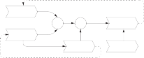
Resource Constraints Tasks may share resources or data variables protected by semaphores. A task must follow its given semaphore access pattern to lock and unlock semaphores, which is the resource constraint on the task. The access to semaphores will be scheduled using priority ceiling protocols e.g. the highest locker protocol [10]. A semaphore access pattern for a task is a list of timed semaphore-operations in the form: {Si(Pi, Vi)} where Si is the semaphore name, Pi is the accumulated execution time needed for the task to reach the lock- operation on Si and Vi is the accumulated execution time needed for the task to reach the unlock-operation on Si. The blocking time for Si is Vi - Pi. An example semaphore access pattern {S1(3, 13)}; S2(6, 11)} of a task is illustrated in Figure 2. The task will try to lock S1 when it has been executed for 3 time units and it will lock it for 10 time units.
2.2 Timed Automata as Task Arrival Patterns
The core of the TIMES input language is timed automata extended with data variables [9] and tasks [5] and [7]. As in the UPPAAL model, each edge of such an extended automaton is labeled with three labels:
1. a guard containing a clock constraint and/or a predicate on data variables.
2. an action which can be an input or output action in the form of a! and a?.
3. a sequence of assignments in the form: x := 0 when x is a clock or v := E when v is a data variable, where E is a mathematical expression over data variables and constants.
A location of an extended automaton may be annotated with a task or a set of tasks that will be triggered when the transition leading to the location is taken. The triggered tasks will be put in a task queue (i.e. ready queue in operating system) and scheduled to run according to a given scheduling policy. The scheduler should make sure that all the task constraints are satisfied in scheduling the tasks in the task queue. To model concurrency and synchronisa- tion between automata, networks of automata are constructed in the standard way as in e.g. UPPAAL with the annotated sets of tasks on locations unioned.
2.3 Shared Data Variables
Four types of shared data variables can be used for communication and resource sharing:
1. Tasks may have shared variables with each others, protected by semaphores.
2. Tasks may read and update variables owned by the automata.
3. Automata can read (but not update) variables owned by the tasks.
4. Automata may have shared variables with each other.
3 Analysis and Synthesis
In TIMES, a timed automaton annotated with tasks (or network of such au- tomata) is considered as a design model. The tool offers two main functions: schedulability analysis of design models and generation of executable code from the models.
3.1 Schedulability Analysis
In [7], an operational semantics for timed automata extended with tasks is de- veloped. A semantic state of such an automaton is a triple (l, u, q) where l is the current control location, u denotes the current values of clocks and data variables, and q is the current task queue keeping all the released tasks to be executed. The semantics of an automaton is defined by a transition system in which the transition rules are parameterized by a scheduling policy to schedule the task queue when new tasks are released.
Given an extended automaton and a scheduling policy, the related schedula- bility analysis problem is to check whether there exists a reachable state (l, u, q) of the automaton where the task queue q contains a task which misses its given deadline. Such states are called non-schedulable states. An automaton is said to be non-schedulable with the given scheduling policy if it may reach a non- schedulable state. Otherwise the automaton is schedulable. As the number of reachable states of an extended automaton is infinite, it is not obvious that the schedulability analysis problem is decidable.
The first decidability result is presented at TACAS 2002 showing that the schedulability checking problem for the optimal scheduling policy i.e. EDF can be solved by reachability analysis on timed automata extended with subtraction on clocks. Consider an automaton A and a scheduling strategy Sch. To check if A is schedulable with Sch, we construct timed automata E(Sch) (the scheduler), and E(A) (the task arrival pattern), and check the reachability of a predefined error state in the product automaton of the two. If the error state is reachable, automaton A is not schedulable with Sch.
The maximal number of clock variables needed in constructing the sched-
uler automaton is 2n where n is the total number of schedulable task instances EiPi iwireis where k is the set of task types, and ei, wi are the computing
time and deadline for each task type i.
To construct E(A), the automaton A is annotated with distinct synchroniza- tion actions releasei on all edges leading to locations labeled with the task name Pi (assume that only one task is annotated). The actions will allow the scheduler to observe when a task is released by A for execution. The structure of E(Sch) is shown in Figure 3.
The main idea is to keep track of the task queue, denoted by q on each step of the reachability analysis. Therefore in the encoding E(Sch) there is a transition with the guard nonschedulable(q) from every location where the queue is not empty (i.e. from all locations except Idle) to the error state. In the encoding, the task queue q is represented as a vector containing pairs of clocks (ci, di) for every
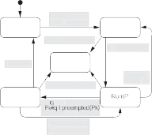
C
Idle
Arrived(Pi)
Error
releasei
q:=Pi :q
nonschedulable(q)
C
Finish
j)
j<=Cj
Pj:=Hd(Sch(q))
Pj:=Hd(Sch(q))
not(empty(q))
q:=Pi :q
releasei
nonschedulable(q)
==Cj
k = k-Cj
empty(q)
F igure3 .Scheduhe rdutmruton
released task instance1 called execution time and deadline clock respectively. The intuitive interpretation of the locations in E(Sch) is as follows:
Idle - the task queue is empty1
Arrived(Pi) - the task instance Pi has arrived1
Run(Pj) - the task instance Pj is running1
Finished - a task instance has finished1
Error - the task queue is non-schedulable.
Locations Arrived(Pi) and Finished are marked as committed1 which means that they are being left directly after entering.
We use the predicate nonschedulable(q) to denote the situation when the task queue becomes non-schedulable and naturally there is a transition labeled with the predicate leading to the error-state. The predicate is encoded as follows: 3Pi E q such that di > Di.
We use Sch in the encoding as a name holder for a scheduling policy to sort the tasks queue. A given scheduling policy is represented by the predicate: Pi = Hd(Sch(q)). For example1 Sch can be:
Highest priority first (FPS): Pi E q, \:Pk E q Pri(Pi) ::; Pri(Pk) where Pri(P) denotes the fixed priority of P .
First come first served (FCFS): Pi E q, \:Pk E q di 2: dk
Earliest deadline first (EDF): Pi E q, \:Pk E q Di - di ::; Dk - dk
Least laxity first (LLF): Pi E q, \:Pk E q ci - di + Di - Ci ::; ck - dk + Dk - Ck For more detailed description of the automaton E(Sch)1 see 7].
Variant execution times. The analysis for tasks with constant execution times can be extended to deal with interval execution times: [CiB , CiW ] for each task Pi (the best case and worst case execution times). The idea is to modify the scheduler automaton as shown in Figure 4. We use ci to keep track of the lower
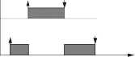
c1:=0 C1 <=c1<=C1 +w1
w1:=C1 -C1
B
B
W B
t
P1
P0
c0:=0
c1:=c0-C1B
C0 <=c0<=C0 +w0
B B
W
w0:=C0 -C0B w0:=w0+w1
Figure4. Varying execution times.
bound of the accumulated execution time for Pi, and wi to denote the accu- mulated difference between best and worst completion time of Pi. Obviously wi should be set to CiW - CiB in the beginning of task execution. Observe that each preemption will enlarge the difference for the preempted task with lower priority by the difference for the finishing task with higher priority. Accordingly, we modify the scheduler automaton as follows: The guard on edge from loca- tion Run(Pj) to Finished should be Cj B ::: cj ::: Cj B + wj and variable updating
should be ck := ck - CjB 1 wk := wk + wj for all k such that preempted(Pk). The
rest of the scheduler automaton reamins the same as before.
Fixed priority scheduling policy. In a recent work [6], it is shown that the schedu- lability problem for Fixed Priority Scheduling Policy can be solved efficiently using ordinary timed automata with only two clock variables (in addition to the original clocks used to describe task arrivals). For models with shared data variables (e.g. data dependent control when the values of data variables of a task may influence the release time of task instances), the number of clocks needed in the analysis is n +1 where n is the number of tasks involved in the data shar- ing. More recently these results are extended to handle precedence and resource constraints [8] and implemented in TIMES.
3.2 Code Generation
The second main function of the tool is code generation. We consider automata extended with tasks as design models. Code generation is to transform a vali- dated design model to executable code whose execution preserves the behaviour of the model. We assume that the generated code will be executed on a platform on which every annotated task in the design model will not take more than the given computing time. Further assume that the platform guarantees the syn- chronous hypothesis in the sense that the times for handling system functions
e.g. collecting external events can be ignored compared with the computing times and deadlines for the annotated tasks. Under these assumptions on the platform, code generation is essentially to resolve non-determinism in the design model.
Deterministic semantics A model can exhibit two types of non-determinism: time non-determinism, i.e. that enabled transition can be taken at any time point
within the time-zone1 and external non-determinism i.e. that several actions may be simultaneously present from the environment. To overcome the problems introduced by this we adopt a deterministic semantics that define a subset of the behaviour. External non-determinism is resolved by defining priorities for action transitions in the controller. If several transitions are enabled in a state the one with the highest priority is taken. Time non-determinism is resolved by adopting the so-called maximal-progress assumption 11]. Maximal-progress means that the controller should take all enabled transitions until the system stabilises1 i.e. no more action transitions are enabled.
Stru ture of the generated ode TIMES is currently able to generate code for a small generic operating system (brickOS)1 and code for platform independent execution. The generated code is in C and an optimising compiler is used to compile the final program. For both cases1 the control structure of the timed automata is encoded into four tables and two functions. These are used by an event handling procedure which is invoked on events (such as timeouts and ar- rival of external events) to update the state of the controller. When an action transition has been executed the event handling procedure will continue to ex- ecute transitions until a stable state is reached1 i.e. it implements the maximal progress or run-to-completion semantics.
Code generation for brickOS brickOS is a small open source operating sys- tem designed to run on the Hitachi H8 equipped RCX control brick in the LEGOMindstorms system. We consider brickOS to be a reasonable example of a target platform running a small operating system. On this target we let the tasks execute as separate threads which are scheduled by the underlying operat- ing system. Due to limited support for interrupts the event handling procedure is executed every time the OS scheduler is executed (i.e. every 20 ms).
Platform-independent ode generation The platform independent target does not rely on any specific operating system1 instead it implements its own run-time system based on the scheduler automaton created for schedulability analysis. The run-time system also includes code to handle task release and execution1 and an event handler that is invoked periodically to poll for new events. The current implementation of the platform independent code can only handle non- preemptive tasks.
4 Tool Overview
In this section1 we present the main features of TIMES1 the tool architecture and the main components in the implementation.
4.1 Features
Figure 5 illustrates a design process using TIMES. As shown in the use case1 TIMES offers the following main features:
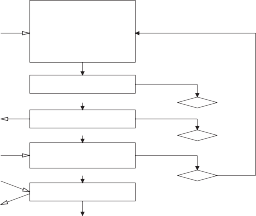
Modelling
Task parameters
Control structure
Scheduling strategy
Precedence constraints
Resource constraints
Environment model
Simulation
YES
NO
OK?
Schedulability analysis
YES
NO
OK?
Verification
Logical and temporal properties
YES
NO
OK?
Code Synthesis
Animation
Executable application code
Task code
Functional and safety requirements
Worst Case Response Times
Functional specification
Assumptions about environment
Figure5. The design process using TIMES·
Editor (see Figure 6) to graphically model a system and the abstract be- haviour of its environment. A system description consists of a task set and a network of timed automata extended with the tasks.
A task is described by the task code (in C), its (worst-case) computation time and (relative) deadline, and if applicable optional parameters for priority (for fixed priority scheduling), period (for periodic tasks), and minimal inter- arrival time (for sporadic tasks). It is also possible to specify precedence constraints on the tasks using an editor for AND/OR precedence graphs, and resource access patterns using semaphores.
Simulator (see Figure 7) to visualise the dynamic behaviour of a system model as Gantt charts and message sequence charts. The simulator can be used to randomly generate possible execution traces, or alternatively the user can control the execution by selecting the transitions to be taken. The simulator can also be used to visualise error traces produced in the analysis phase.
Analyser to check that the tasks associated to a system model are guar- anteed to always meet their deadline. In case schedulability analysis finds a task that may fail to meet its deadline, a trace is generated and visualised in the simulator. It is also possible to compute the worst-case response times of individual tasks. Recently, an improved schedulability analysis algorithm has been developed for tasks with fixed priorities without dependencies 6]. The schedulabilty analysis has also been extended to handle resource and precedence constraints 8]. In addition to scheduling, it is possible analyse safety and liveness properties specified as temporal logic formulae.
Compiler to generate executable C code from timed automata with tasks. The compiler assumes that the target platform ensures the asynchronous
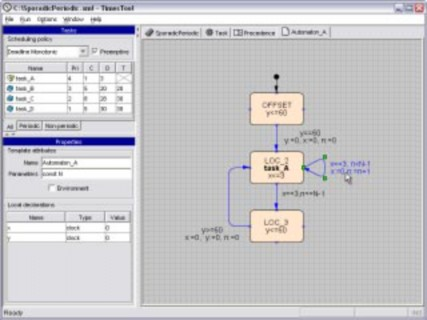
Figure6. The TIMES editor.
hypothesis and that the task code can be executed in the specified computa- tion time. To produce executable code, the compiler relies on a deterministic refinement of the semantics that realise a subset of the behaviour speci- fied in the timed automata of a system model. In this way, the generated code is guaranteed to satisfy analysis results from e.g. schedulabilty analysis when executed on the target platform. The currently implemented compiler supports code generation for: the brickOS operating system (that uses the scheduler in the brickOS runtime system), platform independent code (C code for GNU gee, including code for a scheduling policy), and code for the
nimator of TInIE.
Animator to transform hybrid automata modeling the controlled environ- ment into C code simulating the controlled objects in the environment of the embedded system. The simulated environment enables the designer to experiment with the design prior to implementation.
4.2 Implementation
The architecture of the TInIE tool is illustrated in Figure 8. Logically it is divided in three main parts:
Graphical User Interface consisting of editors, simulator, analyser, and animator, as described above. The graphical user interface is implemented
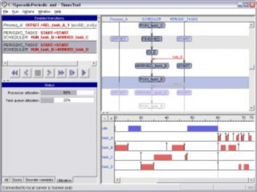
Figure7. The TIMES simulator.
entirely in Java and uses XML to represent the system descriptions both internally and externally (on file).
Server consisting of two parts: a scheduler generator implemented in Java, and a module for schedulabilty analysis based on the Uppaal engine [9] with extensions, like the rest of the Uppaal engine implemented in C++. The scheduler generator produces a scheduler automaton based on input from the editor, which is composed in parallel with an annotated version of the original system automata. The parallel composition is analysed by on-the-fly reacha- bility techniques in the schedulabilty analysis module. Currently supported scheduling policies are: rate monotonic, deadline monotonic, fixed priority scheduling (with user defined priorities), earliest deadline first (EDF), and first come first served (FCFS). All scheduling policies support preemptive or non-preemptive task sets.
Compiler that takes as input the XML system representation from the editor and the task code segments to produce executable code of the appli- cation. The generated code consists of three main parts: a set of C-functions (look-up tables) representing the automata of the system representation, a generic part storing and updating the current state according to the look-up tables, and possibly an implementation of the scheduling strategy (in case platform independent code is produced).
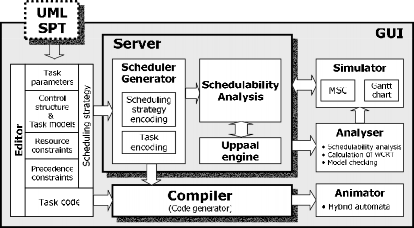
Figure8. The TIMES tool architecture.
5 Applications and Current Development
Case Studies Currently we are in the process of using TIMES to verify reliable message transmission with TTCAN (Timed Triggered CAN). So far, the only non-trivial example using TIMES is the development of the control software of a production cell (a well-studied case in verification), consisting of an industrial robot, a press and two transportation belts to process and move metal plates. The robot controller is designed as a timed automaton annotated with tasks. A complete description of the case study can be found in 2]. It is a non-trivial application involving 12 tasks (task types), 7 automata, 17 integers, 24 booleans and 31 clock variables (7 in the model and 24 in the scheduler). The schedulability (and a number of other requirements) of the system is verified on a machine equipped with two 1.8 GHz AMD processors and 2 GB of main memory, running Mandrake Linux. TIMES consumes 207 MB of memory and terminates in 11
minutes. Using the option for over approximation (based on the convex-hull approximation, the analysis requires only 13 MB and 9 seconds on the same machine.
UML SPT profile SPT (Scheduling, Performance, and Time) specification is a UML profile developed recently as an extension of the UML standard to model time and time-related aspects of embedded systems. An ongoing work has been initiated with I-Logix to develop TIMES as a plug-in tool for schedulability analysis of UML diagrams in Rhapsody, annotated with stereotypes, constraints, and tag definitions according to the UML SPT profile.
Appendix: A Brief Tutorial
This section contains a step-by-step tutorial describing how to create and verify a model using the TIMES tool.
Creating a project: Run the TIMES tool and it will open an editor with a new empty project. Specify the project name SporadicPeriodic SporadicPeriodic.xml.
Adding tasks: Start modelling by creating four tasks and specifying their parameters in the task table as shown in Figure 9(a). In order to add a periodic or non-periodic task to the task table right click inside the table and select the item Add periodic task or Add controlled task respectively. To change a task parameter double click on an appropriate field of the table and type in a new value. Select preemptive Dealine Monotonic scheduling policy as shown in Figure 9(a).
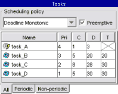 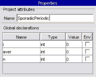
(a) Task table (b) Project properties F gure9. T MES project elemeetss
An example file representing the task table from the Figure 9(a)
is shown in Figure 10.
Declaring global variables: Declare three integer variables i1 aver and n in the global declarations table of the properties window as shown in Figure 9(b). In order to add a variable right click inside the table and select the item Add declaration from the popup menu. Assign an appropriate name to each variable and set the value of the Type field to int by making a selection from the drop- down menu.
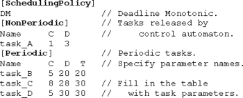
FigurelO. Task taabe speeifed as a teet fbee
Creating a control structure: The next step is creating timed automaton representing the release pattern for task A, or rather an automaton template that will be instantiated later forming a runtime release control thread for the task A.
Right click on the project tab and select the item Add template from the popup menu. A new tab named Templatel will be added to the project. Open it and enter Automaton_A in the Name field of the properties window. Type in canst N in the Parameters field and add two local clocks x and y as shown in Figure lllaa.
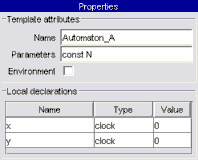 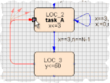
(a) Tempbate properties (a) Creating a transition Figurell. Creating an automaton tempbatee
Task name | Interface expression | Semaphores |
A B C D | aver:=(n==0?i:(aver*n+i)(n+1)) i:=i*i i:=i+1 i:=(i>=24?0:i) | res1(0,1) res1(4,5),res2(1,2) res1(3,7),res2(1,2) res1(4,5) |
Tablel. Task interfaces and semaphores
applied to the location arguments.
Specifying interfaces: After a task has completed its execution it may update some of the system variables. In order to reflect that in the model an interface between the task and the control structure is defined. In the TIMES model an interface is an expression assigned to every task describing how the global vari- ables are changed by the end of its execution. In order to define an interface select a task in the task table, then open the Tasks tab, and enter an expression in the Interface field. Use expressions from Table 5 to specify interfaces for all the tasks.
Instantiating the control structure: Control_A, the Template argument to Automaton_A and pass 5 as a constant parameter.
Introducing semaphores: Let us assume that tasks are using a shared re- source. In order to keep it in a consistent state only one party at a time is al- lowed to access it. To achieve this, a mutual exclusion mechanism between tasks is implemented based on the semaphores associated with the shared resources. The lock and unlock primitives, which delimit a critical section, are defined by the time points relative to the task execution time. The list of semaphores with lock/unlock time points is specified for each task in the Semaphores field of the Tasks tab in the form:
semaphore_name(lock_timepoint, unlock_timepoint), ...
For example, an expression resl(4, 5) is read "the task has an exclusive access to the resource controlled by a semaphore resl for 1 time unit staring at the moment it has been running for 4 time units". In our example there are two resources guarded by semaphores resl and res2 respectively. Use expressions from Table 5 to define semaphores for all the tasks.
task_D
task_C
Creating a precedence graph: Sometimes tasks have to respect certain prece- dence relations to express, for example, explicit input/output relation between them. A precedence graph allows us to describe these relations inducing a partial order over a task set. Here we show how to specify such order between task D and task C such that task D will always precede task C. Open the Precedence tab, and create two graph nodes using procedure similar to one of creating locations in the automaton template. Set the task argument to task_D for one node and task_C for another. Create a precedence relation starting at node task D and ending at node task C using the technique similar to one for creating transitions in the automaton template. The final result should look as in Figure 12.
F gure12. The apeeeeeeee prah
Simulating the system: Simulation is the first step in the model analysis. Run the simulator selecting item Run
checking procedure will be run automatically and if the model is syntactically correct, the simulator window will be opened immediately (see Figure 7).
The simulator window is divided in four parts: Enabled transitions, Message sequence chart (MSC), Gantt chart, and Watches. In the first part there is a list of transitions that the system can perform from the current state. The message se- quence chart displays processes within the control structure and communications between those. For example, the timed automaton, which we have instantiated with the name Process_A is displayed as the leftmost process. Process that controls releases of periodic tasks as well as the scheduler process have been generated automatically by the TIMES tool. Red horizontal arrows in MSC show message passing between the processes. For example, the scheduler process re- ceives notifications about task releases from the task control processes. On the Gantt chart one can see the timeline with the tasks being executed, and the processor idle time. The watches part has a tabbed layout and is intended for tracing the values of variables, clocks, and other readings such as processor uti- lization, and task queue utilization during simulation. Use the control buttons to start simulation in a step-by-step or random run mode.
Let us check using the simulator that the precedence relation between task D and task C holds, and the shared resource is accessed by the tasks correctly. Indeed, as follows from the Gantt chart shown in Figure 7, task C is preempted twice by task D due to a precedence relation, even though task C has a higher priority. Shared resource is exclusively accessed by the tasks causing blocking of the task B on an interval 40,42], and task A on an interval 66,67].
Analysing schedulability: Schedulability analysis checks, exploring all possi- ble execution traces, whether resources needed to execute tasks are assigned so that all the tasks meet their deadlines. Run the schedulability analysis selecting the item Run---Schedulability analysis from the main menu. The result should be SATISFIED. Once schedulability analysis has been performed and the result is positive, the values of the task worst case response times (WCRT) are available. These values are the longest times needed for a task to complete its execution taken among all its instances. In order to display a list of WCRT values press the Show WCRT button in a schedulability analysis dialog window. Clearly, in a correct system WCRT value of a given task should be greater or equal than its execution time and less or equal than its relative deadline.
Checking safety and liveness properties: Apart from schedulability, other model properties can be checked. Safety properties assert what the system al- lowed to do, or equivalently, what it may not do, while liveness properties spec- ify what the system must do. Open the verifier dialog window by selecting Run---Veriication from the main menu. Enter and check the following proper- ties:
A[] (aver<10) (The variable aver is always lower than 10)
E<> (aver>5) (The variable aver eventually becomes greater than 5)
After obtaining the result of the verification of the last property press the Show trace button in the verification dialog window. The shortest execution trace satisfying the liveness property will be loaded in the simulator. Use the variable watches to check that the value of the variable aver is greater than 5. Navigate the simulator one step back along the trace and ensure that aver is less than 5.
Generating executable application code: Before generating executable ap- plication code out of the model it is necessary to associate appropriate pieces of the code with every task. Close the simulator and open the Tasks tab in the editor. Under this tab there is a text editor where you can create the code and associate it with the task. Enter the code from Table 5 to the corresponding task code editors and save each piece in a separate file on the disk. A reference to the saved file should appear in the Code pointer field in the Tasks tab.
Select Run---Code synthesis in the main menu to run the code generator. This will create C-code in SporadicPeriodic.c and SporadicPeriodic.h files. Additional target specific files will be created in the same directory together with the make
Task A | Task B |
if( n == 0 ) { aver = i; } else { aver = (aver*n+i)/(n+1); } | #include <math.h> i = pow( i , 2 ); |
Task C | Task D |
i = i + 1; | if ( i >= 24 ) i = 0; |
T b le2 Task code.
file. Build an application by executing make in the source directory.
References
1. T. Amnell, E. Fersman, L. Mokrushin, P. Pettersson, and W. Yi. Times - a tool for modelling and implementation of embedded systems. In Proc. of TACAS 02, volume 2280 of LNCS, pages 460-464. Springer, 2002.
2. Tobias Amnell, Elena Fersman, Paul Pettersson, Hongyan Sun, and Wang Yi. Code synthesis for timed automata. Nordic Journal of Computing, 9(4):269-300, 2002.
3. F. Balarin, L. Lavagno, P. Murthy, and A. Sangiovanni-vincentelli. Scheduling
for embedded real-time systems. IEEE Design & Test of Computers, 15(1):71-82, 1998.
4. G. C. Buttazzo. Hard Real-Time Computing Systems. Predictable Scheduling Al-
gorithms and Applications. Kulwer Academic Publishers, 1997.
5. C. Ericsson, A. Wall, and W. Yi. Timed automata as task models for event-driven systems. In Proceedings of Nordic Workshop on Programming Theory, 1998.
6. E. Fersman, L. Mokrushin, P. Pettersson, and W. Yi. Schedulability analysis using two clocks. In Proc. of TACAS 03, volume 2619 of LNCS, pages 224-239. Springer, 2003.
7. E. Fersman, P. Pettersson, and W. Yi. Timed automata with asynchronous pro- cesses: Schedulability and decidability. In Proc. of TACAS 02, volume 2280 of LNCS, pages 67-82. Springer, 2002.
8. Elena Fersman and Wang Yi. A generic approach to schedulability analysis of real-time tasks. Submitted for publication., 2003.
9. K. G. Larsen, P. Pettersson, and W. Yi. UppAAL in a Nutshell. Int. Journal on
Software Tools for Technology Transfer, 1(1-2):134-152, October 1997.
10. R. Rajkumar, L. Sha, and J.P. Lehoczky. An experimental investigation of syn- chronisation protocols. In Proceedings 6th IEEE Workshop on Real-Time Operating Systems and Software, pages 11-17. IEEE Computer Society Press, 1998.
11. Wang Yi. A Calculus of Real Time Systems. PhD thesis, Department of Computer Science, Chalmers University of Technology, 1991.
Real-Time Systems and Programming Languages
Ada, Real-Time Java and C/Real-Time POSIX
Fourth Edition
Alan Burns and Andy Wellings
University of York
"f'.A,."f' ADDISON-WESLEY
An imprint of Pearson Education
Harlow, England • London • New York • Boston • San Francisco • Toronto • Sydney • Singapore • Hong Kong Tokyo • Seoul • Taipei • New Delhi • Cape Town • Madrid • Mexico City • Amsterdam • Munich • Paris • Milan
Pearson Education Limited
Edinburgh Gate Harlow
Essex CM20 2JE England
and Associated Companies throughout the world
Visit us on the World Wide Web at:
First published 1989
Second edition 1997
Third edition 2001
Fourth edition published 2009
© Pearson Education Limited 1989, 2009
The rights of Alan Burns and Andy Wellings to be identified as authors of this work have been asserted by them in accordance with the Copyright. Designs and Patents Act 1988.
All rights reserved. No part of this publication may be reproduced, stored in a retrieval system, or transmitted in any form or by any means, electronic, mechanical, photocopying, recording or otherwise, without either the prior written permission of the publisher or a licence permitting restricted copying in the United Kingdom issued by the Copyright Licensing Agency Ltd, Saffron House, 6-10 Kirby Street, London EC1N 8TS.
All trademarks used herein are the property of their respective owners. The use of any trademark in this text does not vest in the author or publisher any trademark ownership rights in such trademarks, nor does the use of such trademarks imply any affiliation with or endorsement of this book by such owners.
ISBN: 978-0-321-41745-9
British Library Cataloguing-in-Publication Data
A catalogue record for this book is available from the British Library
Library of Congress Cataloging-in-Publication Data
A catalogue record for this book can be obtained from the Library of Congress 10987654321
1312111009
Typeset in Times Roman 10/12 by 73
Printed in Great Britain by Henry Ling Ltd., at the Dorset Press, Dorchester, Dorset
The publisher's policy is to use paper manufactured from sustainable forests.
Chapter 11
Scheduling real-time systems
The cyclic executive 11.10 An extendible task model for approach FPS
Task-based scheduling 11.11 Earliest deadline first (EDF)
Fixed-priority scheduling scheduling
(FPS) 11.12 Dynamic systems and
Utilization-based online analysis schedulability tests for FPS 11.13 Worst-case execution time
Response time analysis 11.14 Multiprocessor scheduling (RTA) for FPS 11.15 Scheduling for power-aware
Sporadic and aperiodic systems
tasks 11.16 Incorporating system
Task systems with D < T overheads
Task interactions and Summary blocking Further reading
Priority ceiling protocols Exercises
In a concurrent program, it is not necessary to specify the exact order in which tasks execute. Synchronization primitives are used to enforce the local ordering constraints, such as mutual exclusion, but the general behaviour of the program exhibits significant non-determinism. If the program is correct then its functional outputs will be the same regardless of internal behaviour or implementation details. For example, five independent tasks can be executed non-preemptively in 120 different ways on a single processor. With a multiprocessor system or preemptive behaviour, there are infinitely more interleavings.
While the program's outputs will be identical with all these possible inter leavings, the timing behaviour will vary considerably. If one of the five tasks has a tight deadline then perhaps only interleavings in which it is executed first will meet the program's temporal requirements. A real-time system needs to restrict the non-determinism found within concurrent systems. This activity is known as scheduling. In general, a scheduling scheme provides two features:
An algorithm for ordering the use of system resources (in particular the CPUs).
A means of predicting the worst-case behaviour of the system when the scheduling algorithm is applied.
365
The predictions can then be used to confirm that the temporal requirements of the system are satisfied.
A scheduling scheme can be static (if the predictions are undertaken be fore execution) or dynamic (if run-time decisions are used). This chapter will concentrate mainly on static schemes. Most attention will be given to preemptive priority-based schemes on a single processor system. Here, tasks are assigned priorities such that at all times the task with the highest priority is executing (if it is not delayed or otherwise suspended). A scheduling scheme will therefore involve a priority assignment algorithm and a schedulability test. Other scheduling ap proaches, such as EDF, and multiprocessor and energy issues are also covered in this chapter. The first approach to be review, however, will be the traditional scheme involving the production of a cyclic executive. All issues concerned with programming schedulable systems are covered in the next chapter.
The cyclic executive approach
With a fixed set of purely periodic tasks, it is possible to lay out a complete schedule such that the repeated execution of this schedule will cause all tasks to run at their correct rate. The cyclic executive is, essentially, a table of procedure calls, where each procedure represents part of the code for a 'task'. The complete table is known as the major cycle; it typically consists of a number of minor cycles each of fixed duration. So, for example, four minor cycles of 25 ms duration would make up a 100 ms major cycle. During execution, a clock interrupt every 25 ms will enable the scheduler to loop through the four minor cycles. Table 11.1 provides a task set that must be implemented via a simple four-slot major cycle. A possible mapping onto the cyclic executive is shown in Figure 11.1, which illustrates the job that the processor is executing at any particular time.
Task | Period, T | Computation time, C | ||
a | 25 | 10 | ||
b | 25 | 8 | ||
C | 50 | 5 | ||
d | 50 | 4 | ||
e | 100 | 2 |
Table 11.1 Cyclic executive task set.
Interrupt i Interrupt t Interrupt i Interrupt
i-a--I
-b-lcl_ a I
b I d HI a 'b l ..cI _ a I 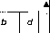
Time
Figure 11.1 Time-line for task set.
Even this simple example illustrates some important features of this approach.
No actual tasks exist at run-time; each minor cycle is just a sequence of procedure calls.
The procedures share a common address space and can thus pass data between themselves. This data does not need to be protected (via a semaphore, for example) because concurrent access is not possible.
All 'task' periods must be a multiple of the minor cycle time.
This final property represents one of the major drawbacks of the cyclic executive ap proach; others include (Locke, 1992):
the difficulty of incorporating sporadic tasks;
the difficulty of incorporating tasks with long periods; the major cycle time is the maximum period that can be accommodated without secondary schedules (that is, a procedure in a major cycle that will call a secondary procedure every N major cycles);
the difficulty of actually constructing the cyclic executive;
any 'task' with a sizeable computation time will need to be split into a fixed number of fixed sized procedures (this may cut across the structure of the code from a software engineering perspective, and hence may be error-prone).
If it is possible to construct a cyclic executive then no further schedulability test is needed (the scheme is 'proof by construction'). However, for systems with high utilization, the building of the executive is problematic. An analogy with the classical bin packing problem can be made. With that problem, items of varying sizes (in just one dimension) have to be placed in the minimum number of bins such that no bin is over-full. The bin packing problem is known to be NP-hard and hence is computationally infeasible for sizeable problems (a typical realistic system will contain perhaps 40 minor cycles and 400 entries). Heuristic sub-optimal schemes must therefore be used.
Although for simple periodic systems, the cyclic executive will remain an appropri ate implementation strategy, a more flexible and accommodating approach is furnished by the task-based scheduling schemes. These approaches will therefore be the focus in the remainder of this chapter.
Task-based scheduling
With the cyclic executive approach, at run-time, only a sequence of procedure calls is executed. The notion of task (thread) is not preserved during execution. An alternative approach is to support task execution directly (as is the norm in general-purposeoperating systems) and to determine which task should execute at any one time by the use of one or more scheduling attributes. With this approach, a task is deemed to be in one of a number of states (assuming no intertask communication):
runnable;
suspended waiting for a timing event - appropriate for periodic tasks;
suspended waiting for a non-timing event - appropriate for sporadic tasks.
Scheduling approaches
There are, in general, a large number of different scheduling approaches. In this book we will consider three.
Fixed-Priority Scheduling (FPS) - this is the most widely used approach and is the main focus of this chapter. Each task has a fixed, static, priority which is computed pre-run-time. The runnable tasks are executed in the order determined by their priority. In real-time systems, the 'priority' of a task is derived from its temporal requirements, not its importance to the correct functioning of the system or its integrity.
Earliest Deadline First (EDF) Scheduling - here the runnable tasks are exe cuted in the order determined by the absolute deadlines of the tasks; the next task to run being the one with the shortest (nearest) deadline. Although it is usual to know the relative deadlines of each task (e.g. 25 ms after release), the abso lute deadlines are computed at run-time, and hence the scheme is described as dynamic.
Value-Based Scheduling (VBS) - if a system can become overloaded (current utilization greater than 100%) then the use of simple static priorities or deadlines is not sufficient; a more adaptive scheme is needed. This often takes the form of assigning a value to each task and employing an online value-based scheduling algorithm to decide which task to run next.
As indicated earlier, the bulk of this chapter is concerned with FPS as it is supported by various real-time languages and operating system standards. The use of EDF is also important and some consideration of its analytical basis is given in the following discussions. A short description of the use of VBS is given towards the end of the chapter in Section 11.12.
Scheduling characteristics
There are a number of important characteristics that can be ascribed to a scheduling test. The two most important are sufficiency and necessity.
A schedulability test is defined to be sufficient if a positive outcome guarantees that all deadlines are always met.
A test can also be labelled as necessary if failure of the test will indeed lead to a deadline miss at some point during the execution of the system.
A sufficient and necessary test is exact and hence is in some sense optimal; a sufficient but not necessary test is pessimistic, but for many situations an exact test is intractable. From an engineering point of view, a tractable sufficient test with low pessimism is ideal.
A scheduling test is usually applied to the worst-case behavioural description of the application. A system is schedulable with respect to a specified scheduling policy if it will meet all its timing requirements when executed on its target platform with that
scheduling policy. A scheduling test is said to be sustainable if it correctly predicts that a schedulable system will be remain schedulable when its operational parameters 'improve' - for example, if a system is schedulable it should remain so if some of its tasks have their periods or deadlines increased, or their resource requirement reduced; or if the application is moved to a faster processor.
Preemption and non-preemption
With priority-based scheduling, a high-priority task may be released during the execution of a lower-priority one. In a preemptive scheme, there will be an immediate switch to the higher-priority task. Alternatively, with non-preemption, the lower-priority task will be allowed to complete before the other executes. In general, preemptive schemes enable higher-priority tasks to be more reactive, and hence they are preferred. Between the extremes of preemption and non-preemption, there are alternative strategies that allow a lower-priority task to continue to execute for a bounded time (but not necessarily to completion). These schemes are known as deferred preemption or cooperative dispatching. These will be considered again in Section 11.10.3. Before then, dispatching will be assumed to be preemptive. Schemes such as EDF and VBS can also take on a preemptive or non-preemptive form.
Simple task model
An arbitrarily complex concurrent program cannot easily be analysed to predict its worst-case behaviour. Hence it is necessary to impose some restrictions on the structure of real-time concurrent programs. This section will present a very simple model in order to describe some standard scheduling schemes. The model is generalized in later sections of this chapter. The basic model has the following characteristics.
The application is assumed to consist of a fixed set of tasks.
All tasks are periodic, with known periods.
The tasks are completely independent of each other.
All system overheads, context-switching times and so on are ignored (that is, assumed to have zero cost).
All tasks have deadlines equal to their periods (that is, each task must complete before it is next released).1
All tasks have fixed worst-case execution times.
No task contains any internal suspension points (e.g. an internal delay statement or a blocking 1/0 request).
All tasks execute on a single processor (CPU).
1 As the deadline is derived from the task's period it is sometimes referred to as an implicit deadline. It the deadline value is different from the period then the deadline is explicit.

Notation Description
B C D I J N
p
R
T
u
a-z
Worst-case blocking time for the task (if applicable) Worst-case execution time (WCET) of the task Deadline of the task
The interference time of the task Release jitter of the task Number of tasks in the system
Priority assigned to the task (if applicable) Worst-case response time of the task
Minimum time between task releases (task period) The utilization of each task (equal to CIT)
The name of a task
Table 11.2 Standard notation.
One consequence of the task's independence is that it can be assumed that at some point in time all tasks will be released together. This represents the maximum load on the processor and is known as a critical instant. Table 11.2 gives a standard set of notations for task characteristics.
Each task is assumed to give rise to a (potentially) infinite series of executions.
Each execution is known as an invocation (release) of the task or simply as a job.
Fixed-priority scheduling (FPS)
With the straightforward model outlined above, there exists a simple optimal priority assignment scheme for FPS known as rate monotonic priority assignment. Each task is assigned a (unique) priority based on its period: the shorter the period, the higher the priority (that is, for two tasks i and j, < Tj => Pi > Pj ). This assignment is
optimal in the sense that if any task set can be scheduled (using preemptive priority based scheduling) with a fixed-priority assignment scheme, then the given task set can also be scheduled with a rate monotonic assignment scheme. Table 11.3 illustrates a five task set and shows what the relative priorities must be for optimal temporal behaviour. Note that priorities are represented by integers, and that the higher the integer, the greater the priority. Care must be taken when reading other books and papers on priority-based
Task | Period, T | Priority, P |
a | 25 | 5 |
b | 60 | 3 |
C | 42 | 4 |
d | 105 | |
e | 75 | 2 |
Table 11.3 Example of priority assignment.
scheduling, as often priorities are ordered the other way; that is, priority 1 is the highest. In this book, priority 1 is the lowest, as this is the normal usage in most programming languages and operating systems.
Utilization-based schedulability tests for FPS
This section describes a very simple schedulability test for FPS which, although not exact, is attractive because of its simplicity.
Liu and Layland (1973) showed that by considering only the utilization of the task set, a test for schedulability can be obtained (when the rate monotonic priority ordering is used). If the following condition is true then all N tasks will meet their deadlines (note that the summation calculates the total utilization of the task set):
i=l
t ( :) ::S N(21/N- 1)
I
(11.1)
Table 11.4 shows the utilization bound (as a percentage) for small values of N. For large N, the bound asymptotically approaches 69.3%. Hence any task set with a combined utilization of less than 69.3% will always be schedulable by a preemptive priority-based scheduling scheme, with priorities assigned by the rate monotonic algorithm.
Three simple examples will now be given to illustrate the use of this test. In these examples, the units (absolute magnitudes) of the time values are not defined. As long as all the values (Ts, Cs and so on) are in the same units, the tests can be applied. So in these (and later examples), the unit of time is just considered to be a tick of some notional time base.
Table 11.5 contains three tasks that have been allocated priorities via the rate monotonic algorithm (hence task c has the highest priority and task a the lowest). Their
N | Utilization bound | ||
1 | 100.0% | ||
2 | 82.8% | ||
3 | 78.0% | ||
4 | 75.7% | ||
5 | 74.3% | ||
10 | 71.8% |
Table 11.4 Utilization bounds.
Task | Period, T | Computation time, C | Priority, P | Utilization, U | ||
a | 50 | 12 | 1 | 0.24 | ||
b | 40 | 10 | 2 | 0.25 | ||
C | 30 | 10 | 3 | 0.33 |
Table 11.5 Task set A.
Process
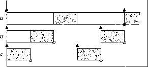
0 10 20 30 40 50 60
Time .
t Process release time
o Process completion time - deadline met
Deadline missed
Executing
□
Preempted
Figure 11.2 Time-line for task set A.
combined utilization is 0.82 (or 82%). This is above the threshold for three tasks (0.78), and hence this task set fails the utilization test.
The actual behaviour of this task set can be illustrated by drawing out a time-line. Figure 11.2 shows how the three tasks would execute if they all started their executions at time 0. Note that, at time 50, task a has consumed only 10 ticks of execution, whereas it needed 12, and hence it has missed its first deadline.
Time-lines are a useful way of illustrating execution patterns. For illustration, Figure 11.2 is drawn as a Gantt chart in Figure 11.3.
The second example is contained in Table 11.6. Now the combined utilization is 0.775, which is below the bound, and hence this task set is guaranteed to meet all its deadlines. If a time-line for this set is drawn, all deadlines would be satisfied.
Although cumbersome, time-lines can actually be used to test for schedulability. But how far must the line be drawn before one can conclude that the future holds no surprises? For task sets that share a common release time (that is, they share a critical instant), it can be shown that a time-line equal to the size of the longest period is sufficient (Liu and Layland, (1973)). So if all tasks meet their first deadline then they will meet all future ones.

C b a C b
0 10 20 30 40 50
Time .
Figure 11.3 Gantt chart for task set A.
Task | Period, T | Computation time, C | Priority, P | Utilization, U | ||
a | 80 | 32 | 1 | 0.400 | ||
b | 40 | 5 | 2 | 0.125 | ||
C | 16 | 4 | 3 | 0.250 |
Table 11.6 Task set B.
Task | Period, T | Computation time, C | Priority, P | Utilization, U | ||
a | 80 | 40 | 1 | 0.50 | ||
b | 40 | 10 | 2 | 0.25 | ||
C | 20 | 5 | 3 | 0.25 |
Table 11.7 Task set C.
A final example in given in Table 11.7. This is again a three-task system, but the combined utility is now 100%, so it clearly fails the test. At run-time, however, the behaviour seems correct, all deadlines are met up to time 80 (see Figure 11.4). Hence the task set fails the test, but at run-time does not miss a deadline. Therefore, the test is sufficient but not necessary. If a task set passes the test, it will meet all deadlines; if it fails the test, it may or may not fail at run-time. A final point to note about this utilization-based test is that it only supplies a simple yes/no answer. It does not give any indication of the actual response times of the tasks. This is remedied in the response time approach described in Section 11.5.
Improved utilization-based tests for FPS
Since the publication of the Lui and Layland utilization bound a number of improvements have been developed. Here two alternative schemes are considered. First a simple re interpretation of Equation (11.1) can be employed. Rather than the N standing for the
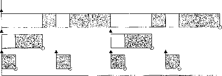
Process
a
b
C
0 10 20 30 40
Time---•►
50 60 70 80
Figure 11.4 Time-line for task set C.
number of tasks, it can be defined to be the number of distinct task families in the application. A family of tasks have periods that are multiples of a common value (for example 8, 16, 64 and 128).
Consider the task sets defined earlier. For task set B (Table 11.6) there are three tasks but only two families (the 80 and 40 periods imply a single family). So the bound for this system is now 0.828 (not 0.78). The utilization of task set Bis 0.775 so is below both bounds. However, if the period of task c is shortened to 14 (from 16) then the utilization of the task set rises to 0.81 (approximately) - this is above the Lui and Layland bound but below the new bound and hence this new task set is correctly deemed schedulable by this new test.
For task set C (see Table 11.7) there is an even more impressive improvement. Now there is only one family (as the periods are 80, 40 and 20). So the utilization bound is 1.0 and hence this system is schedulable by this test. Although this result shows the effectiveness of this approach there is a drawback with this test - it is not sustainable. Consider a minor change to the characteristics of this task set; let the period of task a move from 80 to 81. This alteration should make the system easier to schedule; a period has been extended and hence the overall utilization has been reduced (though only by a small amount from 1 to 0.994). But the move from 80 to 81 results in there now being two families and not just one, so the bound drops from 1 to 0.82. The new system cannot be proven to be schedulable (although it clearly is if the original task set was schedulable).
Another improved utilization-based test was developed by Bini et al. (2007) and has a different form:
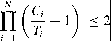 (11.2)
To give a simple example of the use of this formulation, consider again task set B (Table 11.6) with the minor modification that the period of task a is now 76 (rather than 80). The total utilization of this new system is .796 which is above the bound for three tasks, and hence schedulability is unproven. Note there are now three families so no improvement from the other approach. Applying Equation (11.2)
1.421 * 1.125 * 1.25 = 1.998 < 2
indicates that the system is schedulable by this test and, indeed, a time-line for this revised task set would show that all deadlines have been met.
Response time analysis (RTA) for FPS
The utilization-based tests for FPS have two significant drawbacks: they are not exact, and they are not really applicable to a more general task model. This section provides a different form of test. The test is in two stages. First, an analytical approach is used to predict the worst-case response time (R) of each task. These values are then compared, trivially, with the task deadlines. This requires each task to be analysed individually.
For the highest-priority task, its worst-case response time will equal its own com putation time (that is, R = C). Other tasks will suffer interference from higher-priority
tasks; this is the time spent executing higher-priority tasks when a low-priority task is runnable. So for a general task i:
(11.3)
where Ii is the maximum interference that task i can experience in any time interval
(t, t + Ri ).2 The maximum interference obviously occurs when all higher-priority tasks are released at the same time as task i (that is, at a critical instant). Without loss of
l
generality, it can be assumed that all tasks are released at time 0. Consider one task (j) of higher priority than i. Within the interval [0, Ri ), it will be released a number of times (at least one). A simple expression for this number of releases is obtained using a ceiling function:
Number_Of-Releases = r;;
The ceiling function (1l) gives the smallest integer greater than the fractional number on which it acts. So the ceiling of 1/3 is 1, of 6/5 is 2, and of 6/3 is 2. The definitions of the ceilings of negative values need not be considered. Later in this chapter floor functions are employed; they compute the largest integer smaller than the fractional part meaning that the floor of 1/3 is 0, of 6/5 is 1 and of 6/3 is again 2.
1
So, if Ri is 15 and T1 is 6 then there are three releases of task j (at times 0, 6 and 12). Each release of task j will impose an interference of C . Hence:
MaximumJnte,ference = r;;l Cj
If C1 = 2 then in the interval [0, 15) there are 6 units of interference. Each task of higher priority is interfering with task i, and hence:
Ii = I:: rRil C1
}Ehp(i) Tj
where hp(i) is the set of higher-priority tasks (than i). Substituting this value back into Equation (11.3) gives (Joseph and Pandya, 1986):
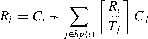
(11.4)
Although the formulation of the interference equation is exact, the actual amount of interference is unknown as Ri is unknown (it is the value being calculated). Equa tion (11.4) has Ri on both sides, but is difficult to solve due to the ceiling functions. It is actually an example of a fixed-point equation. In general, there will be many values of Ri that form solutions to Equation (11.4). The smallest such value of R; represents the worst-case response time for the task. The simplest way of solving Equation (11.4) is to
2Note that as a discrete time model is used in this analysis, all time intervals must be closed at the beginning (denoted by '[') and open at the end (denoted by a')'). Thus a task can complete executing on the same tick as a higher-priority task is released.
form a recurrence relationship (Audsley et al., 1993a):
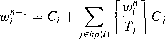
(11.5)
The set of values { wf, w/, wf, ..., w?, ...} is, clearly, monotonically non decreasing. When w;1 = w;i+1, the solution to the equation has been found. If wf < R
then w;1 is the smallest solution and hence is the value required. If the equation does not have a solution then thew values will continue to rise (this will occur for a low-priority task if the full set has a utilization greater than 100%). Once they get bigger than the task's period, T, it can be assumed that the task wi11 not meet its deadline. The starting value for the process, w?, must not be greater than the final (unknown) solution Ri. As Ri C a safe starting point is C - there are, however, more efficient starting values (Davis et al., 2008).
The above analysis gives rise to the following algorithm for calculation response times:
for i in 1..N loop -- for each task in turn
n : = 0
w;' := C;
loop
calculate new w1+1 from Equation (11.5) if w;1+1 w;1 then
R; : = w;2
exit value found end if
if w;i+1 > T; then
exit value not found end if
n := n + 1
end loop end loop
By implication, if a response time is found it will be less than T;, and hence less than
Di, its deadline (remember with the simple task model Di = T; ).
In the above discussion, wi has been used merely as a mathematical entity for solving a fixed-point equation. It is, however, possible to get an intuition for wi from the problem domain. Consider the point of release of task i. From that point, until the task completes, the processor will be executing tasks with priority Pi or higher. The processor is said to be executing a Pi-busy period. Consider wi to be a time window that is moving down the busy period. At time O (the notional release time of task i), all higher-priority tasks are assumed to have also been released, and hence:
w} = C + I:: cj
jEhp(i)
This will be the end of the busy period unless some higher-priority task is released a second time. If it is, then the window will need to be pushed out further. This continues with the window expanding and, as a result, more computation time falling into the window. If this continues indefinitely then the busy period is unbounded (that is, there
Task | Period, T | Computation time, C | Priority, P | ||
a | 7 | 3 | 3 | ||
b | 12 | 3 | 2 | ||
C | 20 | 5 |
Table 11.8 Task set D.
is no solution). However, if at any point, an expanding window does not suffer an extra 'hit' from a higher-priority task then the busy period has been completed, and the size of the busy period is the response time of the task.
To illustrate how the RTA is used, consider task set D given in Table 11.8. The highest-priority task, a, will have a response time equal to its computation time (for
example, Ra = 3). The next task will need to have its response time calculated. Let w
equal the computation time of task b, which is 3. Equation (11.5) is used to derive the next value of w:
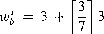
that is, wl = 6. This value now balances the equation (wl = w1 = 6) and the response time of task b has been found (that is, Rb = 6).
The final task will give rise to the following calculations:
C
WO =5
wf =5 + m3 + r 15213 = 11
w; =5 + r \'13 + r : 13 = 14
w =5+ r';l 3+ r:13=17

w: =5 + r 1;13 + r:;13 = 20
w = 5+ r27013+ r l3 = 20
Hence Re- has a worst-case response time of 20, which means that it will just meet its deadline. This behaviour is illustrated in the Gantt chart shown in Figure 11.5.
Consider again the task set C. This set failed the utilization-based test but was observed to meet all its deadlines up to time 80. Table 11.9 shows the response times calculated by the above method for this collection. Note that all tasks are now predicted to complete before their deadlines.
The response time calculations have the advantage that they are sufficient and necessary - if the task set passes the test they will meet all their deadlines; if they fail
a
0 2 4 6 8 10 12 14 16 18 20
Time .
Figure 11.5 Gantt chart for task set D.
Task | Period, T | Computation time, C | Priority, P | Response time, R | ||
a | 80 | 40 | 1 | 80 | ||
b | 40 | 10 | 2 | 15 | ||
C | 20 | 5 | 3 | 5 |
Table 11.9 Response time for task set C.
the test, then, at run-time, a task will miss its deadline (unless the computation time estimations, C, themselves turn out to be pessimistic). As these tests are superior to the utilization-based ones, this chapter will concentrate on extending the applicability of the response time method.
Sporadic and aperiodic tasks
To expand the simple model of Section 11.2.4 to include sporadic (and aperiodic) task requirements, the value Tis interpreted as the minimum (or average) inter-arrival inter val (Audsley et al., 1993a). A sporadic task with a T value of 20 ms is guaranteed not to arrive more than once in any 20 ms interval. In reality, it may arrive much less frequently than once every 20 ms, but the response time test will ensure that the maximum rate can be sustained (if the test is passed!).
The other requirement that the inclusion of sporadic tasks demands concerns the definition of the deadline. The simple model assumes that D = T. For sporadic tasks,
this is unreasonable. Often a sporadic is used to encapsulate an error-handling routine or to respond to a warning signal. The fault model of the system may state that the error routine will be invoked very infrequently - but when it is, it is urgent and hence it has a short deadline. Our model must therefore distinguish between D and T, and allow D < T. Indeed, for many periodic tasks, it is also useful to allow the application to define deadline values less than period.
An inspection of the response time algorithm for FPS, described in Section 11.5, reveals that:
I t,
it works perfectly for values of D less than T as long as the stopping criterion becomes w 1+1 > D··
it works perfectly well with any priority ordering - hp(i) always gives the set of higher-priority tasks.
Although some priority orderings are better than others, the test will provide the worst case response times for the given priority ordering.
In Section 11.7, an optimal priority ordering for D < T is defined (and proved). A later section will consider an extended algorithm and optimal priority ordering for the
general case of D < T, D = T or D > T.
Hard and soft tasks
For sporadic tasks, average and maximum arrival rates may be defined. Unfortunately, in many situations the worst-case figure is considerably higher than the average. In terrupts often arrive in bursts and an abnormal sensor reading may lead to significant additional computation. It follows that measuring schedulability with worst-case figures may lead to very low processor utilizations being observed in the actual running system. As a guideline for the minimum requirement, the following two rules should always be complied with.
Rule 1 - all tasks should be schedulable using average execution times and average arrival rates.
Rule 2- all hard real-time tasks should be schedulable using worst-case execution times and worst-case arrival rates of all tasks (including soft).
A consequence of Rule 1 is that there may be situations in which it is not possible to meet all current deadlines. This condition is known as a transient overload; Rule 2, however, ensures that no hard real-time task will miss its deadline. If Rule 2 gives rise to unacceptably low utilizations for 'normal execution', direct action should be taken to try and reduce the worst-case execution times (or arrival rates).
Aperiodic tasks and fixed-priority execution-time servers
One simple way of scheduling aperiodic tasks, within a priority-based scheme, is to run such tasks at a priority below the priorities assigned to hard tasks. In effect, the aperiodic tasks run as background activities, and therefore cannot steal, in a preemptive system, resources from the hard tasks. Although a safe scheme, this does not provide adequate support to soft tasks which will often miss their deadlines if they only run as background activities. To improve the situation for soft tasks, a server (or execution-time server) can be employed. Servers protect the tasking resources needed by hard tasks, but otherwise allow soft tasks to run as soon as possible.
Since they were first introduced in 1987, a number of server methods have been defined. Here only two will be considered: the Deferrable Server (DS) and the Sporadic Server (SS) (Lehoczky et al., 1987).
With the DS, an analysis is undertaken (using, for example, the response time approach) that enables a new task to be introduced at the highest priority.3 This task, the
3Servers at other priorities are possible, but the description is more straightforward if the server is given a higher priority than all the hard tasks.
server, thus has a period, Ts and a capacity Cs. These values are chosen so that all the hard tasks in the system remain schedulable even if the server executes periodically with period Ts and execution time Cs. At run-time, whenever an aperiodic task arrives, and there is capacity available, it starts executing immediately and continues until either it finishes or the capacity is exhausted. In the latter case, the aperiodic task is suspended (or transferred to a background priority). With the DS model, the capacity is replenished every Ts time units.
The operation of the SS differs from DS in its replenishment policy. With SS, if a task arrives at time t and uses c capacity then the server has this c capacity replenished
T.s time units after t. In general, SS can furnish higher capacity than DS but has increased implementation overheads. Section 12.6 describes how SS is supported by C/Real-Time POSIX; DS and SS can be analysed using response time analysis (Bernat and Burns, 1999).
As all servers limit the capacity that is available to aperiodic soft tasks, they can also be used to ensure that sporadic tasks do not execute more often than expected. If a sporadic task with inter-arrival interval of i and worst-case execution time of C is
implemented not directly as a task, but via a server with 7'.1• = Ti and Cs = Ci, then its
impact (interference) on lower-priority tasks is bounded even if the sporadic task arrives too quickly (which would be an error condition).
All servers (DS, SS and others) can be described as bandwidth preserving in that they attempt to:
make CPU resources available immediately to aperiodic tasks (if there is a capacity);
retain the capacity for as long as possible if there are currently no aperiodic tasks (by allowing the hard tasks to execute).
Another bandwidth preserving scheme, which often performs better than the server techniques, is dual-priority scheduling (Davis and Wellings, 1995). Here, the range of priorities is split into three bands: high, medium and low. All aperiodic tasks run in the middle band. Hard tasks, when they are released, run in the low band, but they are promoted to the top band in time to meet their deadlines. Hence in the first stage of execution they will give way to aperiodic activities (but will execute if there is no such activity). In the second phase they will move to a higher priority and then have precedence over the aperiodic work. In the high band, priorities are assigned accord ing to the deadline monotonic approach (see below). Promotion to this band occurs at time D - R. To implement the dual-priority scheme requires a dynamic priority provision.
Task systems with D < T
In the above discussion on sporadic tasks it was argued that, in general, it must be possible for a task to define a deadline that is less than its inter-arrival interval (or
period). It was also noted earlier that for D = T the rate monotonic priority ordering
was optimal for a fixed priority scheme. Leung and Whitehead (1982) showed that
Task | Period, T | Deadline, D | Computation time, C | Priority, P | Response time, R | ||
a | 20 | 5 | 3 | 4 | 3 | ||
b | 15 | 7 | 3 | 3 | 6 | ||
C | 10 | 10 | 4 | 2 | 10 | ||
d | 20 | 20 | 3 | 20 |
Table 11.10 Example task set for DMPO.
for D < T, a similar formulation could be defined - the deadline monotonic priority ordering (DMPO). Here, the fixed priority of a task is inversely proportional to its relative deadline: (Di < D j => P; > P1). Table 11.10 gives the appropriate priority
assignments for a simple task set. It also includes the worst-case response time - as calculated by the algorithm in Section 11.5. Note that a rate monotonic priority ordering would successfully schedule these tasks.
In the following subsection, the optimality of DMPO is proven. Given this result and the direct applicability of response time analysis to this task model, it is clear that FPS can adequately deal with this more general set of scheduling requirements. The same is not true for EDF scheduling, see Section 11.11. Once tasks can have D < T then the simple utilization test (total utilization less than one) cannot be applied.
Having raised this difficulty with EDF, it must be remembered that EDF is the more effective scheduling scheme. Hence any task set that passes an FPS schedulability test will also always meet its timing requirements if executed under EDF. The necessary and sufficient tests for FPS can thus be seen as sufficient tests for EDF.
Proof that DMPO is optimal
Deadline monotonic priority ordering is optimal if any task set, Q, that is schedulable by priority scheme, W, is also schedulable by DMPO. The proof of optimality of DMPO will involve transforming the priorities of Q (as assigned by W) until the ordering is DMPO. Each step of the transformation will preserve schedulability.
Let i and j be two tasks (with adjacent priorities) in Q such that under W: P; > Pj and D; > Dj. Define scheme W' to be identical to W except that tasks i and j are swapped. Consider the schedulability of Q under W'.
All tasks with priorities greater than Pi will be unaffected by this change to lower priority tasks.
All tasks with priorities lower than Pj will be unaffected. They will all experience the same interference from i and j.
Task j, which was schedulable under W, now has a higher priority, suffers less interference, and hence must be schedulable under W'.
All that is left is the need to show that task i, which has had its priority lowered, is still schedulable.
Under W, Rj :'.S D j, Dj < D; and D; :'.S T; and hence task i only interferes once during the execution of j.
Once the tasks have been switched, the new response time of i becomes equal to the old response time of j. This is true because under both priority orderings C j + C;
amount of computation time has been completed with the same level of interference from higher-priority tasks. Task j was released only once during R j, and hence interferes only once during the execution of i under W'. It follows that:
R; = Rj :'.S Dj < D;
It can be concluded that task i is schedulable after the switch.
Priority scheme W' can now be transformed (to W") by choosing two more tasks 'that are in the wrong order for DMPO' and switching them. Each such switch preserves schedulability. Eventually there will be no more tasks to switch; the ordering will be exactly that required by DMPO and the task set will still be schedulable. Hence, DMPO is optimal.
Note that for the special case of D = T, the above proof can be used to show that,
in this circumstance, rate monotonic ordering is also optimal.
Task interactions and blocking
One of the simplistic assumptions embodied in the system model, described in Sec tion 11.2.4, is the need for tasks to be independent. This is clearly unreasonable, as task interaction will be needed in almost all meaningful applications. In Chapters 5 and 6, it was noted that tasks can interact safely either by some form of protected shared data (using, for example, semaphores, monitors, synchronized methods or protected objects) or directly (using some form of rendezvous). All of these language features lead to the possibility of a task being suspended until some necessary future event has occurred (for example, waiting to gain a lock on a semaphore, or entry to a monitor, or until some other task is in a position to accept a rendezvous request). In general, synchronous communication leads to more pessimistic analysis as it is harder to define the real worst case when there are many dependencies between task executions. The following analysis is therefore more accurate when related to asynchronous communication where tasks exchange data via protected shared resources. The majority of the material in the next two sections is concerned with fixed-priority scheduling. The issue of task interactions and EDF scheduling will be considered in Section 11.11.4.
If a task is suspended waiting for a lower-priority task to complete some required computation then the priority model is, in some sense, being undermined. In an ideal world, such priority inversion (Lauer and Satterwaite, 1979) (that is, a high-priority task having to wait for a lower-priority task) should not exist. However, it cannot, in general, be totally eliminated. Nevertheless, its adverse effects can be minimized. If a task is waiting for a lower-priority task, it is said to be blocked. In order to test for schedulability, blocking must be bounded and measurable; it should also be small.
To illustrate an extreme example of priority inversion, consider the executions of four periodic tasks: a, b, c and d. Assume they have been assigned priorities according to the deadline monotonic scheme, so that the priority of task d is the highest and that of task a the lowest. Further, assume that tasks d and a (and tasks d and c) share a critical
Task | Priority | Execution sequence | Release time | ||
a | 1 | EQQQQE | 0 | ||
b | 2 | EE | 2 | ||
C | 3 | EVVE | 2 | ||
d | 4 | EEQVE | 4 |
Table 11.11 Execution sequences.
section (resource), denoted by the symbol Q (and V), protected by mutual exclusion. Table 11.11 gives the details of the four tasks and their execution sequences; in this table 'E' represents a single tick of execution time and 'Q' (or 'V') represent an execution tick with access to the Q (or V) critical section. Thus task c executes for four ticks; the middle two while it has access to critical section V.
Figure 11.6 illustrates the execution sequence for the start times given in the table. Task a is released first, executes and locks the critical section, Q. It is then preempted by the release of task c which executes for one tick, locks V and is then preempted by the release of task d. The higher-priority task then executes until it also wishes to lock the critical section, Q; it must then be suspended (as the section is already locked by a). At this point, c will regain the processor and continue. Once it has terminated, b will commence and run for its entitlement. Only when b has completed will a be able to execute again; it will then complete its use of the Q and allow d to continue and complete. With this behaviour, d finishes at time 16, and therefore has a response time of 12; c has a value of 6, b a value of 8, and a a value of 17.

Process
d
C
b
a
0 2 4 6
■
Executing with Q locked
■
Executing with V locked
Blocked
8 10 12 14 16 18
□
Preempted
Executing
Figure 11.6 Example of priority inversion.
An inspection of Figure 11.6 shows that task d suffers considerable priority in version. Not only is it blocked by task a but also by tasks b and c. Some blocking is inevitable; if the integrity of the critical section (and hence the shared data) is to be maintained then a must run in preference to d (while it has the lock). But the blocking of d by tasks c and b is unproductive and will severely affect the schedulability of the system (as the blocking on task dis excessive).
Priority inversion is not just a theoretical problem; real systems have been known to fail due to this phenomenon. A much publicized4 case was that of the NASA Mars Pathfinder. Although the Sojourner rover successfully survived the bouncy landing on Mars and was able to collect meteorological data, the spacecraft initially experienced a series of total system resets resulting in lost data. Tasks on the Pathfinder spacecraft were executed as fixed-priority threads. The high-priority data bus management thread and a low-priority meteorological data gathering thread shared an 'information bus' protected by a mutex. A communications thread ran with medium priority. At run-time, the release pattern of the threads was such that the high-priority thread was waiting for the mutex to be released on the information bus, but the lower-priority thread which was using the bus and hence held the mutex lock could not make progress as it was preempted by the relatively long-running medium-priority thread. This resulted in a watchdog timer being triggered as the urgent high-priority data bus thread was missing its deadline. The watchdog initiated a total system reset. The situation then repeated itself again and again. The solution to this problem, once it was identified (which was not easy), was to turn on priority inheritance that was fo11unately supported by the spacecraft's operating system.
With priority inheritance, a task's priority is no longer static; if a task pis suspended
waiting for task q to undertake some computation then the priority of q becomes equal to the priority of p (if it was lower to start with). In the example given a little earlier, task a will be given the priority of task d and will, therefore, run in preference to task c and task b. This is illustrated in Figure 11.7. Note that as a consequence of this algorithm, task h will now suffer blocking even though it does not use a shared object. Also note that task d now has a second block, but its response time has been reduced to 9. With the Mars Pathfinder example once priority inheritance was turned on, the lower-priority thread inherited the data bus thread's priority and thus ran in preference to the medium-priority thread.
With this simple inheritance rule, the priority of a task is the maximum of its own default priority and the priorities of all the other tasks that are at that time dependent upon it.
In general, inheritance of priority is not restricted to a single step. If task d is waiting for task c, but c cannot deal with d because it is waiting for task b then bas well as c is given d's priority.
In the design of a real-time language, priority inheritance is of paramount impor tance. To have the most effective model, however, implies that the concurrency model should have a particular form. With standard semaphores and condition variables, there is no direct link between the act of becoming suspended and the identity of the task that will reverse this action. Inheritance is therefore not easily implemented. With synchronous
4See http://research.microsoft.com/~mbj/MarsYathfinder/Mars_Pathfinder.html.
Process
d
C
b
a
0 2 4 6 8 10 12 14 16 18
Figure 11.7 Example of priority inheritance.
message passing, indirect naming may also make it difficult to identify the task upon which one is waiting. To maximize the effectiveness of inheritance, direct symmetric naming would be the most appropriate.
Sha et al. (1990) show that with a priority inheritance protocol, there is a bound on the number of times a task can be blocked by lower-priority tasks. If a task has m critical sections that can lead to it being blocked then the maximum number of times it can be blocked is m. That is, in the worst case, each critical section will be locked by a lower-priority task (this is what happened in Figure 11.7). If there are only n (n < m) lower-priority tasks then this maximum can be further reduced (ton).
If Bi is the maximum blocking time that task i can suffer then for this simple priority inheritance model, a formula for calculating B can easily be found. Let K be the number of critical sections (resources) in the system. Equation (11.6) thus provides an upper bound on B:
K
Bi = L usage(k, i)C(k)
k=I
(11.6)
where usage is a 0/1 function: usage(k, i) = 1 if resource k is used by at least one task with a priority less than Pi, and at least one task with a priority greater or equal to Pi. Otherwise it gives the result 0. C(k) is the worst-case execution time of the k critical section. Nested resources are not accommodated by this simple formula; they require the usage function to track resources that use other resources.
This algorithm is not optimal for this simple inheritance protocol. Firstly, it assumes a single cost for using the resource, it does not try to differentiate between the cost of each task's use of the resource. Secondly, it adds up the blocking from each resource, but this can only happen if each such resource is used by a different lower-priority process. This may not be possible for a particular application. For example, if all k resources are only used by one lower-priority task then there would be just one term to include in the equation for B. Nevertheless, the equation serves to illustrate the factors that need to be taken into account when calculating B. In Section 11.9, better inheritance protocols will be described and an improved formula for B will be given.
Response time calculations and blocking
Given that a value for B has been obtained, the response time algorithm can be modified to take the blocking factor into account:5
that is,
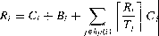
(11.7)
which can again be solved by constructing a recurrence relationship:
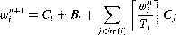
(11.8)
Note that this formulation may now be pessimistic (that is, not necessarily sufficient and necessary). Whether a task actually suffers its maximum blocking will depend upon task phasings. For example, if all tasks are periodic and all have the same period then no preemption will take place and hence no priority inversion will occur. However, in general, Equation (11.7) represents an effective scheduling test for real-time systems containing cooperating tasks.
Priority ceiling protocols
While the standard inheritance protocol gives an upper bound on the number of blocks a high-priority task can encounter, this bound can still lead to an unacceptably pessimistic worst-case calculation. This is compounded by the possibility of chains of blocks de veloping (transitive blocking), that is, task c being blocked by task b which is blocked by task a and so on. As shared data is a system resource, from a resource management point of view not only should blocking be minimized, but failure conditions such as deadlock should be eliminated. All of these issues are addressed by the ceiling priority protocols (Sha et al., 1990), two of which will be considered in this chapter: the original ceiling priority protocol and the immediate ceiling priority protocol. The original protocol (OCPP) will be described first, followed by the somewhat more straightforward immediate variant (ICPP). When either of these protocols is used on a single-processor system:
a high-priority task can be blocked at most once during its execution by lower- priority tasks;
deadlocks are prevented;
transitive blocking is prevented;
mutual exclusive access to resources is ensured (by the protocol itself).
5Blocking can also be incorporated into the utilization-based tests, but now each task must be considered individually.
The ceiling protocols can best be described in terms of resources protected by critical sections. In essence, the protocol ensures that if a resource is locked, by task a say, and could lead to the blocking of a higher-priority task (b), then no other resource that could block bis allowed to be locked by any task other than a. A task can therefore be delayed by not only attempting to lock a previously locked resource but also when the lock could lead to multiple blocking on higher-priority tasks.
The original protocol takes the following form.
Each task has a static default priority assigned (perhaps by the deadline monotonic scheme).
Each resource has a static ceiling value defined; this is the maximum priority of the tasks that use it.
A task has a dynamic priority that is the maximum of its own static priority and any it inherits due to it blocking higher-priority tasks.
A task can only lock a resource if its dynamic priority is higher than the ceiling of any currently locked resource (excluding any that it has already locked itself).
The locking of a first system resource is allowed. The effect of the protocol is to ensure that a second resource can only be locked if there does not exist a higher-priority task that uses both resources. Consequently, the maximum amount of time a task can be blocked is equal to the execution time of the longest critical section in any of the lower-priority tasks that are accessed by higher-priority tasks; that is, Equation (11.6) becomes:
Bi = mlfix usage(k, i)C(k)
k=I
(11.9)
The benefit of the ceiling protocol is that a high-priority task can only be blocked once (per activation) by any lower-priority task. The penalty of this result is that more tasks will experience this block.
Not all the features of the algorithm can be illustrated by a single example, but the execution sequence shown in Figure 11.8 does give a good indication of how the algorithm works and provides a comparison with the earlier approaches (that is, this figure illustrates the same task sequence used in Figures 11.6 and 11.7).
In Figure 11.8, task a again locks the first critical section, as no other resources have been locked. It is again preempted by task c, but now the attempt by c to lock the second section (V) is not successful as its priority (3) is not higher than the current ceiling (which is 4, as Q is locked and is used by task d). At time 3, a is blocking c, and hence runs with its priority at the level 3, thereby blocking b. The higher-priority task, d, preempts a at time 4, but is subsequently blocked when it attempts to access Q. Hence a will now continue (with priority 4) until it releases its lock on Q and has its priority drop back to 1. Now, d can continue until it completes (with a response time of 7).
The priority ceiling protocols ensure that a task is only blocked once during each invocation. Figure 11.8, however, appears to show task b (and task c) suffering two blocks. What is actually happening is that a single block is being broken in two by the preemption of task d. Equation (11.9) determines that all tasks (apart from task a) will suffer a maximum single block of 4. Figure 11.8 shows that for this particular execution sequence task c and task b actually suffer a block of 3 and task d a block of only 2.
Process
d
C
b
a
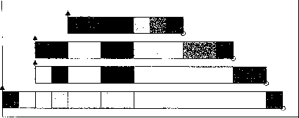
0 2 4 6 8 10 12 14 16 18
□Executing with Q locked □Preempted
Executing with V locked ■ Executing
Blocked
Figure 11.8 Example of priority inheritance - OCPP.
Immediate ceiling priority protocol
The immediate ceiling priority algorithm (ICPP) takes a more straightforward approach and raises the priority of a task as soon as it locks a resource (rather than only when it is actually blocking a higher-priority task). The protocol is thus defined as follows.
Each task has a static default priority.assigned (perhaps by the deadline monotonic scheme).
Each resource has a static ceiling value defined; this is the maximum priority of the tasks that use it.
A task has a dynamic priority that is the maximum of its own static priority and the ceiling values of any resources it has locked.
As a consequence of this final rule, a task will only suffer a block at the very beginning of its execution. Once the task starts actually executing, all the resources it needs must be free; if they were not, then some task would have an equal or higher priority and the task's execution would be postponed. The same task set used in earlier illustrations can now be executed under ICPP (see Figure 11.9).
Task a having locked Q at time 1, runs for the next four ticks with priority 4. Hence neither task b, task c nor task d can begin. Once a unlocks Q (and has its priority reduced), the other tasks execute in priority order. Note that all blocking is before actual execution and that d's response time is now only 6. This is somewhat misleading, however, as the worst-case blocking time for the two protocols is the same (see Equation (11.9)).
Process
d
C
b
a
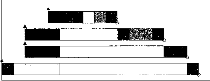
0 2 4 6 8 10 12 14 16 18
Figure 11.9 Example of priority inheritance - ICPP.
Although the worst-case behaviour of the two ceiling schemes is identical (from a scheduling view point), there are some points of difference.
ICCP is easier to implement than the original (OCPP) as blocking relationships need not be monitored.
ICPP leads to fewer context switches as blocking is prior to first execution.
ICPP requires more priority movements as this happens with all resource usages; OCPP changes priority only if an actual block has occurred.
Finally, note that ICPP is called the Priority Protect protocol in C/Real-Time POSIX and Priority Ceiling Emulation in Real-Time Java.
Ceiling protocols, mutual exclusion and deadlock
Although the above algorithms for the two ceiling protocols were defined in terms of locks on resources, it must be emphasized that the protocols themselves rather than some other synchronization primitive provided the mutual exclusion access to the resource (at least on a single processor system and assuming the tasks do not suspend whilst holding a lock). Consider ICPP; if a task has access to some resource then it will be running with the ceiling value. No other task that uses that resource can have a higher priority, and hence the executing task will either execute unimpeded while using the resource, or, if it is preempted, the new task will not use this particular resource. Either way, mutual exclusion is ensured.
The other major property of the ceiling protocols (again for single-processor sys tems and non-self-suspension) is that they are deadlock-free. In Section 8.7, the issue of deadlock-free resource usage was considered. The ceiling protocols are a form of dead lock prevention. If a task holds one resource while claiming another, then the ceiling of the second resource cannot be lower than the ceiling of the first. Indeed, if two resources are used in different orders (by different tasks) then their ceilings must be identical. As one task is not preempted by another with merely the same priority, it follows that once
a task has gained access to a resource then all other resources will be free when needed. There is no possibility of circular waits and deadlock is prevented.
O An extendible task model for FPS
It was noted earlier that the model outlined in Section 11.2.4 was too simplistic for practical use. In subsequent sections, three important restrictions were removed.
Deadlines can be less than period (D < T).
Sporadic and aperiodic tasks, as well as periodic tasks, can be supported.
Task interactions are possible, with the resulting blocking being factored into the response time equations.
Within this section, five further generalizations will be given. The section will conclude with a general-purpose priority assignment algorithm.
Release jitter
In the simple model, all tasks are assumed to be periodic and to be released with perfect periodicity; that is, if task l has period Tz then it is released with exactly that frequency.
Sporadic tasks are incorporated into the model by assuming that their minimum inter arrival interval is T. This is not, however, always a realistic assumption. Consider a sporadic tasks being released by a periodic task l (on another processor). The period
of the first task is Tz and the sporadic task will have the same rate, but it is incorrect
to assume that the maximum load (interference) s exerts on low-priority tasks can be represented in Equation (11.4) or (11.5) as a periodic task with period T. = Tz.
To understand why this is insufficient, consider two consecutive executions of task l. Assume that the event that releases task s occurs at the very end of the periodic task's execution. On the first execution of task l, assume that the task does not complete until its latest possible time, that is, R1. However, on the next invocation assume there is no interference on task l so it completes within C1. As this value could be arbitrarily small, let it equal zero. The two executions of the sporadic task are not separated by
Tz but by Tz - R1. Figure 11.10 illustrates this behaviour for Tz equal to 20, R1 equal
to 15 and minimum C1 equal to 1 (that is, two releases of the sporadic task within 6 time units). Note that this phenomenon is of interest only if task l is remote. If this was not the case then the variations in the release of task s would be accounted for by the standard equations, where a critical instant can be assumed between the releaser and the released.
To capture correctly the interference sporadic tasks have upon other tasks, the recurrence relationship must be modified. The maximum variation in a task's release is termed its release jitter (and is represented by J). For example, in the above, tasks would have a jitter value of 15. In terms of its maximum impact on lower-priority tasks, this sporadic task will be released at time 0, 5, 25, 45 and so on. That is, at times 0, T - J, 2T - J, 3T - J, and so on. Examination of the derivation of the schedulability equation implies that task i will suffer one interference from task s if Ri is between O and T - J,
i q
Q
Process
Time ---+-
t+15 t+20
I Release of periodic task
I Completion of periodic task and
release of the sporadic task
Figure 11.10 Releases of sporadic tasks.
that is Ri E [O, T - J), two if Ri E. [T - J, 2T J), three if Ri E [2T - J, 3T - J) and so on. A slight rearrangement of these conditions shows a single hit if Ri + J E [O, T), a double hit if Ri + J E [T, 2T) and so on. This can be represented in the same form as
the previous response time equations as follows (Audsley et al., 1993b):
Ri = Bi + c + "
I 1RIr-+. J1.1
(11.10)
cj
jEhp(i) J
In general, periodic tasks do not suffer release jitter. An implementation may, however, restrict the granularity of the system timer (which releases periodic tasks). In this situation, a periodic task may also suffer release jitter. For example, a T value of 10 but a system granularity of 8 will imply a jitter value of 6 - at time 16 the periodic task will be released for its time '1O' invocation. If response time (now denoted as Rrriodic) is to be measured relative to the real release time then the jitter value must be added to that previously calculated:
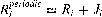 (11.11)
If this new value is greater than then the following analysis must be used.
Arbitrary deadlines
To cater for situations where Di (and hence potentially Ri) can be greater than , the analysis must again be adapted. When deadline is less than (or equal) to period, it is necessary to consider only a single release of each task. The critical instant, when all higher-priority tasks are released at the same time, represents the maximum interference and hence the response time following a release at the critical instant must be the worst case. However, when deadline is greater than period, a number of releases must be considered. The following assumes that the release of a task will be delayed until any previous releases of the same task have completed.
If a task executes into the next period then both releases must be analysed to see which gives rise to the longest response time. Moreover, if the second release is not completed before a third occurs than this new release must also be considered, and so on.
For each potentially overlapping release, a separate window w (q) is defined, where
q is just an integer identifying a particular window (that is, q = 0, l, 2, ...). Equa
tion (11.5) can be extended to have the following form (ignoring release jitter) (Tindell et al., 1994):
w;•+'(q) = B; + (q + l)C; + L rw;'/)l Cj
jEhp(i) J
(11.12)
For example, with q equal to 2, three releases of the task will occur in the window. For each value of q, a stable value of w(q) can be found by iteration - as in Equation (11.5). The response time is then given as:
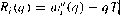 (11.13)
For example, with q = 2 the task started 2T; into the window and hence the response time is the size of the window minus 2T;.
The number of releases that need to be considered is bounded by the lowest value of q for which the following relation is true:
R;(q):::: T; (11.14)
At this point, the task completes before the next release and hence subsequent windows do not overlap. The worst-case response time is then the maximum value found for each q:
R; = max R;(q)
q=0,1,2,...
(11.15)
Note that for D :::: T, the relation in Equation (11.14) is true for q = 0 (if the task can be guaranteed), in which case Equations (11.12) and (11.13) simplify back to the original equation. If any R > D, then the task is not schedulable.
When this arbitrary deadline formulation is combined with the effect of release jitter, two alterations to the above analysis must be made. First, as before, the interference factor must be increased if any higher-priority tasks suffer release jitter:
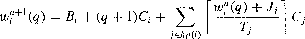
(11.16)
The other change involves the task itself. If it can suffer release jitter then two consecutive windows could overlap if response time plus jitter is greater than period. To accommodate this, Equation (11.13) must be altered:
(11.17)
Cooperative scheduling
The models described above have all required true preemptive dispatching. In this section, an alternative scheme is outlined (the use of deferred preemption). This has a number of advantages, but can still be analysed by the scheduling technique based on response time analysis. In Equation (11.7), for example, there is a blocking term B that accounts for the time a lower-priority task may be executing while a higher-priority task is runnable. In the application domain, this may be caused by the existence of data that is shared (under mutual exclusion) by tasks of different priority. Blocking can, however, also be caused by the run-time system or kernel. Many systems will have the non-preemptable context switch as the longest blocking time (for example, the release of a higher-priority task being delayed by the time it takes to context switch to a lower-priority task - even though an immediate context switch to the higher-priority task will then ensue).
One of the advantages ofusing the immediate ceiling priority protocol (to calculate and bound B) is that blocking is not cumulative. A task cannot be blocked both by an application task and a kernel routine - only one could actually be happening when the higher-priority task is released.
Cooperative scheduling exploits this non-cumulative property by increasing the situation in which blocking can occur. Let BMAX be the maximum blocking time in the system (using a conventional approach). The application code is then split into non preemptive blocks, the execution times of which are bounded by BMAX· At the end of each of these blocks, the application code offers a 'de-scheduling' request to the kernel. If a high-priority task is now runnable the kernel will instigate a context switch; if not, the currently running task will continue into the next non-preemptive block.
The normal execution of the application code is thus totally cooperative. A task will continue to execute until it offers to de-schedule. Hence, as long as any critical section is fully contained between de-scheduling calls, mutual exclusion is assured. This method does, therefore, require the careful placement of de-scheduling calls.
To give some level of protection over corrupted (or incorrect) software, a kernel could use an asynchronous signal, or abort, to remove the application task if any non preemptive block lasts longer than BMAX (see Chapter 13).
The use of deferred preemption has two important advantages. It increases the schedulability of the system, and it can lead to lower values of C. In the solution of Equation (11.4), as the value of w is being extended, new releases of higher-priority tasks are possible that will further increase the value of w. With deferred preemption, no interference can occur during the last block of execution. Let Fi be the execution time of the final block, such that when the task has consumed Ci - Fi time units, the last block
has (just) started. Equation (11.4) is now solved for C; - Fi rather than C:
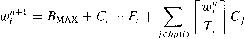
(11.18)
When this converges (that is, w;i+1 = w?), the response time is given by:
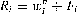 (11.19)
In effect, the last block of the task has executed with a higher priority (the highest) than the rest of the tasks.
This straightforward application of response time analysis is, however, misleading and may in certain circumstances lead to errors - that is, the analysis is not sufficient. Consider as a simple example a two task system with each task having deadline equal to period. The first task has a period of 6 and a computation time of 2 which is executed as a single non-preemptive block. The other task has a period of 8 and an execution time of 6 split into two 3 unit blocks. The longer period for this task means that it has the lower priority. The first task has a blocking term of 3 which, with its own computation time of 2, gives a response time of 5. The second task is first analysed to see when its first block will complete. This has a computation time of 3 and suffers 2 units of interference
and so w? converges simple to the value 5. To this is added the Fi value of 3 to give
an overall response time of 8. This appears to imply that the system is schedulable. But this is impossible - the overall utilization of these two tasks is greater than 1 (1/3 + 3/4) which is indisputable evidence of unschedulability.
So why does the analysis fail on this example? There is a constraint on using Equations (11.18) and (11.19) that is hidden and this example highlights the problem because it does not satisfy this constraint. For these equations to apply, the worst-case response time for each task with preemption must be less than the task's period. If this is not the case then it is possible for the second (or third ... ) release of the task to be the worst. If releases overlap in this way then the analysis used in the previous section for deadline greater than period must be used.
For the example, the preemptive worst-case response time of the second task is 10 (two interferences plus execution time of 6) which is greater than 8 and hence the second release must be analysed. The easiest method for computing this is to look at the worst-case response time of a task made up of two serial executions of the second task. Now this new task has a computation time of 12 made up of four 3 unit blocks. Applying
Equations (I 1.18) and (11.19) gives a value of w? of 15; when the final 3 is added in
this gives a response time of 18 which breaks the deadline value of 16 (for the second invocation).
It must be emphasized that for most systems with utilization not greater than 1, releases will not overlap and the straightforward use of these equations will provide the correct result - but the constraint must always be checked.
The other advantage of deferred preemption comes from predicting more accu rately the execution times of a task's non-preemptable basic blocks. Modern processors have caches, prefetch queues and pipelines that all significantly reduce the execution times of code. Typically, simple estimations of worst-case execution time are forced to ignore these advantages and obtain very pessimistic results because preemption will invalidate caches and pipelines. Knowledge of non-preemption can be used to predict the speed up that will occur in practice. However, if the cost of postponing a context switch is high, this will militate against these advantages.
Fault tolerance
Fault tolerance via either forward or backward error recovery always results in extra
computation. This could be an exception handler or a recovery block. In a real-time
fault-tolerant system, deadlines should still be met even when a certain level of faults occur. This level of fault tolerance is known as the fault model. If cf is the extra
computation time that results from an error in task i, then the response time equation can easily be changed:
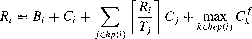
(11.20)
where hep(i) is the set of tasks with a priority equal to or higher than i.
Here, the fault model defines a maximum of one fault and there is an assumption that a task will execute its recovery action at the same priority as its ordinary computation. Equation (11.20) is easily changed to increase the number of allowed faults (F):
Ri = B; + C; + L.t
rR- i
cj + max FCkf
(11.21)
jEhp(i)
Tj 1
kEhep(i)
Indeed, a system can be analysed for increasing values of F to see what number of faults (arriving in a burst) can be tolerated. Alternatively, the fault model may indicate a minimum arrival interval for faults. In this case the equation becomes:
L (fR;lct)
Ri=Bi+C+ rRilcj+ max.
Tj kEhep(1) Tt
(11.22)
jEhp(i)
where T1 is the minimum inter-arrival time between faults.
In Equations (11.21) and (11.22), the assumption is made that in the worst case,
the fault will always occur in the task that has the longest recovery time.
Introducing offsets
In the scheduling analysis presented so far in this chapter, it has been assumed that all tasks share a common release time. This critical instant is when all tasks are released simultaneously (this is usually taken to occur at time 0). For fixed-priority scheduling, this is a safe assumption; if all tasks meet their timing requirements when released together then they will always be schedulable. There are, however, sets of periodic tasks that can benefit from explicitly choosing their release times so that they do not share a critical instant. This may result in improved schedulability. One task is said to have an offset with respect to the others. Consider for illustration the three tasks defined in Table 11.12.
If a critical instant is assumed then task a has response time of 4 and task b has a response time of 8, but the third task has a worst-case response time of 16, which is
Task | T | D | C |
a | 8 | 5 | 4 |
b | 20 | 10 | 4 |
C | 20 | 12 | 4 |
Table 11.12 Example of a task set.
Task | T | D | C | 0 | R | ||
a | 8 | 5 | 4 | 0 | 4 | ||
b | 20 | 10 | 4 | 0 | 8 | ||
C | 20 | 12 | 4 | 10 | 8 |
Table 11.13 Response time analysis of the task set.
Task | T | D | C | 0 | R | ||
a | 8 | 5 | 4 | 0 | 4 | ||
n | 10 | 10 | 4 | 0 | 8 |
Table 11.14 Response time analysis of the transformed task set.
beyond its deadline. For task c the interference from task b is sufficient to force a further interference from a, and this is crucial. However, if task c is given an offset ( 0) of 10 (that is, retain the same period and relative deadline, but have its first release at time 10) then it will never execute at the same time as b. The result is a schedulable task set- see Table 11.13.
Unfortunately, task sets with arbitrary offsets are not amenable to analysis. It is a strongly NP-hard problem to choose offsets so that a task set is optimally schedulable. Indeed, it is far from trivial to even check if a set of tasks with offsets share a critical instant.6
Notwithstanding this theoretical result, there are task sets that can be analysed in a relatively straightforward (although not necessarily optimal) way. In most realistic systems, task periods are not arbitrary but are likely to be related to one another. As in the example just illustrated, two tasks have a common period. In these situations it is easy to give one an offset (of T /2) and to analyse the resulting system using a transformation technique that removes the offset - and hence critical instant analysis applies. In the example, tasks band c (c having the offset of 10) are replaced by a single notional task with period 10, computation time 4, deadline IO but no offset. This notional task has two important properties.
If it is schedulable (when sharing a critical instant with all other tasks), the two real tasks will meet their deadlines when one is given the half period offset.
If all lower-priority tasks are schedulable when suffering interference from the notional task (and all other high-priority tasks), they will remain schedulable when the notional task is replaced by the two real tasks (one with the offset).
These properties follow from the observation that the notional task always uses more (or equal) CPU time than the two real tasks. Table 11.14 shows the analysis that would apply to the transformed task set. The notional task is given the name 'n' in this table.
6One interesting result is that a task set with co-prime periods will always have a critical instant no matter what offsets are chosen (Audsley and Burns, 1998).
More generally the parameters of the notional task are calculated from the real tasks a and bas follows:
T,1 = T,_1/2 (or Tb/2 as T,_1 = Th)
ell = Max(Ca, Cb)
D11 = Min(Da, Db)
Pn = Max(Pa, Ph)
where P denotes priority.
Clearly, what is possible for two tasks is also applicable to three or more tasks. A fuller description of these techniques is given in Bate and Burns (1997). In summary, although arbitrary offsets are effectively impossible to analyse, the judicious use of offsets and the transformation technique can return the analysis problem to one of a simple task set that shares a critical instant. All the analysis given in earlier sections of this chapter, therefore, applies.
In Section 10.5 offsets are used to control input and output jitter. Typically the input and output activities involve much less computation time than the 'middle' task that implements whatever algorithms are necessary to convert the input value to an output setting. To analyse this program structure it is acceptable to ignore offsets. As noted earlier a system that is schedulable when offsets are ignored remains schedulable when they are added to the implementation scheme.
Other characteristics
In addition to the characteristics discussed in the last few sections (e.g. release jitter, non-preemption, fault tolerance, arbitrary deadlines and offsets) there are many other task attributes that have been analysed in the fixed-priority scheduling literature. For example, tasks with precedence, tasks that must meet Nin M deadlines (e.g. 4 in 5) but not every deadline, and tasks that have a set of C values (not just a single maximum). It is not necessary, however, to cover all these topics (and more) in order to complete this treatment of RTA. The key property of RTA is that it is extendable and configurable. New characteristics can be easily accommodated into the theory.
Priority assignment
The formulation given for arbitrary deadlines has the property that no simple algorithm (such as rate or deadline monotonic) gives the optimal priority ordering. In this section, a theorem and algorithm for assigning priorities in arbitrary situations is given. The theorem considers the behaviour of the lowest priority task (Audsley et al., 1993b).
Theorem If task p is assigned the lowest priority and is feasible, then, if a feasible priority ordering exists for the complete task set, an ordering exists with task p assigned the lowest priority.
The proof of this theorem comes from considering the schedulability equations - for example, Equation (11.12). If a task has the lowest priority, it suffers interference from all
higher-priority tasks. This interference is not dependent upon the actual ordering of these higher priorities. Hence if any task is schedulable at the bottom value it can be assigned that place, and all that is required is to assign the other N - I priorities. Fortunately, the theorem can be reapplied to the reduced task set. Hence through successive reapplication, a complete priority ordering is obtained (if one exists).
The following code in Ada implements the priority assignment algorithm;7 Set is an array of tasks that is notionally ordered by priority; Set (N) being the highest priority, Set ( 1) being the lowest. The procedure Task_Test tests to see whether task K is feasible at that place in the array. The double loop works by first swapping tasks into the lowest position until a feasible result is found; this task is then fixed at that position. The next priority position is then considered. If at any time the inner loop fails to find a feasible task, the whole procedure is abandoned. Note that a concise algorithm is possible if an extra swap is undertaken.
procedure Assign_Pri (Set : in out Task_Set; N: Natural;
Ok: out Boolean) is
begin
for Kin 1..N loop
for Next in K..N loop Swap(Set, K, Next); Task_Test(Set, K, Ok); exit when Ok;
end loop;
exit when not Ok; -- failed to find a schedulable task
end loop;
end Assign_Pri;
If the test of feasibility is exact (necessary and sufficient) then the priority ordering is optimal. Thus for arbitrary deadlines (without blocking), an optimal ordering is found. Where there is blocking, the priority ceiling protocols ensure that blackings are relatively small and, therefore, the above algorithm produces adequate near optimal results.
Insufficient priorities
In all of the analysis presented in this chapter it has been assumed that each task has a distinct priority. Unfortunately it is not always possible to accommodate this 'one priority per task' ideal. If there are insufficient priorities then two or more tasks must share the same priority. Fortunately, to check the schedulability of shared-priority tasks requires only a minor modification to the response time test. Consider the basis Equation (11.4) derived earlier in this chapter, which has a summation over all the higher-priority tasks. If tasks share priorities then this summation must be over all higher- or equal-priority tasks:
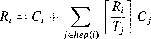
(11.23)
where hep(i) is the set of higher- or equal-priority tasks (than i).
7This algor thm has become known as Audsley's algorithm.
So, if tasks a and b share priority i then a assumes it is getting interference from b and b assumes it is getting interference from a. Clearly if a and bare schedulable when they share priority i then they will remain schedulable if they are assigned distinct but adjacent priorities. The-converse is, however, not true.
One way to reduce the number of priority levels required for a specific system is to first make sure the system is schedulable with distinct priorities. Then, starting from the lowest priority, tasks are grouped together until the addition of an extra task breaks schedulability. A new group is then started with this task, and the process continues until all tasks are in groups (although some groups may contain only have a single task). A minor variant of the priority assignment algorithm given above can easily implement this scheme.
Reducing the number of priority levels inevitably reduces schedulability. Tests have shown (Klein et al., 1993) that 92% of systems that are schedulable with distinct priorities will remain schedulable if only 32 levels are available. For 128 priority values this rises to 99%. In will be noted in the next chapter that Ada requires a minimum of 31 distinct priorities, Real-Time POSIX a minimum of 32 and Real-Time Java a minimum of 28.
Execution-time servers
Finally, in the description of fixed-priority scheduling the topic of execution-time servers is revisited. As applications and hardware platforms become more complicated it is useful to employ a virtual resource layer between the set of applications and the processor (or processors) they execute on. An execution-time server both guarantees a certain level of service and ensures that no more resource is allocated than is implied by the 'service contract'. So, for example, two multithreaded applications may co-exist on the one processor. One application receives 4 ms every 10 ms, the other 6 ms. These levels are guaranteed and policed. The first application will definitely get 4 ms, but it will not be allocated more than 4 ms in a 10 ms interval even if it has a runnable high-priority task.
There have been a number of execution-time servers proposed for FPS (see Section 11.6.2). Here three common ones are described: the Periodic Server, the Deferrable Server and the Sporadic Server. The simple Periodic Server has a budget (capacity) and a replenishment period. Following replenishment, client tasks can execute until either the budget is exhausted or there are no longer any runnable client tasks. The server is then suspended until the next replenishment time. The Deferrable Server is similar except that the budget remains available even after clients have been satisfied a client arriving late will be serviced if there is budget available. Both Periodic and Deferrable Servers are replenished periodically and the budget still available at replenishment is lost. The Sporadic Server behaves a little differently. The budget remains indefinitely. When a
client arrives (at time t, say) it can use up the available budget which is then replenished at time t + the replenishment period of the server.
A complete system can contain a number of servers of these three types. The Periodic Server is ideally suited for supporting periodic tasks, the Sporadic Server is exactly what is required for sporadic tasks and the Deferrable Server is a good match for handling aperiodic work. In the latter case, aperiodic tasks can be handled quickly if
there is budget available - but once this is exhausted then the aperiodic tasks will not be serviced and hence an unbounded load on the server will have no detrimental effects on other parts of the system.
Scheduling these three server types on a fixed-priority system is relatively straight forward. Each server, of whichever type, is allocated a distinct priority. Response time analysis is then used to verify that all servers can guarantee their budget and replenishment period. Fortunately Periodic and Sporadic Servers behave exactly the same as periodic tasks and hence the straightforward analysis for these servers is directly applicable. For Deferrable Servers, the worst-case impact such a server can have on lower-priority tasks occurs when its budget is used at the very end of one period and then again at the start of the next. Conveniently this behaviour is identical to a periodic task suffering release jitter and hence can be analysed using the formulation given in Section 11.10.1.
It follows from this brief discussion that the schedulability test for a task running on a server involves two steps; first to verify that the server's parameters are valid and second that the response time of the task on that server is bounded by the task's deadline. The worst-case response time for a task executing on a server can be computed in a number of ways. For example, a server that guarantees 2 ms every 10 ms is equivalent to a processor running at 1/5 of its original speed. If all task computation times are multiplied by 5 then standard RTA can be applied (using these new C values).8 A similar approach is taken with variable speed processors - an example of this analysis is given in Section I 1.15.
Earliest deadline first (EDF) scheduling
FPS is undoubtedly the most popular scheduling approach available to the implementors of real-time systems. The next chapter will show how it is supported in a number of languages and operating systems. However, as discussed at the beginning of this chapter, it is not the only approach studied in the real-time scheduling community. This section focuses on an alternative approach, EDF, that has a number of properties that make it almost as important as FPS. Unfortunately, it is currently less supported by languages and operating systems (again see the next chapter). For this reason EDF analysis is not covered here to the same level of detail afforded to FPS analysis.
Utilization-based schedulability tests for EDF
Not only did the seminal paper of Liu and Layland introduce a utilization-based test for
FPS but it also gave one for EDF. The following equation is for the simple task model introduced in Section 11.2.4 - in particular, D = T for all tasks:
t (C)
1
i=l Ti
(11.24)
8With this example, the computed response times may need to have the value 8 added to take into account the 'dead time' before the sever can respond to requests from its client tasks.
Clearly this is a much simpler test than the corresponding test for FPS (Equa tion (11.1)). As long as the utilization of the task set is less than the total capacity of the processor then all deadlines will be met (for the simple task model). In this sense EDF is superior to FPS; it can always schedule any task set that FPS can, but not all task sets that are passed by the EDF test can be scheduled using fixed priorities. Given this advantage it is reasonable to ask why EDF is not the preferred task-based scheduling method? The reason is that FPS has a number of advantages over EDF.
FPS is easier to implement, as the scheduling attribute (priority) is static; EDF is dynamic and hence requires a more complex run-time system which will have higher overhead.
It is easier to incorporate tasks without deadlines into FPS (by merely assigning them a priority); giving a task an arbitrary deadline is more artificial.
The deadline attribute is not the only parameter of importance; again it is easier to incorporate other factors into the notion of priority than it is into the notion of deadline, for example, the criticality of the task.
During overload situations (which may be a fault condition) the behaviour of FPS is more predictable (the lower-priority tasks are those that will miss their deadlines first); EDF is unpredictable under overload and can experience a domino effect in which a large number of tasks miss deadlines. This is considered again in Section 11.12.
The utilization-based test, for the simple model, is misleading as it is necessary and sufficient for EDF but only sufficient for FPS. Hence higher utilizations can, in general, be achieved for FPS.
Notwithstanding this final point, EDF does have an advantage over FPS because of its higher utilization. Indeed it is easy to show that if a task set, with restrictions such as deadline equal to period removed, is schedulable by any scheme then it will also be schedulable by EDF. The proof of this property follows the pattern used for proving that DMPO is optimal (see Section 11.7.1 ). Starting with the feasible schedule it is always possible to transform the schedule to one that becomes identical with the one EDF would produce - and at each transformation schedulability is preserved.
Processor demand criteria for EDF
One of the disadvantages of the EDF scheme is that the worst-case response time for each task does not occur when all tasks are released at a critical instant. In this situation only tasks with a shorter relative deadline will interfere. However, later there may exist a position in which all (or at least more) tasks have a shorter absolute deadline. In situations where the simple utilization-based test cannot be applied (for example when there is release jitter or when deadlines are shorter then periods) then a more sophisticated scheduling test must be used. In FPS this takes the form ofRTA (calculate the worst-case response time for each task and then check that this is less than the related deadline). For EDF this approach can again be used, but it is much more complicated to calculate these response time values and hence it will not be described here. There is, however,
t1 t2
T -
D I
I
I
0 3 5 8 10 12 14
Figure 11.11 PDC example.
an alternative scheme that checks for schedulability directly rather than via response times. This method, called PDC (Processor Demand Criteria) (Baruah et al., 1990a, b), is defined as follows.
Assuming a system starts at time O and all tasks arrive at their maximum frequency, at any future time, t, it is possible to calculate the load on the system, h(t). This is the amount of work that must be completed before t, in other words, all jobs that had absolute deadlines before (or at) t. It is easy to give a formula for h(t):
r,.
h(t)-- LN lt--+- It- Dij
i=] l
(11.25)
To illustrate this formula, consider a single task with T = 5, D = 3 and C = 1, and two possible values oft: t1 = 12 and t2 = 14. Figure 11.11 illustrates these parameters.
The third deadline of the task is at 13 and hence is after t 1 so h(t 1) for this task should be 2. But at t2 = 14 another execution of the task must be completed and so h(t2) = 3. To compute these values easily, T - D is added to t; if this results in a value after the
next period then the floor function in Equation (11.25) will correctly add an extra C to the total. So, in the example, T - D = 2, tl + 2 = 14 and hence Ll4/5J = 2. But t2 + 2 = 16 and so L16/5J = 3.
The requirement for schedulability is that the load must never exceed the time available to satisfy that level of load:
Vt > 0 h(t) :S t (11.26)
PDC involves applying this equation to a limited number oft values. The number of points is limited by two factors:
only values oft that correspond to deadlines of tasks need be checked;
there is an upper bound (L) on the values oft that must be checked - this means that an unschedulable system will have h(t) > t for some value oft < L.
The first reduction comes from the fact that h (t) is constant between deadlines and hence the worst case occurs at a deadline. To calculate the upper bound (L) on the interval that must be checked, two formulae have been developed. The first one comes from the need to check at least the first deadline of each task, and a bound based on utilization (the derivation of all the equations given in the section can be found in the
literature referenced in the Further Reading section at the end of this chapter):
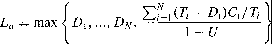
The second bound is derived from the busy period of the system (that is, the time from start-up at time 0 to the first null or background tick where no task is executing - at this time, by definition, the load has been satisfied). This is easily obtained from a recurrence relation similar to that used in FPS:
N
wo=Lc
tr l
i=l
wi+l = Ci
i=I I
When wi+1 = wj then this is the end of the busy period and Lb = wj. Note this busy period is bounded if the utilization of the task set is not greater then 1 (so this is always checked first).
To obtain the least upper bound, the simple minimum of these two values is used:
(11.27)
For example, consider a three task system as depicted in Table 11.15. The utilization of this task set is 0.92. The computed values of La and Lb are 30.37 and 15 respectively; hence the least upper bound is 15. In the time period from 0 to 15 there are five deadlines to check - task a at times 4, 8 and 12, task b at time 10 and task c at time 14. At all of these points Equation (11.26) is satisfied and the system is determined to be schedulable. For example h(l5) is 14 and h(12) is 6.
If the example is now modified to increase the computation time of b to 4 then the utilization is still acceptable (0.987), but it is not schedulable. At time 14, h(t) has the value 15, so h(14) > 14.
The QPA test
For non-trivial systems, L can be large and the number of deadlines between 0 and L that need to be checked becomes excessive. Fortunately an efficient scheme has recently been developed that can significantly reduce the number of time points that need to be tested. This scheme, known as QPA (Quick Processor-demand Analysis), exploits the
Task | T | D | C | ||
a | 4 | 4 | 1 | ||
b | 15 | 10 | 3 | ||
C | 17 | 14 | 8 |
Table 11.15 A task set for EDF.
Task | T | D | C |
a | 4 | 4 | |
b | 8 | 6 | |
C | 10 | 10 | 1 |
d | 12 | 8 | 2 |
e | 15 | 12 | 2 |
f | 21 | 20 | 3 |
Table 11.16 A task set for EDF.
following property (Zhang and Burns, 2008): rather than progress from O to L checking each deadline, QPA starts at L and moves backwards towards O checking only a necessary subset of the deadlines.
Let h( L) = s. If s > L then the system is unschedulable. If this is not the case
(s :S L) then h(t) < t for all values oft: s < t < L. Hence there is no need to check the deadlines within the interval s.. L. To verify this property assume (in order to construct a counterexample) a value t within the range has h (t) > t. Now t > s so h (t) > s. Also h(t) < h(L) as t < L (the function his monotonic int). We must conclude thats > L which contradicts the assumption that s < L.
Having jumped from L back to h(L), the procedure is repeated from h(L) to
h(h(L)), etc. At each step the essential test of h(t) < t is undertaken. Of course if
h(t) = t then no progress can be made and it is necessary to force progress by moving
from t to the largest absolute deadline (d) in the system such as d < t.
The QPA test looks at only a small fraction of the number of points that would need to be analysed if all deadlines were checked. An example of the approach is as follows. Six tasks have the characteristics given in Table 11.16. The utilization of this task set is 0.965. The value of Lis 59 and there are 34 deadlines that need to be checked in this interval using PDC.
Applying QPA results in just 14 points that need to be considered, and these correspond to the following values oft: 59, 53, 46, 43, 40, 33, 29, 24, 21, 19, 12, 9, 5 and 1. In other examples (Zhang and Burns, 2008), QPA typically requires only 1% of the effort of the original processor demand analysis scheme.
Blocking and EDF
When considering shared resources and blocking, there is a direct analogy between EDF and FPS. Where FPS suffers priority inversion, EDF suffers deadline inversion. This is when a task requires a resource that is currently locked by another task with a longer deadline. Not surprisingly inheritance and ceiling protocols have been developed for EDF but, as with earlier comparisons, the EDF schemes are somewhat more complex (Baruah, 2006).
As priorities are static, it is easy to determine which tasks can block the task currently being analysed. With EDF, this relationship is dynamic; it depends on which tasks (with longer deadlines) are active when the task is released. And this varies from one release to another throughout the hyper-period.
Probably the best scheme for EDF is the Stack Resource Policy (SRP) of Baker (1991). This works in a very similar way to the immediate ceiling priority protocol for FPS (indeed SRP influenced the development of ICPP). Each task, under SRP, is assigned a preemption level. Preemption levels reflect the relative deadlines of the tasks, the shorter the deadline the higher the preemption level; so they actually designate the static priority of the task as assigned by the deadline monotonic scheme. At run-time, resources are given ceiling values based on the maximum preemption level of the tasks that use the resource.
When a task is released, it can only preempt the currently executing task if its absolute deadline is shorter and its preemption level is higher than the highest ceiling of the currently locked resources.
The result of applying this protocol is identical to applying ICPP (on a single processor). Tasks suffer only a single block (it is as they are released), deadlocks are pre vented and a simple formula is available for calculating the blocking time. The blocking term, once calculated, can be incorporated into PDC and QPA.
Aperiodic tasks and EDF execution-time servers
Following the development of server technology for fixed-priority systems, most of the common approaches have been reinterpreted within the context of dynamic EDF systems. For example there is a Dynamic Sporadic Server and a Dynamic Deferrable Server. Whereas the static system needs a priority to be assigned (which is done pre run-time), the dynamic version needs to compute a deadline each time it needs to execute.
In addition to these common forms of servers there are also a number that are EDF-specific. These take the form of virtual (but slow) processors that can guarantee C in T. So an aperiodic task that requires to execute for 3C will be guaranteed to complete in 3T if the server has no other work to do. To find more about EDF servers and EDF scheduling in general, the reader is referred to the books by Liu and Buttazzo in the Further Reading section at the end of this chapter.
Dynamic systems and online analysis
Earlier in this chapter it was noted that there is a wide variety of scheduling schemes that have been developed for different application requirements. For hard real-time systems, offline analysis is desirable (indeed it is often mandatory). To undertake such analysis requires:
arrival patterns of incoming work to be known and bounded (this leads to a fixed set of tasks with known periods or worst-case arrival intervals);
bounded computation times;
a scheduling scheme that leads to predictable execution of the application tasks.
This chapter has shown how fixed-priority scheduling (and to a certain extent, EDF) can provide a predictable execution environment.
In contrast to hard systems, there are dynamic soft real-time applications in which arrival patterns and computation times are not known a priori. Although some level of offline analysis may still be applicable, this can no longer be complete and hence some form of online analysis is required.
The main objective of an online scheduling scheme is to manage any overload that is likely to occur due to the dynamics of the system's enviromnent. It was noted earlier that EDF is a dynamic scheme that is an optimal scheduling discipline. Unfortunately, EDF also has the property that during transient overloads it performs very badly. It is possible to get a cascade effect in which each task misses its deadline but uses sufficient resources to result in the next task also missing its deadline.
To counter this detrimental domino effect, many online schemes have two mech anisms:
(I) an admissions control procedure that limits the number of tasks that are allowed to compete for the processors;
an EDF dispatching routine for those tasks that are admitted.
An ideal admissions control algorithm prevents the processor getting overloaded so that the EDF routine works effectively.
If some tasks are to be admitted, while others are rejected, the relative importance of each task must be known. This is usually achieved by assigning each task a value. Values can be classified as follows.
Static - the task always has the same value whenever it is released.
Dynamic - the task's value can only be computed at the time the task is released (because it is dependent on either environmental factors or the current state of the system).
Adaptive - here the dynamic nature of the system is such that the value of the task will change during its execution.
To assign static values (orto construct the algorithm and define the input parameters for the dynamic or adaptive schemes) requires the domain specialists to articulate their understanding of the desirable behaviour of the system. As with other areas of computing, knowledge elicitation is not without its problems, but these issues will not be considered here (see Bums et al., 2000).
One of the fundamental problems with online analysis is the trade-off that has to be made between the quality of the scheduling decision and the resources and time needed to make the decision. At one extreme, every time a new task arrives, the complete set of tasks could be subject to an exact test such as those described in this chapter. If the task set is not schedulable, the lowest value task is dropped and the test repeated (until a schedulable set is obtained). This approach (which is known as best-effort) is optimal for static or dynamic value assignment - but only if the overheads of the tests are ignored. Once the overheads are factored in, the effectiveness of the approach is seriously compromised. In general, heuristics have to be used for online scheduling and
it is unlikely that any single approach will work for all applications. This is still an active research area. It is clear, however, that what is required is not a single policy defined in a language or OS standard, but mechanisms from which applications can program their own schemes to meet their particular requirements.
The final topic to consider in this section is hybrid systems that contain both hard and dynamic components. It is likely that these will become the norm in many application areas. Even in essentially static systems, value-added computations, in the form of soft or firm tasks that improve the quality of the hard tasks, are an attractive way of structuring systems. In these circumstances, as was noted in Section 11.6.1, the hard tasks must be protected from any overload induced by the behaviour of the non-hard tasks. One way of achieving this is to use FPS for the hard tasks and execution-time servers for the remaining work. The servers can be executed at a given priority level, but can embody whatever admissions policy is desirable and service the incoming dynamic work using EDF.
Worst-case execution time
In all the scheduling approaches described so far (that is, cyclic executives, FPS and EDF), it is assumed that the worst-case execution time of each task is known. This is the maximum any task invocation/release (i.e. job) could require.
Worst-case execution time estimation (represented by the symbol C but also known by the acronym WCET) can be obtained by either measurement or analysis. The problem with measurement is that it is difficult to be sure when the worst case has been observed. The drawback of analysis is that an effective model of the processor (including caches, pipelines, branch prediction, out-of-order execution, memory wait states and so on) must be available.
Most analysis techniques involve two distinct activities. The first takes the task and decomposes its code into a directed graph of basic blocks. These basic blocks represent straightline code. The second component of the analysis takes the machine code corresponding to a basic block and uses the processor model to estimate its worst case execution time.
Once the times for all the basic blocks are known, the directed graph can be collapsed. For example, a simple choice construct between two basic blocks will be collapsed to a single value (that is, the largest of the two values for the alternative blocks). Loops are collapsed using knowledge about maximum bounds.
More sophisticated graph reduction techniques can be used if sufficient semantic information is available. To give just a simple example of this, consider the following code:
for I in 1.. 10 loop if Cond then
basic block of cost 100
else
basic block of cost 10
end if; end loop;
With no further information, the total 'cost' of this construct would be 10 x 100 + the cost of the loop construct itself, giving a total of, say, 1005 time units. It may, however, be possible to deduce (via static analysis of the code) that the condition Cond can only be true on at most three occasions. Hence a less pessimistic cost value would be 375 time units.
Other relationships within the code may reduce the number of feasible paths by eliminating those that cannot possibly occur; for instance, when the 'if' branch in one conditional statement precludes a later 'else' branch. Techniques that undertake this sort of semantic analysis usually require annotations to be added to the code. The graph reduction process can then make use of tools such as ILP (Integer Linear Programming) to produce a tight estimate of worst-case execution time. They can also advise on the input data needed to drive the program down the path that gives rise to this estimation.
Clearly, if a task is to be analysed for its worst-case execution time, the code itself needs to be restricted. For example, all loops and recursion must be bounded, otherwise it would be impossible to predict offline when the code terminates. Furthermore, the code generated by the compiler must also be analysable.
The biggest challenge facing worst-case execution time analysis comes from the use of modem processors with multicores, on-chip caches, pipelines, branch predictors and so on. All of these features aim to reduce average execution time, but their impact on worst-case behaviour can be hard to predict. If one ignores these features the resulting estimates can be very pessimistic, but to include them is not always straightforward. One approach is to assume non-preemptive execution, and hence all the benefits from caching and so on can be taken into account. At a later phase of the analysis, the number of actual preemptions is calculated and a penalty applied for the resulting cache misses and pipeline refills.
To model in detail the temporal behaviour of a modern processor is non-trivial and may need proprietary information that can be hard to obtain. For real-time systems one is left with the choice of either using simpler (but less powerful) processor architectures or putting more effort into measurement. Given that all high-integrity real-time systems will be subject to considerable testing, an approach that combines testing and measurement for code units (basic blocks) but path analysis for complete components seems appropriate with today's technology.
This brief discussion has only addressed a few of the issues involved with WCET estimation. A comprehensive coverage would perhaps triple the size of this chapter. Interested readers are referred to the Further Reading section of this chapter.
Multiprocessor scheduling
All the analysis presented so far in this chapter has been concerned with the scheduling of concurrent tasks on to a single computer. As processors have become more powerful, the size and complexity of the applications that can fit on to a single processor have increased substantially. However, for a significant class of system, there is the need to move to a multiprocessor execution platform. This can take the form of a relatively simple dual processor or may involve a large multicore chip. The processors may all be of an identical type (homogeneous) or may have quite different characteristics (het erogeneous). Also the links between the processors may be a shared memory bus or an
Task | T | D | C | |
a | 10 | 10 | 5 | |
b | 10 | 10 | 5 | |
C | 12 | 12 | 8 |
Table 11.17 Example task set.
independent network. Whatever the architecture, the scheduling problem for a multi processor system is significantly more complicated than the single processor case. Here three issues are addressed, the placement of tasks to processors, the scheduling of any shared network and the implementation of locks in shared-memory multiprocessor architectures.
Global or partitioned placement
The first new issue that must be addressed with a multiprocessor platform is placement. This is the mapping of tasks to processors. Two schemes are possible: global and par titioned. As the names imply, a partitioned scheme is a pre-run-time allocation; the dynamic global alternative allocates tasks as they become runnable, and even during execution a task may move from one processor to another. Both placement schemes have their advantages and disadvantages. The partitioned approach has the benefit of not requiring any run-time support and of being able to cater for certain types of systems that the global scheme has difficulty with. Consider a simple three task system that is to be implemented on two identical processors (see Table 11.17).
The total utilization of the system is 1.66 so it is capable of being scheduled (as 1.66 < 2). A simple global placement scheme using either fixed priority or EDF would allocate a and b to the two processors. They would then execute until time 5. Now c can be placed on either processor as they are both free, but there are only 7 units of time left before the deadline at time 12. Hence c will fail to meet its deadline.
The partitioned approach would allocate a and b to one processor (where they will completely utilize its capacity), leaving the other processor to c which can then easily meet its deadline. A different example, however, will show the benefits of the global scheme. Table 11.18 also has a three task/ two processor configuration. No partitioned scheme can schedule this system. However, a global scheme that starts with d and f for one tick and then executes d and e for the next eight ticks will be able to run f and e for the 10th tick and satisfy all requirements.
Task | T | D | C | ||
d | 10 | 10 | 9 | ||
e | 10 | 10 | 9 | ||
f | 10 | 10 | 2 |
Table 11.18 A further example task set.
The only way to fit this example into a partitioned scheme is to split / into two identical length parts. This artificial decomposition of a software model was criticized earlier within the context of cyclic executives and cannot be recommended.
The main challenge for the partitioned approach is to generate a valid allocation. Once an allocation has been formed, it is straightforward to analyse each processor in turn using the analysis already available for single processors. Each processor can be scheduled via fixed priorities or EDF - it would even be possible to mix the schemes with EDF on some processors and FPS on others. An allocation must not 'overfill' any processor and hence task mapping is similar to the classic bin-packing problem. Optimal schemes for large numbers of tasks and processors are therefore not possible - heuristics must be employed.
The challenge for the global scheme is to identify the optimal scheduling policy. For a single processor, EDF is optimal, but no optical scheme is known for general task models executing on multiprocessor platforms. The earlier example in Table 11.17 shows that EDF scheduling would lead to c missing its deadline, but the system is schedulable as evident from the partitioned approach. Not only are there no optimal schemes available, but what policies are available tend not to be sustainable - a schedulable system may become unschedulable if, for example, an extra processor is added. For these reasons, most current systems use a partitioned approach, which also has the advantage, as noted earlier, of run-time efficiency. Nevertheless, for the future, global schemes have the potential to deliver better schedulability.
Notwithstanding the lack of maturity in this area, it is possible to report some useful results. It was noted at the beginning of this chapter that single processor analysis started from a simple task model (in particular, tasks are independent and periodic, and have deadline equal to period). For uniprocessors, the model has been generalized significantly, but for multiprocessor scheduling, useful results are only really known for the simple task model. Here a number of such results are stated.
There is a global scheduling algorithm called pfair that is able to schedule any peri odic system with utilization ::: M on M identical processors (Baruah et al., 1996). However, schedules generated by the pfair algorithm tend to have a large number of preemptions, and tasks are frequently required to move from one processor to another.
For FP scheduling with partitioned placement, the following utilization-based suf ficient schedulability test has been derived for a first-fit (using decreasing task utilization) placement strategy (Oh and Baker, 1998):
U:::: M( 2-1) (11.28)
A sufficient utilization-based schedulability test is also known for EDF with par titioned first-fit placement. Let Umax denote the largest utilization of any task in
the system: Umax = max1 ( "t). Letting f3 denote LI/ UmaxJ, this test is as fol
lows (Lopez et al., 2004):
U < _f3_M_+_I
- /3 + 1
(11.29)
A sufficient schedulability test is known for global EDF (Goossens et al., 2003), that depends only upon the utilization of the task system and Umax•
U :'.S M - (M - 1) Umax (11.30)
A variant of EDF with global placement, called fpEDF, has been proposed (Baruah, 2004) that
assigns greatest (fixed) priority to tasks with utilization> ½ (if there are any such tasks), and
schedules the remaining tasks according to EDF.
A couple of schedulability tests have been derived for fpEDF. One uses the utilization of the task system:
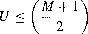 (11.31)
Another, superior, test for fpEDF uses both the utilization of the system and the largest utilization of any task in the system:
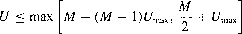 (11.32)
A direct comparison between all these bounds would be misleading as the bounds are only sufficient. Tighter bounds are possible; indeed a number have been proposed in the literature for some of the above schemes. However, to illustrate the results that
these test do provide, a couple of scenarios are defined and the tests applied. Case I has 10 processors (M = 10) with the highest utilization task having a capacity of 0.1. Case II has M = 4 and Umax = 2/3. Table 11.19 gives the maximum utilization that
is guaranteed to lead to a schedulable system for each of the scheduling schemes. To compute the average 'per-processor' utilization these values need to be divided by M (which is 10 in the first scenario and 4 in the other).
Scheduling the network
The next issue to consider is the communications infrastructure that links the different processors. For bus-based tightly coupled multiprocessors, the behaviour of multilevel
Scheme | Case I | Case II |
Partitioned FP (Eqn 11.28) | 4.14 | 1.66 |
Partitioned EDF (Eqn 11.29) | 9.18 | 2.50 |
Global EDF (Eqn 11.30) | 9.10 | 2.00 |
fpEDF (Eqn 11.32) | 9.10 | 2.67 |
Table 11.19 Utilization bounds.
caches makes worst-case execution time analysis even harder for these platforms. Het erogeneous processors and hierarchical multispeed memories also add significantly to these difficulties. With network-based connections, the messages must themselves be scheduled if end-to-end data flows through the system are to be guaranteed. There are many different network protocols with some being more amenable to timing analysis than others. It is beyond the scope of this book to discuss these different protocols in detail, but two specific schemes are worth noting.
Time Division Multiple Access (TOMA) - here each processor is allocated a fixed time slot within a specified cycle in which tasks hosted on that processor can generate messages.
Control Area Network (CAN) - here each message is given a fixed priority and the network supports priority-based arbitration.
So with TDMA, which is only really applicable to static task allocation, no two processors ever wish to produce messages at the same time. With CAN, competition can occur but priorities are used to order the messages. Being priority-based, the standard RTA presented earlier in this chapter is directly applicable to scheduling CAN. As a message cannot be preempted once it has started to be transmitted, the non-preemptive form of the analysis is the one employed with CAN (see Section 11.10.3), where the parameter C is now the time needed to transmit the message.
The use of a network within a system opens up a number of issues as well as message scheduling. Unless the hardware architecture is fully connected, routing needs to be addressed. Static and dynamic route-finding are possible. Fault tolerance over message corruption is normally dealt with by the transmission protocol, but extra messages and perhaps alternative routes may be employed and these must be accommodated into the scheduling analysis.
Mutual exclusion on multiprocessor platforms
The final issue to address in this short review of the major problems involved in scheduling multiprocessor platforms is the provision of mutual exclusion over shared objects. In networked systems, these objects are typically controlled by a single thread so there are no new problems to solve, but for shared memory systems there is now the need to provide protection from true parallel access. The priority inheritance and priority ceiling protocols no longer work as they depend on an executing high-priority task preventing a lower priority task from executing. This clearly will not occur if the lower-priority task is on another processor. There are no simple equivalent protocols to those for single processors. To implement mutual exclusion in a multiprocessor shared memory system usually requires locks that can be contended for globally. When a task holds such a lock it is usual to prevent it from being preempted locally (as this would further delay tasks on other processors waiting for the lock). When a lock is requested but not granted, the task will typically busy-wait on the lock, waiting for it to become free - this is known as spinning. Obviously this spinning time will add to the task's execution time and hence has to be bounded if the task's interference on lower-priority tasks is to be calculated. A system with many globally shared objects and nested usage patterns (i.e. accessing one
object whilst holding the lock on others) will be harder to analyse and the analysis itself is likely to be pessimistic. Also error conditions such as deadlocks and livelocks are now possible whereas they were prevented by some of the single processor protocols.
Because of these difficulties with global locks, the use of lock-free algorithms is attractive. Here multiple copies of the shared object are supported and if necessary actions are repeated if conflicts over the copies have occurred. To give a simple example, consider an object that is read by many tasks but updated by only one. While the update is happening all reads are made to an old copy of the object. Once the update is finished a single flag is set to make the new copy available to future read operations. If the timing constraints on the system allow concurrent reads and writes then it must be acceptable for the read operation to get the old value - if it had arrived any earlier (or the writing task any later) then the old copy would have been the 'current' one.
Overall, multiprocessor systems whilst providing more computational power in troduce a number of challenges for real-time systems. The move from scheduling a single resource to the coordination of multi-resources is a major one that requires a holistic approach to system scheduling. However, the core of this approach will always be the management of each individual resource.
Scheduling for power-aware systems
All of the scheduling results presented in this chapter have the common form of: given a set of execution time requirements (the Cs), will all the tasks complete by their deadlines (the Ds)? This assumes a fixed speed processor (or processors) so that the worst-case execution time values can be obtained prior to attempting the system-wide scheduling analysis. There are, however, variable speed processors that can give rise to a difference scheduling question - at what speed must the processor execute in order for the tasks to be schedulable?
Variable speed resources are typically found in power-aware applications, that is in embedded systems that run on batteries. Examples of such systems are mobile devices and nodes in a sensor net. All battery-based systems have the need to preserve energy and thereby extend their operational life or periods between recharges.
To save power, the voltage to the processor is reduced with the result that it runs slower. But the saving is non-linear. Halving the speed of a processor may quadruple its life. Some processors have variable speed, others support just a finite set of speed settings. From the point of view of the scheduling analysis, the verification problem now has two stages.
With the processor running at its maximum speed (Max), is the system schedu lable? This is a standard test.
If the system is schedulable, by what maximum factor k can all the C values be increased so that the system remains schedulable?
There is no simple way to compute k, rather it needs to be found by a branch and bound search. Consider the fixed priority example given in Table 11.20 where the C values are those that are appropriate for the maximum speed of the processor.
Task | T | D | C | ||
a | 70 | 70 | 5 | ||
b | 120 | 100 | 7 | ||
C | 200 | 200 | 11 |
Table 11.20 Example task set with maximum speed.
Task | T | D | C | R | ||
a | 70 | 70 | 25 | 25 | ||
b | 120 | 100 | 35 | 60 | ||
C | 200 | 200 | 55 | 200 |
Table 11.21 Example task set with reduced speed.
This is clearly schedulable (Ra = 5, Rb = 12 and Re = 23). If k is given the value 10 (i.e. execution times are now 50, 70 and 110) then the utilization is greater than 1 so the system is clearly unschedulable. Sok must lie between 1 and 10. Using, for illustration, only integer values for k, the value 6 could be tried next (result unschedulable) then
4 (schedulable) and then 5. The results fork = 5 are shown in Table 11.21. Note the
response time for task c is just on its deadline (200\ any increase in any C parameter would cause this task to become unschedulable. Hence k = 5 is the optimum value
and it is possible to conclude that the task set is schedulable on a processor with speed Max/5.
This discussion has focused on statically fixing the processor speed so that all deadlines are Gust) met. In more dynamic systems where the work load fluctuates at run-time it is possible to change the processor's speed whilst continuing to execute the application. For all processors there is a cost (overhead) in making these changes. It is also necessary to take into account the impact on memory performance and I/0 devices - savings in processing cost may not lead to overall system economy.
Incorporating system overheads
In all the analysis presented so far in this chapter, the overheads of actually implementing the multitasking system software have been ignored. Clearly for a real system this is not acceptable and hence the scheduling equations need to be expanded to include terms for the overhead factors. The following characteristics are typical of many operating system kernels or language run-time support systems.
The cost of a context switch between tasks is not negligible and may not be a single value. The cost of a context switch to a higher-priority periodic task (following, for example, a clock interrupt) may be higher than a context switch from a task to a lower-priority task (at the end of the high-priority task's execution). For systems with a large number of periodic tasks, an additional cost will be incurred for
manipulating the delay queue (for periodic tasks when they execute, say, an Ada 'delay until' statement).
All context switch operations are non preemptive.
The cost of handling an interrupt (other than the clock) and releasing an application sporadic task is not insignificant. Furthermore, for DMA and channel-program controlled devices, the impact of shared-memory access can have a non-trivial impact on worst-case performance - such devices are best avoided in hard real time systems.
A clock interrupt (say every 10 ms) could result in periodic tasks being moved from a delay queue to the dispatch/ready queue. The cost for this operation varies depending on the number of tasks to be moved.
In addition to the above, the scheduling analysis must take into account the features of the underlying hardware, such as the impact of the cache and pipeline.
Modelling non-trivial context switch times
Most scheduling models ignore context switch times. This approach is, however, too simplistic if the total cost of the context switches is not trivial when compared with the application's own code. Figure 11.12 illustrates a number of significant events in the execution of a typical periodic task.
A - the clock interrupt that designates the notional time at which the task should start (assuming no release jitter or non-preemptive delay-if the interrupts were disabled due to the operation of the context switch then the clock handler would have its execution delayed; this is taken into account in the scheduling equations by the blocking factor B).
Clock handler \
Context switch
Context switch
Task execution
A B C D E
Figure 11.12 Overheads when executing tasks.
B - the earliest time that the clock handler can complete; this signifies the start of the context switch to the task (assume it is the highest priority runnable task).
C the actual start of the execution of the task.
D - the completion of the task (the task may be preempted a number of times between C and D).
E - the completion of the context switch away from the task.
A'- the next release of the task.
The typical requirement for this task is that it completes before its next release (that is, D
< A'), or before some deadline prior to its next release. Either way, D is the significant time, not E. Another form of requirement puts a bound on the time between the start of execution and termination (that is, D-C). This occurs when the first action is an input and the last an output (and there is a deadline requirement between the two). While these factors affect the meaning of the task's own deadline (and hence its response time) they do not affect the interference this task has on lower-priority tasks; here the full cost of both context switches counts. Recall that the basic scheduling equation (11.7) has the form:
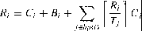
This now becomes (for periodic tasks only):
Ri = C5I + C; + Bi + I: I ;i
jEhp(i) I J
l (C5I + C52 + Cj)
(11.33)
where C51 is the cost of the initial context switch (to the task) and C 52 is the cost of the context switch away from each task at the end of its execution. The cost of putting the task into the delay queue (if it is periodic) is incorporated into Ci. Note that in practice this value may depend on the size of the queue; a maximum value would need to be incorporated into C;.
This measure of the response time is from point B in Figure 11.12. To measure from point C, the first C 51 term is removed. To measure from point A (the notional true release time of the task) requires the clock behaviour to be measured (see Sec tion 11.16.3).
For multiprocessor systems the context switch itself may be more complicated if global placement is used as tasks may need to migrate from one processor to another. This will add to the context switch overhead and will make the prediction of worst-case execution time (WCET) more difficult as the cache may not be shared between all the processors.
Modelling sporadic tasks
For sporadic tasks released by other sporadic tasks, or by periodic tasks, Equation (11.33) is a valid model of behaviour. However, the computation time for the task, C;, must include the overheads of blocking on the agent that controls its release.
When sporadic tasks are released by an interrupt, priority inversion can occur. Even if the sporadic has a low priority (due to its having a long deadline) the interrupt itself will be executed at a high hardware priority level. Let rs be the set of sporadic tasks released by inte·rrupts. Each interrupt source will be assumed to have the same arrival characteristics as the sporadic that it releases. The additional interference these interrupt handlers have on each application task is given by:
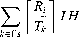
where / H is the cost of handling the interrupt (and returning to the running task, having released the sporadic task).
This representation assumes that all interrupt handlers give rise to the same cost; if this is not the case then / H must be defined for each k. Equation (11.33) now becomes:
R = cs' + ci + B; + L 11:'.l ccs' + cs2 + cj)
jEhp(i) J
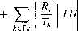
(11.34)
Within Ada, timing events are also used to release sporadic tasks or to undertake short event-handling activities. As timing events are similar to interrupts they can be modelled in the way shown above.
Modelling the real-time clock handler
To support periodic tasks, the execution environment must have access to a real-time clock that will generate interrupts at appropriate times. An ideal system will use an interval timer, and will interrupt only when a periodic task needs to be released. The more common approach, however, is one in which the clock interrupts at a regular rate (say once every 10 ms) and the handler must decide if none, one or a number of periodic tasks must be released. The ideal approach can be modelled in an identical way to that introduced for sporadic tasks (see Section 11.16.2). With the regular clock method, it is necessary to develop a more detailed model as the execution times of the clock handler can vary considerably. Table 11.22 gives possible times for this handler (for a clock period of 10 ms). Note that if the worst case was assumed to occur on all occasions, over
Queue state Clock handling time, µ,s
No tasks on queue
Tasks on queue but none removed One task removed
Two tasks removed Twenty-five tasks removed
16
24
88
128
1048
Table 11.22 Clock handling overheads.
10% of the processor would have to be assigned to the clock handler. Moreover, all this computation occurs at a high (highest) hardware priority level, and hence considerable priority inversion is occurring. For example, with the figures given in the table, at the LCM (least common multiple) of the 25 periodic tasks 1048 µs of interference would be suffered by the highest priority application task that was released. If the task was released on its own then only 88 µs would be suffered. The time interval is represented by B-A in Figure 11.12.
In general, the cost of moving N periodic tasks from the delay queue to the dispatch queue can be represented by the following formula:
where CTc is the constant cost (assuming there is always at least one task on the delay queue), C T5 is the cost of making a single move, and C T'n is the cost of each subsequent move. This model is appropriate due to the observation that the cost of moving just one task is often high when compared with the additional cost of moving extra tasks. With the kernel considered here, these costs were:
CF 24 µs
CT5 64 µs
CTm 40 µs
To reduce the pessimism of assuming that a computational cost of Cc-tk is consumed on each execution of the clock handler, this load can be spread over a number of clock ticks. This is valid if the shortest period of any application task, Tinin is greater than the clock period, Tc1k• Let M be defined by:
M- r
T- mlin
Tc1k
If M is greater than 1 then the load from the clock handler can be spread over M
executions. In this situation, the clock handler is modelled as a task with period Tmin and computation time c;1k:
This assumes M <= N.
Equation (11.34) now becomes
R;=CS1+C;+B;+ L r:;1(CS1+cs2+C;)
+ L IR; lI H + I l c;lk
jehp(i) J
kers I Tk I Tmm
(11.35)
To give further improvements (to the model) requires a more exact representation of the clock handler's actual execution. For example, using just CF and CP the following
SUMMARY 419
equation can easily be derived:
R; =CS1+C;+B;+ L r:;1(CS1+CS2+C;)
}Ehp(i) J
+ L rRil IH+ l_!!! l CTc
l
kEfs Tk Tclk
+ L r :; CT,
gEfp g
where r p is the set of periodic tasks.
(11.36)
It is left as an exercise for the reader to incorporate the three-parameter model of clock handling (see Exercise 11.16).
Summary
A scheduling scheme has two facets: it defines an algorithm for resource sharing and a means of predicting the worst-case behaviour of an application when that form of resource sharing is used.
Many current periodic real-time systems are implemented using a cyclic executive. With this approach, the application code must be packed into a fixed number of 'minor cycles' such that the cyclic execution of the sequence of minor cycles (called a 'major cycle') will enable all system deadlines to be met. Although an effective implementation strategy for small systems, there are a number of drawbacks with this cyclic approach.
The packing of the minor cycles becomes increasingly difficult as the system grows.
Sporadic activities are difficult to accommodate.
Tasks with long periods (that is, longer than the major cycle) are supported inefficiently.
Tasks with large computation times must be split up so that they can be packed into a series of minor cycles.
The structure of the cyclic executive makes it very difficult to alter to ac commodate changing requirements.
Because of these difficulties, this chapter has focused on the use of more dynamic scheduling schemes. The main topic of the chapter has been the fixed priority scheduling of a collection of tasks on a single processor. Following the description of a simple utilization-based test (which is only applicable to a re stricted task model), the response time calculations were derived for a more flexible model. This model can accommodate sporadic tasks, task interactions, non-preemptive sections, release jitter, aperiodic servers, fault-tolerant systems and an arbitrary relationship between a task deadline (D) and its minimum arrival interval ( T).
Intertask synchronization, such as mutual exclusive access to shared data, can give rise to priority inversion unless some form of priority inheritance is used. Two particular protocols were described in detail in this chapter: 'original ceiling priority inheritance' and 'immediate ceiling priority inheritance'.
With priority-based scheduling, it is important that the priorities are as signed to reflect the temporal characteristic of the task load. Three algorithms have been described in this chapter:
rate monotonic - for D = T
deadline monotonic - for D :s T
arbitrary - for D > T.
The other significant scheduling approach is EDF - here theJask with the shortest (earliest) deadline is the one to execute first. EDF has the advantage that it optimally allocates the processor. If an application cannot be scheduled by EDF then it cannot be scheduled by any other approach. For simple systems
with D = T then a very simple and exact utilization-based test can be used to check schedulability. When D :s T then Processor Demand Analysis has to
be undertaken. An efficient approach to this form of analysis called QPA was introduced and illustrated by examples.
Also in this chapter a number of other scheduling topics have been referred to (even if they have not been dealt with comprehensively). Amongst these are: worst-case execution time estimation, multiprocessor platforms, dynamic open systems and power-aware applications. Finally attention was focused on the overheads of implementing multitasking application code. It was shown how the standard response time equations can be extended to incorporate parameters to characterize the implementation's run-time behaviour.
Further reading
Buttazzo, G. C. (1997) Hard Real-Time Computing Systems: Predictable Scheduling Algorithms and Applications. New York: Kluwer Academic.
Davis, R., Zaboos, A. and Burns, A. (2008) Effective exact schedulability tests for fixed priority real-time systems. IEEE Transactions on Computing, 57(9), 1261-1276.
Ermedahl, A. and Engblom, J. (2007) Execution time analysis for embedded real-time systems, in Handbook of Real-Time and Embedded Systems, I. Lee, J. Y-T. Leung and S. H. Son (eds). Boca Raton, FL: Chapman and Hall/CRC.
Klein, M. H., Ralya, T., Pollak, B., Obenza, R. and Gonzalez Harbour, M. (1993) A Practitioner's Handbook for Real-Time Analysis: Guide to Rate Monotonic Analysis for Real-Time Systems. New York: Kluwer Academic.
Liu, J. W. S (2000) Real-Time Systems. New York: Prentice Hall.
Natarajan, S. (ed.) (1995) Imprecise and Approximate Computation. New York: Kluwer Academic.
Rajkumar, R. (1993) Synchronization in Real-Time Systems: A Priority Inheritance Approach. New York: Kluwer Academic.
Sha, L. et al. (2004) Real time scheduling theory: A historical perspective. Real-Time Systems, 28(2- 3), 101-155.
Stankovic, J. A., Spuni, M., Ramamritham, K. and Buttazzo., G. C. (1998) Deadline Scheduling for Real-Time Systems: EDF and Related Algorithms. New York: Kluwer Academic.
Exercises
Three logical tasks P, Q and Shave the following characteristics. P: period 3, required execution time I; Q: period 6, required execution time 2; S: period 18, required execution time 5.
Show how these tasks can be scheduled using the rate monotonic scheduling algorithm.
Show how a cyclic executive could be constructed to implement the three logical tasks.
Consider three tasks P, Q and S. P has a period of 100 ms in which it requires 30 ms of tasking. The corresponding values for Q and S are (5,1) and (25,5) respectively. Assume that P is the most important task in the system, followed by Sand then Q.
What is the behaviour of the scheduler if priority is based on importance?
What is the processor utilization of P, Q and S?
How should the tasks be scheduled so that all deadlines are met?
Illustrate one of the schemes that allows these tasks to be scheduled.
To the above task set is added a fourth task (R). Failure of this task will not lead to safety being undermined. R has a period of 50 ms, but has a processing requirement that is data dependent and varies from 5 to 25 ms. Discuss how this task should be integrated with P, Q and S.
Figure 11.13 illustrates the behaviour of four periodic tasks w, x, y and z.These tasks have priorities determined by the rate monotonic scheme, with the result that priority( w) > priority(x) > priority(y) > priority(z).
Each task's period starts at time S and terminates at T. The four tasks share two resources that are protected by binary semaphores A and B. On the diagram the tag A (and B) implies 'do a wait operation on the semaphore'; the tag A' (and B') implies 'do a signal operation on the semaphore'. Table 11.23 summarizes the task's requirements.
The figure shows the execution histories of the four tasks using static priorities. For example, x starts at time 2, executes a successful wait operation on B at time 3 but unsuccessfully waits on A at time 4 (z has already locked A). At time 13 it executes again (that is, it now has lock on A), it releases A at time 14 and B at time 15. It is now preempted by w, but executes again at time 16. Finally it terminates at time 17.
Redraw Figure 11.13 to illustrate the behaviour of these tasks if priority inher itance is employed.
A A' B B'
w
s T
B A A' B'
X
s T
s T
y 1117
A A'
z 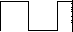
S T
0 2 3 4 5 6 7 8 9 10 11 12 13 14 15 16 17 18 19 20


I I I I I I I I I I I I I I I I I I I I
Time----------
Figure 11.13 The behaviour of four periodic tasks in Exercise 11.4.
Task | Priority | Start time | Required processor time | Semaphores used | ||
w | 10 | 7 | 4 | A,B | ||
X | 8 | 2 | 5 | A,B | ||
y | 6 | 5 | 4 | |||
z | 4 | 0 | 5 | A |
Table 11.23 Summary of the task's requirements for Exercise 11.4.
Redraw the figure given in Exercise 11.4 to illustrate the behaviour of these tasks if immediate priority ceiling inheritance is employed.
With the priority ceiling protocol, it is possible to calculate the maximum time any task can be blocked by the operation of a lower-priority task. What is the rule for calculating this blocking? Illustrate the answer by calculating the maximum blocking time for each task in the following example. A program consists of five tasks, a, b, c, d, e (these are listed in priority order with a having the highest priority), and six resources R1, ... , R6 (protected by semaphores implementing the priority ceiling protocol). The resource accesses have worst case execution times given in Table 11.24.
Rl | R2 | R3 | R4 | RS | R6 |
50ms | 150ms | 75ms | 300ms | 250ms | 175ms |
Table 11.24 Summary of resource access times for Exercise 11.6.
Resources are used by the tasks according to Table 11.25.
Task Uses
R3
Rl,R2
C R3,R4,R5
Rl,R5,R6
R2,R6
Table 11.25 Summary of the tasks' resource requirements for Exercise 11.6.
Is the task set shown in Table 11.26 schedulable using the simple utilization based test given in Equation (11.1)? Is the task set schedulable using the response time analysis?
Task | Period | Execution time |
a | 50 | 10 |
b | 40 | 10 |
C | 30 | 9 |
Table 11.26 Summary of the tasks' attributes for Exercise 11.7.
The task set shown in Table 11.27 is not schedulable using Equation (11.1) because a must be given the top priority due to its criticality. How can the task set be transformed so that it is schedulable? Note that the computations represented by a must still be given top priority.
Task | Period | Execution time | Criticality | ||
a | 60 | 10 | HIGH | ||
b | 10 | 3 | LOW | ||
C | 8 | 2 | LOW |
Table 11.27 Summary of the tasks' attributes for Exercise 11.8.
The task set given in Table 11.28 is not schedulable using Equation (11.1), but does meet all deadlines when scheduled using fixed priorities. Explain why.
Task | Period | Execution time |
a | 75 | 35 |
b | 40 | 10 |
C | 20 | 5 |
Table 11.28 Summary of the tasks' attributes for Exercise 11.9.
In Section 11.6, a sporadic task was defined as having a minimum inter-arrival time. Often sporadic tasks come in bursts. Update Equation (11.4) to cope with a burst of sporadic activities such that N invocations can appear arbitrarily close together in a period of T.
Extend the answer given above to cope with sporadic activity which arrives in bursts, where there may be N invocations in a period of T and each invocation must be separated by at least M time units.
To what extent can the response time equations given in this chapter be applied to resources other than the CPU? For example, can the equations be used to schedule access to a disk?
In a safety-critical real-time system, a collection of tasks can be used to monitor key environmental events. Typically, there will be a deadline defined between the event occurring and some output (which is in response to the event) being produced. Describe how periodic tasks can be used to monitor such events.
Consider the list of events (shown in Table 11.29) together with the computation costs of responding to each event. If a separate task is used for each event (and these tasks are implemented by preemptive priority-based scheduling) describe how Rate Monotonic Analysis can be applied to make sure all deadlines are met.
EVENT | Deadline | Computation time | ||
A_Event | 36 | 2 | ||
B_Event | 24 | 1 | ||
C_Event | IO | 1 | ||
D_Event | 48 | 4 | ||
E_Event | 12 |
Table 11.29 Summary of events for Exercise 11.14.
How can the task set shown in Table 11.30 be optimally scheduled (using fixed priority scheduling)? Is this task set schedulable?
Task | T | C | B | D | ||
a | 8 | 4 | 2 | 8 | ||
b | IO | 2 | 2 | 5 | ||
C | 30 | 5 | 2 | 30 |
Table 11.30 Summary of tasks for Exercise 11.15.
Develop a model of clock handling which incorporates the three parameters
CTC, CT5 and CTm (see Section 11.16.3).
Rather than using a clock interrupt to schedule periodic tasks, what would be the ramifications of only having access to a real-time clock?
A periodic task of period 40 ms is controlled by a clock interrupt that has agranu larity of 30 ms. How can the worst-case response time of this task be calculated?
BASIC CONCEPTS
INTRODUCTION
Over the last few years, several algorithms and methodologies have been pro posed in the literature to improve the predictability of real-time systems. In order to present these results we need to define some basic concepts that will be used throughout the book. We begin with the most important software en tity treated by any operating system, the process. A process is a computation that is executed by the CPU in a sequential fashion. In this text, the terms process and task are used as synonyms. However, it is worth saying that some authors prefer to distinguish them and define a task as a sequential execution of code that does not suspend itself during execution, whereas a process is a more complex computational activity, that can be composed by many tasks.
When a single processor has to execute a set of concurrent tasks - that is, tasks that can overlap in time - the CPU has to be assigned to the various tasks according to a predefined criterion, called a scheduling policy. The set of rules that, at any time, determines the order in which tasks are executed is called a scheduling algorithm. The specific operation of allocating the CPU to a task selected by the scheduling algorithm is referred as dispatching.
Thus, a task that could potentially execute on the CPU can be either in execu tion if it has been selected by the scheduling algorithm or waiting for the CPU if another task is executing. A task that can potentially execute on the pro cessor, independently on its actual availability, is called an active task. A task waiting for the processor is called a ready task, whereas the task in execution is called a running task. All ready tasks waiting for the processor are kept in
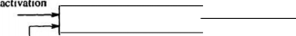
dispatching
scheduling
preemption
Figure 2,1 Queue of ready tasks waiting for execution.
a queue, called ready queue. Operating systems that handles different types of tasks, may have more than one ready queue.
In many operating systems that allow dynamic task activation, the running task can be interrupted at any point, so that a more important task that arrives in the system can immediately gain the processor and does not need to wait in the ready queue. In this case, the running task is interrupted a.nd inserted in the ready queue, while the CPU is assigned to the most important ready task which just arrived. The operation of suspending the running task and inserting it into the ready queue is called preemption. Figure 2.1 schematically illustrates the concepts presented above. In dynamic real-time systems, preemption is important for three reasons [SZ92]:
Tasks performing exception handling may need to preempt existing tasks so that responses to exceptions may be issued in a timely fashion.
When application tasks have different levels of criticalness expressing tas.k importance, preemption permits to anticipate the execution of the most critical activities.
More efficient schedules can be produced to improve system responsiveness.
Given a set of tasks, J ={Ji,... ,ln}, a schedule is an assignment of tasks to the processor, so that each task is executed until completion. More formally, a schedule can be defined as a function <J : R + N such that Vt E R +, 3t 1, t2
such that t E [t1, t2) and "<It' E [t1, t2) a(t) = a(t'). In other words, a(t) is an
integer step function and <1(t) = k, with k > 0, means that task Jk is executing at time tt while a(t) = 0 means that the CPU is idle. Figure 2.2 shows an
example of schedule obtained by executing three tasks: 11, J2, J3.
At times t1, t2, t3, and t4t the processor performs a context switch.
idle idle
J I
..
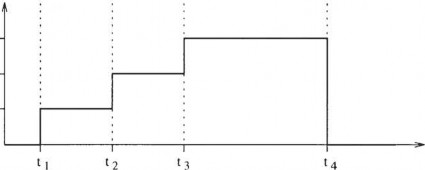
cr (t)
3
2
Figure 2.2 Schedule obtained by executing three tasks. J1, h, and ]J.
Each interval [ti, ti+i) in which cr(t) is constant is called time slice. Interval (x, y) identifies all values of t such that x ::; t < y.
A preemptive schedule is a schedule in which the running task can be arbitrarily suspended at any time, to assign the CPU to another task according to a predefined scheduling policy. In preemptive schedules, tasks may be executed in disjointed interval of times.
A schedule is said to be feasible if all tasks can be completed according to a set of specified constraints.
A set of tasks is said to be schedulable if there exists at least one algorithm that can produce a feasible schedule.
An example of preemptive schedule is shown in Figure 2.3.
TYPES OF TASK CONSTRAINTS
Typical constraints that can be specified on real-time tasks are of three classes: timing constraints, precedence relations, and mutual exclusion constraints on shared resources.
J I -- :;,, t
12 - > t
J3 -■'.lll"T1 :,, t
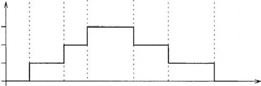
cr (t)
3
2
Figure 2.3 Example of a preemptive schedule.
Timing constraints
Real-time systems are characterized by computational activities with stringent timing constraints that must be met in order to achieve the desired behavior. A typical timing constraint on a task is the deadline, which represents the time before which a process should complete its execution without causing any damage to the system. Depending on the consequences of a missed deadline, real-time tasks are usually distinguished in two classes:
Hard. A task is said to be hard if a completion after its deadline can cause catastrophic consequences on the system. In this case, any instance of the task should a priori be guaranteed in the worst-case scenario.
Soft. A task is said to be soft if missing its deadline decreases the perfor mance of the system but does not jeopardize its correct behavior.
In general, a real-time task Ji can be characterized by the following parameters:
Arrival time a( is the time at which a task becomes ready for execution; it is also referred as request time or release time and indicated by ri;
J·I
C·I
I
, ◄
! ;;, t

I
a·I s .
f·t
d·I
Figure 2.4 Typical parameters of a real-time task.
Computation time Ci: is the time necessary to the processor for exe cuting the task without interruption;
Deadline di: is the time before which a task should be complete to avoid damage to the system;
Start tin-ie Si: is the time at which a task starts its execution;
Finishing time Ji: is the time at which a task finishes its execution;
Criticalness: is a parameter related to the consequences of missing the deadline (typically, it can be hard or soft);
Value vi: represents the relative importance of the task with respect to the other tasks in the system;
Lateness Li: Li = h - di represents the delay of a task completion with respect to its deadline; note that if a task completes before the deadline, its lateness is negative;
Tardiness or Exceeding time Ei: Ei = max(O, Li) is the time a task stays active after its deadline;
Laxity or Slack time Xi: Xi =di ai- Ciis the maximum time a task can be delayed on its activation to complete within its deadline.
Some of the parameters defined above are illustrated in Figure 2.4.
Another timing characteristic that can be specified on a real-time task concerns the regularity of its activation. In particular, tasks can be defined as periodic or aperiodic. Periodic tasks consist of an infinite sequence of identical activities, called instances or jobs, that are regularly activated at a constant rate. For the sake of clarity, from now on, a periodic task will be denoted by Ti, whereas an aperiodic job by Ji.
first D·I
instance
k th
instance
!
I
! I
!I
Ci
't i j ii
! I. t
I
qi i T· $i + (k-1) T i
D·I
Ji
I
I Ci I
(a)
D·I
I
Ci
;,, t
ail <lit ai2 di2 (b)
Figure 2.5 Sequence of instances for a periodic and an aperiodic task.
The activation time of the first periodic instance is called phase. If c/>i is the phase of the periodic task Ti, the activation time of the kth instance is given by <Pi + (k - l)Ti, where Ti is called period of the task. In many practical cases, a periodic process can be completely characterized by its computation time Ci and its relative deadline Di, which is often considered coincident to the end of the period. Moreover, the parameters Ci, Ti e Di are considered to be constant for each instance. Aperiodic tasks also consist of an infinite sequence of identical activities (instances); however, their activations are not regular. Figure 2.5 shows an example of task instances for a periodic and for an aperiodic task.
Precedence constraints
Incertain applications, computational activities cannot be executed in arbitrary order but have to respect some precedence relations defined at the design stage. Such precedence relations are usually described through a directed acyclic graph G, where tasks are represented by nodes and precedence relations by arrows. A precedence graph G induces a partial order on the task set.
The notation la -< lb specifies that task la is a predecessor of task lb,
meaning that G contains a directed path from node la to node lb.
The notation la lb specifies that task la is an immediate predecessor
of lb, meaning that G contains an arc directed from node la to node lb-
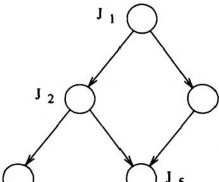
J -< J 2
J I ,. J 2
J 3
J I -< J 4
J I J 4
J 4
Figure 2.6 Precedence relations among five tasks.
Figure 2.6 illustrates a directed acyclic graph that describes the precedence constraints among five tasks. From the graph structure we observe that task J1 is the only one that can start executing since it dloes not have predecessors. Tasks with no predecessors are called beginning tasks. As J1 is completed, either 12 or 13 can start. Task ]4 can start only when 12 is completed, whereas J5 must wait the completion of 12 and J3. Tasks with no successors, as 14 and JsI are called ending tasks.
In order to understand how precedence graphs can be derived from tasks' rela tions, let us consider the application illustrated in Figure 2.7. Here, a number of objects moving on a conveyor belt must be recognized and classified using a stereo vision system, consisting of two cameras mounted in a suitable loca tion. Suppose that the recognition process is carried out by integrating the two-dimensional features of the top view of the objects with the height infor mation extracted by the pixel disparity on the two images. As a consequence, the computational activities of the application can be organized by defining the following tasks:
Two tasks (one for each camera) dedicated to image acquisition, whose objective is to transfer the image from the camera to the processor memory (they are identified by acql and acq2);
Two tasks (one for each camera) dedicated to low-level image processing (typical operations performed at this level include digital filtering for noise reduction and edge detection; we identify these tasks as edge1 and edge2);
A task for extracting two-dimensional features from the object contours (it is referred as shape);
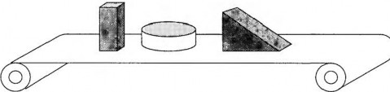
Figure 2.7 Industrial application which requires a visual recognition of ob jects on a conveyor belt.
A task for computing the pixel disparities from the two images (it is re ferred as disp);
A task for determining the object height from the results achieved by the
disp task (it is referred as H);
A task performing the final recognition (this task integrates the geometrical features of the object contour with the height information and tries to match these data with those stored in the data base; it is referred as rec).
From the logic relations existing among the computations, it is easy to see that tasks acql and acq2 can be executed nn parallel before any other activity. Tasks edgel and edge2 can also be executed in parallel, but each task cannot start before the associated acquisition task completes. Task shape is based on the object contour extracted by the low-level image processing, therefore it must wait the termination of both edgel and edge2. The same is true for task disp, which however can be executed in parallel with task shape. Then, task H can only start as disp completes and, finally, task rec must wait the completion of Hand shape. The resulting precedence graph is shown in Figure 2.8.
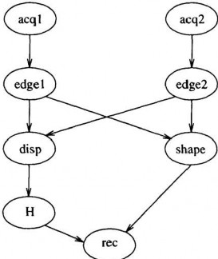
Figure 2.8 Precedence graph associated with the robotic application.
Resource constraints
From a process point of view, a resource is any software structure that can be used by the process to advance its execution. Typically, a resource can be a data structure, a set of variables, a main memory area, a file, a piece of program, or a set of registers of a peripheral device. A resource dedicated to a particular process is said to be private, whereas a resource that can be used by more tasks is called a shared resource.
To maintain data consistency, many shared resources do not allow simultaneous accesses but require mutual exclusion among competing tasks. They are called exclusive resources. Let R be an exclusive resource shared by tasks la and Jb. If A is the operation performed on R by Ja, and Bis the operation performed on R by Jb, then A and B must never be executed at the same time. A piece of code executed under mutual exclusion constraints is called a critical section.
To ensure sequential accesses to exclusive resources, operating systems usually provide a synchronization mechanism (such as semaphores) that can be used by tasks to create critical sections of code. Hence, when we say that two or more tasks have resource constraints, we mean that they have to be synchronized since they share exclusive resources.
wait(s)
critical section
signal(s)
-
shared -
wait(s)
critical section
signal(s)
resource
I R I
-
I I
Figure 2.9 Structure of two tasks that share an exclusive resource.
Consider two tasks 11 and 12 that share an exclusive resource R (for instance, a list), on which two operations (such as insert and remove) are defined. The code implementing such operations is thus a critical section that must be executed in mutual exclusion. If a binary semaphore s is used for this purpose, then each critical section must begin with a wait(s) primitive and must end with a signal{s) primitive (see Figure 2.9).
If preemption is allowed and 11 has a higher priority than h, then 11 can block in the situation depicted in Figure 2.10. Here, task 12 is activated first, and, after a while, it enters the critical section and locks the semaphore. While 12 is executing the critical section, task J1 arrives, and, since it has a higher priority, it preempts 12 and starts executing. However, at time ti, when attempting to enter its critical section, it is blocked on the semaphore and 12 is resumed. J1 is blocked until time t2, when 12 releases the critical section by executing the signal{s) primitive, which unlocks the semaphore.
A task waiting for an exclusive resource is said to be blocked on that resource. All tasks blocked on the same resource are kept in a queue associated with the semaphore, which protects the resource. When a running task executes a wait primitive on a locked semaphore, it enters a waiting state, until another task executes a signal primitive that unlocks the semaphore. When a task leaves the waiting state, it does not go in the running state, but in the ready state, so that the CPU can be assigned to the highest-priority task by the scheduling algorithm. The state transition diagram relative to the situation described above is shown in Figure 2.11.
critical section
- normal execution
blocked on s
J I
h1/ ffl!·ll -1--- -.:,.
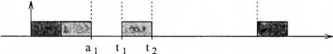
Figure 2.10 Example of blocking on an exclusive resource.
scheduling
RUN
activation termination
signal free resource
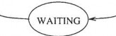
preemption
wait on busy resource
Figure 2.11 Waiting state caused by resource constraints.
DEFINITION OF SCHEDULING PROBLEMS
In general, to define a scheduling problem we need to specify three sets: a set of n tasks J = { J1, J2, ... , Jn}, a set of m processors P = { P1, P2,... , Pm}
and a set of s types of resources R ={R1, R2, ... , R.}. Moreover, precedence
relations among tasks can be specified through a directed acyclic graph, and
timing constraints can be associated with each task. In this context, scheduling means to assign processors from P and resources from R to tasks from J in order to complete all tasks under the imposed constraints [B+93). This prob lem, in its general form, has been shown to be NP-complete [GJ79) and hence computationally intractable.
Indeed, the complexity of scheduling algorithms is of high relevance in dynamic real-time systems, where scheduling decisions must be taken on-line during taslk execution. A polynomial algorithm is one whose time complexity grows as a polynomial function p of the input length n of an instance. The complexity of such algorithms is denoted by O(p(n)). Each algorithm whose complexity function cannot be bounded in that way is called an exponential time algorithm. In particular, NP is the dass of all decision problems that can be solved in polynomial time by a nondeterministic Turing machine. A problem Q is said to be NP-complete if Q E NP and, for every Q' E NP, Q' is polynomially transformable to Q [GJ79]. A decision problem Q is said to be NP-hard if all problems in NP are polynomially transformable to Q, but we cannot show that QE NP.
Let us consider two algorithms with complexity functions n and 5n, respectively,
and let us assume that an elementary step for these algorithms lasts 1 µs. If the input length of the instance is n = 30, then it is easy to calculate that the
polynomial algorithm can solve the problem in 30 µs, whereas the other needs about 3 • 105 centuries. This example illustrates that the difference between polynomial and exponential time algorithms is large and, hence, it may have a strong influence on the performance of dynamic real-time systems. As a consequence, one of the research objectives on real-time scheduling is to restrict our attention to simpler, but still practical, problems that can be solved in polynomial time complexity.
In order to reduce the complexity of constructing a feasible schedule, one may simplify the computer architecture (for example, by restricting to the case of uniprocessor systems), or one may adopt a preemptive model, use fixed priori ties, remove precedence and/or resource constraints, assume simultaneous task
activation, homogeneous task sets (solely periodic or solely aperiodic activities), and so on. The assumptions made on the system or on the tasks are typically used to classify the various scheduling algorithms proposed in the literature.
Classification of scheduling algorithms
Among the great variety of algorithms proposed for scheduling real-time tasks, we can identify the following main classes.
Preemptive. With preemptive algorithms, the running task can be inter rupted at any time to assign the processor to another active task, according to a predefined scheduling policy.
Non-preemptive. With non-preemptive algorithms, a task, once started, is executed by the processor until completion. In this case, all scheduling decisions are taken as a task terminates its execution.
Static. Static algorithms are those in which scheduling decisions are based on fixed parameters, assigned to tasks before their activation.
Dynamic. Dynamic algorithms are those in which scheduling decisions are based on dynamic parameters that may change during system evolution.
Off-line. We say that a scheduling algorithm is used off-line if it is ex ecuted on the entire task set before actual task activation. The schedule generated in this way is stored in a table and later executed by a dispatcher.
On-line. We say that a scheduling algorithm is used on-line if scheduling decisions are taken at runtime every time a new task enters the system or when a running task terminates.
Optimal An algorithm is said to be optimal if it minimiz,es some given cost function defined over the task set. When no cost function is defined and the only concern is to achieve a feasible schedule, then an algorithm is said to be optimal if it may fail to meet a deadline only if no other algorithms of the same class can meet it.
Heuristic. An algorithm is said to be heuristic if it tends toward but does not guarantee to find the optimal schedule.
Moreover, an algorithm is said to be clairvoyant if it knows the future; that is, if it knows in advance the arrival times of all the tasks. Although such an
algorithm does not exist in reality, it can be used for comparing the performance of real algorithms against the best possible one.
Guarantee-based algorithms
In hard real-time applications that require highly predictable behavior, the feasibility of the schedule should be guaranteed in advance; that is, before task execution. In this way, if a critical task cannot be scheduled within its deadline, the system is still in time to execute an alternative action, attempting to avoid catastrophic consequences. In order to check the feasibility of the schedule before tasks' execution, the system has to plan its actions by looking ahead in the future and by assuming a worst-case scenario.
In static real-time systems, where the task set is fixed and known a priori, all task activations can be precalculated off-line, and the entire schedule can be stored in a table that contains all guaranteed tasks arranged in the proper order. Then, at runtime, a simple dispatcher simply removes the next task from the table and puts it in the running state. The main advantage of the static approach is that the run-time overhead does not depend on the complexity of the scheduling algorithm. This allows very sophisticated algorithms to be used to solve complex problems or find optimal scheduling sequences. On the other hand, however, the resulting system is quite inflexible to environmental changes; thus, predictability strongly relies on the observance of the hypotheses made on the environment.
In dynamic real-time systems, since new tasks can be activated at runtime, the guarantee must be done on-line every time a new task enters the system. A scheme of the guarantee mechanism typically adopted in dynamic real-time systems is illustrated in Figure 2.12.
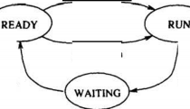
scheduling -
activation
acceptance test
YES termination
preemption
NO---' ignal
rrcc resource
wait on
busy re. ourcc
Figure 2.12 Scheme of the guarantee mechanism used in dynamic hard real time systems.
!
J new
--------1""=="""4------' t
---1=1-"'½-:;------"' _...,..J.·""""------+-1 _,. l
_1- .:-----,-----u--=------+--------... t
,.,..,, =---:--.----_.......U""""---·, -+--I_.,. t
jwj...._-: - ..._. ,·I.. "' t
t 0
Figure 2.13 Example of domino effect.
If J is the current task set that has been previously guaranteed, a newly arrived task Jnew is accepted into the system if and only if the task set J' = Ju { J new} ifound schedulable. If J' is not schedulable, then task lnew irejectesd to preserve the feasibility of the current task set.
It is worth to notice that, since the guarantee mechanism is based on worst-case assumptions, a task could unnecessarily be rejected. This means that the guar antee of hard tasks is achieved at the cost of reducing the average performance of the system. On the other hand, the benefit of having a guarantee mechanism is that potential overload situations can be detected in advance to avoid neg ative effects on the system. One of the most dangerous phenomena caused by a transient overload is called domino effect. Irefers totthe situation in which the arrival of a new task causes all previously guaranteed tasks to miss their deadlines. Let us consider for example the situation depicted in Figure 2.13, where tasks are scheduled based on their absolute deadlines.
At time to, if task lnew was accepted, all other tasks (previously schedulable) would miss their deadlines. In planned-based algorithms, this situation is de
tected at time t0, when the guarantee is performed and causes task lnew tbe o
rejected.
In summary, the guarantee test en:sures that, once a task is accepted, it will complete within its deadline and, moreover, its execution will not jeopardize the feasibility of the tasks that have been previously guaranteed.
Best-effort algorithms
In certain real-time applications, computational activities have soft timing con straints that should be met whenever possible to satisfy system requirements, however, no catastrophic events will occur if one or more tasks miss their dead lines. The only consequence associated with a timing fault is a performance degradation of the system.
For example, in typical multimedia applications, the objective of the comput ing system is to handle different types of information (such as text, graphics, images, and sound) in order to achieve a certain quality of service for the users. In this case, the timing constraints associated with the computational activi ties depend on the quality of service requested by the users; hence, missing a deadline may only affect the performance of the system.
To efficiently support soft real-time applications that do not have hard timing requirements, a best-effort approach may be adopted for scheduling. A best effort scheduling algorithm tries to "do its best" to meet deadlines, but there is no guarantee of finding a feasible schedule. In a best-effort approach, tasks may be queued according to policies that take time constraints into account; however, since feasibility is not checked, a task may be aborted during its execution. On the other hand, best-effort algorithms perform much better than guarantee-based schemes in the average case. In fact, whereas the pessimistic assumptions made in the guarantee mechanism may unnecessarily cause task rejections, in best-effort algorithms a task is aborted only under real overload conditions.
Algorithms based on imprecise computation
The concept of imprecise and approximate computation has emerged as a new approach to increasing flexibility in dynamic scheduling by trading off com putation accuracy with timing requirements (Nat95, LNL87, LLN87, LLS+91, L+94). In dynamic situations, where the time and resources are not enough for computations to complete within the deadline, there may still be enough re sources to produce approximate results that may at least prevent a catastrophe. The idea of using partial results when exact results cannot be produced within the deadline has been used for many years. Recently, however, this concept has been formalized1 and specific techniques have been developed for designing programs that can produce partial results.
In a real-time system that supports imprecise computation, every task Ji is decomposed into a mandatory subtask Mi and an optional subtask Oj. The mandatory subtask is the portion of the computation that must be done in order to produce a result of acceptable quality, whereas the optional subtask refines this result [SLCG89]. Both subtasks have the same arrival time ai and the same deadline di as the original task Ji; however, Oi becomes ready for execution when Mi is completed. If Ci is the computation time associated with Ji, subtasks Mi and Oi have computation times mi and oi, such that
mi +0i = Ci. In order to guarantee a minimum level of performance, At/i
must be completed within its deadline, whereas Oi can be left incomplete, if necessary, at the expense of the quality of the result produced by the task.
It is worth to notice that the task model used in traditional real-time systems is a special case of the one adopted for imprecise computation. In fact, a hard
task corresponds to a task with no optional part (oi = 0), whereas a soft task is equivalent to a task with no mandatory part (mi = 0).
In systems that support imprecise computation, the error €i in the result pro duced by Ji (or simply the error of Ji) is defined as the length of the portion of Oi discarded in the schedule. If <Ji is the total processor time a.5signed to Oi by the scheduler, the error of task Ji is equal to
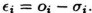
The average error 'l on the task set J is defined as
n
f = LWi€i,
i=l
where Wi is the relative importance of Ji in the task set. An error €i > 0 means that a portion of subtask Oi has been discarded in the schedule at the expense of the quality of the result produced by task Ji but for the benefit of other mandatory subtasks that can complete within their deadlines.
In this model, a schedule is said to be feasible if every mandatory subtask Mi is completed in the interval [ai,di]. A schedule is said to be precise if the average error 'l on the task set is zero. In a precise schedule, all mandatory and optional subtasks are completed in the interval [ai,di]-
As an illustrative example, let us consider the task set shown in Figure 2.14a. Notice that this task set cannot be precisely scheduled; however, a feasible
schedule with an average error of 'l = 4 can be found, and it is shown in
Figure 2.14b. In fact, all mandatory subtasks finish within their deadlines,
a-I | d·I | C-I | m·I | O· I | |
J I | 0 | 6 | 4 | 2 | 2 |
J2 | 2 | 7 | 4 | I | 3 |
13 | 4 | IO | 5 | 2 | 3 |
14 | 12 | 15 | 3 | I | 2 |
15 | 6 | 20 | 8 | 5 | 3 |
{
J I l.
J2 t ■ +
(a)
.., t
;,, t
13 1
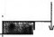
--1'------------------:,, t
}. {
J4
,-------,,--------,-----,------,---.... ---+-----------:,,. t

15 l 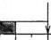
0 2 4 6 8 10 12 14 16 18 20
(b)
I :,, l
Figure 2.14 An example of an imprecise schedule.
whereas not all optional subtasks are able to complete. In particular, a time unit of execution is subtracted from 01, two units from03, and one unit from Os. Hence, assuming that all tasks have an importance value equal to one
(Wi = 1), the average error on the task set is t = 4.
Metrics for performance evaluation
The performance of scheduling algorithms is typically evaluated through a cost function defined over the task set. For example, classical scheduling algorithms try to minimize the average response time, the total completion time, the weighted sum of completion times, or the maximum lateness. When deadlines
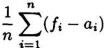
Average response time:
tr =
Total completion time:
tc = m (fi) - mjn(ai)
l l
Weighted sum of completion times:
n
tw = LWdi
i=l
Maximum lateness:
Maximum number of late tasks:
Ntate =
Lmiss(fi)
i=l
n
where
miss(fi) ={
0
1
if f- < d·
oth r is
Table 2.1 Example of cost functions.
are considered, they are usually added as constraints, imposing that all tasks must meet their deadlines. If some deadlines cannot be met with an algorithm A, the schedule is said to be infeasible by A. Table 2.1 shows some common cost functions used for evaluating the performance of a scheduling algorithm.
The metrics adopted in the scheduling algorithm has strong implications on the performance of the real-time system [SSDB95J, and it must be carefully chosen according to the specific application to be developed. For example, the average response time is generally not of interest for real-time applications hecause there is not direct assessment of individual timing properties such as
di
lLI =3
d2
lL2 = 2
d3
d4
(a)
J I
0 2 4 6
8 10 12 14 16 18 20 22 24 26
Lma>t = LI = 3
di
lLl=2.1
d2
l
L2= -4
d3 d4
l l
L3 = -S L4 = -S
d5
l
LS= --4

(b) J I
() 2 4 6 8 IO 12 14 16 18 20 22 24 26
Lmax = LI = 23
Figure 2.15 Theschedule in a minimizes the maximum lateness, but all tasks miss their deadline. The schedule in b has a greater maximum lateness. but four tasks out of five complete before their deadline.
periods or deadlines. The same is true for minimizing the total completion time. The weighted sum of completion times is relevant when tasks have different importance values that they impart to the system on completion. Minimizing the maximum lateness can be useful at design time wh€n resources can be added until the maximum lateness achieved on the task set is less than or equal to zero. In that case, no task misses its deadline. In general, however, minimizing the maximum lateness does not minimize the number of tasks that miss their deadlines and does not necessarily prevent one or more tasks from missing their deadline.
Let us consider, for example, the case depicted in Figure 2.15. The schedule shown in Figure 2.15a minimizes the maximum lateness, but all tasks miss their deadline. On the other hand, the schedule shown in Figure 2.15b has a greater maximum lateness, but four tasks out of five complete before their deadline.
When tasks have soft deadlines and the application concern is to meet as many deadlines as possible (without a priori ,guarantee), then the scheduling algo rithm should use a cost function that minimizes the number of late tasks.
v(f;)
soft
(:i)
fj
v(f;)
Non re:il-time
di
(b)
f·I

v(f;)
fj
dj
(C)
f i
v(f;)
firm
dj
(d)
Figure 2.16 Example of cost functions for different types of tasks.
In other applications, the benefit of executing a task may depend not only on the task importance but also on the time at which it is completed. This can be described by means of specific utility functions, which describe the value associated with the task as a function of its completion time. Figure 2.16 illustrates some typical ut.ility functions that can be defined on the application tasks. For instance, non-real-time tasks (a) do not have deadlines, thus the value achieved by the system is proportional to the task importance and does not depend on the completion time. Soft tasks (b) have noncritical deadlines; therefore, the value gained by the system is constant if the task finishes before its deadline but decreases with the exceeding time. In some cases (c), it is required to execute a task on-time; that is, not too early and not too late with respect to a given deadline. Hence, the value achieved by the system is high if the task is completed around the deadline, but it rapidly decreases with the absolute value of the lateness. In other cases (d), executing a task after its deadline does not cause catastrophic consequences, but there is no benefit for the system, thus the utility function is zero after the deadline.
When utility functions are defined on the tasks, the performance of a scheduling algorithm can be measured by the cumulative valu,e, given by the sum of the utility functions computed at each completion time:
Cumulative_value = Ln
i=l
v(fi),
This type of metrics is very useful for evaluating the performance of a system during overload conditions, and it is considered in more detail in Chapter 8.
SCHEDULING ANOMALIES
In this section we describe some singular examples that clearly illustrate that real-time computing is not equivalent to fast computing, and an increase of computational power in the supporting hardware does not always cause an improvement on the performance of a task set. These particular situations, called Richard's anomalies, have been described by Graham in 1976 and refer to task sets with precedence relations executed in a multiprocessor environment. Designers should be aware of such insidious anomalies so that they can avoid them. The most important anomalies are expressed by the following theorem [Gra76, SSDB95]:
Theorem 2.1 (Graham) // a task set is optimally scheduled on a multipro cessor with some priority assignment, a fixed number of processors, fixed ex ecution times, and precedence constraints, then increasing the number of pro cessors, reducing execution times, or weakening the precedence constraints can increase the schedule length.
This result implies that if tasks have deadlines, then adding resources (for example, an extra processor) or relaxing constraints (less precedence among tasks or fewer execution times requirements) can make things worse. A few examples can best illustrate why this theorem is true.
Let us conside.r a task set composed by nine tasks J = {J1, J2, ... , Jg}, sorted by decreasing priorities, so that Ji priority is greater than Ji priority if and only if i < j. Moreover, tasks are subject to precedence constraints that are described through the graph shown in Figure 2.17. Computation times are indicated in parentheses.
If the above set is executed on a parallel machine with three processors, we
obtain the optimal schedule a• illustrated in Figure 2.18, where the global completion time is tc = 12 units of time.
Now we will show that adding an extra processor, reducing tasks' execution times, or weakening precedence constraints will increase the global completion time of the task set.
J I (3) J 9 (9)
J 3 (2) 0
J 7 (4)
J 6 (4)
J 8 (4)
J 2 (2) 0
priority(]i ) > priority(]i ) 'r;/ i < j
Figure 2.17 Precedence graph of the task set J; numbers in parentheses indicate computation times.
J I
1z
J 8
Pz
0 2 3 4 5 6 7 8 9 10 11 12 13 14 15
Figure 2.18 Optimal schedule of task set J on a three-processor machine.
J I
J 8
]5
J 6
J 7
J 4
J 3
J 2
P1
P2
P3
P4
0 2 3 4 5 6 7 8 9 10 I! 12 13 14 15
Figure 2.19 Schedule of task set J on a. four-processor machine.
P1
J I
J s
0 2 3 4 5 6 7 8 9 10 11 12 13 14 15
Figure 2.20 Schedule of task set J on three processors. with computation times reduced by one unit of time.
Number of processors increased
If we execute the task set J on a more powerful machine consisting of four pro cessors, we obtain the schedule illustrated in Figure 2.19, which is characterized
by a global completion time of tc = 15 units of time.
Computation times reduced
One could think that the global completion time of the task set J could be improved by reducing tasks' computation times of each task. However, we can surprisingly see that if we reduce the computation time of each task by one unit
of time, the schedule length will increase with respect to the optimal schedule
e7*, and the global completion time will be tc = 13, as shown in Figure 2.20.

J I (3) J 9 (9)
J 2 (2) 0 0 J 8 (4)
0 J 7 (4)
J3 (2) 0
J 6 (4)
J4 (2) J 5 (4)
(a)
1 9
J I J 8 | ||
J 2 | J 4 J 5 | |
J 3 | J 7 | |
P1
P2
P3
0 2 3 4 5 6 7 8 9 10 II 12 13 14 15 16 I
(b)
Figure 2.21 a. Precedence graph of task set J obtained by removing the constraints on tasks ls and J<f>. b. Schedule of task set J on three processors. with precedence constraints weakened.
Precedence constraints weakened
Scheduling anomalies can also arise if we remove precedence constraints from the directed acyclic graph depicted in Figure 2.17. For instance, if we remove the precedence relations between task 14 and tasks 15 and J6 (see Figure 2.21a),
we obtain the schedule shown in Figure 2.21b, which is characterized by a global completion time of tc = 16 units of time.
J I
P2

0 2 4 6 8 10 12 14 16 18 20 22
11
(a)
J5
0 2 4 6 8 10 12 14 16
(b)
18 20 22
t c= 22
Figure 2.22 Example of anomaly under resource constraints. If h and ]4 share the same resource in exclusive mode, the optimal schedule length (a) increases if the computation time of task J1 is reduced (b). Task are statically allocated on the processors.
Anomalies under resource constraints
As a last example of scheduling anomalies, we will show how the schedule length of a task set can increase when reducing tasks' computation times in the presence of shared resources. Consider the case illustrated in Figure 2.22, where five tasks are statically allocated on two processors: tasks 11 and h on processor Pl, and tasks ls, 14 and ls on processor P2. Moreover, tasks h and
14 share the same resource in exclusive mode, hence their execution cannot overlap in time. A schedule of this task set is shown in Figure 2.22a, where the total completion time is tc = 17.
If we now reduce the computation time of task 11 on the first processor, then 12 can begin earlier and take the resource before task 14. As a consequence, task 14 must now block over the shared resource and possibly miss its deadline. This situation is illustrated in Figure 2.22b. As we can see, the blocking time experienced by 14 causes a delay in the execution of 15 (which may also miss its deadline), increasing the total completion time of the task set from 17 to 22.
Notice that the scheduling anomaly illustrated by the previous example is par ticularly insidious for hard real-time systems because tasks are guaranteed based on their worst-case behavior, but they may complete before their worst case computation time. A simple solution that avoids the anomaly is to keep the processor idle if tasks complete earlier, but this can be very inefficient. There are algorithms, such as the one proposed by Shen [SRS93], that tries to reclaim this idle time, while addressing the anomalies so that they will not occur.
Exercises
Give the formal definition of a schedule, explaining the difference between preemptive and non-preemptive scheduling.
Explain the difference between periodic and aperiodic tasks, and describe the main timing parameters that can be defined for a real-time activity.
Describe a real-time application as a number of tasks with precedence relations, and draw the corresponding precedence graph.
Discuss the difference between static and dynamic, on-line and off-line, optimal, and heuristic scheduling algorithms.
Provide an example of domino effect, caused by the arrival of a task J*,
in a feasible set of three tasks.
35
A Survey of Hard Real-Time Scheduling for Multiprocessor Systems
ROBERT I. DAVIS and ALAN BURNS, University of York
This survey covers hard real-time scheduling algorithms and schedulability analysis techniques for homo- geneous multiprocessor systems. It reviews the key results in this field from its origins in the late 1960s to the latest research published in late 2009. The survey outlines fundamental results about multiprocessor real-time scheduling that hold independent of the scheduling algorithms employed. It provides a taxonomy of the different scheduling methods, and considers the various performance metrics that can be used for comparison purposes. A detailed review is provided covering partitioned, global, and hybrid scheduling al- gorithms, approaches to resource sharing, and the latest results from empirical investigations. The survey identifies open issues, key research challenges, and likely productive research directions.
Categories and Subject Descriptors: C.3 [Special-Purpose and Application-Based Systems]: Real-time and embedded systems
General Terms: Performance, Design, Algorithms
Additional Key Words and Phrases: Hard real-time scheduling, global scheduling, partitioned scheduling, multiprocessor, multicore
ACM Reference Format:
Davis, R. I. and Burns, A. 2011. A survey of hard real-time scheduling for multiprocessor systems. ACM Comput. Surv. 43, 4, Article 35 (October 2011), 44 pages.
DOI = 10.1145/1978802.1978814 http://doi.acm.org/10.1145/1978802.1978814
BACKGROUND
Today, real-time embedded systems are found in many diverse application areas, in- cluding automotive electronics, avionics, telecommunications, space systems, medical imaging, and consumer electronics. In all of these areas, there is rapid technological progress.
Companies building embedded real-time systems are driven by a profit motive. To succeed, they aim to meet the needs and desires of their customers by providing systems that are more capable, more flexible, and more effective than those of their competitors, and by bringing these systems to market earlier. This desire for technological progress has resulted in a rapid increase in both software complexity and the processing de- mands placed on the underlying hardware.
To address demands for increasing processor performance, silicon vendors no longer concentrate wholly on the miniaturization needed to increase processor clock speeds, as this approach has led to problems with both high power consumption and excessive
This work has been funded in part by the EU FP7 projects Jeopard (project number 216682) and eMuCo (project number 216378), the EU FP7 Artist Design Network of Excellence, and the EPSRC project Tempo (EP/G055548/1).
Authors’ addresses: R. I. Davis and A. Burns, Real-Time Systems Research Group, Department of Computer Science, University of York, York, YO10 5DG, U.K.; email: {rob.davis, alan.burns}@cs.york.ac.uk.
+
Permission to make digital or hard copies of part or all of this work for personal or classroom use is granted without fee provided that copies are not made or distributed for profit or commercial advantage and that copies show this notice on the first page or initial screen of a display along with the full citation. Copyrights for components of this work owned by others than ACM must be honored. Abstracting with credit is permitted. To copy otherwise, to republish, to post on servers, to redistribute to lists, or to use any component of this work in other works requires prior specific permission and/or a fee. Permissions may be requested from Publications Dept., ACM, Inc., 2 Penn Plaza, Suite 701, New York, NY 10121-0701 USA, fax 1 (212) 869-0481, or permissions@acm.org.
Qc 2011 ACM 0360-0300/2011/10-ART35 $10.00
DOI 10.1145/1978802.1978814 http://doi.acm.org/10.1145/1978802.1978814


ACM Computing Surveys, Vol. 43, No. 4, Article 35, Publication date: October 2011.

heat dissipation. Instead, there is now an increasing trend toward using multiprocessor platforms for high-end real-time applications.
A key date in the move toward multiprocessor systems was May 7, 2004 [Bertogna 2007], when Intel canceled the successor to the Pentium P4 processor called Tejas, due to extremely high power consumption [Lammers 2004]. Dynamic power consumption, the power lost charging and discharging capacitive load, is a dominant factor for chip designs using technology above the 100-nm level; however, for sub-100-nm technology, transistor leakage current becomes important. This is because, as the dimensions of the gates and oxide layers are reduced, so is their electrical resistance. The result is that leakage current and hence power dissipation rapidly increases with further miniatur- ization. This problem can be partially ameliorated by running at a lower voltage, which reduces power consumption due to both dynamic and leakage sources; however, reduc- ing voltage also limits the maximum operating frequency, restricting performance. A solution to this problem is to limit miniaturization and operating frequencies, and, instead, to use multiple processors on a single chip. On July 27, 2006, 2 years after the cancellation of Tejas, Intel released the Core Duo processor. In future, it is expected that the high-end processing performance will be provided by using a large number of processor cores on a single chip. For example, the Intel Teraflop Research Chip (Polaris), announced on Feb 11, 2007, has 80 processor cores providing 1 Teraflop performance
at 3 GHz.
Multicore processors from other vendors include, from AMD: Opteron, Phenom, Turion 64, Radeon, and Firestream; from Analog Devices: Blackfin; from Azul Systems: Vega 1, Vega 2, Vega 3; from ARM: MPCore; from Cavium Networks: Octeon; from Freescale Semiconductor: QorlQ; from IBM: POWER4, POWER5, POWER6, PowerPC970, Xenon (X-Box 360); from Intel: Core Duo, Core 2 Duo, Core 2 Quad, Core i3, i5, i7, i7 Extreme Edition family, Itanium 2, Pentium D, Pentium Dual-Core, Polaris, Xeon; from Nvidia: GeForce 9, GeForce 200, Tesla; from NXP Nexperia; from Sun Microsystems: MAJC 5200, UltraSPARC IV, UltraSPARC T1, UltraSPARC T2; from Texas Instruments: TMS320C80 MVP; from Tilera: TILE64; from XMOS: XS-G4. By 2009, there was clear evidence of a strong trend toward using multicore proces- sors in embedded systems that require hard real-time performance. Chip Downing, Director of Business Development, A&D, at WindRiver, noted in the October 2009 edi- tion of Avionics magazine, “We see a strong trend towards multicore in aerospace and defense” [Downing 2009]. The same article explained that “the advantage for avionics is that multicore chips can significantly reduce the Size, Weight and Power (SWaP) re- quirements” [Downing 2009]. A similar trend is also evident in automotive electronics, [Leteinturier 2007], and in space/satellite systems, where the European Space Agency (ESA) is supporting development of suitable multicore processors (LEON3). Mobile
phones and related devices already exploit multiprocessor platforms.
Multiprocessor Real-Time Systems and Scheduling
Systems are referred to as real-time when their correct behavior depends not only on the operations they perform being logically correct, but also on the time at which they are performed. For example in avionics, flight control software must execute within a fixed time interval in order to accurately control the aircraft. In automotive electronics there are tight time constraints on engine management and transmission control systems that derive from the mechanical systems that they control.
Guaranteeing real-time performance while making the most effective use of the avail- able processing capacity requires the use of efficient scheduling policies or algorithms supported by accurate schedulability analysis techniques. These analysis techniques need to be capable of analyzing the worst-case behavior of the application under a given scheduling policy, thus providing proof, subject to a set of assumptions about


ACM Computing Surveys, Vol. 43, No. 4, Article 35, Publication date: October 2011.

application behavior, that timing constraints will always be met during operation of the system.
Research into uniprocessor real-time scheduling can trace its origins back to the late 1960s and early 1970s with significant research effort and advances made in the 1980s and 1990s. The interested reader is referred to Audsley et al. [1996] and Sha et al. [2004], which provide historical accounts of the most important advances in the field of uniprocessor scheduling during those decades. Today, although there is still significant scope for further research, uniprocessor real-time scheduling theory can be viewed as reasonably mature, with a large number of key results documented in textbooks such as those by Burns and Wellings [2009], Buttazzo [2005], and Liu [2000], and successfully transferred into industrial practice.
Multiprocessor real-time scheduling theory also has it origins in the late 1960s and early 1970s. Liu [1969, p. 28] noted that multiprocessor real-time scheduling is intrin- sically a much more difficult problem than uniprocessor scheduling:
“Few of the results obtained for a single processor generalize directly to the multiple processor case; bringing in additional processors adds a new dimension to the scheduling problem. The simple fact that a task can use only one processor even when several processors are free at the same time adds a surprising amount of difficulty to the scheduling of multiple processors.”
The seminal paper of Dhall and Liu [1978] heavily influenced the course of research in this area for two decades. During the 1980s and 1990s, conventional wisdom was that global approaches to multiprocessor scheduling, where tasks may migrate from one processor to another, suffered from the so-called “Dhall effect,” and were therefore inferior to partitioned approaches, with a fixed allocation of tasks to processors. Re- search efforts therefore focused almost exclusively on partitioned approaches. It was not until Phillips et al. [1997] showed that the Dhall effect was more of a problem with high-utilization tasks than it was with global scheduling algorithms that there was renewed interest in global scheduling algorithms.
In the late 1990s silicon vendors such as IBM and AMD began research into the de- velopment of multicore processors, with IBM releasing the first nonembedded dual-core processor, the POWER4, in 2001. This trend away from increasing processing capac- ity via ever higher clock speeds toward increasing performance via multiple processor cores became evident to the real-time systems research community. This resulted in significant research effort being focused on the problem of real-time multiprocessor scheduling. While markedly more articles have been published in this area since 2000 than before, and significant progress has been made, there are still many open ques- tions and research challenges that remain.
This article presents a survey of multiprocessor real-time scheduling algorithms and schedulability analysis techniques, from the origins of the field in the late 1960s up to the latest research published at the end of 2009. The aim of the survey is to provide a classification of existing research, both providing a perspective on the area and identifying significant open issues and future research directions.
Organization
The remainder of the article is organized as follows: Section 2 provides a classification of multiprocessor systems, and algorithms. It describes the basic system and task models, and defines the terminology and notation used. Section 3 describes metrics that can be used to compare the performance of different multiprocessor real-time scheduling algorithms and their analyses. Section 4 describes a set of fundamental results that are independent of specific scheduling algorithms. This is followed by an overview of partitioned and global approaches to multiprocessor real-time scheduling, in Sections 5 and 6, respectively. Section 7 outlines hybrid approaches that attempt to combine the


ACM Computing Surveys, Vol. 43, No. 4, Article 35, Publication date: October 2011.

best attributes of both partitioned and global approaches. Section 8 describes research into protocols and analyses for accessing mutually exclusive shared resources. Section 9 reports on the latest empirical research. Finally, Section 10 identifies key open issues in the field, and Section 11 provides some concluding remarks.
SYSTEM MODELS, TERMINOLOGY, AND NOTATION
This section provides a primer on the terminology and notation used in multiprocessor scheduling research. It is aimed both at helping new researchers entering the field and providing a consistent nomenclature that has yet to fully emerge from the research community.
Classification of Multiprocessor Systems
From the perspective of scheduling, multiprocessor systems can be classified into three categories.
Heterogeneous. The processors are different; hence the rate of execution of a task depends on both the processor and the task. Indeed, not all tasks may be able to execute on all processors.
Homogeneous. The processors are identical; hence the rate of execution of all tasks is the same on all processors.
Uniform. The rate of execution of a task depends only on the speed of the processor. Thus a processor of speed 2 will execute all tasks at exactly twice the rate of a processor of speed 1.
In this survey, we are concerned with homogeneous multiprocessor systems, compris- ing m processors.
Periodic and Sporadic Task Models
···
The aim of multiprocessor real-time scheduling is to execute the set of tasks that make up an application, on the multiprocessor system, such that their time constraints are always met. An application (or taskset τ ) is assumed to comprise a static set of n tasks (τ1 τn). When fixed-priority scheduling is used, the task number is also used to indicate a unique priority i, from 1 to n (where n is the lowest priority).
The overwhelming majority of the research into multiprocessor real-time scheduling focuses on two simple task models: the periodic task model and the sporadic task model. In both models, tasks give rise to a potentially infinite sequence of invocations (or jobs). In the periodic task model, the jobs of a task arrive strictly periodically, separated by a fixed time interval. In the sporadic task model, each job of a task may arrive at any time once a minimum interarrival time has elapsed since the arrival of the previous job of the same task.
Periodic tasksets may be classified as synchronous if there is some point in time at which all of the tasks arrive simultaneously, or asynchronous, where task arrival times are separated by fixed offsets and there is no simultaneous arrival time. In the sporadic task model, the arrival times of the jobs of different tasks are assumed to be independent.
Intratask parallelism is not permitted by either model; hence, at any given time, each job may execute on at most one processor. Also, it is assumed, unless otherwise stated, that only a single job of a task is ready to execute at any given time. Further, it is assumed that once a job starts to execute it will not suspend itself.
Each task τi is characterized by: its relative deadline Di, worst-case execution time Ci, and minimum interarrival time or period Ti. The utilization ui, of task τi is given by Ci/Ti. The utilization usum of a taskset is the sum of the utilizations of all of its tasks. A task’s worst-case response time Ri is defined as the longest time from a job of that


ACM Computing Surveys, Vol. 43, No. 4, Article 35, Publication date: October 2011.

task arriving to it completing execution. The hyperperiod H(τ ) of a taskset is defined as the least common multiple of the task periods.
There are three levels of constraint on task deadlines that are studied in the litera- ture.
=
Implicit deadlines. All task deadlines are equal to their periods (Di Ti).
(3) ≤
Constrained deadlines. All task deadlines are less than or equal to their periods (Di Ti).
Arbitrary deadlines. Task deadlines may be less than, equal to, or greater than their periods.
Most of the published research assumes that tasks are independent and so cannot be blocked from executing by another task other than due to contention for the processors. Section 8 outlines research into policies that permit access to mutually exclusive re- sources lifting the restriction of independence. They consider the blocking time during which tasks can be prevented from executing due to other tasks accessing mutually exclusive shared resources.
As a result of preemption and subsequent resumption, a job may, in the case of global scheduling, migrate from one processor to another. The cost of preemption, migration, and the runtime operation of the scheduler is generally assumed to be either negligible, or subsumed into the worst-case execution time of each task. Empirical research considering the effects of such overheads is outlined in Section 9.
Taxonomy of Multiprocessor Scheduling Algorithms
Multiprocessor scheduling can be viewed as attempting to solve two problems.
The allocation problem, or on which processor a task should execute.
The priority problem, or when, and in what order with respect to jobs of other tasks, each job should execute.
Scheduling algorithms for multiprocessor systems can be classified according to when changes to priority and allocation can be made (referred to as migration-based and priority-based classifications [Carpenter et al. 2004]).
Allocation
No migration. Each task is allocated to a processor and no migration is permitted.
Task-level migration. The jobs of a task may execute on different processors; how- ever, each job can only execute on a single processor.
Job-level migration. A single job can migrate to and execute on different processors; however, parallel execution of a job is not permitted.
Priority
Fixed task priority. Each task has a single fixed priority applied to all of its jobs.
Fixed job priority. The jobs of a task may have different priorities, but each job has a single static priority. An example of this is earliest deadline first (EDF) scheduling.
Dynamic priority. A single job may have different priorities at different times, for example least laxity first (LLF) scheduling.
Scheduling algorithms where no migration is permitted are referred to as partitioned, those where migration is permitted are referred to as global. As the majority of research into global scheduling algorithms has focused on models where arbitrary migration (job- level migration) is permitted, in the remainder of this article we will use the term global to mean job-level migration and provide clarification indicating when only task-level migration is permitted.


ACM Computing Surveys, Vol. 43, No. 4, Article 35, Publication date: October 2011.

A scheduling algorithm is said to be work-conserving if it does not permit there to be any time at which a processor is idle and there is a task ready to execute. Partitioned scheduling algorithms are not work-conserving, as a processor may become idle, but cannot be used by ready tasks allocated to a different processor.
Scheduling algorithms can be further classified as follows.
Preemptive. Tasks can be preempted by a higher priority task at any time.
Nonpreemptive. Once a task starts executing, it will not be preempted and will therefore execute until completion.
Cooperative. Tasks may only be preempted at defined scheduling points within their execution. Effectively, execution of a task consists of a series of nonpreemptable sections.
In this survey, we focus only on preemptive scheduling algorithms.
Schedulability, Feasibility, and Optimality
A taskset is said to be feasible with respect to a given system if there exists some scheduling algorithm that can schedule all possible sequences of jobs that may be generated by the taskset on that system without missing any deadlines.
A scheduling algorithm is said to be optimal with respect to a system and a task model if it can schedule all of the tasksets that comply with the task model and are feasible on the system.
A scheduling algorithm is said to be clairvoyant if it makes use of information about future events, such as the precise arrival times of sporadic tasks, or actual execution times, which are not generally known until they happen.
A task is referred to as schedulable according to a given scheduling algorithm if its worst-case response time under that scheduling algorithm is less than or equal to its deadline. Similarly, a taskset is referred to as schedulable according to a given scheduling algorithm if all of its tasks are schedulable.
A schedulability test is termed sufficient, with respect to a scheduling algorithm and a system if all of the tasksets that are deemed schedulable according to the test are in fact schedulable. Similarly, a schedulability test is termed necessary if all of the tasksets that are deemed unschedulable according to the test are in fact unschedulable. A schedulability test that is both sufficient and necessary is referred to as exact.
Processor Demand Function
The concepts of processor demand bound function h(t) and processor load [Baruah et al. 1990a, 1990b] are used extensively in the analysis of multiprocessor scheduling. The processor demand bound function h(t) corresponds to the maximum amount of task execution that can be released in a time interval [0, t) and also has to complete in that interval.
n
X { ¹ t − Di º )
h(t) =
i=1
max 0, Ti
+ 1 Ci. (1)
The processor load is the maximum value of the processor demand bound divided by the length of the time interval.
load(τ ) = max { h(t)) . (2)
∀t t
As a taskset cannot possibly be schedulable according to any algorithm if the total execution that is released in an interval and must also complete in that interval ex- ceeds the available processing capacity, the processor load provides a simple necessary


ACM Computing Surveys, Vol. 43, No. 4, Article 35, Publication date: October 2011.

Table I. Notation
Symbol | Description |
τi Bi Ci Di δi δmax δsum fA h(t) H(τ ) load(τ ) load(τ, k) m MA(τ ) n N Ri tmA Ti ui umax usum UA | Task i at priority level i Blocking time at priority level i Worst-case execution time of task τi Relative deadline of task τi Density of task τi,δi = Ci/ min(Di, Ti) Maximum density of any task in the taskset Taskset density (sum of task densities) Speedup factor (resource augmentation factor) for scheduling algorithm A Processor demand in the interval [0,t) Hyperperiod of the taskset Processor load of taskset τ Processor load of taskset τ , due to tasks of priority higher than or equal to k Number of processors Minimum number of processors needed to schedule taskset τ using scheduling algorithm A Number of tasks Number of jobs (typically in the hyperperiod of the taskset) Worst-case response time of task τi Approximation ratio for scheduling algorithm A Time Minimum interarrival time of task τi Utilization of task τi Maximum utilization of any task in the taskset Taskset utilization Utilization upper bound for scheduling algorithm A |
condition for taskset feasibility [Baruah and Fisher 2005]:
load(τ ) ≤ m, (3)
where m is the number of processors.
Notation
For ease of reference, Table I provides a summary of the notation used in the rest of the article. Note that some of this notation refers to concepts introduced in subsequent sections. This notation has been chosen to reflect common usage. Standardizing on a common notation such as this would ease communication of results among the research community.
PERFORMANCE METRICS
In this section, we describe four performance metrics that have been used to compare the effectiveness of different multiprocessor scheduling algorithms and schedulability analyses. These are (i) utilization bounds, (ii) approximation ratios, (iii) resource aug- mentation or speedup factors, and (iv) empirical measures, such as the percentage of tasksets that are found to be schedulable.
Utilization Bounds
For implicit-deadline tasksets, worst-case utilization bounds are a useful performance metric. The worst-case utilization bound UA for a scheduling algorithm A is defined as the minimum utilization of any implicit-deadline taskset that is only just schedulable according to algorithm A. Hence there exist implicit-deadline tasksets with total uti- lization infinitesimally greater than UA that are unschedulable according to algorithm
A. Conversely, there are no implicit-deadline tasksets with total utilisation usum ≤ UA


ACM Computing Surveys, Vol. 43, No. 4, Article 35, Publication date: October 2011.

that are unschedulable according to algorithm A. Hence UA can be used as a simple sufficient, but not necessary, schedulability test.
Approximation Ratio
The approximation ratio is a way of comparing the performance of a scheduling al- gorithm A with that of an optimal algorithm. For example, consider the problem of determining the minimum number of processors required to schedule a given taskset τ . Let the number of processors required according to an optimal algorithm be MO(τ ) and the number required according to algorithm A be MA(τ ); then the approximation ratio ITA of algorithm A is given by
ITA = lim max MA(τ ) )) . (4)
MO(τ )→∞ ∀τ MO(τ )
IT =
IT ≥
Note that A 1, with smaller values of the approximation ratio indicative of a more effective scheduling algorithm, and A 1 implying an optimal algorithm. Scheduling algorithms are referred to as approximate if they have a finite approximation ratio.
Resource Augmentation
The resource augmentation factor [Kalyanasundaram, and Pruhs 1995] is an alterna- tive method of comparing the performance of a scheduling algorithm A with that of an optimal algorithm. Rather than considering the increased number of processors that would be required to obtain schedulability under algorithm A, the resource augmenta- tion factor instead considers the increase in processing speed that would be required, assuming a linear decrease in task execution times with processing speed.
The resource augmentation or speedup factor f for a scheduling algorithm A is de- fined as the minimum factor by which the speed of all m processors would need to be increased such that all tasksets that are feasible (i.e., schedulable according to an optimal scheduling algorithm) on m processors of speed 1 become schedulable under algorithm A.
Let τ be a taskset that is feasible on a system of m processors of unit processing speed. Now assume that, using scheduling algorithm A, taskset τ is just schedulable on a system of m processors, each of speed f (τ ). The resource augmentation or speedup factor fA for algorithm A is given by
=
fA max( f (τ )) (5)
∀m,∀τ
Note that fA ≥ 1, with smaller values indicative of a more effective algorithm, and
fA = 1 implying an optimal algorithm.
Empirical Measures
A comparative measure of the effectiveness of different scheduling algorithms and their analyses can be obtained by evaluating the number of randomly generated tasksets that each deems schedulable. Ideally, the number of tasksets deemed schedulable by a schedulability test would be compared to the number of feasible tasksets generated; however, as exact feasibility tests are not known for the case of sporadic tasksets and are potentially intractable for periodic tasksets, researchers have typically used this empirical measure to compare the relative performance of two or more sufficient schedulability tests/scheduling algorithms. In these empirical comparisons, it is impor- tant to use a taskset generation algorithm that is unbiased [Bini and Buttazzo 2005], and ideally one that allows tasksets to be generated that comply with a specified pa- rameter setting. That way the dependency of schedulability test effectiveness on each


ACM Computing Surveys, Vol. 43, No. 4, Article 35, Publication date: October 2011.

taskset parameter can be examined by varying that parameter, while holding all other parameters constant, thus avoiding any confounding effects.
Other useful empirical techniques used by researchers include simulation of the schedule produced by different algorithms to determine the number of preemptions and migrations. While simulation cannot in general prove schedulability, it can prove that a taskset is unschedulable if the simulation reveals a deadline miss. Hence simulation can also be used as a sufficient test of unschedulability.
FUNDAMENTAL RESULTS
In this section, we describe a set of fundamental results about multiprocessor real-time scheduling that are independent of specific scheduling algorithms. These results cover optimality, feasibility, comparability, predictability, sustainability, and anomalies.
Optimality
As noted in Section 2.4 a scheduling algorithm is referred to as optimal if it can schedule all of the tasksets that can be scheduled by any other algorithm, that is, all of the feasible tasksets.
Horn [1974] gave an O(N3) algorithm (where N is the number of jobs) that is able to determine an optimal multiprocessor schedule for any arbitrary set of completely determined jobs where all of the arrival times and execution times are known a priori. This algorithm can be applied to a set of strictly periodic tasks, by considering all of the jobs in the hyperperiod; however, the O(N3) complexity means that it is only tractable for tasksets with a relatively short hyperperiod. This method is not applicable to sporadic tasksets where arrival times are not known in advance.
Hong and Leung [1988, 1992] proved that there is no optimal online scheduling al- gorithm for the case of an arbitrary collection of jobs that have more than one distinct deadline, and are scheduled on more than one processor. Hong and Leung [1988, 1992] showed that such an algorithm would require knowledge of future arrivals and execu- tion times to avoid making decisions that lead to deadline misses; hence optimality in this case is impossible without clairvoyance. This result was extended by Dertouzos and Mok [1989], who showed that knowledge of arrival times is necessary for optimality, even if execution times are known.
Subsequently, Fisher [2007] proved that there is no optimal online algorithm for sporadic tasksets with constrained or arbitrary deadlines, by showing that such an algorithm would also require clairvoyance. Optimal algorithms are, however, known for periodic tasksets with implicit deadlines; see Section 6.3.
Feasibility
Horn [1974] observed the following necessary and sufficient condition for the feasibility of implicit-deadline periodic tasksets:
usum ≤ m. (6)
For constrained and arbitrary deadline tasksets, the above condition is necessary, but not sufficient. A tighter necessary condition given by Baruah and Fisher [2005] is
load(τ ) ≤ m. (7)
Baker and Cirinei [2006] improved upon this necessary feasibility condition by con- sidering the modified processor load, that is, the processor load including task execution that must unavoidably take place within a time interval [0, t), even though the task release time or deadline is not actually within the interval.
load∗(τ ) ≤ m. (8)


ACM Computing Surveys, Vol. 43, No. 4, Article 35, Publication date: October 2011.

¹ º
Baker and Cirinei [2006] showed that an upper bound on the modified processor load load∗(τ ) can be found by considering a synchronous arrival sequence, with the modified processor load calculated from the modified processor demand bound function for each task:
h∗(t) = h(t) +
n
X
i=1
max
µ0, t − max
µ0,
t − Di
Ti
+ 1¶
Ti − Di + Ci
¶. (9)
Cucu and Goossens [2006] showed that the taskset hyperperiod (0, H(τ )] is a fea- sibility interval for implicit- and constrained-deadline synchronous periodic tasksets, scheduled by a deterministic and memoryless1 algorithm. For any such algorithm, for example, global EDF, an exact schedulability test can be obtained by checking if the schedule generated misses any deadlines in (0, H(τ )]. Further, an exact feasibility test for fixed-job-priority scheduling could in theory be achieved by checking the schedule for all N! possible job priority orderings. It is not currently known if (0, H(τ )] is a feasibility interval for arbitrary deadline tasksets, under fixed-job-priority scheduling.
As far as we are aware, no exact feasibility test has yet been determined for sporadic tasksets scheduling by a fixed-job-priority algorithm.
Cucu and Goossens [2007] investigated the feasibility problem for fixed-task-priority algorithms. For this case, the above result for implicit- and constrained-deadline syn- chronous periodic tasksets holds as fixed-task-priority algorithms are both determin- istic and memoryless. For arbitrary deadline periodic tasksets, Cucu and Goossens [2007] showed that the hyperperiod (0, H(τ )] is a feasibility interval provided that all previously released jobs are completed by H(τ ). For asynchronous, periodic task sys- tems, Cucu and Goossens [2007] showed that longer intervals are required to prove exact schedulability.
Cucu [2008] noted that, using the feasibility interval (0, H(τ )] and checking all n! possible task priority orderings, it is in theory possible to determine exact feasibility for periodic tasksets scheduled using fixed-task priorities; however, this approach quickly becomes intractable as taskset cardinality increases.
As far as we are aware, no exact feasibility test or optimal priority ordering algorithm is known for sporadic tasksets scheduled using fixed-task priorities.
Fisher and Baruah [2007] devised a sufficient feasibility test for global scheduling of general task models. This test determines if a global scheduling algorithm exists that is able to schedule the taskset of interest. Unfortunately knowing that such an algorithm exists is of limited value without knowing what the algorithm is. The test, given by Equation (10) for sporadic tasksets with arbitrary deadlines, is sufficient as there are tasksets which it deems infeasible which are in fact feasible.
load(τ ) < m − (m − 2)δmax . (10) 1 + δmax
Fisher and Baruah [2007] showed that this feasibility test has a resource augmentation

bound or speedup factor of 1/(√2 − 1) √≈ 2.41, meaning that any sporadic taskset that
is feasible on m processors of speed ( 2 − 1) will be deemed feasible by the test on
m processors of unit speed. Baruah and Fisher and [2008a] also derived a sufficient feasibility test for nonmigratory (i.e., partitioned) scheduling. This test states that there exists a partitioning of the tasks that is schedulable using EDF, which is an

1A memoryless algorithm makes scheduling decisions based only on the currently ready tasks, not on previous scheduling decisions.


ACM Computing Surveys, Vol. 43, No. 4, Article 35, Publication date: October 2011.

Table II. Maximum Utilisation Bounds
Class | Maximum utilization bound |
Global (job-level migration), dynamic priority | m |
All other classes | (m + 1)/2 (Andersson et al. [2001]) |
optimal uniprocessor scheduling algorithm, provided that
3
load(τ ) ≤ 1 (m − (m − 1)δmax). (11)
Comparability
In comparing the tasksets that can be scheduled by two different multiprocessor scheduling algorithms A and B, there are three possible outcomes.
Dominance. Algorithm A is said to dominate algorithm B, if all of the tasksets that are schedulable according to algorithm B are also schedulable according to algo- rithm A, and tasksets exist that are schedulable according to A, but not according to B.
Equivalence. Algorithms A and B are equivalent, if all of the tasksets that are schedulable according to algorithm B are also schedulable according to algorithm A, and vice versa.
Incomparable. Algorithms A and B are incomparable, if there exist tasksets that are schedulable according to algorithm A, but not according to algorithm B and vice versa.
Carpenter et al. [2004] considered the relationships between the nine different classes of multiprocessor scheduling algorithm, comprising the combinations of the three migration-based and the three priority based categories described in Section 2.3. The key comparability results of Carpenter et al. [2004] are as follows.
—Global (i.e., job-level migration), dynamic priority scheduling dominates all other classes.
—All three classes with fixed task priorities (partitioned, task-level migration, and job-level migration) are incomparable. (Leung and Whitehead [1982] had previously shown that these partitioned and job-level migration classes are incomparable).
—All three partitioned classes (fixed-task priority, fixed-job priority, and dynamic pri- ority) are incomparable with respect to all three task-level migration classes.
We note that, unlike uniprocessor scheduling where an optimal scheduling algorithm for periodic and sporadic tasksets exists in the fixed-job-priority class (i.e. EDF), in the case of multiprocessor scheduling, dynamic job priorities are essential for optimality.
The maximum possible utilization bounds, applicable to periodic tasksets with im- plicit deadlines, are given in Table II for algorithms in the various classes.
Predictability
Ha and Liu [1994] defined the concept of scheduling algorithm predictability. A schedul- ing algorithm is referred to as predictable if the response times of jobs cannot be in- creased by decreases in their execution times, with all other parameters remaining constant. Predictability is an important property, as in real systems task execution times are almost always variable up to some worst-case value. Ha and Liu [1994] proved that all priority-driven, that is, fixed-task priority or fixed-job priority, preemp- tive scheduling algorithms for multiprocessor systems are predictable. We note that, for any dynamic priority scheduling algorithm, it is necessary to prove predictability before the algorithm can be considered useful.


ACM Computing Surveys, Vol. 43, No. 4, Article 35, Publication date: October 2011.

Sustainability
Baruah and Burns [2006] introduced the concept of sustainability. A scheduling algo- rithm is said to be sustainable with respect to a task model, if and only if schedulability of any taskset compliant with the model implies schedulability of the same taskset mod- ified by (i) decreasing execution times, (ii) increasing periods or interarrival times, and
(iii) increasing deadlines. Similarly, a schedulability test is referred to as sustainable if these changes cannot result in a taskset that was previously deemed schedulable by the test becoming unschedulable. We note that the modified taskset may not necessarily be deemed schedulable by the test. A schedulability test is referred to as self-sustainable [Baker and Baruah 2009] if such a modified taskset is always deemed schedulable by the test. We note that it is possible to devise sustainable sufficient schedulability tests for a scheduling algorithm that is unsustainable when an exact schedulability test is applied.
While EDF and fixed-priority scheduling are sustainable algorithms with respect to uniprocessor scheduling for both synchronous periodic and sporadic tasksets, the same is not true of global EDF and global fixed-task priority multiprocessor scheduling. This point is illustrated by the scheduling anomalies discussed in the next section. The sustainability of schedulability tests for global EDF has been investigated by Baker and Baruah [2009] and is discussed further in Section 6.1.
Anomalies
A scheduling anomaly occurs when a change in taskset parameters results in a counter- intuitive effect on schedulability. For example, increasing task periods while keeping all other parameters constant results in lower overall processor utilization, and so might reasonably be expected to improve schedulability; however, in some cases, this can result in the taskset becoming unschedulable. This effect is referred to as a period anomaly and is evidence of unsustainability.
Period and Execution Time Anomalies. In partitioned approaches to multiprocessor scheduling, anomalies exist in the task allocation/bin-packing algorithms used. These anomalies occur when a change in a parameter such as an increase in the period or a decrease in the worst-case execution time of a task results in a different allocation, which is then deemed to be unschedulable. Such anomalies are known to exist for EDF scheduling, in particular with FF (first-fit) and FFDU (first-fit decreasing utilization) allocation [Graham 1972]. These anomalies also exist for many fixed-task priority partitioning algorithms [Andersson 2003].
Andersson [2003] showed that global fixed-task priority scheduling of periodic tasksets using an exact schedulability test is also subject to period anomalies. In effect, the schedulability test is unsustainable with respect to increasing task periods.
Period anomalies are known to exist for global fixed-task priority scheduling of syn- chronous periodic tasksets, and for global optimal scheduling (full migration, dynamic priorities) of synchronous periodic tasksets. The interested reader is referred to Chap- ter 5 of Andersson [2003] for a set of illustrative examples.
Critical Instant Effect. Lauzac et al. [1998] showed that under global fixed-task priority scheduling, a task does not necessarily have its worst-case response time when released simultaneously with all higher-priority tasks. This happens because simultaneous release may not be the scenario that results in all processors being occupied by higher-priority tasks for the longest possible time during the interval over which the task of interest is active.
In multiprocessor scheduling, there are scenarios or patterns of task release which result in a longer response time for a low-priority task than that obtained by considering


ACM Computing Surveys, Vol. 43, No. 4, Article 35, Publication date: October 2011.

Fig. 1. Critical instant effect.
simultaneous release. These scenarios are characterized by a pattern of execution where, when the low-priority task executes, zero or only a few higher-priority tasks are executing on other processors, and, when other higher-priority tasks do execute, they do so together so that all processors are occupied and the low-priority task cannot execute.
The critical instant effect is a fundamental difference between global multiprocessor scheduling and partitioned/uniprocessor scheduling. In uniprocessor scheduling, syn- chronous release is known to represent the worst-case scenario for both periodic and sporadic tasksets.
=
The critical instant effect is illustrated by Figure 1. The task parameters (Ci,Di,Ti) are as follows: τ1(2,2,8), τ2(2,2,10), τ3(4,6,8), τ4(4,7,8). The lowest-priority task τ4 misses its deadline at time t 13, despite meeting its deadline on the first invocation following simultaneous release of all four tasks. This happens because the higher-priority tasks occupy both processors for four time units in the interval [8, 15), whereas they only occupy both processors for two time units in the interval [0, 7).
Andersson [2003] observed that this effect has implications for priority assignment policies. In particular, the exact response time of a task is dependent on both the set of higher-priority tasks and their specific priority order. This implies that a greedy approach to priority assignment as used by Audsley’s [1991, 2001] optimal priority assignment algorithm for the uniprocessor case is not applicable to the multiproces- sor case, when schedulability analysis uses exact response times. Davis and Burns [2009] showed that this does not, however, rule out the use of Audsley’s algorithm in conjunction with some sufficient schedulability tests.
The critical instant effect is also an issue in the analysis of global fixed-job priority scheduling. Baruah [2007] remarked that, “no finite collection of worst-case job arrival sequences has been identified for the global scheduling of sporadic task systems” (page 121). This problem remains one of the key open questions in the field today.
PARTITIONED SCHEDULING
In this section, we review the key research results in partitioned approaches to multi- processor real-time scheduling.
Partitioned scheduling has the following advantages compared to global scheduling.
—If a task overruns its worst-case execution time budget, then it can only affect other tasks on the same processor.
—As each task only runs on a single processor, there is no penalty in terms of migra- tion cost. For example, a job that is started on one processor, then preempted and resumed on another, must have its context restored on the second processor. This can result in additional communication loads and cache misses that would not occur in the partitioned/nonmigration case. This problem could be mitigated by allowing only task, as opposed to job-level migration, or by co-operative/nonpreemptive execu- tion, although the latter could result in significant loss of schedulability due to long nonpreemptive sections.


ACM Computing Surveys, Vol. 43, No. 4, Article 35, Publication date: October 2011.

Table III. Approximation Ratios
Algorithm | Approximation Ratio (mA) | Reference |
RMNF | 2.67 | Dhall and Liu [1978] |
RMFF | 2.33 | Oh and Son [1993] |
RMBF | 2.33 | Oh and Son [1993] |
RRM-FF | 2 | Oh and Son [1995] |
FFDUF | 2 | Davari and Dhall [1986] |
RMST RMGT | 1/(1 − umax) 7/4 | Burchard et al. [1995] Burchard et al. [1995] |
RMMatching | 3/2 | Rothvoss [2009] |
EDF-FF | 1.7 | Garey and Johnson [1979] |
EDF-BF | 1.7 | Garey and Johnson [1979] |
—Partitioned approaches use a separate run-queue per processor rather than a single global queue. For large systems, the overheads of manipulating a single global queue can become excessive.
From a practical perspective, the main advantage of using a partitioning approach to multiprocessor scheduling is that, once an allocation of tasks to processors has been achieved, a wealth of real-time scheduling techniques and analyses for uniprocessor systems can be applied.
The following optimality results for uniprocessor scheduling had a strong influence on research into partitioned multiprocessor scheduling. Considering preemptive unipro- cessor scheduling using fixed-task priorities, rate monotonic (RM) priority assignment is the optimal priority assignment policy for synchronous periodic or sporadic tasksets with implicit deadlines [Liu and Layland 1973]. Similarly, deadline monotonic (DM) priority assignment is optimal for such tasksets with constrained-deadlines [Leung and Whitehead 1982]. (We note that DM is not optimal for tasksets with arbitrary dead- lines [Lehoczky 1990], or for asynchronous periodic tasksets; however, Audsley’s [1991, 2001] priority assignment algorithm is known to be optimal in these cases). Consider- ing preemptive uniprocessor scheduling using fixed-job priorities, EDF is the optimal scheduling algorithm for sporadic tasksets independent of the deadline constraints [Dertouzos 1974].
The main disadvantage of the partitioning approach to multiprocessor scheduling is that the task allocation problem is analogous to the bin packing problem and is known to be NP-Hard [Garey and Johnson 1979].
Implicit-Deadline Tasksets
Early research into partitioned multiprocessor scheduling by Dhall and Liu [1978], Davari and Dhall [1986], Oh and Son [1993, 1995], and Burchard et al. [1995] exam- ined the use of EDF or fixed-priority scheduling using rate monotonic (RM) priority assignment, on each processor, combined with bin packing heuristics such as first fit (FF), next fit (NF), best fit (BF), and worst fit (WF), and task orderings such as de- creasing utilisation (DU) for task allocation. In the following sections, these algorithms are referred to by their abbreviated names, for example RMBF means rate monotonic (fixed-priority) scheduling with best-fit task allocation.
Approximation Ratio. Table III gives the approximation ratio required for each of these algorithms for periodic tasksets with implicit deadlines. Recently, Rothvoss [2009] devised an O(n3) partitioning algorithm called RMMatching and showed that it has an approximation ratio of 3/2, improving upon the previous best approxima- tion ratio of 7/4 for the fixed-task priority algorithm RMGT [Burchard et al. 1995]. (Note Table III is drawn from Zapata and Alvarez [2004] with some corrections and additions.)


ACM Computing Surveys, Vol. 43, No. 4, Article 35, Publication date: October 2011.

While these approximation ratios enable a comparison to be made between the dif- ferent algorithms, their practical use as a schedulability test is severely limited. This is because determining the minimum number of processors required by an optimal algo- rithm is, as noted above, an NP-hard problem. Also, the approximation ratio only holds as the number of processors required in the optimal case tends to infinity. Further, the utilization bounds that can be derived from these approximation ratios are pessimistic [Oh and Baker 1998].
Utilization Bounds. Andersson et al. [2001] showed that, for periodic tasksets with implicit deadlines, the largest worst-case utilization bound for any partitioning algorithm is
UOPT = (m + 1)/2. (12)
+ +
Equation (12) holds because m 1 tasks with execution time 1 ε and a period of 2 cannot be scheduled on m processors regardless of the allocation algorithm used. The difficulties that partitioned scheduling has allocating large utilization tasks were recognized early on by the research community, leading to a significant thread of research during the 1990s aimed at determining utilization bounds as a function of umax, the highest utilization of any task in the taskset.
Burchard et al. [1995] provided utilization bounds for the RMST (“small tasks”) algorithm, which attempts to place tasks with periods that are close to harmonics of each other on the same processor. This algorithm favors tasks with utilization < 1/2:
URMST = (m − 2)(1 − umax) + 1 − ln 2. (13)
Burchard et al. [1995] also provided utilization bounds for the RMGT (“general tasks”) algorithm, which separates tasks into two groups depending on whether their utiliza- tion is above or below 1/3:
URMGT = 1 m − 5 ln 2 + 1 ) ≈ 0.5(m − 1.42). (14)
2 2 3
Oh and Baker [1998] showed that RM-FFDU has a utilization bound given by
URM−FFDU = m(21/2 − 1) ≈ 0.41m. (15)
Oh and Baker [1998] also showed that the utilization bound for any fixed-task priority partitioning algorithm is upper bounded by
UOPT(FTP) < (m + 1)/(1 + 21/(m+1)). (16)
Lopez et al. [2003, 2004a, 2004b] subsequently generalized the above result for RM- FFDU, and also provided more complex bounds based on the number of tasks and the value of umax for RMBF, RMFF, and RMWF.
Andersson and Jonsson [2003] showed that the RBOUND-MP-NFR algorithm has a utilization bound of
URBOUND−MP−NFR = m/2. (17)
This result shows that a fixed-task priority partitioning algorithm exists that is an optimal partitioning approach in the limited sense that its utilization bound is the maximum possible for any partitioning algorithm. We note that this does not mean that it is an optimal partitioning algorithm in the sense that it can schedule any taskset that is schedulable according to any other partitioning algorithm.


ACM Computing Surveys, Vol. 43, No. 4, Article 35, Publication date: October 2011.

Lopez et al. [2000] showed that, using EDF, the lowest utilization bound for any
reasonable2 allocation algorithm is given by
LRA = m − (m − 1)umax (18)
and that the highest utilization bound of any reasonable allocation algorithm is
RA =
H (L1/umaxJ m + 1) . (19) (L1/umaxJ + 1)
L J
(Note, these limits assume that n > m/( 1/umax ).)
=
= =
Lopez et al. [2000] showed that all reasonable allocation algorithms that order tasks by decreasing utilization achieve the higher limit, as do EDF-BF and EDF-FF. Further, EDF-WF, but not EDF-WFDU, achieves the lower limit. When umax 1, the limit given by Equation (19), becomes the same as Equation (12); hence EDF-FF and EDF-BF are also “optimal” partitioning approaches in the limited sense that their utilization bounds are as large as that, of any partitioning algorithm. We note that, for applications with “small” tasks, RMST and EDF-FF provide reasonably high utilization bounds. For example, assuming m 10 and umax 0.25, the utilization bounds for RMST and EDF-FF are 63% and 82%, respectively.
Constrained and Arbitrary Deadline Tasksets
δsum ≤
Baruah and Fisher [2005] showed that EDF-FFD (decreasing density) is able to sched- ule any arbitrary-deadline sporadic taskset provided that
m − (m − 1)δmax, δmax ≤ 1/2,
m/2 + δmax, δmax ≥ 1/2.
However, the resource augmentation factor for EDF-FFD is not finite.
(20)
≥ {
Baruah and Fisher [2005, 2006, 2007] also developed an algorithm called EDF-FFID based on ordering tasks by increasing relative deadline, and using a sufficient test based on a linear upper bound for the processor demand bound function to determine schedulability. They showed that EDF-FFID is able to schedule any sporadic taskset with constrained deadlines provided that
m 2load(τ ) − δmax . (21) 1 − δmax
For tasksets with arbitrary deadlines, the test becomes
m ≥ load(τ ) − δmax + usum − umax . (22)
1 − δmax 1 − umax
The resource augmentation or speedup factor required by this algorithm is
(2 − 1/m) for tasksets with implicit deadlines;
(3 − 1/m) for tasksets with constrained deadlines; (4 − 2/m) for tasksets with arbitrary deadlines.
Fisher et al. [2006] applied a similar approach to the problem of partitioning using fixed-task priority scheduling using deadline monotonic priority assignment. The algo- rithm FFB-FFD (from the author’s surnames) is based on ordering tasks by decreasing relative deadline, and using a sufficient test based on a linear upper bound on the pro- cessor request bound function to determine schedulability. They showed that FFB-FFD

2A reasonable allocation algorithm is one that only fails to allocate a task once there is no processor on which the task will fit.


ACM Computing Surveys, Vol. 43, No. 4, Article 35, Publication date: October 2011.

is able to schedule any sporadic taskset with constrained deadlines provided that
≥
m load(τ ) + usum − δmax . (23) 1 − δmax
For tasksets with arbitrary deadlines, the test becomes
m ≥ load(τ ) + usum − δmax + usum − umax . (24)
1 − δmax 1 − umax
Fisher et al. [2006] showed that the resource augmentation or speedup factor required by this algorithm is
(3 − 1/m) for tasksets with constrained deadlines; (4 − 2/m) for tasksets with arbitrary deadlines.
GLOBAL SCHEDULING
In this section we outline the key research results in global multiprocessor scheduling where tasks are permitted to migrate from one processor to another.
Global scheduling has the following advantages compared to partitioned scheduling.
—There are typically fewer context switches/preemptions when global scheduling is used. This is because the scheduler will only preempt a task when there are no processors idle [Andersson and Jonsson 2000a].
—Spare capacity created when a task executes for less than its worst-case execution time can be utilized by all other tasks, not just those on the same processor.
—If a task overruns its worst-case execution time budget, then there is arguably a lower probability of deadline failure as worst-case behavior of the entire system, with all tasks taking worst-case execution times, worst-case phasing occurring, etc., is less likely across multiple processors than it is on a single processor.
—Global scheduling is more appropriate for open systems, as there is no need to run load balancing/task allocation algorithms when the set of tasks changes.
The majority of the research into global real-time scheduling has focused on ap- proaches that permit job-level migration, where a job may be preempted on one proces- sor and resumed on another. In the descriptions that follow, job-level migration should be assumed unless task-level migration, where each job executes on a single processor but jobs of the same task may execute on different processors, is explicitly stated.
+
The seminal work of Dhall and Liu [1978] considered global scheduling of periodic tasksets with implicit deadlines on m processors. They showed that the utilization bound for global EDF scheduling is 1 ε, for arbitrarily small ε. This occurs when there are m tasks with short periods/deadlines and infinitesimal utilization, and one task with a longer period/deadline and a utilization that approaches 1. This Dhall effect led to a general view that global approaches to multiprocessor scheduling are inferior to partitioned approaches. As a result, throughout the 1980s and early 1990s, the majority of research into multiprocessor real-time scheduling focused on partitioned approaches, as described in the previous section.
−
Phillips et al. [1997] showed that augmenting a system by increasing processor speed is more effective than augmenting a system by adding processors. They showed that the resource augmentation or speedup factor required for global EDF is at most (2 1/m). This result also applies to global least laxity first (LLF), which can schedule any taskset that is schedulable by global EDF. The resource augmentation results of Phillips et al. [1997], along with research by Funk et al. [2001] into uniform multiprocessor scheduling, led to the observation that for the Dhall effect to occur at least one task is needed with very high utilization. This observation was exploited in much of the


ACM Computing Surveys, Vol. 43, No. 4, Article 35, Publication date: October 2011.

subsequent research to provide utilization bounds that are dependent on the maximum task utilization umax.
Global Fixed-Job-Priority Scheduling
Implicit Deadline Tasksets. Andersson et al. [2001] considered utilization bounds for periodic tasksets with implicit deadlines. They showed that the maximum utiliza- tion bound for any global fixed job priority algorithm is
UOPT = (m + 1)/2. (25)
−
Srinvasan and Baruah [2002] proposed the EDF-US[ς] algorithm that gives the high- est priority to tasks with utilization greater than the threshold ς, with ties broken arbitrarily. Setting the threshold to m/(2m 1) results in a utilization bound that is independent of umax:
UEDF−U S[m/(2m−1)] = m2/(2m − 1). (26)
Goossens et al. [2003] derived a utilization bound for global EDF applicable to peri- odic tasksets with implicit deadlines and showed that this bound is tight:
UEDF = m − (m − 1)umax. (27)
Baruah and Carpenter [2003] showed that this same utilization bound applies to global EDF scheduling, assuming task-level migration. Goossens et al. [2003] also proposed an algorithm called EDF(k) that assigns the highest priority to the k tasks with the highest utilization. They showed that a sufficient schedulability condition for EDF(k) is
1 − uk
m ≥ (k − 1) + usum − uk , (28) where uk is the utilization of the kth task, in order of decreasing utilization.
Baker [2005] (see also Baker and Baruah [2007a]) showed that setting the thresh-
old used in EDF-US[ς] to 1/2 results in the following utilization bound which is the maximum possible bound for this class of algorithm [Andersson et al. 2001]:
UEDF−U S[1/2] = (m + 1)/2. (29)
Baker [2005] also proposed a variant of EDF(k) called EDF(kmin), where kmin is the minimum value of k for which the sufficient test in Equation (29) holds. Baker [2005] showed that the utilization bound for EDF(kmin) is also
UEDF[kmin] = (m + 1)/2. (30)
Again, this is the maximum possible utilization bound for this class of scheduling algorithm. However, EDF(kmin) dominates EDF-US[1/2] in terms of the tasksets that it can schedule.
Constrained and Arbitrary-Deadline Tasksets. The proof of the utilization bound given in Equation (27) was extended by Bertogna et al. [2005b] to the case of sporadic tasksets with constrained deadlines and by Baker and Baruah [2007b] to the arbitrary-deadline case, giving the following sufficient schedulability test based on task density:
δsum ≤ m − (m − 1)δmax. (31)
Bertogna [2007] also adapted the utilization separation approach of EDF-US to the case of sporadic tasksets with constrained and arbitrary deadlines, forming the EDF- DS[ς] algorithm. This algorithm gives the highest priority to tasks with density greater


ACM Computing Surveys, Vol. 43, No. 4, Article 35, Publication date: October 2011.

Fig. 2. Problem window.
than the threshold ς. Bertogna [2007] showed that a sporadic taskset is schedulable according to EDF-DS[1/2] provided that
δsum ≤ (m + 1)/2. (32)
Baker [2003] developed a general strategy for determining the schedulability of spo- radic tasksets. The outline of this basic strategy is as follows.
Consider an interval, referred to as the problem window, at the end of which a deadline is missed (see Figure 2), for example the interval [rk, dk] from the release to the deadline of some job of task τk.
Establish a condition necessary for the job to miss its deadline, for example, all m
−
processors execute other jobs for more than Dk Ck during the interval.
Derive an upper bound IUB on the maximum interference in the interval due to jobs of other tasks, including jobs released in the interval and so called carry-in jobs that have not completed execution before the start of the interval.
Form a necessary unschedulability test, in the form of an inequality between IUB
and the amount of execution necessary for a deadline to be missed.
Negate this inequality to form a sufficient schedulability test.
− +
− +
L
The idea presented by Baker [2003] is that, if the job of task τk misses its deadline, then the load in the interval must be at least m(1 δk) δk. In order to improve the estimate of execution time carried in, Baker [2003] extended the interval back as far as possible before the release of the job, such that the load remained just greater than m(1 δk) δk. This gives the following sufficient schedulability test: a constrained- deadline taskset is schedulable under preemptive global EDF scheduling if for every task τk.
min(1, βi) < m(1 − δk) + δk, (33)
∀i
where βi is an upper bound on the processor load due to task τi for any problem window relating to τk. See Lemma 11 in Baker [2003] for a definition of βi. Baker [2005] extended this approach to sporadic tasksets with arbitrary deadlines. We note that the complexity of Baker’s test is O(n3) in the number of tasks. The basic strategy proposed by Baker [2003] is a seminal result which has been built upon by a significant thread of subsequent research.
Bertogna et al. [2005b] showed that the test proposed by Baker [2005] (Equation
(33)) does not dominate the extended version of test proposed by Goossens et al. [2003] (Equation (31)). In fact, the test given by Equation (33) performs relatively poorly when tasks with high individual utilizations are considered. Bertogna et al. [2005b] proposed an alternative sufficient test based on the strategy of Baker, but using some simple


ACM Computing Surveys, Vol. 43, No. 4, Article 35, Publication date: October 2011.

observations to limit the amount of interference counted as falling in the problem window. This sufficient test can be summarized as follows: a constrained-deadline taskset is schedulable under preemptive global EDF scheduling if, for every task τk, one of the following holds:
L min(βk(i), 1 − δk) < m(1 − δk) or L min(βk(i), 1 − δk) = m(1 − δk)
where
∀i/=k
∀i/=k
and ∃i /= k : 0 < βk(i) ≤ 1 − δk, (34)
k =
β (i) NiCi + min(Ci, (Dk − NiTi)0) . (35)
Dk
The complexity of this test is O(n2) in the number of tasks.
»
We note that the schedulability tests given by Equations (33) and (34) become pes- simistic when the number of tasks is much greater than the number of processors (n m). This happens because every task is counted as contributing some carry-in interference. Further, these tests tend to perform poorly on tasksets where the param- eters of different tasks are of different orders of magnitude.
−
k ≤ I:
Baruah [2007] derived a sufficient schedulability test for global EDF scheduling of sporadic tasksets with constrained deadlines. This test uses the same basic approach as Baker [2003] but extends the interval during which task execution is considered back to some point in time t0 at which at least one of the m processors is idle. In this way, the test limits the number of tasks that are counted as causing carry-in interference to m 1. For each task, the schedulability test presented by Baruah [2007] checks values of Ak representing the time interval between t0 and the arrival of the first job of task τk to miss its deadline. The range of values of Ak to be checked is constrained by the following upper bound:
A CE − Dk(m − usum) + (Ti − Di)ui + mCk , (36)
m − usum
−
where CE is the sum of the m 1 largest task execution times.
+
Within this range of possible values for Ak, only those values where the proces- sor demand bound function h( Ak Dk) changes need to be checked, making the test pseudopolynomial in complexity.
L
A constrained-deadline taskset is schedulable under preemptive global EDF schedul- ing if, for every task τk, the following holds for all values of Ak:
Ik1 (i) + Ik∈ < m( Ak + Dk − Ck), (37)
∀i
where
Ik∈
L
=
=
∀i(m−1)l arg est
(Ik11(i) − Ik1 (i)),
Ik1
min(hi( Ak + Dk), Ak + Dk − Ck), i /= k,
min(hi( Ak + Dk) − Ck, Ak), i = k,
⎧⎪ ⎛ I Ak + Dk I Ci + min(Ci, ( Ak + Dk) mod Ti) ⎞
⎪⎪⎨
min ⎝ A Ti C
⎠ , i /= k,
Ik11 =
⎛ I A k + DkI− k ⎞
k
⎪⎪⎪⎩ min ⎝ A
k + Dk
Ti
Ci + min(Ci, ( Ak + Dk) mod Ti − Ck
⎠ , i = k.


ACM Computing Surveys, Vol. 43, No. 4, Article 35, Publication date: October 2011.


that a taskset is schedulable provided that for each task τk the following holds:
k
min Ai (Dk), Dk − Ck + 1 < m(Dk − Ck + 1), (43)
where
i/=k
Ai = 1 Dk I Ci + min Ci, Dk − 1 Dk I Ti .
k Ti Ti
Bertogna et al. [2008] further extended their approach via an iterative schedulability test that calculates the slack for each task, and then uses this value to limit the amount of carry-in interference and hence calculate a new value for the task slack. This approach is also applicable to any work-conserving algorithm and was also specialized for global EDF and global FP scheduling. They showed that the iterative test for global EDF admits nearly as many randomly generated tasksets as the sufficient feasibility test of Fisher and Baruah [2007]; see Section 4.2, Equation (10). This iterative test has
max
a complexity that is pseudopolynomial: O(n3 D2 ).
Baruah and Fisher [2008a] derived the following sufficient test for jobs of sporadic tasks scheduled by global EDF. Note, load(τ, j) is the processor load due to all jobs with higher priority than job j, and K is the largest ratio of task deadlines. As K may potentially take any value, this test does not have a finite resource augmentation factor.
1 + K
load(τ, j) ≤ 1 (m − (m − 1)C j/Dj). (44)
Baker and Baruah [2009] showed that the sufficient schedulability tests for global EDF given in Baker [2005], Baker and Baruah [2008], and Bertogna et al. [2005b] (Equations (33), (34) and (38)) are unsustainable with respect to increases in relative deadline, and the test given by Baker and Baruah [2008] (Equation (38)) is unsus- tainable with respect to decreases in worst-case execution times. That is, increases in relative deadlines (decreases in worst-case execution times) can result in a taskset being deemed unschedulable when it was previously deemed schedulable by the test. Baruah and Baker [2009] improved the sufficient test given by Equation (38), making it sustainable. The improved schedulability test is as follows:
= − −
load(τ ) ≤ max((μ − (rμ7 − 1)δmax), ((rμ7 − 1) − (rμ7 − 2)δmax)), (45) where μ m (m 1)δmax.
−
−
− +
Bonifaci et al. [2008] derived a sufficient schedulability test for global EDF scheduling of sporadic tasksets with arbitrary deadlines which has a speedup factor of (2 1/m ε) for arbitrarily small ε. Recall that Phillips et al. [1997] showed that global EDF requires m processors of speed (2 1/m) in order to schedule all tasksets that are feasible on m processors of unit speed. The schedulability test introduced by Bonifaci et al. [2008] and extended by Baruah et al. [2009] therefore has the property that there are no tasksets that are feasible on m processors of unit speed that are not deemed to be schedulable by the test under global EDF on m processors of speed (2 1/m). In this sense, the test is speedup optimal, as no schedulability test exists for global EDF that requires a smaller speedup factor.
Global Fixed-Task-Priority Scheduling
This section outlines research into global fixed-task priority scheduling. For conciseness we use the following abbreviated descriptions for various scheduling algorithms: global FP scheduling (meaning global fixed-task priority scheduling), global RM scheduling (meaning global FP scheduling using rate monotonic priority ordering), and global DM scheduling (meaning global FP scheduling using deadline monotonic priority ordering).


ACM Computing Surveys, Vol. 43, No. 4, Article 35, Publication date: October 2011.

+
Implicit Deadline Tasksets. As well as global EDF scheduling, discussed in Section 6.1, the seminal work of Dhall and Liu [1978] also considered global scheduling of peri- odic tasksets with implicit deadlines on m processors. They showed that the utilization bound for global RM scheduling is 1 ε, for arbitrarily small ε. This occurs when there are m tasks with short periods/deadlines and infinitesimally small utilization, and one task with a longer period/deadline and utilization that approaches 1.
Andersson and Jonsson [2000a] designed the TkC priority assignment policy to cir- cumvent the Dhall effect. TkC assigns priorities based on a task’s period Ti minus k times its worst-case execution time Ci, where k is a real value computed on the basis of the number of processors.
.
=
k m − 1 + √5m2 − 6m + 1
2m
(46)
Via an empirical investigation, Andersson and Jonsson [2000a] showed that TkC is an effective priority assignment policy for periodic tasksets with implicit deadlines.
Andersson et al. [2001] showed that any periodic taskset with implicit deadlines can be scheduled using global RM scheduling provided that
umax ≤ m/(3m − 2) and usum ≤ m2/(3m − 1). (47) This result, albeit in a weaker form, also appeared in Baruah and Goossens [2003]:
umax ≤ 1/3 and usum ≤ m/3. (48)
Andersson et al. [2001] also proposed the RM-US[ς] algorithm that gives the highest priority to tasks with utilization greater than the threshold ς (with ties broken arbi- trarily), and otherwise assigns priorities in RM order. Andersson et al. [2001] showed that RM-US[m/(3m − 2)] has a utilization bound of
URM−U S[m/(3m−2)] = m2/(3m − 1). (49)
Lundberg [2002] showed that setting the threshold used in RM-US[ς] to 0.375 re- sults in the following utilization bound which is the maximum possible bound for this algorithm:
URM−U S[0.375] ≈ 0.375m. (50)

− ≈
Lundberg and Lennerstad [2007] gave a utilization bound of 3 √7 0.354 for RM-
US[ς], for aperiodic tasks where the utilization threshold is based on the maximum synthetic utilization (see Lundberg and Lennerstad [2007] for a definition). Further, they gave a formula for the utilization bound as a function of m.
Andersson and Jonsson [2003] showed that, for periodic tasksets with implicit dead- lines, the maximum utilization bound for any global fixed-task priority scheduling algorithm where priorities are defined as a scale-invariant function of task periods and worst-case execution times is

UOPT ≤ (√2 − 1)m ≈ 0.41m. (51)
Bertogna et al. [2005a] tightened the bound for global RM scheduling to
2
usum ≤ m(1 − umax) + umax. (52)
−
Andersson [2008] proposed a “slack monotonic” algorithm, where priorities are or- dered according to the slack of each task given by Ti Ci. This algorithm, called SM-US, otherwise works in the same way as RM-US. Andersson [2008] showed that


ACM Computing Surveys, Vol. 43, No. 4, Article 35, Publication date: October 2011.

+
SM-US[2/(3 √5)] has the following utilization bound of for sporadic tasksets with implicit deadlines:
+
USM−U S[2/(3 √5)] = 2/(3 + √5)m ≈ 0.382m. (53)
Essentially the same result was obtained independently by Lundberg and Lennerstad [2008] for aperiodic tasks where the utilization threshold is based on the maximum synthetic utilization. They also gave a formula for the utilization bound based on the number of processors, and showed that SM-US outperforms RM-US for m > 2.
Constrained and Arbitrary Deadline Tasksets. Andersson and Jonsson [2000b] gave a simple, but pessimistic, response time upper bound applicable to sporadic tasksets with constrained deadlines scheduled using fixed priorities. This response time upper bound effectively assumes that the execution time of carried-in and carried-out jobs in an interval is equal to the entire worst-case execution time of the task.
Rub C
1 L Rub C C
(54)

k
k ← k + m
i<k
Ti i + i .
Baker [2003, 2006a] applied the same general strategy described in Section 6.1.2 for global EDF to global FP scheduling of sporadic tasksets with constrained deadlines.
Bertogna et al. [2005a] proved the following density bound for global DM scheduling of sporadic tasksets with constrained deadlines:
m
δsum ≤
2 (1 − δmax) + δmax. (55)
−
⎪⎩ + − −
Bertogna et al. [2005a] used the above result as the basis for a density-based test for the hybrid DM-DS[ς] algorithm. This algorithm gives the highest priority to at most m 1 tasks with density greater than the threshold ς, and otherwise assigns priorities in deadline monotonic priority order. Under DM-DS[ς] a taskset is schedulable provided that
δsum ≤ ψς +
⎧⎪⎨
δ(m) ln 2 , ψ m 1, 1 + δ(m)
(56)
+ = −
ς m − ψ (1 ς), ψ < m 1, 2
where ψ is the number of “privileged” tasks with density higher than the threshold, and δ(m) is the density of the mth highest density task.
Bertogna et al. [2005a] proved the following sufficient test for DM-DS[1/3]:
3
δsum ≤ m + 1 . (57)
Bertogna et al. [2005a] also proposed the following alternative sufficient test based on the strategy of Baker [2003], but using some simple observations to limit the amount of interference counted as falling in the problem window.
A constrained-deadline taskset is schedulable under preemptive global DM scheduling if, for every task τk, one of the following holds:
L min(βk(i), 1 − δk) < m(1 − δk) or L min(βk(i), 1 − δk) = m(1 − δk)
i<k
i<k
and ∃i I= k : 0 < βk(i) ≤ 1 − δk, (58)


ACM Computing Surveys, Vol. 43, No. 4, Article 35, Publication date: October 2011.

where
k =
β (i) Ni,kCi + min(Ci, (Dk − Ni,kTi + Di − Ci)0)
Dk
and
Ni k = I Dk − Ci I + 1.
, Ti
Fisher and Baruah [2006], derived a sufficient test for global DM scheduling of sporadic tasksets with arbitrary deadlines, under the assumption that intratask par- allelism, where jobs of the same task can execute in parallel on different processors, is permitted, while interjob parallelism is not. This sufficient test for each task τk is as follows:
≤ − − k k
load(τ, k) 1 (m (m 1)C /D ), (59) 1 + 2(max j∈hp(k)(Dj/Dk)
where load(τ, k) is the processor load due to all tasks with priority higher than or equal to k. Note, due to the use of deadline monotonic priority ordering, the minimum value for the fractional term is 1/3.
Baruah [2007] derived an alternative sufficient test for global DM scheduling of sporadic tasksets with constrained deadlines using a similar approach to Fisher and Baruah [2006], but limiting the amount of carry-in execution in a different way. This sufficient test for each task τk is as follows:
2
I:
load(τ, k) ≤ 1 (m − (m − 1)Ck/Dk − C
(k)/Dk), (60)
where CI:(k) is the sum of the m largest worst-case execution times of tasks of priority
k or higher. The above test can be weakened to
2
load(k) ≤ 1 (m − (m − 1)Ck/Dk)(1 − δmax(k)), (61)
where δmax(k) is the maximum density of any of the k highest-priority tasks. Baruah [2007] showed that this schedulability test has a resource augmentation or speedup

+ ≈
factor for large m of (2 √3) 3.73, which compensates for both the nonoptimality of
global DM scheduling and the sufficiency of the test.
−
Baruah and Fisher [2008b] showed that the result derived in Fisher and Barauh [2006], Equation (59), also applies to systems where intratask parallelism is not per- mitted. They showed that DM is the optimal priority assignment policy with respect to this schedulability test and that the test has a resource augmentation or speedup factor of (4 1/m).
Bertogna et al. [2008] specialized their sufficient schedulability test for any work- conserving algorithm, (see Section 6.1.2 Equation (42)), to global FP scheduling. They showed that a sporadic taskset with constrained deadlines is schedulable under global FP scheduling if for each task τk
i<k
L min(Wi(Dk), Dk − Ck + 1) < m(Dk − Ck + 1), (62)
where Wi(L) is the bound on the workload of task τi in an interval of length L, given by Equation (40).
Bertogna et al. [2008] extended their approach via an iterative schedulability test that calculates the slack for each task, and then uses this value to limit the amount of carry-in interference and hence calculate a new value for the task slack.


ACM Computing Surveys, Vol. 43, No. 4, Article 35, Publication date: October 2011.

Further, Bertogna and Cirinei [2007] showed how this approach could be adapted to provide response time analysis for multiprocessor systems, by iteratively computing an upper bound on the response time of each task, while using the response times of higher-priority tasks to limit the carry-in interference from those tasks. This analysis can be expressed as in the following fixed-point iteration:
k
m
i
k
Rub ← Ck + 1 min (ICI(RUB)), (63)
i<k
where, assuming that τk is schedulable, ICI(RUB) is an upper bound on the interference
i k
due to task τi within the worst-case response time of τk, given by
i
k
i
k
k
ICI(RUB) = min (WCI(RUB), RUB − Ck + 1), (64)
i
where WCI(L) is a bound on the workload of task τi in an interval of length L, given by
i
i
i
i
WCI(L) = NCI(L)Ci + min (Ci, L + Rub − Ci − NCI(L)Ti), (65)
i
i
and NCI(L) is the maximum number of jobs of task τi that contribute all of their execution time in the interval:
NCI(L)
1 L + Rub − Ci 1
(66)
i = Ti .
−
INC(RUB) = min (WNC(RUB), RUB − Ck + 1), (67)
Guan et al. [2009] extended the response time analysis of Bertogna and Cirinei [2007], limiting the amount of “carry-in” interference using ideas from Baruah [2007]. An important observation following from the analysis of Guan et al. [2009] concerns the pattern of task execution that results in the worst-case response time for a job of task τk under global FP scheduling: the worst-case response time for a job of task τk occurs when that job is released at some time t when all m processors are busy executing higher-priority tasks, and during the preceding time interval [t ε, t) (for some arbitrary value of ε) at least one processor was not occupied by a higher priority task. Guan et al. [2009] showed that, if task τi does not have a carry-in job, then the interference is given by
where
i k i k k
and
i i i
WNC(L) = NNC(L)Ci + min (Ci, L − NNC(L)Ti) (68)
NNC(L) = 1 L 1 . (69)
i Ti
The difference between the two interference terms (Equations (64) and (67)) is given by
i
k
i
k
i
k
IDIFF(RUB) = ICI (RUB) − INC (RUB). (70)
Using this result, Guan et al. [2009] improved upon the response time test of Bertogna and Cirinei [2007] as follows:
RUB ← Ck + ⎢ 1 ⎛
INC (RUB) +
IDIFF(RUB)⎞⎥ , (71)
k
i
k
⎣ m ⎝∀i∈hp(k)
i
i∈Max(k,m−1)
k ⎠⎦
where Max(k, m − 1) is the subset of tasks with higher priorities than τk, with the
i
k
m − 1 largest values of IDIFF(RUB). The improved response time test of Guan et al.


ACM Computing Surveys, Vol. 43, No. 4, Article 35, Publication date: October 2011.

[2009] (Equation (71)) dominates the response time test of Bertogna and Cirinei [2007] (Equation (63)), which in turn dominates the deadline-based test of Bertogna et al. [2008]. Guan et al. [2009] also extended their response time test to tasksets with arbitrary deadlines.
Davis and Burns [2009] showed that Audsley’s [1991, 2001] optimal priority as- signment algorithm is applicable to some sufficient tests for global FP scheduling, including those of Andersson and Jonsson [2000b] (Equation (54)) and Bertogna et al. [2008] (Equation (62)). Davis and Burns [2009] also extended the TkC priority assign- ment policy to sporadic tasksets to form the “DkC” priority assignment, which orders task priorities based on their deadlines less some constant (given by Equation (46)) multiplied by their worst-case execution times.
Global Dynamic Priority Scheduling
In this section, we outline research into global dynamic priority scheduling algorithms. A number of these algorithms are known to be optimal for periodic tasksets with implicit deadlines (Pfair and its variants PD, PD2, ERFair, BF, and also SA [Khemka and Shyamasundar 1997], and LLREF). However, it is known that there are no optimal online (nonclairvoyant) algorithms for the preemptive scheduling of sporadic tasksets on multiprocessors [Fisher 2007].
Global dynamic priority algorithms dominate algorithms in all other classes; how- ever, their practical use can be problematic due to the potentially excessive overheads caused by frequent preemption and migration.
1 l L J
Proportionate Fairness Algorithms. The Proportionate Fair (Pfair) algorithm was introduced by Baruah et al. [1996]. Pfair is a schedule generation algorithm which is applicable to periodic tasksets with implicit deadlines. Pfair is based on the idea of fluid scheduling, where each task makes progress proportionate to its utilization (or weight in Pfair terminology). Pfair scheduling divides the timeline into equal length quanta or slots. At each time quanta t, the schedule allocates tasks to processors, such that the accumulated processor time allocated to each task τi will be either tui or tui . Baruah et al. [1996] showed that the Pfair algorithm is optimal for periodic tasksets with implicit deadlines, and so has a utilization bound of
UPFAIR = m. (72)
In practice, however, the Pfair algorithm incurs very high overheads by making scheduling decisions at each time quanta. Further, all processors need to synchronize on the boundary between quanta when scheduling decisions are taken.
− + −
A number of variants on the Pfair approach have been introduced, including ERFair [Anderson and Srinivasan 2000], PD [Baruah et al. 1995], and PD2 [Anderson and Srinivasan 2001]. The Pfair algorithm ensures that the lag(τi, t), given by the amount of execution time that should ideally have been allocated to task τi by time t (i.e., tui) less the processing time actually allocated, lies strictly between 1 and 1 (i.e., 1
−
< lag < 1). ERFair lifts the restriction that this lag must be greater than 1, thus allowing quanta of a job to execute before their PFair scheduling windows provided that the previous quanta of the same job has completed execution. This makes ERFair a work-conserving algorithm, whereas Pfair is not. PD [Baruah et al. 1995], and PD2 [Anderson and Srinivasan 2001] improved on the efficiency of Pfair by separating tasks into groups of heavy (ui > 0.5) and light tasks.
Anderson and Srinivasan [2000] extended the PFair approach to sporadic tasksets, showing that the EPDF (earliest pseudodeadline first) algorithm, a variant of PD, is optimal for sporadic tasksets with implicit deadlines executing on two processors, but is not optimal for more than two processors.


ACM Computing Surveys, Vol. 43, No. 4, Article 35, Publication date: October 2011.

Zhu et al. [2003] introduced the Boundary Fair (BF) algorithm. Zhu et al. [2003] rec- ognized that implicit-deadline tasks can only miss deadlines at times which are period boundaries. The BF algorithm is similar to Pfair; however, it only makes scheduling decisions at period boundaries. At any such time tb, the difference between tbui and the accumulated processor time allocated to each task τi is again less than one time unit. In this sense BF is fair, but less fair than Pfair, as BF ensures only that pro- portionate progress is made on all tasks at period boundaries, but not at other times. Zhu et al. [2003] proved that BF is also an optimal algorithm for periodic tasksets with implicit deadlines, and showed via an empirical evaluation that the number of scheduling points is typically 25–50% of the number required for PD.
Holman and Anderson [2005] implemented Pfair scheduling on a symmetric multi- processor. They found that the synchronized rescheduling of all processors every time quanta caused significant bus contention due to data being reloaded into cache. To address this problem, Holman and Anderson [2005] developed a variant of Pfair which staggers the time quanta on each processor. This reduces bus contention, at the cost of a reduction in schedulability. A task requiring a quanta every b slots, under Pfair, will require a quanta every b − 1 slots with the staggered approach.
LLREF. Cho et al. [2006] introduced the LLREF algorithm, which is also optimal for periodic tasksets with implicit deadlines. LLREF is based on the fluid scheduling model, using a T-L plane abstraction. LLREF divides the timeline into sections sep- arated by normal scheduling events, that is, task releases, and coincident deadlines. At the start of each section, m tasks are selected to execute on the basis of largest local remaining execution time first (LLREF). The local remaining execution time for task τi at the start of section k is the amount of execution time that the task would be allocated during that section in a fluid schedule, that is, tkui, where tk is the length of
f f
+
the section. The local remaining execution time decrements as a task executes during the section. LLREF gives rise to additional scheduling events either when a running task completes its local execution time, or a nonrunning task reaches a state where it has no local laxity. At these additional scheduling points, the m tasks with the largest local remaining execution time are again selected to execute. Cho et al. [2006] showed that LLREF introduces at most an additional n scheduling events per section, giving a total of at most n 1 scheduling events per task release.
Funaoka et al. [2008] extended the LLREF approach, apportioning processing time that would otherwise be unused among the tasks, and reapportioning processing time when a task completes earlier than expected, thus creating a work-conserving algo- rithm. Funaoka et al. [2008] showed that for taskset utilizations below 100% this approach results in significantly fewer preemptions than LLREF.
Funk and Nadadur [2009] extended the LLREF approach, forming the LRE-TL algo- rithm. The key observation of Funk and Nadadur [2009] was that, within each section, there is no need to select tasks for execution based on largest local remaining execution time. In fact, any task with remaining local execution time will do. This observation greatly reduces the number of migrations per section, compared to LLREF. Funk and Nadadur [2009] also showed how the LRE-TL algorithm could be applied to sporadic tasksets and proved that it is optimal (utilization bound of 100%) for sporadic tasksets with implicit deadlines.
EDZL. Lee [1994] introduced the Earliest Deadline until Zero Laxity (EDZL) algorithm, and showed that it dominates global EDF scheduling. Indeed, EDZL results in the same schedule as EDF until a situation is reached when a task will miss its deadline unless it executes for all of the remaining time up to its deadline (zero laxity). EDZL gives such a task the highest priority. Lee [1994] also showed that EDZL is


ACM Computing Surveys, Vol. 43, No. 4, Article 35, Publication date: October 2011.

+
suboptimal for two processors (see also Cho et al. [2002] and Park et al. [2005]). Here, suboptimal is used to mean that EDZL can “schedule any feasible set of ready tasks.” This weak form of optimality is appropriate for online scheduling algorithms, which cannot take account of future arrival times. Piao et al. [2006] showed that EDZL is completion time predictable in the sense defined by Ha and Liu [1994] (see Section 4.4). A simpler proof of predictability was given by Cirinei and Baker [2007], who also developed a sufficient schedulability test for EDZL based on the fundamental strategy of Baker [2003]: a sporadic task system is schedulable by EDZL on m identical processors unless the following condition holds for at least m 1 tasks and it holds strictly (>) for at least one of them:
k
L βi ≥ m(1 − λk), (73)
∀i/=k
where, λk = Ci/t:,k and t:,k = min(Di, Ti) and
βi = niCi + min(Ci, max(0, t:,k − niTi))
k t:,k
»
Baker et al. [2008] refined the above sufficient test, and also gave an iterative sufficient test for EDZL based on the approach taken by Bertogna et al. [2008] for work-conserving algorithms and EDF. The test given by Equation (73) suffers from an overestimation of the amount of carry-in interference, particularly for tasksets with cardinality n m. The iterative test of Baker et al. [2008] reduces this problem by calculating a lower bound on the slack for each task, and then using this value to limit the amount of carry-in interference and hence calculate a new value for the task slack. The empirical evaluation by Baker et al. [2008] shows that this iterative test for EDZL outperforms previous tests given in Cirinei and Baker [2007] and (as expected) similar tests for global EDF.
Kato and Yamasaki [2008c], introduced Earliest Deadline until Critical Laxity, effec- tively a variant of EDZL, which increases job priority on the basis of critical laxity at the release or completion time of a job. This has the effect of reducing the maximum number of context switches to two per job, the same as EDF, at the expense of slightly inferior schedulability, when compared to EDZL. Kato and Yamasaki [2008c] also corrected a minor flaw in the schedulability test for EDZL given by Cirinei and Baker [2007].
Chao et al. [2008] showed that the utilization bound for EDZL, assuming tasksets with implicit deadlines and large m, is
UEDZL ≤ m(1 − 1/e) ≈ 0.63m, (74)
where e is Euler’s number 2.718.
HYBRID APPROACHES
Depending on the hardware architecture, the overheads incurred by global scheduling can potentially be very high. The fact that jobs can migrate from one processor to another can result in additional communication loads and cache misses, leading to increased worst-case execution times that would not occur in the fully parti- tioned/nonmigration case. However, fully partitioned approaches suffer from the drawback that the available processing capacity can become fragmented, such that, al- though in total a large amount of capacity is unused, no single processor has sufficient capacity remaining to schedule further tasks. Indeed, the maximum utilization bound is just 50% of the total processing capacity. In this section we outline recent research into hybrid approaches which combine elements of both partitioned and global scheduling.


ACM Computing Surveys, Vol. 43, No. 4, Article 35, Publication date: October 2011.

Semipartitioned Approaches
One approach aimed at addressing the fragmentation of spare capacity in partitioned systems is to split a small number of tasks between processors.
Andersson and Tovar [2006] introduced EKG, an approach to scheduling periodic tasksets with implicit deadlines, based on partitioned scheduling, but splitting some tasks into two components that execute at different times on different processors. Andersson and Tovar [2006] showed that the utilization bound for EKG depends on the parameter k, used to control division of tasks into groups of heavy and light tasks. The utilization bound for EKG is given by
1, k.
UEKG = k/(k + 1), k < m,
(75)
=
=
Hence the utilization bound is 100% for k m. Further, the average number of pre- emptions per job over the hyperperiod is bounded by 2k. Thus, as suggested by Ander- sson and Tovar [2006], choosing a value of k 2 gives a utilization bound of 66% and at most an average of four preemptions per job.
−
Andersson and Bletsas [2008] developed the idea of job splitting to cater for sporadic tasksets with implicit deadlines. In this case, each processor p executes at most two split tasks, one also executed by processor p 1 and one also executed by processor p
+
1. Andersson et al. [2008] latter extended this approach to tasksets with arbitrary deadlines. They showed that first fit and next fit are not good allocation strategies when task splitting is employed. Instead, they order tasks by decreasing relative deadline and try to fit all tasks on the first processor before then choosing the remaining task with the shortest relative deadline to be split. At runtime, the split tasks are scheduled at the start and end of fixed-duration time slots. The disadvantage of this approach is that the capacity required for the split tasks is inflated if these slots are long, while the number of preemptions is increased if the time slots are short. In the implicit deadline case, Andersson and Bletsas [2008] showed that this approach has a utilization bound of

U = 4( δ(δ + 1) − δ) − 1, (76)
=
where δ effectively defines the slot length (Tmin/δ). This utilization bound equates to approximately 88% for δ 4. Further, the number of additional preemptions, per processor, in an interval of length t is given by
3δ rt/Tminl + 2. (77)
Bletsas and Andersson [2009] developed an alternative approach based on the con- cept of notional processors. With this method, tasks are first allocated to physical processors (heavy tasks first) until a task is encountered that cannot be assigned. Then the workload assigned to each processor is restricted to periodic reserves and the spare time slots between these reserves organized to form notional processors. (A notional processor is formed from time slots on a number of physical processors which taken together provide continuous execution capacity.) Bletsas and Andersson [2009] showed that this method has a utilization bound of at least 66.6% for tasksets with implicit deadlines, and that the total number of additional preemptions, beyond those caused by task arrivals, is given by
3
S
2m + m t , (78)
where t is the length of the time interval, and S is the minimum period of any task on the processor considered.


ACM Computing Surveys, Vol. 43, No. 4, Article 35, Publication date: October 2011.

−
Kato and Yamasaki [2007] introduced the Ehd2-SIP algorithm. Ehd2-SIP is pre- dominantly a partitioning algorithm, with each processor scheduled according to an algorithm based on EDF; however, Ehd2-SIP splits at most m 1 tasks into two por- tions to be executed on two separate processors. EhD2-SIP has a utilization bound of 50%.
−
−
Kato and Yamasaki [2008a] presented a further semi-partitioning algorithm called EDDP, also based on EDF. EDDP again splits at most m 1 tasks across two processors. The two portions of each split task are prevented from executing simultaneously by EDDP, which instead defers execution of the portion of the task on the lower numbered processor, while the portion on the higher numbered processor executes. During the partitioning phase, EDDP places each heavy task with utilization greater than 65% on its own processor. The light tasks are then allocated to the remaining processors, with at most m 1 tasks split into two portions. Kato and Yamasaki [2008a] showed that EDDP has a utilization bound of 65% for periodic tasksets with implicit deadlines, and performs well in terms of the typical number of context switches required, which is less than that of EDF due to the placement strategy for heavy tasks. Subsequently, Kato and Yamasaki [2008b] also extended this approach to fixed-task priority scheduling, showing that the RMDP algorithm has a utilization bound of 50%.
Kato and Yamasaki [2009] developed a semipartitioning algorithm called DM-PM (Deadline-Monotonic with Priority Migration), applicable to sporadic tasksets, and using fixed-priority scheduling. DM-PM strictly dominates fully partitioned fixed-task priority approaches, as tasks are only permitted to migrate if they won’t fit on any single processor. Tasks chosen for migration are assigned the highest priority, with portions of their execution time assigned to processors, effectively filling up the available capacity of each processor in turn. At runtime, the execution of a migrating task is staggered across a number of processors, with execution beginning on the next processor once the portion assigned to the previous processor completes. Thus no job of a migrating task returns to a processor it has previously executed on. Kato and Yamasaki [2009] showed that DM-PM has a utilization bound of 50% for tasksets with implicit deadlines. Subsequently, Kato et al. [2009] extended the same basic approach to EDF scheduling, forming the EDF-WM algorithm (EDF with window-constrained migration).


Lakshmanan et al. [2009] developed a semipartitioning method based on fixed- priority scheduling of sporadic tasksets with implicit or constrained deadlines. This method, called PDMS HPTS, splits only a single task on each processor: the task with the highest priority. Note that a split task may be chosen again for splitting if it has the highest priority on another processor. PDMS HPTS takes advantage of the fact that, under fixed-priority preemptive scheduling, the response time of the highest-priority task on a processor is the same as its worst-case execution time, leaving the maximum amount of the original task deadline available for the part of the task split on to another processor. Lakshmanan et al. [2009] showed that for any task allocation PDMS HPTS has a utilization bound of at least 60% for tasksets with implicit deadlines; however, if tasks are allocated to processors in order of decreasing density (PDMS HPTS DS), then this bound increases to 65%. Further, PDMS HPTS DS has a utilization bound of 69.3% if the maximum utilization of any individual task is no greater than 0.41. Notably, this is the same as the Liu and Layland [1973] bound for single-processor systems, without the restriction to individual task utilization.
Clustering
Clustering can be thought of as a form of partitioning with the clusters effectively forming a smaller number of faster processors to which tasks are allocated. Thus capacity fragmentation is less of an issue than with partitioned approaches, while the small number of processors in each cluster reduces global queue length and has


ACM Computing Surveys, Vol. 43, No. 4, Article 35, Publication date: October 2011.

the potential to reduce migration overheads, depending on the particular hardware architecture. For example, processors in a cluster may share the same cache, reducing the penalty in terms of increased worst-case execution time, of allowing tasks to migrate from one processor to another.
−
Shin et al. [2008] derived schedulability analysis for multiprocessor systems, where tasks are allocated to clusters of processors and scheduled according to global EDF on processors within their cluster. Clusters are represented by a multiprocessor periodic resource (MPR) abstraction and may be either physical, with a static mapping to pro- cessors, or virtual, with a dynamic mapping to processors. Shin et al. [2008] developed a hierarchical scheduling model and analysis appropriate to tasks executing within MPRs which are then scheduled on the multiple processors. The algorithm proposed was shown to be optimal for tasksets with implicit deadlines; however, the maximum number of preemptions which can take place is m 1 in an interval equal to the GCD (greatest common divisor) of the task periods. We note that, in practice, this number of context switches can be prohibitive.
Leontyev and Anderson [2008] developed a container-based hierarchical schedul- ing scheme for multiprocessor systems executing both hard and soft real-time tasks. Here, each container is allocated a specific bandwidth, which is provided via minimum parallelism, using the maximum number of fully utilized processors and at most one processor which is partially utilized. This partial bandwidth is provided by a periodic server. Leontyev and Anderson [2008] showed how the tardiness of soft real-time tasks can be bounded in this model, without any loss of utilization. Utilization loss does oc- cur when hard-real-time tasks are included; however, this loss was shown to be small provided that the utilization of hard real-time tasks is a small fraction of the total.
RESOURCE SHARING
The previous sections described partitioned, global, and hybrid scheduling algorithms and analyses for simple periodic and sporadic task models where the execution of one task is independent of the others. In this section, we discuss research lifting this assumption of independence and therefore allowing tasks to share resources that have to be accessed in mutual exclusion.
We note that with parallel access to shared resources there are a number of alter- natives to the classic lock-based schemes. Lock-free algorithms [Anderson et al. 1997], which are similar to those used in optimistic concurrency control in database systems, allow immediate access to the resource, but latter check to see if there was a conflict over this access. If there was, then computations are abandoned and the resource is reaccessed. These algorithms are therefore lock-free, but can involve looping while the task is waiting to gain conflict-free access. Another class of algorithms is termed wait- free. Wait-free algorithms involve neither locks nor loops but multiple copies of the data are required. An example of a wait-free scheme is the four-slot mechanism [Simpson 1990], which preserves independence of execution of a single reader and a single writer over a shared data resource. This mechanism does, however, require memory space for four copies of the data.
In uniprocessor systems, the Stack Resource Policy (SRP) [Baker 1991] and Priority Ceiling Protocol (PCP) [Sha et al. 1990] are widely accepted as the most appropriate mechanisms to use to provide access to mutually exclusive shared resources. Initial research into suitable policies for multiprocessor real-time systems has built on these uniprocessor lock-based protocols.
Partitioned Scheduling
Rajkumar et al. [1988] introduced a multiprocessor variant of the Priority Ceiling Pro- tocol called MPCP, which is applicable to partitioned systems using fixed priorities.


ACM Computing Surveys, Vol. 43, No. 4, Article 35, Publication date: October 2011.

Under MPCP, the priority ceilings of global shared resources are set to levels that are strictly higher than that of any task in the system. At runtime when a task attempts to access a locked global resource, it is suspended, and waits in a prioritized queue as- sociated with the resource. This allows lower-priority local tasks to continue executing. When the resource is unlocked, then the task at the head of the queue waiting on it is resumed and executes at the ceiling priority of the resource.
Allowing low-priority tasks to execute while a higher-priority task on the same pro- cessor is blocked on a global resource has the important effect of permitting further priority inversion. The low-priority task can attempt to access another locked global resource with a higher ceiling and can therefore subsequently execute ahead of the high-priority task even when the original resource is unlocked. MPCP has the restric- tions that nested access to globally shared resources is not permitted, and that nesting of local and global critical sections is not permitted. MPCP provides a bounded block- ing time, with a sufficient schedulability test based on the utilization bound of Liu and Layland [1973]. The blocking factor is made up of five different components, which are summarized by Gai et al. [2003].
Chen et al. [1994] described a further variant of PCP called MDPCP, and provided a simple sufficient test for partitioned EDF using this protocol. This test is based on computing blocking factors due to four different types of blocking.
Gai et al. [2001] introduced the MSRP protocol based on SRP [Baker 1991]. MSRP is again applicable to partitioned systems, using either fixed priorities or EDF. A signif- icant difference between MSRP and MPCP is that, when a task is blocked on a global resource under MSRP, it busy waits and is not preemptable. This behavior is referred to as a spin-lock. A FIFO queue is again used to grant access to tasks waiting on a global resource when it is unlocked. MSRP provides both a bounded blocking time and bounded increases in task execution times due to the spin-locks. MSRP can also be analyzed using a simple sufficient schedulability test. Under MSRP, task execution on each processor is perfectly nested and so the tasks can share a single stack.
In comparison with MPCP, MSRP removes two of the five contributions to the block- ing factor; however, the spin-locks consume processing time, which could otherwise be used by other tasks. Further, MSRP has the advantage that it is significantly simpler to implement than MPCP. A study performed by Gai et al. [2003] showed that MSRP typically outperforms MPCP when global critical sections are short and access to local resources dominates access to global resources.
Global Scheduling
−
Devi et al. [2006], considered the problem of accessing mutually exclusive shared re- sources under global EDF scheduling. They suggested two simple approaches for short nonnested access to shared data structures: spin-based queue locks [Mellor-Crummey and Scott 1991] and lock-free synchronization. With spin-based queue locks, tasks wait- ing for access to a resource busy-wait on a “spin variable” which is exclusive to that task. When a task exits the resource, it updates the spin variable of the next task in the queue. In the first approach suggested by Devi et al. [2006], the spin queue grants access to resources in FIFO order, and further access to each resource is nonpreempt- able; hence the longest time for which a task can be blocked waiting to access a global shared resource, with access time e, on an m processor system is (min(m, c) 1)e, where c is the number of tasks that access the resource. With lock-free synchronization, op- erations on shared resources (data structures) are implemented as “retry-loops”; thus operations are opportunistically attempted and, if there is contention, then they are retried until they are successful. Devi et al. [2006] showed how simple schedulabil- ity tests for global EDF can be modified to take account of the effects of spin-based queue locking and lock-free synchronization using retries. The performance evaluation


ACM Computing Surveys, Vol. 43, No. 4, Article 35, Publication date: October 2011.

reported by Devi et al. [2006] suggests that the total overheads of spin-based queue locks are significantly less than those of lock-free synchronization.
Block et al. [2007] introduced the Flexible Multiprocessor Locking Protocol (FMLP). FMLP operates using a variant of global EDF (or other algorithms), which ensures that a job can only be blocked by another nonpreemptable job when it is released or resumed. FMLP divides resources into two types with long and short access times. Jobs waiting to access a short resource do so by becoming nonpreemptable and busy-waiting. Jobs waiting to access long resources do so by blocking on a semaphore queue, in which case the job currently accessing the resource inherits the priority of the highest-priority job in the queue. FMLP uses a simple method of avoiding deadlock by grouping resources that can be nested and ensuring that only a single job can access the resources in a group at any given time. FMLP has the advantage that it can handle nested resource access without the requirement for tasks accessing nested resources to be allocated the same processor, as is the case with MSRP. Further, FMLP optimizes the simple case of nonnested access to short resources. Block et al. [2007] showed via some simple experiments that FMLP has better performance than MSRP. This advantage is at least partly due to the fact that FMLP removes the restriction on task allocation required by MSRP.
Brandenburg et al. [2008b] examined the relative performance of blocking and nonblocking approaches to accessing shared resources. The blocking approaches used FMLP and considered both spinning, that is, busy-waiting, and suspending. The non- blocking approaches considered were lock-free and wait-free. Brandenburg et al. con- cluded that nonblocking approaches are preferable for small and simple resource ob- jects and wait-free or spin-based algorithms are generally preferable for more complex resource objects with longer access times. Suspension-based algorithms are almost never better than spin-based variants.
EMPIRICAL INVESTIGATIONS
In this section, we review recent empirical investigations into the performance of mul- tiprocessor scheduling algorithms and their associated schedulability tests.
Schedulability Test Performance
As well as producing theoretical results including approximation ratios, utilization bounds, and speedup factors, many researchers have also used empirical methods to investigate the relative performance of different real-time scheduling algorithms and their analyses. The most commonly used metric is the number of randomly generated tasksets that are deemed schedulable. This empirical metric is an important one in real-time systems research. For techniques to be transferred into industrial practice, it is essential that they are both simple and efficient, as well as highly effective for the majority of realistic cases. While utilization/density-based tests and speedup factors are useful performance indicators, they focus heavily on specific pathological tasksets. By comparison, more general schedulability tests that take into account the parameters of individual tasks have the potential to provide superior performance in the vast majority of cases, something that is highlighted by empirical studies.
In empirical studies, parameters such as the number of tasks, the number of proces- sors, taskset utilization, the range of task periods, the distribution of task deadlines, and the distribution of individual task utilizations can be varied to examine the perfor- mance of the algorithms and their schedulability tests over a range of different credible scenarios.
Baker [2006b] made an empirical comparison between the best global EDF, and partitioned EDF scheduling algorithms available in 2006. The empirical performance measure used was the number of randomly generated tasksets that were schedulable


ACM Computing Surveys, Vol. 43, No. 4, Article 35, Publication date: October 2011.

according to each algorithm. The conclusion of this study was that, although the two approaches are incomparable, the partitioned approach appeared to outperform the global approach on this metric by a significant margin.
Considering global scheduling algorithms, in the simulation chapter of his thesis, Bertogna [2007] showed that the iterative response time test for global FP scheduling (Equation (63)) outperformed all other tests for global FP and global EDF scheduling and also similar tests for EDZL (see Section 6.3.3) known at the time. Since real-time system designers are interested in provable schedulability, Bertogna [2007] argued that global FP scheduling can reasonably be regarded as one of the best global scheduling techniques to use as it is simple to implement and is supported by a demonstrably effective schedulability test.
Bertogna [2009] investigated the performance of the following schedulability tests for global EDF:
—GFB, density-based test [Goossens et al. 2003];
—BAK [Baker 2005];
—BAR [Baruah 2007];
—LOAD, processor load-based test [Baruah and Baker 2009];
—BCL, [Bertogna et al. 2005b];
—RTA, response time analysis test [Bertogna and Cirinei 2007];
—FF-DBF, speedup optimal test [Baruah et al. 2009].
Bertogna [2009] showed that, of these tests, the RTA test [Bertogna and Cirinei 2007] was the most effective in terms of the number of randomly generated tasksets deemed to be schedulable, although the RTA test can only be shown to strictly dominate the BCL test, and is incomparable with all of the other tests listed above. Bertogna [2009] also sequentially applied the RTA test, the BAR test and the FF-DBF test to form a composite test (COMP). This test utilizes intermediate information from the RTA test, when it fails to show schedulability, to improve the performance of the BAR test. The COMP test was shown to improve upon the performance of the RTA test.
Davis and Burns [2009] showed that, in global FP scheduling, the number of randomly generated tasksets deemed schedulable using the schedulability tests of Bertogna et al. [2008] is significantly increased by using Audsley’s [1991, 2001] opti- mal priority assignment policy rather than deadline monotonic priority assignment. The latter policy, although optimal for uniprocessor systems, was shown to perform poorly in the multiprocessor case. Davis and Burns [2009] also showed that DkC is a highly effective priority assignment policy for global FP schedulability tests that are not compatible with the optimal priority assignment algorithm. Again, performance was significantly better than with deadline monotonic priority assignment.
Davis and Burns [2009] also showed how the UUnifast method of taskset gener- ation [Bini and Buttazzo 2005], which is the de facto standard for investigation of schedulability test performance in uniprocessor systems, could be extended to the mul- tiprocessor case. The resulting method, called UUnifast-Discard, generates tasksets with specific parameter settings, thus facilitating an empirical study of schedulabil- ity test effectiveness without the problem of confounding variables. We note that the method of taskset generation used in Bertogna and Cirinei [2007] and Bertogna [2009], while valid in comparing the performance of different schedulability tests, suffers from a problem of confounding variables: as taskset utilization is increased, the average cardinality of the tasksets generated increases, effectively linking these two variables and so obscuring their individual influences on schedulability test effectiveness.
While empirical studies of schedulability test performance, such as those described above, provide important information about the theoretical effectiveness of different al- gorithms and their schedulability tests, they leave an important question unanswered.


ACM Computing Surveys, Vol. 43, No. 4, Article 35, Publication date: October 2011.

How does this theoretical performance translate in practice, when the overheads in- volved in scheduling decisions, context switches, and migration are considered?
Measurements
Brandenburg et al. [2008a] measured the performance of various scheduling algorithms and their overheads on a LITMUS testbed using a Sun UltraSPARC Niagra multicore platform with 32 logical processors (actually four hardware threads running on each of eight CPUs). Brandenburg et al. [2008a] examined partitioned, clustered, and global approaches using EDF and Pfair algorithms. They found that the overheads of pure Pfair meant it had very poor performance, while staggered Pfair performed much better in practice. Global EDF scheduling performed poorly due to the overheads involved in manipulating a lengthy global queue, accessible to all processors. Partitioned EDF was shown to work best for hard real-time tasksets, except when the tasks had high individual utilizations, when staggered Pfair was best. For soft real-time tasksets, partitioned EDF was again effective unless the tasks had high individual utilizations
>0.5. Clustered EDF was also highly effective for soft-real time tasksets. The key point that can be drawn from this work is that overheads are a significant issue for multiprocessor real-time scheduling.
SUMMARY, OPEN ISSUES, AND DIRECTION FOR FUTURE RESEARCH
Although research into multiprocessor real-time scheduling and schedulability analy- sis has advanced markedly since the seminal paper of Dhall and Liu [1978], there are still significant and fundamental research challenges that remain. Global, clustered, and semipartitioned approaches to multiprocessor scheduling offer potential solutions for future complex high-performance real-times systems; however, few results can be identified in these areas that are ready to be transferred into industrial practice.
Open Issues
The following are a selection of key open issues with existing research into multipro- cessor real-time scheduling identified by this survey.
Limits on processor utilization. Fixed-job-priority and partitioning algorithms are in the worst case capable of utilizing only 50% of the available processing resource. While global dynamic algorithms can in some cases utilize up to 100%, their overheads are typically prohibitive. Further research is needed into minimally dynamic algorithms, and novel approaches to partitioning task execution that can increase guaranteed processing capability without introducing significant overheads. Recent progress in this area is summarized in Section 7.
Ineffective schedulability tests. For the sporadic task model, empirical studies have shown that a large gap exists between the best sufficient schedulability tests currently available for global fixed-job-priority and fixed-task priority scheduling and what may be possible as indicated by feasibility/infeasibility tests. Closing this gap is a key area for future research. Fundamental to this problem is the fact that “no finite collection of worst-case job arrival sequences has been identified for the global scheduling of sporadic task systems” [Baruah 2007, page 121].
Consideration of overheads. Advanced hardware features, such as cache architec- tures, have a large impact on the cost of migration (at the task and job levels). Recent experimental implementations [Brandenburg et al. 2008a] on multiprocessor platforms have shown that the overheads of migration, context switching, and run-queue ma- nipulation are a key issue for multiprocessor scheduling. Research into scheduling algorithms and analysis needs to take appropriate account of such overheads. Further


ACM Computing Surveys, Vol. 43, No. 4, Article 35, Publication date: October 2011.

research is needed into algorithms that permit only task-level migration, or only permit migration within a limited cluster of processors.
Limited task models for multiprocessor systems. The vast majority of existing re- search into hard real-time scheduling on multiprocessors has addressed simple peri- odic or sporadic task models originally developed with uniprocessor systems in mind. More general task models are needed that can express both the benefits and overheads of executing parts of the same task in parallel. Initial work in this area by Collette et al. [2007, 2008] has considered the work-limited job parallelism of each task defined by the rate at which it can execute on 1 to m processors. Another relevant model is the task model of Edmonds and Pruhs [2009], which considers each task as being made up of a number of phases each of which has an amount of computation that must be completed in that phase and a speedup function indicating how the rate at which that computation is executed increases with the degree of parallelism (number of processors executing the phase). Work in the area of online scheduling methods covering scalable tasks [Lee et al. 2003], and the application of divisible load theory [Bharadwaj et al. 1996; Robertazzi 2003; Veeravalli et al. 2003; Lin et al. 2007] are also of interest in this respect.
As well as more expressive task models, more general models of processing supply would provide a means of abstracting away from specific hardware platforms to a virtual platform model, thus enabling composition. Initial work in this area by Bini et al. [2009a, 2009b] has modeled the parallel supply of a virtual platform as a set of m supply functions indicating how the minimum supply of processing capacity on 1 to m processors varies as a function of time.
Limited policies for access to shared resources. Unlike uniprocessor systems, where the Stack Resource Policy [Baker 1991] is widely accepted as the most effective protocol to use to control mutually exclusive accesses to shared resources, there is no such consensus for multiprocessor scheduling. Research in this area has indicated that spin-based approaches appear to be preferable to suspension-based methods; however, nonblocking approaches also perform well for simple resource accesses. It therefore seems unlikely that there will be a single best solution here. Different forms of resource sharing and different architectures are likely to require different forms of support.
Related Areas of Research
This survey covers research into hard real-time scheduling for homogeneous multi- processor systems. There are a number of related areas that, while outside the scope of the survey, are likely to be of interest to researchers and practitioners developing multiprocessor real-time systems. These include the following.
—Worst-case execution time (WCET) analysis;
—Network/bus scheduling;
—Memory architectures;
—Scheduling of uniform and heterogeneous processors;
—Operating systems;
—Power consumption and dissipation;
—Scheduling tasks with soft real-time constraints, and
—Non-real-time issues such as load balancing.
In particular, WCET analysis of multicore systems presents a significant challenge. Here, even with the simplest partitioned approaches to task allocation, tasks executing on one processor can indirectly affect the WCET of tasks on other processors by con- tending for shared hardware resources such as cache and network-on-chip [Quinones et al. 2009]. A recent survey of WCET techniques [Wilhelm et al. 2008] concluded that no static analysis currently exists for multicore processors which have such complex


ACM Computing Surveys, Vol. 43, No. 4, Article 35, Publication date: October 2011.

hardware interactions. Research in this area has either aimed to develop a fully stat- ically analyzable multicore CPU, or to move from providing deterministic WCET es- timates to providing probabilistic ones with a high degree of confidence [PROARTIS 2009].
As well as issues fundamental to multiprocessor scheduling set out in the previous section, the confluence of WCET analysis and scheduling theory for multicore systems represents a key area for future research. For example, the effects on task execution time caused by contention for hardware resources, due to parallel execution of other tasks, can be modeled as a scheduling effect or as an increase in WCET. At this level, these two areas of research are closely interwoven.
CONCLUSIONS
Currently, progress in developing multiprocessor systems is a long way ahead of re- search efforts to determine the best mechanisms, policies, and analysis to use in these systems. At best, this can result in systems that are heavily overspecified and expen- sive; at worst, it can lead to intermittent and unexpected timing faults that compromise system reliability. Functionality, unit cost, time-to-market, and a reputation based on product reliability are key factors for companies developing real-time embedded sys- tems. All of these factors can be compromised by building systems using approaches that lack the necessary theoretical underpinnings. Ultimately, multiprocessors will be used in high-integrity real-time systems, and consequently, timing failures could affect safety.
Future advances along the research directions indicated in this survey should help resolve the key open issues identified. These advances hold the promise of providing the effective and efficient mechanisms, policies, and analyses required for a sound engineering-based approach to the development of complex commercial multiprocessor real-time systems.
ACKNOWLEDGMENTS
The authors would like to thank Sanjoy Baruah and Dirk Mu¨ ller for their comments and suggestions on an earlier draft.
REFERENCES
ANDERSON, J., RAMAMURTHY, S., AND JEFFAY, K. 1997. Real-time computing with lock-free shared objects. ACM Trans. Comp. Syst. 15, 2, 134–165.
ANDERSON, J. AND SRINIVASAN, A. 2000. Early-release fair scheduling. In Proceedings of the Euromicro Confer- ence on Real-Time Systems.
ANDERSON, J. AND SRINIVASAN, A. 2000b. Pfair scheduling: Beyond periodic task systems. In Proceedings of the 7th International Workshop on Real-Time Computing Systems and Applications.
ANDERSON, J. AND SRINIVASAN, A. 2001a. Mixed Pfair/Erfair scheduling of asynchronous periodic tasks. In
Proceedings of the 13th Euromicro Conference on Real-Time Systems.
ANDERSSON, B. AND JONSSON, J. 2000a. Fixed-priority preemptive multiprocessor scheduling: To partition or not to partition, In Proceedings of the International Workshop on Real-Time Computing Systems and Applications.
ANDERSSON, B. AND JONSSON, J. 2000b. Some insights on fixed-priority pre-emptive non-partitioned multipro- cessor scheduling. In Proceedings of the Real-Time Systems Symposium—Work-in-Progress Session.
ANDERSSON, B., BARUAH, S., AND JONSSON, J. 2001. Static-priority scheduling on multiprocessors. In Proceedings of the 22nd IEEE Real-Time Systems Symposium. 193–202.
ANDERSSON, B. 2003. Static-priority scheduling on multiprocessors. Ph.D. dissertation. Chalmers University of Technology, Gothenburg, Sweden.
ANDERSSON, B. AND JONSSON, J. 2003. The utilization bounds of partitioned and pfair static-priority scheduling on multiprocessors are 50%. In Proceedings of the 15th Euromicro Conference on Real-Time Systems.


ACM Computing Surveys, Vol. 43, No. 4, Article 35, Publication date: October 2011.

ANDERSSON, B. AND TOVAR, E. 2006. Multiprocessor scheduling with few preemptions. In Proceedings of the International Conference on Embedded and Real-Time Computing Systems and Applications (RTCSA).
ANDERSSON, B., BLETSAS, K., AND BARUAH, S. K. 2008. Scheduling arbitrary deadline sporadic task systems on multiprocessors. In Proceedings of the Real-Time Systems Symposium. 384–393.
ANDERSSON, B. AND BLETSAS, K. 2008. Sporadic multiprocessor scheduling with few preemptions. In Proceedings of the Euromicro Conference on Real-Time Systems. 243–252.
ANDERSSON, B. 2008. Global static-priority preemptive multiprocessor scheduling with utilization bound 38%.
In Proceedings of the 12th International Conference on Principles of Distributed Systems.
AUDSLEY, N. C. 1991. Optimal priority assignment and feasibility of static priority tasks with arbitrary start times. Tech. rep. YCS 164. Dept. Computer Science, University of York, York, U.K.
AUDSLEY, N. C., BURNS, A., DAVIS, R. I., TINDELL, K. W., AND WELLINGS, A. J. 1996. Fixed priority scheduling: an
historical perspective. Real-Time Syst. 8, 3, 173–198.
AUDSLEY, N. C. 2001. On priority assignment in fixed priority scheduling. Inform. Process. Lett. 79, 1, 39–44. BAKER, T. P. 1991. Stack-based scheduling of real-time processes. Real-Time Syst. J. 3, 1, 67–100.
BAKER, T. P. 2003. Multiprocessor EDF and deadline monotonic schedulability analysis. In Proceedings of the 24th IEEE Real-Time Systems Symposium. 120–129.
BAKER, T. P. 2005. An analysis of EDF scheduling on a multiprocessor. IEEE Trans. Parall. Distrib. Syst. 15, 8, 760–768.
BAKER, T. P. 2006a. An analysis of fixed-priority scheduling on a multiprocessor. Real Time Syst. 32, 1-2, 49–71.
BAKER, T. P. 2006b. A comparison of global and partitioned EDF schedulability tests for multi- processors. In Proceedings of the International Conference on Real-Time and Network Systems. 119–130.
BAKER, T. P. AND CIRINEI, M. 2006. A necessary and sometimes sufficient condition for the feasibility of sets of sporadic hard-deadline tasks. In Proceedings of the Work-In-Progress (WIP) Session of the 27th IEEE Real-Time Systems Symposium.
BAKER, T. P. AND BARUAH, S. K. 2007a. Schedulability analysis of multiprocessor sporadic task systems. In Handbook of Real-Time and Embedded Systems, I. Lee, Joseph Y.-T. Leung, and S. H. Son, Eds., Chapman Hall/CRC Press.
BAKER, T. P. AND BARUAH, S. K. 2007b. Schedulability analysis of multiprocessor sporadic task systems. Tech. rep. TR-060601. Florida State University, Tallahassee, FL.
BAKER, T. P., CIRINEI, M., AND BERTOGNA, M. 2008. EDZL scheduling analysis. Real-Time Syst. 40, 3, 264–289.
BAKER, T. P. AND BARUAH, S. K. 2008. Schedulability analysis of global EDF. Real-Time Syst. 38, 223–235.
BAKER, T .P. AND BARUAH, S. K. 2009. Sustainable multiprocessor scheduling of sporadic task systems. In
Proceedings of the EuroMicro Conference on Real-Time Systems. 141–150.
BARUAH, S. K., MOK, A. K., AND ROSIER, L. E. 1990a. Preemptively scheduling hard-real-time sporadic tasks on one processor. In Proceedings of the Real-Time System Symposium. 182–190.
BARUAH, S. K., ROSIER, L. E., AND HOWELL, R. R. 1990b. Algorithms and complexity: Concerning the preemptive scheduling of periodic real-time tasks on one processor. Real-Time Syst. 2, 4, 301–324.
BARUAH, S. K., GEHRKE, J., AND PLAXTON, C. G. 1995. Fast scheduling of periodic tasks on multiple resources.
In Proceedings of the International Parallel Processing Symposium.
BARUAH, S. K., COHEN, N., PLAXTON, G., AND VARVEL, D. 1996. Proportionate progress: A notion of fairness in resource allocation. Algorithmica 15, 6, 600–625.
BARUAH, S. K. AND GOOSSENS, J. 2003. Rate-monotonic scheduling on uniform multiprocessors. IEEE Trans.
Comp. 52, 7, 966–970.
BARUAH, S. K. AND CARPENTER, J. 2003. Multiprocessor fixed-priority scheduling with restricted interprocessor migrations. In Proceedings of the EuroMicro Conference on Real-Time Systems. 195–202.
BARUAH, S. K. AND FISHER, N. 2005. Partitioned multiprocessor scheduling of sporadic task systems. In Pro- ceedings of the 26th Real-Time Systems Symposium.
BARUAH, S. K. AND FISHER, N. 2006. The partitioned multiprocessor scheduling of deadline-constrained sporadic task systems. IEEE Trans. Comp. 55, 7, 918–923.
BARUAH, S. K. AND BURNS, A. 2006. Sustainable scheduling analysis. In Proceedings of the IEEE Real-Time Systems Symposium. 159–168.
BARUAH, S. K. 2007. Techniques for multiprocessor global schedulability analysis. In Proceedings of the Real- Time Systems Symposium. 119–128.


ACM Computing Surveys, Vol. 43, No. 4, Article 35, Publication date: October 2011.

BARUAH, S. K. AND FISHER, N. 2007. The partitioned dynamic-priority scheduling of sporadic task systems.
Real-Time Syst. 36, 3, 199–226.
BARUAH, S. K. AND FISHER, N. 2008a. Non-migratory feasibility and migratory schedulability analysis of multiprocessor real-time systems. Real-Time Syst. 39, 1-3, 97–122.
BARUAH, S .K. AND FISHER, N. 2008b. Global fixed-priority scheduling of arbitrary-deadline sporadic task systems. In Proceedings of the 9th International Conference on Distributed Computing and Networking.
BARUAH, S. K. AND BAKER, T. P. 2008. Global EDF schedulability analysis of arbitrary sporadic task systems.
In Proceedings of the EuroMicro Conference on Real-Time Systems. 3–12.
BARUAH, S. K. AND BAKER, T. P. 2009. An analysis of global EDF schedulability for arbitrary sporadic task systems. Real-Time Syst. 43, 1, 3–24.
BARUAH, S. K., BONIFACI, V., MARCHETTI-SPACCAMELA, A., AND STILLER, S. 2009. Implementation of a speedup-
optimal global EDF schedulability test. In Proceedings of the EuroMicro Conference on Real-Time Sys- tems. 259–268.
BARUAH, S. K. 2007. Schedulability analysis of global deadline monotonic scheduling. Tech. rep., University of North Carolina, Chapel Hill, NC. http://www.cs.unc.edu/∼baruah/Pubs.shtml.
BERTOGNA, M., CIRINEI, M., AND LIPARI, G. 2005a. New schedulability tests for real-time task sets scheduled by deadline monotonic on multiprocessors. In Proceedings of the 9th International Conference on Principles of Distributed Systems.
BERTOGNA, M., CIRINEI, M., AND LIPARI, G. 2005b. Improved schedulability analysis of EDF on mul- tiprocessor platforms. In Proceedings of the 17th Euromicro Conference on Real-Time Systems. 209–218.
BERTOGNA, M. 2007. Real-time scheduling analysis for multiprocessor platforms. Ph.D. dissertation. Scuola Superiore Sant’Anna, Pisa, Italy.
BERTOGNA, M. AND CIRINEI, M. 2007. Response time analysis for global scheduled symmetric multiprocessor platforms. In Proceedings of the Real-Time Systems Symposium. 149–158.
BERTOGNA, M., CIRINEI, M., AND LIPARI, G. 2008. Schedulability analysis of global scheduling algorithms on multiprocessor platforms. IEEE Trans. Paral. Distrib. Syst. 20, 4, 553–566.
BERTOGNA, M. 2009. Evaluation of existing schedulability tests for global EDF. In Proceedings of the 1st International Workshop on Real-Time Systems on Multicore Platforms: Theory and Practice.
BHARADWAJ, V., GHOSE, D., MANI, V., AND ROBERTAZZI, T. G. 1996. Scheduling Divisible Loads in Parallel and Distributed Systems. IEEE Computer Society Press, Los Alamitos, CA.
BINI, E. AND BUTTAZZO, G. C. 2005. Measuring the performance of schedulability tests. Real-Time Syst. 30, 1–2, 129–154.
BINI, E., BUTTAZZO, G. C. AND BERTOGNA, M. 2009a. The multi supply function abstraction for multiprocessors.
In Proceedings of the Conference on Real-Time Computing Systems and Applications.
BINI, E., BERTOGNA, M., AND BARUAH, S.K. 2009b. Virtual Multiprocessor Platforms: Specification and Use. In
Proceedings of the Real-Time Systems Symposium.
BLETSAS, K. AND ANDERSSON, B. 2009. Notional processors: An approach for multiprocessor scheduling. In
Proceedings of the Real-Time and Embedded Technology and Applications Symposium. 3–12.
BLOCK, A., LEONTYEV, H., BRANDENBURG, B., AND ANDERSON, J. H. 2007. A flexible real-time locking protocol for multiprocessors. In Proceedings of the Conference on Real-Time Computing Systems and Applications. 47–56.
BRANDENBURG, B. B., CALANDRINO, J. M. AND ANDERSON, J. H. 2008a. On the scalability of real-time scheduling algorithms on multicore platforms: A case study. In Proceedings of the Real-Time Systems Symposium. 157–169.
BRANDENBURG, B. B., CALANDRINO, J. M., BLOCK, A., LEONTYEV, H., AND ANDERSON, J. H. 2008b. Real-time synchro-
nization on multiprocessors: to block or not to block, to suspend or spin. In Proceedings of the Real-Time and Embedded Technology and Applications Symposium. 342–353.
BURCHARD, A., LIEBEHERR, J., OH, Y., AND SON, S. H. 1995. New strategies for assigning real-time tasks to multiprocessor systems. IEEE Trans. Comp. 44, 12, 1429–1442.
BURNS, A. AND WELLINGS, A. 2009. Real-Time Systems and Programming Languages, 4th ed. Addison Wesley Longmain, Reading, MA.
BONIFACI, V., MARCHETTI-SPACCAMELA, A., AND STILLER, S. 2008. A constant-approximate feasibility test for multiprocessor real-time scheduling. In Proceedings of the European Symposium on Algorithms. 210– 221.
BUTTAZZO, G. 2005. Hard Real-Time Computing Systems Predictable Scheduling Algorithms and Applications,
2nd ed., Springer, Berlin, Germany.


ACM Computing Surveys, Vol. 43, No. 4, Article 35, Publication date: October 2011.

CARPENTER, J., FUNK, S., HOLMAN, P., SRINIVASAN, A., ANDERSON, J. H., AND BARUAH, S. K. 2004. A categorization of
real-time multiprocessor scheduling problems and algorithms. In Handbook of Scheduling: Algorithms, Models, and Performance Analysis, Chapman & Hall, CRC Computer.
CHAO, Y.-H., LIN, S.-S., AND LIN, K.-J. 2008. Schedulability issues for EDZL scheduling on real-time multipro- cessor systems. Inform. Process. Lett. 107, 5, 158–164.
CHEN, C-M., TRIPATHI, S.K., AND BLACKMORE, A. 1994. A resource synchronization protocol for multi- processor real-time systems. In Proceedings of the International Conference on Parallel Processing. 159–162.
CHO S., LEE, S. K., HAN, A., AND LIN, K.-J. 2002. Efficient real-time scheduling algorithms for multiprocessor systems. IEICE Trans. Comm. E85-B, 12, 2859–2867.
CHO, H., RAVINDRAN, B., AND JENSEN, E. D. 2006. An optimal real-time scheduling algorithm for multiprocessors.
In Proceedings of the Real-Time Systems Symposium. 1001–110.
CIRINEI, M. AND BAKER, T. P. 2007. EDZL scheduling analysis. In Proceedings of the EuroMicro Conference on Real-Time Systems. 9–18.
COLLETTE, S., CUCU, L., AND GOOSSENS, J. 2007. Algorithm and complexity for the global scheduling of sporadic tasks on multiprocessors with work-limited parallelism. In Proceedings of the International Conference on Real-Time and Network Systems. 123–128.
COLLETTE, S., CUCU, L. AND GOOSSENS, J. 2008. Integrating job parallelism in real-time scheduling theory.
Inform. Process. Lett. 106, 5, 180–187.
CUCU, L., AND GOOSSENS, J. 2006. Feasibility intervals for fixed-priority real-time scheduling on uniform multiprocessors. In Proceedings of the International Conference on Emerging Technologies and Factory Automation.
CUCU, L., AND GOOSSENS, J. 2007. Feasibility intervals for multiprocessor fixed-priority scheduling of arbitrary deadline periodic systems, In Proceedings of the 10th Conference on Design, Automation and Test in Europe.
CUCU, L. 2008. Optimal priority assignment for periodic tasks on unrelated processors, In Proceedings of the Euromicro Conference on Real-Time Systems, WIP Session.
DAVARI, S. AND DHALL, S. K. 1986. On a periodic real time task allocation problem. Annual International Conference on System Sciences.
DAVIS, R. I. AND BURNS, A. 2009. Priority assignment for global fixed priority pre-emptive scheduling in multiprocessor real-time systems. In Proceedings of the Real-Time Systems Symposium.
DHALL, S. K. AND LIU, C. L. 1978. On a real-time scheduling problem. Oper. Res. 26, 1, 127–140.
DERTOUZOS, M. L. 1974. Control robotics: The procedural control of physical processes. In Proceedings of the International Federation for Information Processing Working Conference on Data Semantics. 807–813.
DERTOUZOS, M. L. AND MOK, A. K. 1989. Multiprocessor scheduling in a hard real-time environment. IEEE Trans. Softw. Eng. 15, 12, 1497–1506.
DEVI, U. C. LEONTYEV, H. AND ANDERSON, J. 2006. Efficient synchronization under global EDF scheduling on multiprocessors. In Proceedings of the Euromicro conference on Real-Time Systems. 75–84.
DOWNING, C. 2009. Avionics, October, 40.
EDMONDS, J. AND PRUH, K. 2009. Scalably scheduling processes with arbitrary speedup curves. In Proceedings of the Symposium on Discrete Algorithms. 685–692.
FISHER, N., BARUAH, S. K., AND BAKER, T. P. 2006. The partitioned scheduling of sporadic tasks according to static priorities. In Proceedings of the EuroMicro Conference on Real-Time Systems. 118–127.
FISHER, N. AND BARUAH, S. K. 2006. Global static-priority scheduling of sporadic task systems on multiprocessor platforms. In Proceedings of the International Conference on Parallel and Distributed Computing and Systems.
FISHER, N. AND BARUAH, S. K. 2007. The global feasibility and schedulability of general task models on multiprocessor platforms. In Proceedings of the Euromicro Conference on Real-Time Systems. 51–60.
FISHER, N. 2007. The multiprocessor real-time scheduling of general task systems. Ph.D. dissertation. De- partment of Computer Science, The University of North Carolina at Chapel Hill, Chapel Hill, NC.
FUNAOKA, K., KATO, S., AND YAMASAKI, N. 2008. Work-conserving optimal real-time scheduling on multiproces- sors. In Proceedings of the Euromicro Conference on Real-Time Systems. 13–22.
FUNK, S., GOOSSENS, J., AND BARUAH, S. K. 2001. On-line scheduling on uniform multiprocessors. In Proceedings of the IEEE Real-Time Systems Symposium. 183–192.
FUNK, S. AND NADADUR, V. 2009. LRE-TL: An optimal multiprocessor algorithm for sporadic task sets. In
Proceedings of the Real-Time Networks and Systems Conference. 159–168.


ACM Computing Surveys, Vol. 43, No. 4, Article 35, Publication date: October 2011.

GAI, P., LIPARI, G., AND DI NATALE, M. 2001. Minimizing memory utilization of real-time task sets in single and multi-processor systems-on-a-chip. In Proceedings of the Real-Time Systems Symposium. 73–83.
GAI, P., DI NATALE, M., LIPARI, G., FERRARI, A., GABELLINI, C., AND MARCECA, P. 2003. A comparison of MPCP
and MSRP when sharing resources in the Janus multiple-processor on a chip platform. In Proceedings of the Real-Time and Embedded Technology and Applications Symposium.
GAREY, M. AND JOHNSON, D. 1979. Computers and Intractability: A Guide to the Theory of NP-Completeness.
W. H. Freeman, New York, NY.
GRAHAM, R. L. 1972. Bounds on multiprocessor scheduling anomalies and related packing problem. In Pro- ceedings of the AFIPS Spring Joint Computer Conference. 205–217.
GOOSSENS, J., FUNK, S., AND BARUAH, S. K. 2003. Priority-driven scheduling of periodic task systems on multi- processors. Real-Time Syst. 25, 2–3, 187–205.
GUAN, N., STIGGE, M., YI, W., AND YU, G. 2009. New response time bounds for fixed priority multiprocessor scheduling. In Proceedings of the Real-Time Systems Symposium.
HOLMAN, P. AND ANDERSON, J. H. 2005. Adapting Pfair scheduling for symmetric multiprocessors. J. Embed.
Comput. 1, 4, 543–564.
HONG, K. S. AND LEUNG, J. 1988. On-line scheduling of real-time tasks. In Proceedings of the Real-Time Systems Symposium. 244–250.
HONG, K. S. AND LEUNG, J.Y.-T. 1992. On-line scheduling of real-time tasks. IEEE Trans. Comp. 41, 1326–1331. HORN, W. A. 1974. Some simple scheduling algorithms. Naval Res. Logist. Quart. 21, 177–185.
HA, R. AND LIU, J. W.-S. 1994. Validating timing constraints in multiprocessor and distributed real-time systems. In Proceedings of the International Conference on Distributed Computing Systems. 162–171.
KALYANASUNDARAM, B. AND PRUHS, K. 1995. Speed is as powerful as clairvoyance. In Proceedings of the Sympo- sium on Foundations of Computer Science. 214–221.
KATO, S. AND YAMASAKI, N. 2007. Real-time scheduling with task splitting on multiprocessors. In Proceedings of the International Conference on Embedded and Real-Time Computing Systems and Applications. 441–450.
KATO, S. AND YAMASAKI, N. 2008a. Portioned EDF-based scheduling on multiprocessors. In Proceedings of the International Conference on Embedded Software. 139–148.
KATO, S. AND YAMASAKI, N. 2008b. Portioned static-priority scheduling on multiprocessors. In Proceedings of the International Parallel and Distributed Processing Symposium.
KATO, S. AND YAMASAKI, N. 2008c. Global EDF-based scheduling with efficient priority promotion. In Proceed- ings of the International Conference on Embedded and Real-Time Computing Systems and Applications. 197–206.
KATO, S. AND YAMASAKI, N. 2009. Semi-partitioned fixed-priority scheduling on multiprocessors. In Proceedings of the Real-Time and Embedded Technology and Applications Symposium. 23–32.
KATO, S., YAMASAKI, N., AND ISHIKAWA. Y. 2009. Semi-partitioned scheduling of sporadic task systems on multiprocessors. In Proceedings of the Euromicro Conference on Real-Time Systems. 249–258.
KHEMKA, A. AND SHYAMASUNDAR, R. K. 1997. An optimal multiprocessor real-time scheduling algorithm. J. Paral. Distrib. Comp. 43, 1, 37–45.
LAKSHMANAN, K., RAJKUMAR, R., AND LEHOCZKY, J. 2009. Partitioned fixed-priority preemptive scheduling for multi-core processors. In Proceedings of the Euromicro Conference on Real-Time Systems. 239–248.
LAMMERS, D. 2004. Intel cancels Tejas, moves to dual-core designs. EETimes, May 7.
LAUZAC, S., MELHEM, R., AND MOSSE, D. 1998. Comparison of global and partitioning schemes for scheduling rate monotonic tasks on a multiprocessor. In Proceedings of the EuroMicro Workshop on Real-Time Systems. 188–195.
LEE, S. K. 1994. On-line multiprocessor scheduling algorithms for real-time tasks. In Proceedings of the IEEE Region 10’s 9th Annual International Conference. 607–611.
LEE, W. Y., HONG, S. J., AND KIM, J. 2003. On-line scheduling of scalable real-time tasks on multiprocessor systems. J. Parall. Distrib. Comp. 63, 12, 1315–1324.
LEHOCZKY, J. 1990. Fixed priority scheduling of periodic task sets with arbitrary deadlines. In Proceedings of the Real-Time Systems Symposium. 201–209.
LETEINTURIER P. 2007. Multi-core processors: driving the evolution of automotive electronics architectures.
Embedded.com, September 16.
LEONTYEV, H. AND ANDERSON, J. H. 2008. Hierarchical multiprocessor bandwidth reservation scheme with timing guarantees. In Proceedings of the Euromicro Conference on Real-Time Systems. 191–200.
LIN, X., LU, Y., DEOGUN, J., AND GODDARD, S. 2007. Real-time divisible load scheduling for cluster computing.
In Proceedings of the Real-Time and Embedded Technology and Applications Symposium. 303–314.


ACM Computing Surveys, Vol. 43, No. 4, Article 35, Publication date: October 2011.

LIU, C. L. 1969. Scheduling algorithms for multiprocessors in a hard real-time environment. In JPL Space Programs Summary, vol. 37-60. JPL, Pasadena, CA, 28–31.
LIU, C. L. AND LAYLAND, J. W. 1973. Scheduling algorithms for multiprogramming in a hard-real-time envi- ronment. J. ACM 20, 1, 46–61.
LIU, J. W. S. 2000. Real Time Systems. Prentice Hall, Englewood Cliffs, NJ.
LEUNG, J. Y.-T. AND WHITEHEAD, J. 1982. On the complexity of fixed-priority scheduling of periodic real-time tasks. Perform. Eval. 2, 237–250.
LOPEZ, J. M., GARCIA, M., DIAZ, J., AND GARCIA, D. F. 2000. Worst-case utilization bound for EDF scheduling on real-time multiprocessor systems. In Proceedings of the Euromicro Conference on Real-time Systems. 25–33.
LOPEZ, J. M., DIAZ, J. L., GARCIA, M., AND GARCIA, D. F. 2003. Utilization bounds for multiprocessor RM scheduling. Real-Time Syst. 24, 1, 5–28.
LOPEZ, J. M., DIAZ, J. L., AND GARCIA, D. F. 2004a. Minimum and maximum utilization bounds for multipro- cessor rate monotonic scheduling. IEEE Trans. Parall. Distrib. Syst. 15, 7, 642–653.
LOPEZ, J. M., GARCIA, M., DIAZ, J. L., AND GARCIA, D. F. 2004b. Utilization bounds for EDF scheduling on real-time multiprocessor systems. Real-Time Syst. 28, 1, 39–68.
LUNDBERG, L., 2002. Analyzing fixed-priority global multiprocessor scheduling. In Proceedings of the Real- Time and Embedded Technology and Applications Symposium.
LUNDBERG, L. AND LENNERSTAD, H. 2007. Guaranteeing response times for aperiodic tasks in global multipro- cessor scheduling. Real-Time Syst. 35, 135–151.
LUNDBERG, L. AND LENNERSTAD, H. 2008. Slack-based global multiprocessor scheduling of aperiodic tasks in parallel embedded real-time systems. In Proceedings of the International Conference on Computer Systems and Applications. 465–472.
MELLOR-CRUMMEY, J. AND SCOTT, M. 1991. Algorithms for scalable synchronization on shared-memory multi- processors. ACM Trans. Comp. Syst. 9, 1, 21–65.
OH, Y. AND SON, S. H. 1993. Tight performance bounds of heuristics for a real-time scheduling problem. Tech. rep. CS-93-24. Department of Computer Science, University of Virginia, Charlottesville, VA.
OH, Y. AND SON, S. H. 1995. Allocating fixed priority periodic tasks on multiprocessor systems. Real-Time Syst. 9, 3, 207–239.
OH, D. I. AND BAKER, T. P. 1998. Utilization bounds for N-processor rate monotone scheduling with stable processor assignment. Real-Time Syst. 15, 2, 183–193.
PARK, M., HAN, S., KIM, H., CHO, S., AND CHO, Y. 2005. Comparison of deadline-based scheduling algorithms for periodic real-time tasks on multiprocessor. IEICE Trans. Inform. Syst. E88-D, 3, 658–661.
PHILLIPS, C. A., STEIN, C., TORNG, E., AND WEIN, J. 1997. Optimal time-critical scheduling via resource aug- mentation. In Proceedings of the ACM Symposium on theory of Computing.
PIAO, X., HAN, S., KIM, H., PARK, M., CHO, Y., AND CHO, S. 2006. Predictability of earliest deadline zero laxity algorithm for multiprocessor real time systems. In Proceedings of the 9th IEEE International Symposium on Object and Component-Oriented Real-Time Distributed Computing.
PROARTIS. 2009. Probabilistic analysable real-time systems. EU FP-7-ICT-2009-4 Project proposal.
QUIN˜ONES, E., BERGER, E., BERNAT, G., AND CAZORLA, F. 2009. Using randomised caches in real-time systems.
In Proceedings of the Euromicro Conference on Real-Time Systems. 129–138.
RAJKUMAR, R., SHA, L., AND LEHOCZKY, J. P. 1988. Real-time synchronization protocols for multiprocessors. In
Proceedings of the Real Time Systems Symposium. 259–269.
ROBERTAZZI, T. G. 2003. Ten reasons to use divisible load theory. Computer 36, 5, 63–68.
ROTHVOSS, T. 2009. On the computational complexity of periodic scheduling. Ph.D. dissertation. Ecole Poly- technique Federale de Lausanne, Lausanne, Switzerland.
SAEZ, S., VILA, J., AND CRESPO. A. 1998. Using exact feasibility tests for allocating real-time tasks in multipro- cessor systems. In Proceedings of the Euromicro Workshop on Real-Time Systems. 53–60.
SHA, L., RAJKUMAR, R., AND LEHOCZKY, J. P. 1990. Priority inheritance protocols: An approach to real-time synchronization. IEEE Trans. Comp. 39, 9, 1175–1185.
SHA, L., ABDELZAHER, T., ARZEN, K.-E., CERVIN, A., BAKER, T. P., BURNS, A., BUTTAZZO, G., CACCAMO, M., LEHOCZKY,
J. P., AND MOK, A. K. 2004. Real time scheduling theory: A historical perspective. Real-Time Syst. 28, 2/3, 101–155.
SHIN, I., EASWARAN, A., AND LEE, I. 2008. Hierarchical scheduling framework for virtual clustering of multi- processors. In Proceedings of the Euromicro Conference on Real-Time Systems. 181–190.
SIMPSON, H. R. 1990. Four-slot fully asynchronous communication mechanism. IEE Proc. 137 Part E, 1, 17–30.


ACM Computing Surveys, Vol. 43, No. 4, Article 35, Publication date: October 2011.

SRINIVASAN, A. AND BARUAH, S. K. 2002. Deadline-based scheduling of periodic task systems on multiprocessors.
Inform. Process. Lett. 84, 93–98.
VEERAVALLI, B., GHOSE, D., AND ROBERTAZZI, T. G. 2003. Divisible load theory: A new paradigm for load schedul- ing in distributed systems. Cluster Comp. 6, 1, 7–17.
WILHELM, R., ENGBLOM, J., ERMEDAHL, A., HOLSTI, N., THESING, S., WHALLEY, D., BERNAT, G., FERDINAND, C., HECKMANN, R., MITRA, T., MUELLER, F., PUAUT, I., PUSCHNER, P., STASCHULAT, J., AND STENSTROM, P. 2008. The
worst-case execution-time problem overview of methods and survey of tools. ACM Trans. Embed. Comp. Syst. 7, 3, 1–53.
ZAPATA, O. U.P AND ALVAREZ, P. M. 2004. EDF and RM multiprocessor scheduling algorithms: Survey and per- formance evaluation. Report No. CINVESTAV-CS-RTG-02. CINVESTAV-IPN, Seccio´n de Computacio´n, Zacatenco, Mexico.
ZHU, D., MOSSE´, D., AND MELHEM, R. G. 2003. Multiple-resource periodic scheduling problem: How much fairness is necessary? In Proceedings of the Real Time Systems Symposium. 142–151.
Received November 2009; revised January 2010; accepted February 2010


ACM Computing Surveys, Vol. 43, No. 4, Article 35, Publication date: October 2011.

Informatics and Mathematical Modelling
Technical University of Denmark Building 321
DK–2800 Lyngby Denmark
HHL 97–12–20
Hans Henrik Løvengreen:
Design of Reactive Programs
Version 1.2
Summary
In this note, an approach to design of reactive programs is presented. The method is based on the events that occur between the program (system) and its environment. The events are temporally ordered in order to identify the main processes of the system. Finally, a design consisting of an abstract program is produced. This design may then be analyzed before a final implementation is made.
Contents
Introduction 1
System identification 1
Documentation 3
System structuring 4
Event sequences 4
Finding event sequences 7
Program Structuring 8
An abstract programming language 8
Transformation into abstract programs 10
Adding data flow 11
Oc 1997–2001 Hans Henrik Løvengreen
ii
Introduction
A reactive program responds to external stimuli over time. Such programs typically appear in embedded systems monitoring and controlling a number of external physical devices.
Reactive systems are often implemented as concurrent programs. The design method presented in this note aims at reaching an abstract design consisting of a number of components interacting with each other. The components may be active ones representing processes or passive ones representing shared data stores (monitors).
Given an informal requirements specification, the method defines three steps in order to reach a design:
System identification The program system is identified by finding the events linking the system and its environment. These events by definition consitute the interface between the system and its environment. The events may be divided into input and output events. Also events are typed to indicate the information they carry.
System structuring In this step, the behaviour of the system is characterized. This is done by identifying temporal orders among the system events. The orderings are described in a terse textual notation. This results in a number of event sequences each corresponding to a sequential flow of events. The behaviour expressions are by default put in parallel at the outermost system level, and thus they identify the processes of the system.
Program structuring In this step, the event sequences are refined into (CSP-like) abstract programs. During this process, the information flow in the system is determined, and possible monitor components are identified.
Having reached a design, it is now possible to analyze the system. This may include its func- tionality (does it work correctly?) or its implementability. Such analysis is outside the scope of this note.
Implementation of the abstract model is not yet part of this note. Given a basic knowledge concurrent programming techniques, it should cause no problems to reach an implementation in a current programming language, eg. Java or Ada.
Often embedded systems involve real-time requirements to be satisfied. In this note, it is assumed that the program takes no significant time to react. A further analysis of schedulability is out of the scope of this note.
The method presented in this note is largely based upon ideas developed by A.P. Ravn, Hans Rischel and Benny Mortensen [RMR87].
System identification
By a system, we generally understand a structured collection of entities of a given universe to be considered as a whole. The system boundary divides the universe into thoses entities which are part of the system, and those belonging to the rest of the universe, the environment of the system. The system entities are often called components.
1
In the first step of the method, the system boundary is found by identifying the (interface)
events that take place between the system and its environment.
An event is the abstraction of an interaction, ie. an activity involving more than one component. By modelling the interaction as an event, we consider the activity to be atomic: Either the activity results in an overall effect, or there is no effect at all.
For instance, the input of data from a user may involve setting up dialog boxes etc., but only when the user clicks the OK-button, the activity is considered an event.
Events are abstract entities and need not correspond to physical events like raising the voltage on a line or pressing a button.
Any timing period should be considered an interface event by it own. This way, the system will become event driven: the system will not act spontaneously, only as reaction to events.
The proper choice of events that suit the purpose of designing the system is often difficult. A guideline is to make events correspond to the activities that the system user would like to consider atomic.
A technique to find candidates for events is to mark the active verbs of the informal system requirements specification. These may then be analyzed to see whether they correspond to external activities, interface events, or internal activities.
The events may be partitioned into input events and output events. An input event carry information from the environment to the system and/or is (as least partly) under the control of the environment. An output event carry information from the system to the environment and is often under the total control of the system. The distinction between input and output may, however, not always be clear.
Data Types
Events are typed. Each event has an associated data type which represents the information exchanged during the event. Often events are simple signal not carrying other information than the fact that they take place.
Any well-defined type system could be used for typing events, such as the ML-type system, or types of specification languages such as VDM or Z.
Here we propose a traditional type system comprising simple types:
NUMBER Some number.
TOKEN Some unique code.
{id1, . . . , idn } Enumeration of distinct symbolic values.
VOID Unit type with only one value: () . and composite types:
T1 × . . . × Tn Cartesian product (record, structure).
T1| . . . |Tn Union.
T − LIST List of T -elements.
T − SET Set of T -elements.
where the T s are types. In this note, we shall not dwell upon issues such as type equivalence, subtyping etc.
2
Documentation
The interface events identified may be documented in an event list which for each event defines its direction (input or output), its data type (perhaps not yet defined), and its legend.
Futhermore, the relation of events to the environment may be shown in a system diagram showing the units in the environment and the events that link them to the system.
Example (Taximeter)
Consider the following informal specification of a simple taximeter:
The taximeter can be switched on and off. When being switched on, the amount due shown on a display must be reset. While the taximeter is switched on, the amount should be incremented each minute as well as for each 100 meter signal received from the wheels. When switched off, the final amount remains on the display. When a ”KM”-button is pressed, the total distance covered with the taximeter switched on must be shown for 10 seconds on a separate display.
We start by underlining the active verbs in order to find candidates for events:


The taximeter can be switched on and off. When being switched on, the amount due shown on a display must be reset. While the taximeter is switched on, the amount should be incremented each minute as well as for each 100 meter signal received from the wheels. When switched off, the final amount remains on the display. When a ”KM”-button is pressed, the total distance covered with the taximeter switched on must be shown for 10 seconds on a separate display.
We find that most of the marked verbs correspond directly to interface events. However, the reset and incrementation of the amount are internal acitivities whose result can be presented to the user by a common show event. Furthermore, since we assume that the display will not change if not asked to, the requirement that the amount remains, can be accomplished by lack of show events.
The events are naturally divided into input and output events as follows: EVENT LIST:
Input event | Data type | Legend |
On | VOID | Taximeter is switched on. |
Off | VOID | Taximeter is switched off. |
100m | VOID | Signal for each 100 meter. |
KM | VOID | KM-button pressed. |
Min | VOID | Regular signal from minute-clock. |
10s | VOID | Signal 10 sec. after Start10sec. |
3
Output event | Data type | Legend |
Show | NUMBER | Show number on amount display. |
ShowKm | NUMBER | Show number on distance display. |
ClearKm | VOID | Clears distance display. |
Start10s | VOID | Request for 10 sec. signal. |
We assume that there is a minute-clock that ticks with regularly with a one minute period. If it is desired to synchronize this clock, a StartMin signal could be introduced. For the 10-second clock, we presume that it will signal once 10 seconds after Start10s.
M
Min
SYSTEM
On, Off
100m
Show
Finally, we present a system diagram for the taximeter:
Switch
inClock
Display
Wheels
KM
Button
Start10s
10s
ShowKm, ClearKm
KmDisplay
10sClock
System structuring
In order to determine the system structure, the events are partially ordered according to the sequence in which they should occur in any system behaviour. For this, we use event sequences which characterize independent sequential behaviours of the system. Each independent event sequence gives rise to a major process of the program.
Event sequences
The syntax of event sequence expressions is given by:
s ::= e | int | [ s ] | s∗ | s1; s2 | s1 [] s2 | s1 I/ s2
Here e represents an event, and each s represents an event sequence.
An event sequence expression describes a behaviour according to the following informal seman- tics:
e Event. Represents the occurrence of an event e.
int Internal. Represents the occurrrence of an anonymous internal event.
4
[ s ] Option. May behave like s or may internally choose to skip s.
s∗ Repetition. Behaves as s any number of times. May terminate at the start of each iteration.
s1; s2 Sequential composition. Behaves first like s1 and then like s2.
s1 [] s2 Choice. Behaves like s1 or s2 depending on the first events of these.
s1 I s2 Parallel composition. Behaves like s1 and s2 in parallel. That is, the behaviour of s1 takes place concurrently with that of s2 except for common events of s1 and s2 which must be synchronized. Terminates when both s1 and s2 have terminated.
Event sequences may be given names using definitions of the form:
name = s
Recursively defined event sequences are permitted and may be used in cases where the structure imposed by repetition may be too restrictive.
Syntax
The above grammer defines the abstract structure of event sequence expressions. When writing down such expressions, parentheses are used to resolve the ambiguity. However, in order to avoid lots of parentheses, we adopt the convention that the operators binds in the following order:
∗ ; [] I
where ∗ binds strongest. Eg. the expression:
A; B ∗; C [] C ; D I E
is understood as
∗
((A; (B ) ; C ) [] (C ; D )) I E
Semantics
As semantic model for event sequences, we use a kind of automata or transition system. An event transition graph is directed graph whose edges may be labelled with events. Unlabelled edges correspond to internal events. Each node of the graph correspond to a state of the system. One of the nodes is marked as the initial state. The transition graph represents an abstract device (or machine) which may execute by performing events in cooperation with its environment or by performing internal events by itself.
In any state represented by a certain node, the system is willing to engage in any event labelling an outgoing edge. Such events are said to be enabled. We may think of the machine as having a button for each event. When an event is enabled, the corresponding button lights up. Now the environment may select and press a lit button. Hereby the machine will move along the edge labelled by that event. If there are several edges labelled with the event, one of them will be chosen by the machine. Now the machine has entered a new state, and a new set of events will be enabled. If a state has one or more unlabelled outgoing edges, the machine has the right to, but no obligation to, chose one of these by itself.
As an example of an event transition graph consider the following:
5
The graph of s1 I s2 is given by interleaving of the graphs of s1 and s2. Normally, however, we are only interested in the graphs of (almost) sequential event sequences.
From the graph semantics we see that a repetition of, say, an event A can be terminated externally by another event B expressed by A∗; B or terminated internally (eg. modelling a counter reaching some value) expressed by A∗; int.
Finding event sequences
When ordering the events of a system, we aim at having a number of sequential processes running in parallel at the outermost level since this will give the most effective implementation in most langauges. Thus, we initially try to identify a number of (largely) independent sequential event orderings.
It is important to stress that the event sequences should describe the meaningful dialogues be- tween the system and the environment. This means that events should appear only in situations where they make sense even though they may occur physically at other times.
A technique to find such a set of independent behaviour expressions is to proceed as follows:
First, only the input events are considered. The inputs events may be compared pairwise and it may be determined whether they are should appear sequentially (;), as alternatives ([]), together in some order (I), or whether they are (largely) independent. In the latter case, they are put in separate event sequences.
Repetition and perhaps internal events are added to the event sequences.
Finally the output events can be inserted after the input events they are caused by.
This results in a number of independent event sequences which may at last be combined in parallel to make up the total system.
To be honest, the independent event sequence expression may sometime be only “almost sequen- tial”. The reason being that when adding the output events, we often find that two of these may occur in either order. Rather than making an arbitrary choice, we may put them in parallel and leave it to the implementation phase to find a proper order.
Sometimes, two (or more) event sequences should synchronize by participating in a common internal activity. In order to reflect this, new named internal events may be introduced and used in several event sequences.
Example (Taximeter continued)
Looking at the input events we find that Off should follow On. Furthermore, the Min event and 100m only make sense, when the taximeter is switched on, ie. inbetween On and Off . Furthermore, Min and 100m may occur at the same places with the same effect, and thus they are naturally seen as alternatives. The KM event may occur at any time, but the 10s signal only makes sense when showing the distance. Adding repetition, this leaves us with two independent event expressions:
7
(On; (Min [] 100m)∗; Off )∗ (KM ; 10s)∗
Adding the output events and naming the independent sequences, we get:
count = (On; Show ; ((Min [] 100m); Show )∗; Off )∗
inform = (KM ; (Start10s I ShowKm); 10s; Clear )∗ Finally, the two expressions are combined in parallel:
taximeter = count I inform
Thus, the taximeter should comprise two concurrent processes.
Program Structuring
The purpose of this design step is first of all to identify the dataflow in the system and to introduce the data stores needed. These may either be local to a proces taking the form of usual variables, or they may be shared between processes.
The result of this analysis is documented by an abstract program written in a general process language. Here we choose a CSP-like language where processes communicate over synchronous channels corresponding to the system events. The processes do not share variables. Shared data components are represented by server-like processes called state monitors.
The rationale of using CSP is that this model clearly separates local computation from inter- change of information. The model may readily be implemented in both monitor-based as well as communication-based programming languages.
An abstract programming language
Our CSP-like proces langauge has the following syntax:
p | ::= | a | skip | g → p | do p od | exit | |
p1; p2 | p1 [] p2 | p1 I p2 | | ||
var x : T | chan c : T | ||
a | ::= | x := e | c ! e | c ? x |
g | ::= | b | c ! e | c ? x | g1, g2 |
Here p is a proces, a an action, g a guard, c a channel, x a variable, e an expression, b a boolean expression and T a type.
8
Processes
Processes performs (atomic) actions. The behaviour of a process expression is informally given by:
a Action. Process which performs the action a and then terminates.
skip Skip. Process that cannot perform any action and just terminates.
g → p Guarded process. Process which which first passes the guard g and then behaves like the process p. The guard may declare variables whose scope is p.
do p od Loop. Process which repeatedly performs p. May be terminated by execution af an exit in p.
exit Exit. Exits the innermost enclosing loop.
p1; p2 Sequential composition. Process which first behaves like p1. When p1 terminates, it behaves like p2.
p1 [] p2 Choice. Process which may behave like p1 or p2, depending on the first actions of these. If these are communications, the choice is determined by the current communication capabilities.
p1 I/ p2 Parallel composition. Process which behaves like p1 in parallel with p2. Terminates, when both p1 and p2 terminate. Matching communications between p1 and p2 are synchronized.
var v : T Variable declaration. Declares a variable x of type T . The scope of x is defined to be the rest of the (sequentially composed) process list in which the declaration occurs.
chan c : T Channel declaration. Declares a channel c over which values of type T may be com- municated. The scope of c is defined to be the rest of the (sequentially composed) process list in which the declaration occurs.
A process which is constructed without parallel composition is called a sequential process.
Actions
An action is an atomic activity. An action may either be internal or it may generate a commu- nication event.
x := e Assignment. Evaluates the value of e and assigns it to x .
c ! e Output. Evaluates e and outputs it on channel c.
c ? x Input. Inputs a value from channel c and assigns it to the variable x . The variable
x is implicitly declared by the construct.
The communication is synchronous (as in CSP [Hoa78]), that is, an output action c ! e will wait until a matching input action c ? x can take place in a concurrent process.
9
Guards
A guard is an condition which must be passed before the process can proceed. A guard may be a boolean guard, an input/output guard, or a combination of these. All parts of a guard must be passed atomically for the guard to be passed. A boolean guard is passable only if it evaluates to true. An input/output guard is passed by performing the communication.
Note: The syntax and semantics allow for several input/outputs to be passed atomically, but this may be hard to implement.
Types and expressions
For types we may use the same types as for events, but maybe extended with more concrete types such as Int or Real . We asssume the existence of a standard (mathematical) notation for expressions, that expressions are well-typed, and that no expression evaluation will fail.
Definitions
As for event sequence expressions, we may define names for processes and use these. Futhermore processes may be recursively defined.
Conventions
We introduce a few convention in order to facilitate writing and reading of abstract programs:
As for event sequence expressions, we introduce the convention that the operators bind in the following order (strongest first):
; → [] I
When this is not appropiate, we use parentheses or square brackets to indicate the intended structure. Since ;, [], I are associative, we may consider these to apply to lists of processes.
If the type of a channel is VOID , input and output are just written as c ? and c !.
Variables may be initialized: var x : T := e corresponding to var x : T ; x := e.
Transformation into abstract programs
As can be seen, the syntax of abstract programs resemble that of event sequences. In fact, each independent event sequence can be transformed into an abstract program skeleton by the following modfications:
Events are replaced by communications. For each event e, a channel with the same name and type as the event is implicitly declared. Now, each input event I is is refined into an input action:
I ? x
and each output event O is refined into an output action:
O ! e
10
Seqential composition of events carry over to processes.
Likewise for choices. However, the presence of a choice (typically between input events) is usually emphasized by using the communications as guards. For instance, I1; . . . [] I2; . . . is transformed into:
[I1 ? x1 → . . . [] I2 ? x2 → . . .]
Repetion s∗ is generally replaced by a loop:
do ps od
where ps is the transformation of s.
∗
However, whereas termination of s∗ may occur implicly at the start of each iteration, termination of the do loop must be programmed explicitly. If a repetition is terminated by an event (typically an input event) this event must be considered as a possibility at the start of each iteration. If, for instance, the event sequence is (I1; . . .) ; I2, a choice between I1 and I2 must be made at the start of each iteration. If I2 occurs, the loop is left:
do
I1 ? x → . . .
[]
I2 ? x → exit
od
∗
If the repetition is terminated by an internal event, this must be transformed into a concrete exit condition. For instance, (I1; . . .) ; int should be transformed into:
do
I1 ? x → . . .
[]
b → exit
od
where b is some boolean termination condition.
Parallel composition of output events within an event sequence may be resolved into a specific order.
Outermost parallel composition of event sequences carry over to the corresponding pro- cesses.
Adding data flow
Having generated the abstract program skeleton processes, we now look for data sources for output data. In general, the data needed by an output O ! in some process may have three sources.
The data may be found as a function f of a recently received data value still present in a local variable x . In this case, the output takes the form O ! f (x ).
11
The data may be computed from the history of the process itself. In that case, a process- wide variable is introduced, updated in connection with the relevant events, and finally used in the output action.
The data may be computed using the history of one or more other processes. If so, a state monitor to hold the relevant information produced by the other process(es) is introduced. A state monitor is a passive process which may be operated upon by communicating with it over a set of internal channels.
If the output data still cannot be calculated, the system simply receives too little information to generate that output! Either more input events must be added, or the events must be processed in more situations.
Structure diagram
In order to illustrate the structure as well as the data flow in the system, a structure diagram may be drawn. The diagram should show the internal structure of the program, ie. the processes, the channels, the state monitors, and the external units. In the diagrams, we use circles to represent processes, rectangles to represent state monitors, hexagons to represent external units and arrows to represent internal and external channels.
Example (Taximeter contd.)
First, the abstract process skeletons are derived from the event sequences. We get two processes named after the corresponding event sequences. For the Count process, we should note that in each iteration, there are three possible next events: Min, 100m and the terminating Off . This can be programmed as shown:
Count =
do
On ? ;
Show ! . . . ;
do
Off ? → exit
[]
[Min ? → skip [] 100m ? → skip];
Show ! . . .
od od
12
The program illustrates the possibility of having nested choices. The transformation of
Inform is straightforward:
Inform =
do
KM ? ;
ShowKm ! . . . ; Start10s ! ; 10s ? ;
od
Now we look at the data flow. We see that we need to deliver output to Show and ShowKm. For Show we find that the amount can be calculated on basis of the events occurring in Count. Thus, we can make do with a local variable of the Count process accumulating the amount.
For ShowKm we find that it cannot be calculated on basis of the events ocurring in Inform itself. But, luckily, it can be calculated from the events processed by Count, since it precisely processes 100m signals when the taximeter is switched on.
Thus the Count proces has the information needed by Inform. Rather than having them communicate directly, we introduce an intermediate state monitor Dist which can update and deliver the total distance covered with the taximeter on. Communication with the state monitor can be done through channel DistIncr which should make it increment the distance, and channel DistGet which should deliver the current distance.
MinClock
Switch
On, Off
Min
Display
Show
100m
Count
Wheels
DistIncr
This structure may be depicted in a structure diagram showing the processes, monitors and channels of the system:
DistGet
ShowKm,
Button
KM
Inform
ClearKm
KmDisplay
Start10s
10s
10sClock
Dist
˘a
13
Now, the process skeleton may be completed by adding the local variables, and the com- munications with the state monitor:
Count =
var amount : Real ;
do
On ? ;
amount := StartFee;
Show ! amount;
do
Off ? → exit
[]
[Min ? → skip [] 100m ? → DistIncr ! ]; amount := amount + DeltaAmount; Show ! amount
od od
Inform =
do
KM ? ;
DistGet ? km; ShowKm ! km; Start10s ! ; 10s ? ;
od
The Dist monitor itself is readily implemented:
Dist =
var km : Real := 0 .0 ;
do
DistIncr ? → km := km + 0 .1 ;
[]
DistGet ! km → skip
od
References
[Hoa78] C.A.R. Hoare. Communicating sequential processes. Communication of the ACM, 21(8), August 1978.
[RMR87] Hans Rischel, Benny Graff Mortensen, and Anders P. Ravn. Konstruktion af form˚als- bundne systemer. Teknisk Forlag, 1987. (In Danish).
14
Hu gl (R
LD :( i I,.,. c.o,. q:>\jh s e.-- 3
C.C1.- cto' loo<) Verification by 111odel checking
pc.ts l'-t:Y- ! i
Motivation for verification
There is a great advantage in being able to verify the correctness of computer systems (whether they are hardware, software, or a combination). This is most obvious in the case of safety-critical systems, but also applies to those that are commercially critical, snch as mass-produced chips, mission critical, etc. Formal verification methods have quite recently become usable by industry and there is a growing demand for professionals able to apply them (witness recent job adverts by BT, Intel, National Semiconductor Corp, etc.). In this chapter, and the next one, we examine two applications of logics to the question of verifying the correctness of computer systems, or programs.
(Formal) verification techniques can be thought of as comprising three parts:
0 A fimnework for modelling systems, typically a description language or
s0111e sort;
e A specification language for describing the properties to be verified:
o A verification method to establish whether the description of a system satisfies the specification.
Approaches to verification can be classified according to the following criteria:
Proof-based vs. model-based. ln a proof-based approach, the system descrip tion is a set of formulas r (in a suitable logic) and the specification is another formula 4,. The verification method consists of trying to find n proof that f' f- 4,. This typically requires guidance and expertise
from the user.
[n a model-based approach, the system is represented by a finite
model JI resented b computing automatic, bility.
In Chap often soun (semantic, models Ji, approach i is based or them.
Degree of automa
Extremes 2
assisted tee
Full- vs. property-1
erty of the typically e: Intended domain o
qnential or
is one whic (e.g. opera
Pre- vs. post-devel•
early in the lier on in t Intel lost n FDIV erro
This chapter co: terms of the abm based, property-ve reactive systems a currency bugs are of running several non-reproduceablc can help one to fi1 By contrast, Cl which in terms oft property-verificati, we expect to term
148
ang
rrectness of computer Jination). This is most applies to those that
;, mission critical, etc.
,1e usable by industry J apply them (witness or Corp, etc.). In this ions of logics to the 111s, or progrmns.
as comprising three
,cription language of
s to be verified; cription of a system
ling to the following
h, the system descrip nd the specification is 1sists of trying to find tidance and expertise
:presented by a finite
Motivation for verification
model JI for an appropriate logic. The specification is again rep resented by a formnla ef, and the verification method consists of computing whether a model JI satisfies ,p (Jt I= cf,). This is usually
automatic, though the restriction to finite models limits the applica bility.
In Chapters 1 and 2, we could see that logical proof systems are often sound and complete, meaning that f' f-- cf, (provability) iff f' I= cf, (semantic entailment), where the latter is 'defined as follows: for all models JI, if Jt I= f', then Jt I= ef,. Thus, we see that the model-based approach is potentially simpler than the proof-based approach, for it is based on a single model Jt rather than a possibly infinite class of them.
Degree of automation. Approaches differ on how automatic the method is. Extremes are fully automatic and fully manual, with many computer assisted techniques somewhere in the middle.
Full- vs. property-verificatio11. The specification may describe a single prop erty of the system, or it may describe its full behaviour. The latter is typically expensive to verify.
Intended domain of application, which may be hardware or software; se quential or concurrent; reactive or terminating; etc. A reactive system is one which reacts to its environment and is not meant to terminate (e.g. operating systems, embedded systems and computer hardware).
Pre- vs. post-development. Verification is of greater advantage if introduced early in the course of system development, because errors caught ear lier on in the production cycle are less costly to rectify. (Apparently, Intel lost millions of dollars by releasing their Pentium chip with the FDIV error.)
This chapter concerns a verification method called model checking. In the terms of the above classification, model checking is an automatic, model based, property-verification approach. It is intended to be used for concurrent, reactive systems and originated as a post-development methodology. Con currency bugs are among the most difficult to find by testing (the activity or running several simulations of important scenarios), since they tend to be non-reproduceable, so it is well worth having a verification technique that can help one to find them.
By contrast, Chapter 4 describes a very different verification technique which in terms of the above classification is a proof-based, computer-assisted, property-verification approach. It is intended to be used for programs which we expect to terminate and produce a result.
150 Vel'ification by model checking
Model checking is based on temporal logic. The idea of temporal logic is that a formula is not statically trne or false in a model, as it is in propositional and predicate logic. Instead, the models of temporal logic contain several states and a fonnnla can be trne in some states·and false in others. Tims, the static notion of trnth is replaced by a dynamic one, in which the formulas may change their trnth values as the system evolves from state to state. In model checking, the models vft are transition systems and the properties ¢ are formulas in temporal logic. To verify that a system satisfies a property. we must do three things:
0 Model the system using the description language of a model checker. arriving at a model At.
0 Code the property using the specification language of the model checker. resulting in a temporal logic formula ¢.
0 Run the model checker with inputs vft and ¢.
The model checker outputs the answer 'yes' if JI I=¢ and 'no' otherwise; in the latter case, most model checkers also produce a trace of system behaviour which causes this failure. This automatic generation of such 'counter traces' is an important tool in the design and debugging of systems.
Since model checking is a model-based approach, in terms of the classifica tion given earlier, it follows that in this chapter, unlike in the previous two, we will not be concerned with semantic entaihnent (r I= ¢ ), or with proof theory (I' 1- ¢ ), such as the development of a natural deduction calculus for temporal logic. We will work solely with the notion of satisfaction, i.e. the satisfaction relation between a model and a fomrnla (At I= ¢ ).
There is a whole zoo of temporal logics that people have proposed and used for vaiious things. The abnndance of such formalisms may be organised by classifying them according to their patiicularview of'time'. Linear-time logics think of time as a chain of time instances, branching-time logics offer several alternative future worlds at any given point of time; the latter is most useful in modelling non-deterministic systems or computations. Another quality of 'time' is whether we think of it as being continuous or discrete. The former would be suggested if we study an analogue computer, the latter might be preferred for a synchronous network.
In this chapter, we study a logic where 'time' is branching and discrete. Such a logic has a modal aspect to it since the possible future paths of computations allow us to speak of 'possibilities' and 'necessities'; the study of such modalities is the focus of Chapter 5. The logic we now study is called computation tree logic (CTL), due to E. Clarke and E. A. Emerson. This logic has proven to be extremely fruitful in vetifying hardware and
communication pre the ve1ification of s answer to the ques of some logic, .ft the underlying satis which we define in i 'system'.
You should not c Models are abstract which are irrelevant that one does in ca pe1:fect circles, or E very powerful, for t concern.
Models of the kin advantage that we r science as having t a unified approach networks, software, states. They could b, language, or actual example, the states second kind of corn underlying computa terms of state transi,
as a state transition same values for vari: than that of s. You variety of ways, bm entirety as a binary
We write s -, s' to e from state s in one c The expressive p,
is generally more ti For example, if we running on a single
t of temporal logic is
Motivation for verification 151
; communication protocols; and people are beginning to apply it even to
, it is in propositional : the verification of software. Model checking is the process of computing an
logic contain several' e in others. Thus, the' L which the fonnulas ;
·om state to state. In and the properties </i
1 satisfies a property,
of a model checker,
>f the model checker,
.nd 'no' otherwise; in
: of system behaviour such 'counter traces'
,terns.
!rms of the classifica in the previous two, F <f,), or with proof eduction calculus for f satisfaction, i.e. the IIF<f,).
ve proposed and used may be organised by 1e'. Linear-time logics
,e logics offer several latter is most useful
s. Another quality of
discrete. The former
·, the latter might be
mching and discrete.
;ib]e future paths of tecessities'; the study gic we now study is and E. A. Emerson. ifying hardware and
answer to the question of whether JI, s F <f, holds, where <f, is a formula
/of some logic, JI! an appropriate model, s a state of that model and F the underlying satisfaction relation. Of course, <f, is now a formula of CTL, which we define in a little while, and the model ti is a representation of our 'system'.
You should not confuse such models .,II with an actual physical system. Models are abstractions that omit lots of real features of a physical system, which are irrelevant to the checking of <f,. This is similar to the abstractions that one does in calculus or mechanics. There we talk about straight lines, pe1:fect circles, or an experiment without friction. These abstractions are very powerful, for they allow us to focus on the essentials of our particular concern.
Models of the kind we have in mind are very general indeed. That has the advantage that we may think of a wide spectrum of structures in computer science as having the same type of model. So this allows us to develop a unified approach of model checking for the verification of hardware, networks, software, etc. The fundamental constituents of such models are states. They could be the current values of variables in a C-like programming language, or actual states of physical devices in a network architecture, for example, the states 'busy' and 'available' of some computing resource. The second kind of constituents of these models expresses the dynamics of the underlying computational process. Such dynamical behaviour is captured in terms of state transitions. Thus, one may think of an assignment statement
X := x+ 1;
as a state transition from state s to state s', where the latter state stores the same values for variables as s, but for x, in which it stores a value one bigger than that of s. You may think of the set of possible state transitions in a variety of ways, but it is best for our purposes to think of them in their entirety as a binary relation -> on the set of states S:
--> £ S XS.
We write s --> s' to express that it is possible for the system to reach state s'
from state s in one computation step.
The expressive power of such models stems from the fact that there is generally more than one possible successor state from a given state s. For example, if we have a °language with parallel assignment statements running on a single processor, then we expect to encounter multiple future
152 Verffication by model checking
computation paths depending on the actual scheduler of this parallel activity. See Figure 3.2 (later) for a pictorial representation of such a model.
The syntax of comp11tation tree logic
Computation tree logic, or CTL for short, is a temporal logic, having con nectives that allow us to refer to the future. It is also a branching-time logic. meaning that its model of time is a tree-like structure in which the future is not determined; there are different paths in the future, any one of which might be the 'actual' path that is realised.
We work with a fixed set of atomic fonnulas/descliptions (such as p,q, r, ... , or Pl, p2, ... ). These atoms stand for atomic descriptions of a system, like
The printer is busy.
or
111ere are currently no requested jobs for the printer.
or
The current content of register Rl is the integer value 6.
and the choice of atomic descriptions obviously depends on our particular interest in a system at hand.
Definition 3.1 We define CTL formulas inductively via a Backus Naur form (as done for the other logics of Chapters 1 and 2):
cf> ::= _L I T I P I (•'P) I (<f, I\ <p) I (cf, V <p) I (ef, -> cf>) I AX'P I EX ef, I
A[¢ U cf>] I E[r/> U r,b] I AG 4, I EG ¢ I AF rf, I EF ¢.
where p ranges over atomic formulas/descriptions.
Thus, the symbols T and J_ are CTL formulas, as are all atomic descrip tions; ,</J is a CTL formula if rf, is one, etc. We will look at the meaning of these formulas, especially the connectives that did not occur in Chapter 1, in
the next section; for now, we concentrate on their syntax. The connectives A.,'(, EX, AG, EG, AU, EU, AF and EF are called temporal connectives. Notice that each of the CTL temporal connectives is a pair of symbols. The first of the pair is one of A and E. A means 'along All paths' (inevitably) and E means 'along at least (there Exists) one path' (possibly). The second one of the pair is X, F, G, or U, meaning 'neXt state', 'some Future state',
'all future states (i E[</J1 U ¢2], for e symbols X. F, G a E; similarly, every
Convention 3.2 W to what we did fo ( consisting o,f i EX) bind most tig
--,., AU and EU.
Naturally, we u some examples of not well-formed, i are atomic formul
EGr;
e AG(q-> EGr)
according to tt (EGr)
A[r U q]
e EFE[r U q]
e A[p U EFr]
EFEGp---+ AF EF (EG p ---+ AI
AGAFr
e A[/11 U A[p2 U
E[A[p1 U p2] U
e AG (p---+ A[p U
It is worth spend construct each of
FGr - since F
e A,G,p
F[r U q]
EF(r U q)
AEFr
e AF[(rUq)/\(f
It is especially wo construct these. F
tis parallel activity.
a model.
logic, having con
:mchinb0-time Ionic
which the fut"u're'
any one of which
riptions (such as descriptions of a
inter.
alue 6.
m our particular
1ckus Naur form
A.X<J> I EX</J I
lFq>.
atomic descrip the meaning of in Chapter 1, in The connectives Jra/ connectives. Jf symbols. The ths' (inevitably) ly ). The second
,e Future state',
3.2 The syntax of computation tree logic 153
'all future states (Globally)' and Until, respectively. The pair of operators in E[</J1 U ¢2], for example, is EU. Notice that AU and EU are binary. The symbols X, F, G and U cannot occur without being preceded by an A or an E; similarly, every A or E must have one of X, F, G and U to accompany it.
Convention 3.2 We assume similar binding priorities for the CTL connectives to what we did for propositional and predicate logic. The unary connectives (consisting of, and the temporal connectives AG, EG, AF, EF, AX and EX) bind most tightly. Next in the order come /\ and V; and after that come
->, AU and EU.
Naturally, we use brackets in order to override these priorities. Let us see some examples of well-formed CTL formulas and some examples which are not well-formed, in order to understand the syntax. Suppose that p, q and r are atomic formulas. The following are well-fo1med CTL formulas:
e EGr;
e AG(q--+ EGr) - note that this is not the same as AGq--+ EGr, for according to the binding priorities the latter formnla means (AGq) --+ (EG1·)
e A[r U q]
" EF E[r U q]
e A[p U EFr]
e EFEGp--+ AFr (again, note that this binds as (EFEGp)--+ AFr, not EF(EGp--+ AFr) or EFEG(p--+ AFr)!)
e AGAFr
" A[p1 U A[p2 U p3]]
e E[A[p1 U pz] U p3]
e AG(p--+ A[p U (,p /\ A[,p U ql)]).
It is worth spending some time seeing how the syntax rules allow us to construct each of these. The following are not well-fo1med formulas:
" FG r - since F and G must occur immediately after an E or an A
e A,G,p
e F[r U q]
"EF(rUq)
e AEFr
., AF [(r U q) /\ (p Ur)].
It is especially worth nnderstanding why the syntax rules don't allow us to construct these. For example, take BF(r U q). EF is an operator and so is
154 Verification by model checking
U, so why is this not a well-formed CTL formula? The answer is that U can occur only when paired with an A or an E. The E we have is paired with the
F. To make this into a well-formed CTL formula, we would have to write EFE[r U q] or EFA[r U q].
Notice that we use square brackets after the A or E, when the paired operator is a U. There is no strong reason for this; you could use ordinary round brackets instead. However, it often helps one to read the formula (because we can more easily spot where the corresponding close bracket is). Another reason for using the square brackets is that a particular model checker called SMV, which we will study later in this chapter, adopts this notation.
The reason AF [(r U q) /\ (p U r)] is not a well-formed formula is that the syntax does not allow us to put a boolean connective (like /\) directly inside A[] or E[ ]. Occurrences of A or E must be followed by one of G, F, X or U; when they are followed by U, it must be in the form A[<f, U 1/JJ. Now, the <f, and the 1P may contain /\, since they are arbitrary formulas; so A[(p I\ q) U (-,r--+ q)] is a well-formed formula.
Observe that AU and EU are binary connectives which mix infix and prefix notation. In pure infix, we would write <f,1 AU <f,2, whereas in pure prefix we would write AU(¢1, ¢2).
As with any formal language, and as we did in the previous two chapters, it is useful to draw parse trees for well-formed formulas. The parse tree for A[AX -,p U E[EX (p I\ q) U -,p]] is shown in Figure 3.1.
Definition 3.3 A subformula of a CTL formula <f, is any formula 1p whose parse tree is a subtree of <f,'s parse tree.
EXERCISES 3.1
We let {p,q,r,s,t} be the set of propositional atoms for all systems of this set of exercises.
Write the parse trees for the following CTL formulas:
(a) EGr
(b) AG(q-> EGr)
(c) A[p U EFr]
(d) EF EG p-+ AF r (recall Convention 3.2)
A[p U A[q Ur]]
E[A[p U q] U r]
AG(p-> A[p U (-,p I\A[-,p U q])]).
Explain why the following are not well-formed CTL formulas:
Fig. 3.1. Th,
* (a) FGr
XXr
A-,Q
F[r U
EXX
(f) AEF1
(g) AF [(1
State which those which not well-forr
(a) -,(-,p:
(b) Xq
* (c) -,AX
(d) p U (,
* (e) E[(N
* (f) (Fr) I
(g) -,(AC
* 4. List all subf
q])]).
mswer is that U can ve is paired with the would have to w1ite
The syntax of computation tree logic
AU
155
E, when the paired could use ordinary o read the formula 1ding close bracket a particular model
:hapter, adopts this
1ed formula is that ve (like /\) directly owed by one of G, he form A[¢ U ,p]. itrary fo1mulas; so
!iich mix infix and
2, whereas in pure
rious two chapters, The parse tree for
fo1mula ,p whose
tll systems of this
lS:
formulas:
I\
p q
Fig. 3.1. The parse tree of a CTL formula without infix notation.
* (a) FGr
XXr
A,G,p
F[r U q]
EXXr
(f) AEFr
(g) AF [(r U q) /\ (p Ur)].
3. State which of the strings below are well-formed CTL formulas. For those which are well-formed, draw the parse tree. For those which are not well-formed, explain why not.
(a) ,(,p)V(r/\s)
(b) Xq
(c) ,AXq
(d) p U (AX_l_)
(e) E[(AXq) U (,(,p) V (T /\ s))]
(f) (Fr)/\ (AG q)
(g) ,(AGq)V(EGq).
* 4. List all subformulas of the formula AG (p -+ A[p U ( ,p I\ A[,p V
q])]).
156 Verification by model checking
Semantics of compntation tree logic
Definition 3.4 A model ./It= (S, -+, L) for CTL is a set of states S endowed with a transition relation ---+ (a binary relation on S), such that every s ES has some s' E S withs----> s', and a labelling function
L: S ---+ &'(Atoms).
This definition looks rather mathematical; but it simply means that you have a collection of states S, a relation ---+, saying how the system can move from state to state, and, associated with each state s, you have the set of atomic propositions L(s) which are true at that particular state. We write &'(Atoms) for the power set of Atoms, a collection of atomic descriptions. For example, the power set of {p,q} is {(i), {p}, {q},{p,q}}. A good way of thinking about L is that it is just an assignment of truth values to all the propositional atoms as it was the case for propositional logic (we called that a valuation). The difference now is that we have more than one state, so this assignment depends on which states the system is in: L(s) contains all atoms which are true in state s.
We may conveniently express all the information about a (finite) model Ji for CTL using directed graphs whose nodes (= the states) contain all propositional atoms that are true in that state. For example, if our system has only three states s0, s1 and s2; if the only possible transitions between states are so ----> s1, so -+ s2, s1 -> so, s1 -+ s2 and s2 ---> s2; and if L(so) {p,q}, L(si) {q, r) and L(s2) {r}, then we can condense all this information into the picture in Fignre 3.2. We prefer to present models by means of such pictures whenever that is feasible.
The requirement that for every s E S there is at least one s' E S such that s -+ s' means that no state of the system can 'deadlock'. This is no severe restriction, because we can always add an extra state sd representing deadlock, together with new transitions s -+ sd for each s which was a deadlock in the old system, as well as s,1 -+ s,1. See Figure 3.3 for such an example.
Let us define the intended meanings of the CTL connectives.
Definition 3.5 Let .JI= (S,-,,L) be a model for CTL. Given any sin S, we define whether a CTL formula </> holds in state s. We denote this by
Jt, s I=¢.
Naturally, the definition of the satisfaction relation I= is done by structural induction on all CTL formulas:
Fig. 3.2. A concise nre states containi11 state.
so .--< (
"'--._./',. ,
s1
Fig. 3.3. On the left transitions. On the no state can dead! 'deadlock' state cor
Jt,sl= Ta
jf,s I= p ifl
j/, s I= <I>
.Jl,s I= </>1,
.ti,s I= </>1 1
.ii,s I= </>1 •
Ji,s I= AX
AX says:'
.11,s I= EX
3.3 Semantics of computation rree logic 157
of states S endowed. uch that every s E S,
ply means that you' he system can movet' 1ou have the set
1lar state. We write.' 1tomic descriptions.
}}. A good way of th values to all the ogic (we called that
,m one state, so this
) contains all atoms
,ut a (finite) model states) contain all le, if our system has ions between states d if L(so) {p,q}, 11 this information s by means of such
,t one s' E S such 1dlock'. This is no ate sd representing ch s which was a
•re 3.3 for such an tives.
ven any sin S, we ote this by
lone by structural
Fig. 3.2. A concise representation of a model j/ as a directed graph, whose nodes
are states containing all the propositional atoms which are true in that particular
·state.
S3 S3
Fig. 3.3. On the left, we have a system with a state s4 that does not have any further transitions. On the right, we expand that system with a 'deadlock' state s,1 such that no state can deadlock; of course, it is then our understanding that reaching the 'deadlock' state corresponds to deadlock in the original system.
l. .,tt,s FT and J!,s ljl J_ for alls ES.
..!!,s F p iff p E L(s).
.it,s F ,<{> iff Ji, s ljl <{>.
.i!,s I= <{>1 /I cpz iff J!,s F </>1 and .11,s F </>2.
.ii,s F efJ1 V c/32 iff .l/,s F </>1 or j/, s F </32.
.JI,s F 'Pl --> cfa2 iff JI, s lj" ef,1 or .!!,s I= ,/32.
JI, s F AX 1> iff for all s1 such that s , s1 we have .,tt,s1 I= q\. Thus, AX says: 'in every next state'.
.II,s F EX<{> ifffor some s1 such thats , s1 we have .//,s1 F qJ. Thus,
158 Verification by model checking
EX says: 'in some next state'. E is dual to A - in exactly the same way that 3 is dual to 't in predicate logic.
At, s I= AG <j, holds iff for all paths s1--+ s2 --+ s3 --,. , where s1equals
s, and all s; along the path, we have Ji, s; I= <f,. Mnemonically: for All computation paths beginning in s the property <j, holds Globally. Note that 'along the path' includes the path's initial state s.
Jt, s I= EG ,p holds iff there is a path s1 -> s2 ----> s3 --+ ... , where s1 equals s, and for all s; along the path, we have ..ll,s; I= <j,. Mnemon ically: there Exists a path beginning in s such that <j, holds Globally
along the path.
Jt,s I= AF<j, holds iff for all paths s1 -> s2 -> ... ,where s1 equals s, there is some s; such that JI!, s; I= <j,. Mnemonically: for All compu tation paths beginning in s there will be some Future state where <p
holds.
It,s I= EF<j, holds iff there is a path s1 -> s2 -> s3 -> ... , where s1 equals s, and for some s; along the path, we have JI, s; I= ¢. Mnemonically: there Exists a compntation path beginning in s such that ¢ holds in some Future state;
JI, s I= A[¢1 U </Jz] holds iff for all paths s1 -> s2 ---+ s3 -> ... , where s1 equals s, that path satisfies ¢1U ¢2, i.e. there is some s; along the path, such that Jl,s; F <f,2, and, for each j < i, we have Jlt,sj I= ¢1. Mnemonically: All computation paths beginning in s satisfy that <j,1 Until <J,2 holds on it.
Jt,s I= E[q',1 U ¢2] holds iff there is a path s1 -> s2 -> s3 -> ,
where s1 equals s, and that path satisfies ¢1 U ¢2 as specified in 13. Mnemonically: there Exists a computation path beginning in s such that ¢1 Until ¢2 holds on it.
For the remainder of this section, we will be concerned with the computa tional consequences of this definition, and with justifying and explaining its clauses.
The first six clauses are exactly what we expect from our knowledge of propositional logic gained in Chapter 1. Notice that, for example, the truth value of ,,f, in a state depends on the truth value of ¢ in the same state. This contrasts with the clauses for AX and EX. The truth value of AX¢ in a state s is determined not by the truth value of ¢ in s, but by ¢ in states that are related to s by the relation ---+; ifs --+ s, then this value also depends on the truth value of <j, in s.
The next four clauses also exhibit this phenomenon, except more so: for example, to determine the truth value of AG¢ involves looking at the trnth
Fig. 3.4. Unwinding t
paths beginning in a J
value of¢ not only : states as well. In fa value of ¢ in every the current state.
Clauses 9-14 abu
\]seful to visualise a unwinding the tran whence 'computatio state satisfies a CTL Figure 3.2 for the de Figure 3.4.
The diagrams in F states satisfy the fo: course, we could ad the satisfaction - a illustrate a 'least' wa
Remark 3.6 Notice t
1 If this task is done by a
visualisation of a system
in exactly the same
+ ... , where s1 equals
. Mnemonically: for ty cp holds Globally. tial state s.
"* s3 ......), ... , where s1 4't, s; F ¢. Mnemon tat ¢ holds Globally
., where s1 equals s, ally: for All compu 'uture state where cp
--+ s3 --+ ... , where we have .4't, s; F ¢. beginning in s such
s3 ... , where is some s; along the we have ./lt,sj F ¢1.
; in s satisfy that cp1
S2 S3 ..,.
•2 as specified in 13. beginning in s such
I with the computa g and explaining its
a our knowledge of r example, the truth p in the same state.
th value of AX</> in
,, but by cp in states
; value also depends
except more so: for looking at the truth
3.3 Semantics of computation tree logic 159
AS1 8S2
q,r '\
so
p,q
Fig. 3.4. Unwinding the system of Figure 3.2 as an infinite tree of all computation paths beginning in a particular state.
value of ¢ not only in the immediately related states, but in indirectly related states as well. In fact, in the case of AG¢, you have to examine the truth value of ¢ in every state related by any number of forward links of -> to the current state.
Clauses 9-14 above refer to computation paths in models. It is therefore 1,1seful to visualise all possible computation paths from a given state s by unwinding the transition system to obtain an infinite computation tree, whence 'computation tree logic'. This greatly facilitates deciding whether a
state satisfies a CTL formula1. For example, if we unwind the state graph of
Figure 3.2 for the designated starting state so, then we get the infinite tree in Figure 3.4.
The diagrams in Figures 3.5-3.8 show schematically systems whose starting states satisfy the formulas EF q,, EG ¢, AG cp and AF¢, respectively. Of course, we could add more cp to any of these diagrams and still preserve
the satisfaction - although there is nothing to add for AG. The diagrams illustrate a 'least' way of satisfying the formulas.
Remark 3.6 Notice that, in clauses 9-14 above, the future includes the present.
1 If this task is done by a computer, then that is a different matter, but we seem to benefit from this visualisation of a system as a tree.
160 Vcr(fication by model checking
0
Fig. 3.5. A system whose starting state satisfies EF </>.
Fig. 3.6. A system whose starting state satisfies EG </>.
Fig. 3.;
C
Fig. 3.:
This means that, when we say 'in all future states', we are including the present state as a future state. It is a matter of convention whether we do this, or not; see the exercises below for an exclusive version of CTL. A consequence of adopting the convention that the future shall include the present is that the formulas (AG p) -> p, p -+ A[q U p] and p -+ EF p are true in every state of every model.
stands for 'until'. holds continuo1 actually demands ti for <f,1 to hold conI the states s3 to s9 s,
Semantics of computation tree logic 161
q,
q,
) q, q, </>
q,
fies EF q,. Fig. 3.7. A system whose starting state satisfies AG q,.
q,
q,
es EG q,. Fig. 3.8. A system whose starting state satisfies AF q,.
: inclnding the present hether we do this, or CTL. A consequence
:le the present is that F p are true in every
We now move our discussion to the clauses for AU and EU. The symbol U stands for 'until'. The formula </>1 U ¢2 holds on a path if it is the case that
,J,r holds continuously until the next occurrence of ¢z. Moreover, ¢1 U ¢2
actually demands that ¢2 do s hold in some future state, i.e. it is not enough for <j,1 to hold continuously forever. See Figure 3.9 for illustration: each of the states s3 to s9 satisfies p U q along the path shown, but so to s2 don't.
162 Verification by model checking
- •1 % - •w
p q
Fig. 3.9. An illustration of the meaning of Until in the semantics of CTL. Each of the states s3 to s9 satisfies p U q along the path shown.
Thus, we defined earlier that a particular path so --+ s1 -> s2 --+ ... satisfies
</i1 U </,2 iff:
® there is some s; along the path, such that s; F </,2, and
® for each j < i, we have Sj F ef,1.
The clauses for AU and EU given in Definition 3.5 reflect this intuition, for all paths and some path, respectively. Note that the semantics of <t,1U </,2 is not saying anything about </,1 in state s;; neither does it say anything abont ef,2 in states Sj with j < i. This might be in contrast to some of the implicit meanings of 'until' in natural language usage. For example, in the sentence
'I smoked until I was 22.' it is not only expressed that the person referred to continually smoked up until he, or she, was 22 years old, but we also would interpret such a sentence as saying that this person gave up smoking from that point onwards. This is different from the semantics of Until in temporal logic.
It should be clear that we have outlined the formal foundations of a procedure that, given </,, ./II and s, can check whether
./It, s F </,
holds. In particular, if the given set of states is finite, then we may compute the set of all states satisfying </,. If the model J/t is clear from the context,· we will simply write s F </, instead of Jlt,s F </,. Let us now look at some example checks for the system in Figures 3.2 and 3.4.
J/t,so I= p /\ q holds since the atomic symbols p and q are contained in the node of s0.
J!, s0 F ,,. holds since the atomic symbol r is not contained in node<
SQ.
J/f,so F T holds by definition.
JI, so F EX (q /\r) holds since we have the leftmost computation path so-, s1 ->so-, s1 -> ... in Figure 3.4, whose second node s1 contains, q and r.
.JI,so F ,AX (q /\ r) holds since we have the rightmost computation•,
•1 (
path so. , s:
only contain
Jt, so F ,EF
in so such th: so, because t p and,- hold
Jl,s2 F BG
computation holds in all fi
Jl,s2 F AGr
beginning in
Jt,so F AFr
the system re,
Jl,so F E[(pl
path so + s2 (i = 1) satisfi satisfy p /\ q.
Jl,so I= A[p l successor stat beginning in .s
XERCISES 3.2
r
(e let {p,q,r,t} bet:
exercises.
Consider the s
0
,antics of CTL. Each of
11 --> s2 ---+ ... satisfies
3.3 Semantics of computation tree logic
St
163
d
tlect this intnition, for nantics of ¢1 U ef>2 is it say anything about some of the implicit mple, in the sentence
:he person referred to Id, but we also would tve up smoking from
; of Until in temporal ml foundations of a
1en we may compute iar from the context, 1s now look at some
and q are contained
ot contained in node
>st computation path ond node s1 contains
:htmost computation
Fig. 3.10. A system with four states.
path so --> s2 --> s2 -> s2 ---+ ... in Figure 3.4, whose second node s2
only contains r, but not q.
Jt, so F EF (p/\r) holds since there is no compntation path beginning in so such that we could reach a state where p I\ r would hold. This is so, because there is simply no state whatsoever in this system, where p and r hold at the same time.
Jt, s2 F EG r (note the s2 instead of so!) holds since there is a computation path s2 --> s2 --> s2 -> . . . beginning in s2 such that r holds in all future states.
J!t,s2 F AG r holds as well, since there is only one computation path beginning in s2 and it satisfies r globally.
Jt, so F AF r holds since, for all computation paths beginning in so,
the system reaches a state (s1 or s2) such that r holds.
j/,s0 F E[(p/\q) Ur] holds since we have the rightmost computation path so -+ s2 --> s2 -> s2 -,. . . . in Figure 3.4, whose second node s2
(i = 1) satisfies r, but all previous nodes (only j = 0, i.e. node so)
satisfy p I\ q.
Jt,so F A[p Ur] holds since p holds at so and r holds in any possible successor state of so, so p U r is true for all computation paths beginning in so (so we may choose i = 1 independently of the path).
}we let {p,q,r, t} be the set of propositional atoms for all systems of this set
of exercises.
Consider the system .,If in Figure 3.10.
164 Verification by model checking
So
Fig. 3.11. Another system with fonr states.
Beginning from state so, unwind this system into an infinite tree, and draw all computation paths up to length 4 (= the first four layers of that tree).
Make the following checks JI, s0 I= </>, where </> is listed below. For that you need to explain why the check holds, or what reasons there are for its failure:
,,, (i) ,p ---+ I'
(ii) AF t
*(iii) ,EGr
E(t U q)
AF q
EF q
EG r
AG(r V q).
Make the same checks as in (b) but now for state s2.
Consider the following system jf in Figure 3.11. Check the following CTL formulas </> for state so, i.e. determine whether Jt, so I= </> holds:
AF q
AG(EF (p V r))
EX(EXr)
AG(AFq).
Do the same as in exercise 2, but for state s2.
The meaning of the temporal operators AU, EU, AG, EG, AF and EF was defined to be such that 'the present includes the future'. For example, EF pis true for a state if pis trne for that state already. Often one would like corresponding operators such that the future excludes
the presen
to defines
What kind of pn CTL? We list a : include some wo: the following pro
It is possible t hold:
EF (started /\ -
For any state, i be acknowledg AG (requested A certain proc, AG (AF enabl,
• Whatever hapr locked:
AF (AG dead I•
From any state AG (EF restar An upwards ti direction when AG (floor=2 /\
Here, our aton variables, e.g. fl The elevator ca AG (floor=3 /\ i
EXERCISES 3.3
* 1. Express in
amount of occurs unt
Explain in patterns al plain Engl
Semantics ( r computaliOll tree logic 165
the present. Use suitable connectives of the grammar in Definition 3.1 to define such (six) modified connectives as derived operators in CTL.
tes.
rstem into an infinite p to length 4 (= the
1ere ¢ is listed below.
:heck holds, or what
for state s2.
. Check the following ther At,so t= ¢ holds:
U, AG, EG, AF and
,ludes the future'. For tt state already. Often at the fi1ture excludes
P,·acticrll patten1s of specijic11tio11s
What kind of practically relevant properties can we check with formulas of CTL? We list a few of the common patterns. Suppose atomic descriptions include some words such as busy and requested. We may require some of the following properties of real systems:
It is possible to get to a state where started holds. but ready does not hold:
EF (started/\ ,ready).
For any state, ifa request (of some resource) occurs. then it will eventually be acknowledged:
AG (requested -+ AF aclmowledgecl).
A certain process is enabled infinitely often on every computation path: AG (AF enabled).
Whatever happens, a certain process will eventually be permanently dead
locked:
AF (AG deadlock).
From any state it is possible to get to a restart state: AG (EF restart).
An upwards travelling elevator ai the second floor does not change its direction when it has passengers wishing to go to the fifth floor:
AG (floor=2 /\ direction=up /\ ButtonPressed5 ->
A[direction=up U floor=5])
Here, our atomic descriptions are boolean expressions built from system variables, e.g. floor=2.
The elevator can remain idle on the third floor with its doors closed:
AG (floor=3 /\idle/\ door=closed -+ EG (floor=3 /\idle/\ door=closed)).
EXERCISES 3.3
* 1. Express in CTL: Whenever p is followed by q (after some finite amount of steps), then the system enters an 'interval' in which no , occurs until t.
Explain in detail why the CTL formulas for the practical specification patterns above capture the stated 'informal' properties expressed in plain English.
166 Verification by model checking
Consider the CTL formula AG (p -, AF (s /\ AX (AF t))). Explain what exactly it expresses in terms of the order of occurrence of events p, sand t.
Write down a CTL formula which says that p precedes s and t on all computation paths; you may find it easier to code the negation of that specification first.
Represent 'After p, q is never true.' as a CTL formula, where this constraint is meant to apply on all computation paths.
Find a CTL formula which expresses the following property on all computation paths:
'Between the events q and r, pis never true.'
'Transitions to states satisfying p occur at most twice.'.
lmp01·ta11t equivale11ces between CTL formulas
Definition 3.7 Two CTL formulas ¢ and 1P are said to be semantically equiP alent if any state in any model which satisfies one of them also satisfies the other; we denote this by ¢ = 1p.
Note that we wrote¢ = 1P in Chapter 1 if the propositional logic formulas
¢ and 1P had the same meaning no matter what valuation (= assignment of; truth values) one considers. We may think of such valuations as L(s) for a
CTL model with one state s and one transition s -> s. Therefore, we see how< the definition above extends the meaning of = to a larger class of models)·
and formulas.
We have already noticed that A is a universal quantifier on paths and E is the corresponding existential quantifier. Moreover, G and F are also : universal and existential quantifiers, ranging over the states along a particular path. In view of these facts, it is not surprising to find that de Morgan rules. exist for A and E and also F and G:
--.AF ¢ - EG --.4>
--.EF </> - AG --.if>.
On any particular path, each state has a unique successor. Therefore, X is.
We also have tb
AFq
Yon can check thi ef,1 U ¢2 to be tru true at some futnr In the expression , true in every state state).
Naturally, any , hold in CTL. Thii
e.g. we have that
_scheme ¢ V --.,t, of propositional logic example, in Chapt of connectives, sin terms of those thn
This is also tht written --.EX --. by of AU and EU ,
--.AF --.if> (using (3 E[T U ¢]. Therefc
: connectives.
Also EG, EU, ar
A[¢
;.'This equivalence is illater (Section 3.8 Similarly, AG, A adequate sets, but •
\s t consisting of Al (reduces to EG, EU
its own dual on computation paths and we have •X are adequate _,
mantical/y equiv,
X (AF t))). Explain ccurrence of events
Semantics of computation tree logic
We also have the equivalences
167
recedes s and t on
AFrj, = A[TUq,]
EF </> = E[T U ,{>].
)de the negation of
Jrmula, where this aths.
ng property on all
nost twice.'.
•r,1111/as
semantically equiv
m also satisfies the
onal logic formulas 1 (= assigmneut of
.tions as L(s) for a
:refore, we see how
;er class of models
ifier on paths and G and F are also
; along a particular tt de Morgan mies
(3.1)
You can check this by looking back at the meaning of the clause for U. For 'PI U rpz to be true in a state along a path, it is necessary that rj,2 become true at some future point and that 4>1 is true in every state until that point. In the expression above, we let q,1 be T, so that the requirement that rj,1 be
true in every state until q,2 is vacuously satisfied (since T is true in every state).
Naturally, any equivalence which holds in propositional logic will also hold in CTL. This is true even if the equivalence involves CTL formulas:
e.g. we have that T and (AXp) V ,AXp are equivalent since the formula scheme ef, V ,rp of propositional logic is equivalent to T. Therefore, as in propositional logic, there is some redundancy among the connectives. For example, in Chapter 1 we saw that the set {1-, /\, ,} forms an adequate set of connectives, since the other connectives V, -+, T, etc., can be written in terms of those three. (Cf. exercise 3, page 71.)
= =
This is also the case in CTL. Moreover, the connective AX can be written ,EX, by (3.2); and AG, AF, EG and EF can be written in terms of AU and EU as follows: first, write AG rj, as ,EF ,ef, and EG rj, as
,AF ,q, (using (3.1)) and then use AF rj, A[T U rj,] and EF ,f,
E[T U rj,]. Therefore AU, EU and EX form an adequate set of temporal connectives.
Also EG, EU, and EX form an adequate set, for we have the equivalence A[rj, U 1/J] = ,(E[•1/J U (,rp I\ ,v.1)] VEG ,1p). (3.3)
This equivalence is rather harder to demonstrate than the others; we will do it later (Section 3.8.1).
Similarly, AG, AU and AX form an adequate set. There are many other adequate sets, but we just mention one more, since we will use it later: the set consisting of AF, EU and EX. Since AF can be reduced to EG, this set reduces to EG, EU and EX which we have seen to be adequate.
.or. Therefore, X is
Theorem 3.8 The set of operators 1-,,
and I\ together with AF, EU and
(3.2)
EX are adequate for CTL: any CTL formula can be transformed into a semantically equivalent CTL formula which uses only those logical connectives.
168 Verification by model checking
Some other noteworthy equivalences in CTL are the following:
AG,j, - ,j, I\ A,'{ AG <f,
EG<J, - cpl\ EXEG,b AF<J, - q,VAXAF<f, EF,j, - ¢ V EX EF ¢
A[</, U v,] - 1p V (</, I\ AXA[</, U 1pl)
E[<J, U v;] - 1p V (¢/\EXE[¢ U 1pl).
For example, the intuition for the third one is the following: in order to have AF <J, in a particular state, ¢ must be true at some point along each path from that state. To achieve this, we either have <(, true now, in the current state; or we postpone it, in which case we must have AF<(, in each of the next states. Notice how this equivalence appears to define AF in terms of A,'( and AF itself - an apparently circular definition. In fact, these equivalences can be used to define the six connectives on the left in terms of AX and EX, in a llOn-circular way. This is called the fixed-point characterisation of CTL; it is the mathematical foundation for the model-checking algorithm developed in Section 3.5; and we return to it later (Section 3.9).
EXERCISES 3.4
Which of the following pairs of CTL formulas are equivalent? For those which are not, exhibit a model of one of the pair which is not a model of the other.
EF ¢ and EG ¢
,:, (b) EF q, V EF1p and EF (q\ V 1p)
,:, (c) AF ef, V AF,p and AF(¢ V 1p)
(d) AF ,<f, and ,EG <f,
,:, (e) EF ,¢ and ,AF q,
A[</,1 U A[r/Jz U rf,3]] and A[A[,J,1 U </J2] U ¢1] (Hint: it might make it simpler if you think first about models that have just one·path.)
T and AG q, -+ EG <f,
,:, (h) T and EG ¢ -+ AG¢.
Find operators to replace the ? marks, to make the following equiva lences.
EF,q, = ,??</>
*(b) AG(<j,/\1p) = AGrj,?AG,p.
Use the definition of I= between states and CTL formulas to explain why s I= AG AF¢ means that ¢ is true infinitely often along every . path starting at s.
Prove the l
* , Write pse takes as in: equivalent (J_, ,, !\, Al
Let us now look a with mutual exclw a file on a disk or do not have acces
editing the same f We therefore id arrange that only critical section she should be as small The problem we , process is allowed
'i found one which 1
has some expectec
Safety: The proto,
any time.
This safety prope excluded every pn useful. Therefore, •
Liveness: Whenev,
eventually
Non-blocking: A i:
Some rather crude
'.> the processes, mai
' might be natural]
shared resource 111,
property:
' No strict sequencil
sequence.
following:
1])
]).
ving: in order to have oint along each path J now, in the current
'q, in each of the next
AF in terms of AX ct, these equivalences in terms of AX: and 1t characterisation of I-checking algorithm tion 3.9).
are equivalent? For
:he pair which is not
J ef,3] (Hint: it might 10dels that have just
he following equiva-
formulas to explain y often along every
Example: mutual excl11sion 169
4. Prove the Equivalences (3.1) and (3.2).
* 5. Write pseudo-code for a recursive function TRANSLATE which takes as input an arbitrary CTL formula ef; and returns as output an equivalent CTL formula 1p whose only operators are among the set (..L, ,/\,AF, EU,EX}.
Example: mutual exclusion
Let us now look at a larger example of verification using CTL, having to do with mutual exclusion. When concurrent processes share a resource (such as a file on a disk or a database entry). it may be necessary to ensure that they do not have access to it at the same time. Several processes simultaneously editing the same file would not be desirable.
We therefore identify certain critical sections of each process' code and arrange that only one process can be in its critical section at a time. The critical section should include all the access to the shared resource (though it should be as small as possible so that no unnecessary exclusion takes place). The problem we are faced with is to find a protocol for determining which process is allowed to enter its critical section at which time. Once we have found one which we think works, we verify our solution by checking that it has some expected properties, such as the following ones:
Safety: The protocol allows only one process to be in its critical section at any time.
This safety property is not enough, since a protocol which permanently excluded every process from its critical section would be safe, but not very useful. Therefore, we should also require:
Liveness: Whenever any process wants to enter its critical section, it will eventually be permitted to do so.
Non-blocking: A process can always request to enter its critical section.
Some rather crude protocols might work on the basis that they cycle through the processes, making each one in turn enter its critical section. Since it might be naturally the case that some of them request accesses to the shared resource more than others, we should make sure our protocol has the property:
No strict sequencing: Processes need not enter their critical section in strict sequence.
170 Ver(fication by model checking
Fig. 3.12. A first-attempt model for mutual exclusion.
Tile fi1·st modelli11g attempt
We will model two processes, each of which is in its non-critical state (n), or trying to enter its critical state (t), or in its critical state (c). Each individual process undergoes transitions in the cycle n -> t -+ c -+ n -+ ... , but the two processes interleave with each other. Consider the protocol given by the transition system ./It in Figure 3.121. The two processes start off in their non-critical sections (global state s0). State so is the only initial state,
indicated by the incoming edge with no source. Either of them may now
move to its trying state, but only one of them can ever make a transition at a time (asynchronous interleaving). So there is a transition arrow from so to s1 and s5. From s1 (i.e. process 1 trying, process 2 non-critical) again two things can happen: either process 1 moves again (we go to s2), or process 2 moves (we go to s3). Notice that not every process can move in every state. For example, process 1 cannot move in state s7, since it cannot go into its critical section until process 2 comes out of its critical section.
We cau verify the four properties by first describing them as CTL formulas:
Safety: <J,1 AG ,(CJ /\ c2). Clearly, AG ,(ci /\ c2) is satisfied in the initial state (indeed, in every state).
Liveness: </>2 AG (t1 -+ AF c1). This is not satisfied by the initial state, for we can find a state accessible from the initial state, namely s1, in
1 We write P1P2 ... Pm in a nodes to denote that p1,p2, ... , Pm are the only propositional atoms true at s.
which t1 is path s1 -> s
Non-blocking: <f,3
(i.e. so, ss a1 No strict seqnencin:
satisfied; e., for liveness,
EXERCISES 3.5
"' 1. 0 bserve thai
point of vie, that process good reason 2?
The reason livern sion is that non-de1 over another. The I which of the proce, splitting s3 into twc
The two states s3 ar first modelling atte trying states, but i1 whereas in s9 it is I labelling t1t2. The c 1hink of there beini initial labelling, wh:
Remark 3.9 The fc strict sequencing ar
In this second n over-simplified, bee: on every tick of th may wish to mode: ticks, but if we inch
Example: 11wt11al exclusion 171
which t1 is true but AF CJ is false, because there is a computation path s1 ----> s3 ----> s7 ---+ s1 -> ... on which c1 is always false.
"Non-blocking: c{>3 AG (111 ----> EX ti), which is satisfied, since every 111 state (i.e. so, ss and s6) has an (immediate) t1 successor.
No strict sequencing: o/4 EF(c1 /\ E[c1 U ( c1 /\ E[ c2 U ci])]). This is
satisfied; e.g. by the mirror path to the computation path described
for liveness, s5 --> s3 --> s4 -> s5 --+ ....
{C}usion.
a-critical state (n), or
(c). Each individual
----> n -> ... , but the
,e protocol given by rocesses start off in he only initial state, r of them may now ir make a transition sition arrow from so
•n-critical) again two J to s2), or process 2 move in every state. it cannot go into its ection.
:mas CTL formulas: itisfied in the initial
by the initial state,
! state, namely s1, in
·opositional atoms ttue at s.
Observe that the last three specifications have been written from the point of view of process 1. Can you modify those specifications such that process 2 also meets these constraints? Can you come up with a good reason explaining why we did not add the constraints of process 2?
The reason liveness failed in our first attempt at modelling mutual exclu sion is that non-determinism means it might continually favour one process over another. The problem is that the state s3 does not distinguish between which of the processes first went into its trying state. We can solve this by splitting s3 into two states.
The seco11d modelling attempt
The two states s3 and s9 in Figure 3.13 both correspond to the state SJ in our first modelling attempt. They both record that both processes are in their trying states, but in SJ it is implicitly recorded that it is process 1's turn, whereas in s9 it is process 2's turn. Note that states SJ and s9 both have the labelling 11t2. The definition of CTL models does not preclude this. We can think of there being some other, hidden, variables which are not part of the initial labelling, which distinguish s3 and s9.
Remark 3.9 The four properties of safety, liveness, non-blocking and no strict sequencing are satisfied by the model in Figure 3.13.
In this second modelling attempt, our transition system is still slightly over-simplified, because we are assuming that it will move to a different state on every tick of the clock (t)1ere are no transitions to the same state). We may wish to model that a process can stay in its critical state for several ticks, but if we include an arrow from s2, or s6, to itself, we will again violate
172 Ver{fication by model checking
Fig. 3.13. A second-attempt model for mutual exclusion. There are now two states representing t1t2, namely s3 and 89.
liveness. This problem will be solved later in this chapter when we consider 'fairness constraints' (Section 3.7).
EXERCISES 3.6
Verify Remark 3.9.
A model-checking algol"ithm
In general, interesting transition systems will have millions of states and the fornmla we are interested in checking may be quite long. It is therefore well worth trying to find an efficient algorithm.
Our usage of the notion of a 'moder . // has included directed graphs and also their unwindings into infinite trees, given a designated initial state. On doing the exercises, you very probably realised that checks on the infinite tree are easier for you to do, since all possible paths are plainly visible. However, if we think of implementing a model checker on a computer, we certainly cannot unwind transition systems into an infinite tree. We need to do checks on finite data structures. This is the reason why we now have to develop new insights into the semantics of CTL. Such a deeper understanding will provide the basis for an efficient algorithm which, given .//, s E S and 4>. computes whether .ii,s I= rp holds. In the latter case, such an algorithm can be augmented to produce an actual path (=run) of the system demonstrating
that . // cannot sa1 what causes that r There are vario1
as a computationa formula ¢ and a s1
·yes· (j/,so I= ¢ he inputs could be jm
. model JI which s, If we solve the solution to the first the output set. Co1 for the first, we we
. in turn, to decide algorithm to solve
We present an algc
the set of states oi not need to be ab!, already seen that ti the propositional c adequate set of teir would simply pre-1
output of TRANS
. coded in Exercises
INPUT: a CTL 111
.First, change ¢ to •
; of the connectives
>earlier in the chapt, Hhat are satisfied ti: outwards towards\
Suppose 1p is a : 'subformulas of 1P 11
¢ is any maximal-k
: case analysis which
1ere are now two states''
ter when we consider
ons of states and the
,g. It is therefore well
I directed graphs and
,ated initial state. On
ks on the infinite tree
A model-checking algorithm 173
.that .// cannot satisfy ¢. That way, we may debug a system by trying to fix what causes that run to refute property ¢.
There are various ways in which one could consider
?
j/, so I= </>
;,as a computational problem. For example, one could have the model j/, the formula cf, and a state so as input; one would then expect a reply of the form
:'yes' (.//, so I= cf, holds), or 'no' (.ll,so I= cf> does not hold). Alternatively, the
;inputs could be just .JI and ¢, where the output would be all states s of the 'model .II which satisfy ¢.
If we solve the second of these two problems, we automatically have a
solution to the first one, since we can simply check whether so is an element of the output set. Conversely, to solve the second problem, given an algorithm cfor the first, we would simply repeatedly call this algorithm with each state in turn, to decide whether it goes in the output set. We will describe an
,algorithm to solve the second problem.
Tile labellillg algoi·itlim
'We present an algorithm which, given a model and a CTL formula, outputs
.the set of states of the model that satisfy the formula. The algorithm does
;not need to be able to handle every CTL connective explicitly, since we have already seen that the connectives _l,, and /I form an adequate set as far as
,:the propositional connectives are concerned; and AF, EU and EX form an '.·adequate set of temporal connectives. Given an arbitrary CTL formula <{,, we
\would simply pre-process ¢, calling the model-checking algorithm with the ioutput of TRANSLATE (cfJ) as input, where TRANSLATE is the function
codec! in Exercises 3.4(5), page 169. Here is the algorithm:
INPUT: a CTL model JI!= (S,---+,L) and a CTL formula cf,.
.OUTPUT: the set of states of .;It which satisfy ¢.
'iFirst, change¢ to the output of TRANSLATE(<{,), i.e. we write cf, in terms
inly visible. However,
: of the connectives AF, EU, EX, /1,,
and J_ using the equivalences given
mputer, we certainly Ne need to clo checks 10w have to develop
:r nnclerstanding will en .//, s E S and ,j,,
,ch an algorithm can ystem demonstrating
.earlier in the chapter. Next, label the states of .Ill with the subformulas of cf, that are satisfied there, starting with the smallest subformulas and working outwards towards ¢.
Suppose 1p is a subformula of c/J and states satisfying all the immediate
subformulas of 1p have alrea<;ly been labelled. (An immediate subformula of
</1 is any maximal-length subformula other than ¢ itself.) We determine by a case analysis which states to label with 1p. If 1p is
174 Verification by model checking
Repeat ...
. .. until uo change.
Fig. 3.14. The iteration step of the procedure for labelling states with subformulas of the form AF1p1.
0 J..: then no states are labelled with J...
® p: then labels with p if p E L(s).
1p1 /I 1/!2: label s with 1p1/I 1p2 ifs is already labelled both with v,1 and with
11'2·
® 1p1: labels with 1111 ifs is not already labelled with 1/!l•
AF1f!1:
If any states is labelled with ,p1, label it with AF1p1.
Repeat: label any state with AF1/!l if all snccessor states are labelled with AF1111, until there is no change. This step is illustrated in Figur.e 3.14.
e E[1p1 U 1/!2]:
If any state s is labelled with 1p2, label it with E[v,1 U v,2].
Repeat: label any state with E[,p1 U 1p2] if it is labelled with 1/!1 and least one of its successors is labelled with E[v.11 U 1p2], until there is no change. This step is illustrated in Figure 3.15.
e EX ,p1: label any state with EX 1111 if one of its successors is labelled with
1/-'l·
Having performed the labelling for all the subformulas of <jJ (including <j,
itself), we output the states which are labelled <j,. "• The complexity of this algorithm is O(f • V • (V + E)), where f is the} number of connectives in the formula, V is the number of states and E ig'
the number of transitions; the algoritlun is linear in the size of the formula and quadratic in the size of the model.
Fig. 3.15. The ite
of the form E[1/!1
Instead of usin2 possible to write probably be mo Aifferent approa to deal with EG
Label all ti
If any state
Repeat: de,
is labelled ,
"'il!e can improv(
: ay of handlini
ye use EX, El
· ke care to sea
A model-checking algorithm
Repeat ...
'Pl
11'1 E[,p1 U ,pz]
175
:ates with subfonnulas
,th with V'1 and with
l 1Pl·
'!,
r states are labelled illustrated in Figure
U 1P2].
,lied with 1p1 and at
>2], until there is no
,ors is labelled with
. of cf, (including ef,
,)), where f is the of states and E is size of the formula
. . . until no change.
iFig. 3.15. The iteration step of the procedure for labelling states with snbformulas '.of the form E[,p1 U 1p2].
Handling BG directly
'Instead of using a minimal adequate set of connectives, it would have been
/ possible to write similar routines for the other connectives. Indeed, this would '. probably be more efficient. The connectives AG and BG require a slightly different approach from that for the others, however. Here is the algorithm
•• to deal with BG ,p1 directly:
EG1p1:
Label all the states with EG,p1.
If any states is not labelled with 'Pl, delete the label EG1p1.
Repeat: delete the label EGip1 from any state if none of its successors is labelled with BG 'Pl; until there is no change.
Here, we label all the states with the subformula BG1p1 and then whittle down this labelled set, instead of building it up from nothing as we did in the case for EU. Actually, there is no real difference betweeu this procedure for BG and what you would do if you translated it into AF as far as the final result is concerned.
A variant which is more efficient
We can improve the efficiency of our labelling algorithm by using a cleverer way of handling BG. Instead of using EX, EU and AF as the adequate set, we use EX, EU and BG instead. For EX and EU we do as before (but take care to search the model by backwards breadth-first searching, for this ensures that we won't have to pass over any node twice). For the EGv, case:
176 Verification by model checking
- states satisfying 1p
Fig. 3.16. A better way of handling EG.
e restrict the graph to states satisfying 1/J, i.e. delete all other states and their transitions;
0 find the maximal strongly connected components (SCCs); these are maximal regions of the state space in which every state is linked with (= has a finite path to) every other one in that region.
" use backwards breadth-first searching on the restlicted graph to find any state that can reach an SCC; see Figure 3.16.
The complexity of this algorithm is O(f • (V + E)), i.e. linear both in the size of the model and in the size of the formula.
Example 3.10 We applied the basic algolithm to our second model of mutual exclusion with the formula E[,c2 U c1]; see Figure 3.17. The algorithm labels all states which satisfy c1 during phase 1 with E[,c2 U CJ]. This labels s2 and s4. During phase 2, it labels all states which do not satisfy c2 and have a successor state that is already labelled. This labels states s1 and s3. During
phase 3, we label so because it does not satisfy c2 and has a successor state (s1) which is already labelled. Thereafter, the algorithm terminates because no additional states get labelled: all unlabelled states either satisfy c2, or must pass through such a state to reach a labelled state.
EXERCISES 3.7
* 1. Apply the labelling algorithm to check the formulas ¢1, ¢2, ¢3 and
q;4 of the mutual exclusion model in Figure 3.12.
Apply the labelling algorithm to check the formulas ¢1, ¢2, ¢3 and •
¢4 of the mutual exclusion model in Figure 3.13.
Explain the construction of formula ¢4, used to express that the .. processes need not enter their critical section in strict sequence. Does,( it rely on the fact that the safety property ¢1 holds?
Inspecting the definition of the labelling algorithm, explain what .
St
0: tin
2: E[,c2
S2_..,J..---J'
0:C1ll2
1: E[,c2 U ci]
0: c1t2
1: E[,c2
Fig. 3.17. An example exclusion applied to ti
happens if yo model).
The
We present the pseu fin this chapter. Th( CCTL formula, i.e. a CThe program SAT e I.by means of the gr
·important preconditi<
;the program simply X(T I\ BF p3), since
,·tree according to the
would make sure th '.SAT. However, we u
;'.preprocessing becaus
:ig lj)
3.5 A model-checking algorithm 177
s1
0: t1112
so
0: n1n2
3: E[,c2 U ci]
S5
}.
other states and their
'.s); these are maximal d with (= has a finite
2: E[,c, U ctl--
S2 ,.J---~.f'.. s
0; c1n2
l: E[,c, U c1]
ed graph to find any
inear both in the size
ond model of mutual The algorithm labels U CJ]. This labels s2
,t satisfy c2 and have tes s1 and s3. During has a successor state
1 terminates because either satisfy c2, or
rnlas ¢1, ef,2, ef,3 and
rnlas ef,1, ¢2, ef,3 and to express that the
;trict sequence. Does lds?
rithm, explain what
Fig. 3.17. An example run of the labelling algorithm in our second model of mutual exclusion applied to the formula E[,c2 U ct].
happens if you perform it on the formula p I\ ,p (in any state, in any model).
The pseudo-code of tlie model c!tecking algm·it!im
We present the pseudo-code for the basic labelling alg01ithm given earlier
. in this chapter. The main function SAT (for 'satisfies') takes as input a CTL formula, i.e. a formula over the Backus Naur fom1 in Definition 3.1. The program SAT expects a parse tree of some CTL fomrnla constructed by means of the grammar in Definition 3.1. This expectation reflects an important precondition on the correctness of the algorithm SAT. For example, the program simply would not know what to do with an input of the form X(T /\ EF p3), since this is not a CTL formula (it does not have a parse
tree according to the grammar for CTL). Hence, we also need a parser that
would make sure that only .well-formed CTL formulas are being fed into SAT. However, we merely focus on the development of SAT without such preprocessing because this is the prime objective of this section.
178 Verification by model checking
The pseudo-code we write for SAT looks a bit like fragments of FOR TRAN or Pascal code; we use functions with a keyword return that indicates which result the function should return. We will also use natural language to indicate the case analysis over the root node of the parse tree of <f,. The dec laration local var declares some fresh variables local to the current instance of the procedure in question, whereas repeat until executes the command which follows it repeatedly, until the condition becomes true. Additionally, we employ suggestive notation for the operations on sets, like intersection, set complement and so forth. In reality we wonld need an abstract data type, called SETS, together with implementations of these operations, but for now we are interested only in the mechanism in principle of the algorithm for SAT; any (correct and efficient) implementation of sets would do and we study snch an implementation in Chapter 6. We assume that SAT has access to all the relevant parts of the model: S, --+ and L. In particular, we ignore the fact that SAT would require a description of ..$! as input as well. We simply assume that SAT operates directly on any such given model. Note how SAT implicitly translates ¢ into an equivalent formula of the adequate set chosen.
The algorithm is presented in Figure 3.18 and its subfunctions in Fig ures 3.19-3.21. They use program variables X, Y, V and W of type SETS. The program for SAT simply handles the easy cases directly and passes more complicated cases on to special procedures, which in turn might call SAT recursively on subexpressions.
Of course, we still need to make sure that this algorithm is correct. This will be handled in Section 3.9.
function SAT (¢)
/* determines the se
begin
case
</> is T : retun
¢ is J_ : returi
¢ is atomic: r,
¢ is •¢1 : ret,
¢ is ¢1 /\ ¢2 :
,p is ¢1 V ¢2 :
¢ is ¢1 -► ¢2
¢ is AX,f,1 : r
¢ is EX,t,1: r,
</> is A[¢1 U <j
¢ is E[¢1 U ¢
¢ is EF</>1 : n
¢ is EG¢1: r,
¢ is AF ¢1 : r<
¢ is AG¢1 : r
end case
\end function
'' Fig. 3.18. The functic
. 9f states satisfying th
i respectively, if EX, E
iffunction SATEx (¢)
/* determines the set
'local var X, Y
'.begin
X := SAT(¢);
Y := {so ES I so -
return Y
The 'state explosion' p1·ohlem
Although the labelling algorithm (with the clever way of handling EG) is. linear in the size of the model, unfortunately the size of the model is itself exponential in the number of variables and the number of components of the system which execute in parallel. This means that, for example, adding a·,. boolean variable to your program will double the complexity of verifying a property of it.
The tendency of the state space to become very large is known as the . state explosion problem. A lot of research has gone into finding ways of/ overcoming it, including the use of:
" Efficient data structures, called ordered binary decision diagrams (OBDDs),,
end
which represent s,
•> in Chapter 6 in d,
Abstraction: we
,.> relevant to the fo1
; Partial order redu,
\• component traces be checked is c, model-checkin
e fragments of FOR-.
;.function SAT(</>)
3.5 A model-checking algorithm
179
·d return that indicates se natural language to rse tree of¢. The dec o the current instance • rncutes the command 1es true. Additionally, sets, like intersection, an abstract data type, Jerations, but for now of the algorithm for ets would do and we
e that SAT has access particular, we ignore as input as well. We
:h given model. Note mula of the adeqnate
subfunctions in Fig nd W of type SETS. ectly and passes more turn might call SAT
rithm is correct. This
1 of handling BG) is of the model is itself er of components of
or example, adding a
plexity of verifying a
rge is known as the into finding ways of
1 diagrams (OBDDs),
/* detem1ines the set of states satisfying ¢ */
· begin
case
,J, is T : return S
q, is ..L : return 0
¢ is atomic: return {s ES I ¢ E L(s))
¢ is •¢1 : return S -SAT(</>1)
q, is ¢1 /\ ¢2 : return SAT(q,1) n SAT(q,2)
</>is</>, V </>2 : return SAT(</>1) U SAT(</>2)
¢ is ¢1 -> ¢2 : return SAT (,¢ V ¢2)
q, is AX </>1 : return SAT (,EX ,q,i)
¢ is EX ¢1 : return SATEx(¢I)
¢ is A[</>1 U </>2] : return SAT(,(E,[¢2 U (·¢1 /\ ,q12)] VEG ·¢2))
¢ is E[</>1 U </>2] : return SATEU(</>1, ¢2)
¢ is EF¢1 : return SAT(E(T U ¢1))
¢ is EG¢1 : return SAT(,AF,¢1)
<fa is AF¢1 : return SATAF (</>1)
</> is AG ¢1 : return SAT (,EF ,q,J)
end case end function
Fig. 3.18. The function SAT. It takes a CTL formula as input and returns the set of states satisfying the formula. It calls the functions SATEx, SATEU and SATAF, respectively, if EX, EU or AF is the root of the input's parse tree.
function SATEX (¢)
/* determines the set of states satisfying EX¢ */
local var X, Y
begin
X :=SAT(¢);
Y := {so E S I so -> s1 for some s1 E X};
return Y
end
Fig. 3.19. The function SATEx- It computes the states satisfying¢ by calling SAT. Then, it looks backwards along -> to find the states satisfying EX¢.
which represent sets of states instead of individual states. We study these in Chapter 6 in detail.
Abstraction: we abstract away variables in the model which are not relevant to the formula being checked.
o Partial order reduction: for asynchronous systems, several interleavings of component traces may be equivalent as far as satisfaction of the formnla to be checked is concerned. This can often substantially reduce the size of the model-checking problem.
180 Verification by model checking
function SATAF (<p)
/"' determines the set of states satisfying AP <f, */
local var X, Y
begin
X:=S;
Y := SAT(¢);
repeat until X = Y
begin
X:=Y;
Y :=YU{s I for alls' withs----> s' we haves' E Y}
end
return Y
end
EXERCISES 3.8
' * 1. For mutual
processes to that <p4 is fa
2. Extend the subformulas [Question: v like that for
* 3. Write the p
of deleting 1
Pig. 3.20. The function SATAF· It computes the states satisfying <f, by calling SAT. Then, it accumulates states satisfying AP <f, in the manner described in the labelling algorithm.
function SATEU (<f,, VJ)
/* determines the set of states satisfying E[<f, U 1p] */
local var W, X,Y
begin
W :=SAT(<f,);
:=S;
:= SAT(1p);
repeat until X = Y
begin
X:=Y;
Y := YU (W n {s I exists s' such thats---+ s' ands' E Y}
end
return Y
end
Pig. 3.21. The function SATEu• It computes the states satisfying <f, by calling SAT. Then, it accumulates states satisfying E[<f, U 1p] in the manner described in the labelling algorithm.
0 Induction: model-checking systems with (e.g.) large numbers of identical, or similar, components can often be implemented by 'induction' on this number.
0 Composition: break the verification problem down into several simpler
verification problems.
The last four issues are beyond the scope of this book, but references may be found at the ends of Chapters 3 and 6.
.So far, this chapte one continue in thj checking is that it
' implementations w
/tion, we look at th,
'') SMV ('symbolic m
: models we have be, of CTL formulas a SMV is freely dii
.can be found at th SMV, but provid reader should read SMV takes as ii
and some specific,
• word 'true' if the , ing why the spe, program.
SMV programs ming language C, Modules can dec!: 'give the initial,
\sion in terms of t
Z:.non-detenninistic I
;ment at all). Non
\ abstraction.
11,e SMV system 181
1. For nrntnal exclusion, draw a transition system which forces the two processes to enter their critical section in strict sequence and show that <f,4 is false of its initial state.
2. Extend the pseudo-code of Section 3.5.2 so that it can deal with subformnlas AG1/'1, without rewriting it in terms of other formulas. [Question: will your routine be more like the routine for AF, or more like that for EG on page 175? Why?]
3. Write the pseudo-code for SATEG, based on the description in terms of deleting labels given in Section 3.5.1.
¢ by calling SAT.
ed in the labelling
¢ by calling SAT.
r described in the
bers of identical.> 1duction' on this; ••
) several simpler 1t references may
3.6 The SMV system
So far, this chapter has been quite theoretical; and the sections after this one continue in this vein. However, one of the exciting things about model checking is that it is also a practical subject, for there are several efficient implementations which can check large systems in realistic time. In this sec tion, we look at the best-known of the CTL model checkers, which is called SMV ('symbolic model verifier'). It provides a language for describing the models we have been drawing as diagrams and it directly checks the validity
of CTL formulas on those models.
SMV is freely distributed and can be found on the internet. Further details can be found at the end of this chapter. We do not give a full introduction to SMV, but provide just enough information to give the flavour. The serious reader should read more about SMV in the references.
SMV takes as input a text consisting of a program describing a model and some specifications (CTL formulas). It produces as output either the word 'true' if the specifications hold for all initial states, or a trace show ing why the specification is false for the model determined by our program.
SMV programs consist of one or more modules. As in the program ming language C, or Java, one of the modules must be called main. Modules can declare variables and assign to them. Assignments usually give the initial value of a variable and its next value as an expres sion in terms of the current values of variables. This expression can be non-deterministic (denoted by several expressions in braces, or no assign ment at all). Non-determinism is· used to model the environment and for abstraction.
SOFTWARE DESIGN APPROACHES
Software design is a salient part of the entire software development process, which can be an individual subprocess of the high-level product development process. Furthermore, in embedded applications, the product development process may include concurrent hardware and subsystem development subpro- cesses, too. Software designers translate the problem-domain requirements document discussed in the previous chapter into physical models of the solution that are sufficient for straightforward implementation or programming. The resultant design document should be such that even an external programming consultant could implement the code with minimal interaction with the design team. Completeness of the design document is particularly important in glob- ally distributed projects, where the requirements document might be created in the United States, the design document in Finland, and the implementation in India, for instance. Integrated CASE environments, which provide smooth transitions from the requirements engineering phase to the design phase and further to the implementation phase, should be used throughout the software development process. Besides, it is essential to use standardized/widespread modeling techniques, such as the SA/SD methods or the UML, to make the core documentation understandable for various collaborating teams.
Real-Time Systems Design and Analysis: Tools for the Practitioner, Fourth Edition. Phillip A. Laplante and Seppo J. Ovaska.
© 2012 the Institute of Electrical and Electronics Engineers, Inc. Published 2012 by John Wiley & Sons, Inc.
267
The Institute of Electrical and Electronics Engineers (IEEE) Standard Dictionary of Electrical and Electronics Terms (IEEE Std 100–2000) describes the term “design” as follows: The process of defining the architecture, compo- nents, interfaces, and other characteristics of a system. Hence, during the software design phase, numerous decisions are made concerning responsibility assignment and fulfillment, system architecture and deployment, separation of concerns, as well as layering and modularization (Bernstein and Yuhas, 2005). Moreover, the computational algorithms and their numerical precision are specified in the design document; such important decisions are often supported by simulations or prototyping. The opportunity of design reuse also should be carefully considered. In our experience with typical real-time applications, the software design phase takes roughly the same amount of resources (in person months) as the requirements-engineering and programming phases together.
The desired qualities of real-time software as well as advantageous software engineering principles will be discussed in Sections 6.1 and 6.2, respectively. In addition, a mapping from these principles to qualities is sketched with a pragmatic discussion. As the procedural and object-oriented approaches exist in requirements engineering and programming phases, they both are naturally available in the design phase, as well. Therefore, we discuss the procedural design approach in Section 6.3 and the alternative object-oriented approach in Section 6.4. Both of these design sections are composed on real-world examples. Section 6.5 gives an evaluative overview on a sample of life cycle models that are currently used for the development of real-time software. The preceding sections on software design approaches are summarized in Section
6.6 with some suggestions. A carefully selected collection of stimulating exer- cises is provided in Section 6.7. Lastly, Section 6.8 contains a comprehensive case study on designing real-time software (the corresponding requirements document of this traffic-light control system is available in Section 5.7).
Some parts of this chapter have been adapted from Laplante (2003).
QUALITIES OF REAL-TIME SOFTWARE
Software systems and individual components can be characterized by a number of diverse qualities. External qualities are those that are observable by the user, such as performance and usability, and are of explicit interest to the end user. Internal qualities, on the other hand, are not observable by the user, but aid the software developers to achieve certain improvement in external quali- ties. For example, although the requirements and design documentation might never be seen by a typical user, their adequate quality is essential in achieving satisfactory external qualities. Such an external–internal distinction is a func- tion of the software itself and the type of user involved.
While it is beneficial to know the software qualities and the motivations behind them, it is equally desirable to measure them objectively. Measuring
of these characteristics of software is necessary in enabling end users and designers to talk succinctly about the product, and for effective software process control and project management. More importantly, however, it is these qualities that shall be embodied in the real-time design.
Eight Qualities from Reliability to Verifiability
Reliability is a measure of whether a user can depend on the software (Teng and Pham, 2006). This quality can be informally defined in a number of ways. For instance, one definition might be simply “a system that a user can depend on.” Other common characterizations of a reliable software system include:
The system “stands the test of time.”
There is an absence of known errors that render the system useless.
The system recovers “gracefully” from errors.
The software is robust.
In particular, for real-time systems, other informal characterizations of reli- ability might include:
Downtime is below a specified threshold.
The accuracy of the system remains within a certain tolerance.
Real-time performance requirements are met consistently.
While all of these informal characteristics are certainly desirable in real-time systems, they are difficult to measure or predict. Moreover, they are not true measures of reliability, but of various attributes of the software instead.
There is specialized literature on software reliability that defines this quality in terms of statistical behavior, that is, the probability that the software product will operate as expected over a specified time interval (Pham, 2000). These characterizations generally take the following approach. Let S be a software system, and let T be the time instant of system failure. Then the reliability of S at time t, denoted rs(t), or when there can be no confusion with other systems, r(t), is the probability that T is greater than t; that is,
r t P T t . (6.1)
This is the probability that a software system will operate without failure for a specified period of time. In addition to the actual operating phase, also the testing phase may be included in the considered period.
A system with reliability function r(t) = 1 would never fail. However, it is
unrealistic to have such an expectation with any real-world system. Instead, some reasonable goal, r(t) < 1, should be specified.
Example: Failure Probability Increases as a Function of Time
Consider the monitoring system of a nuclear power plant with the specified failure probability of no more than 10−9 per hour. This represents a reli- ability function of r(t) = (0.999999999)t, where t is in hours. Note that as t → ∞, r(t) → 0. To illustrate, the failure probability, q(t) = 1 − r(t), for various values of t is given in Table 6.1. Moreover, after 35 years of opera- tion (306,600 hours)—still a reasonable time for nuclear power plants—the failure probability is approximately 0.0003.
Another way to characterize software reliability is in terms of a failure function or model. One failure function uses an exponential distribution where the abscissa is time and the ordinate represents the expected failure intensity at that time:
f t
et,
t 0.
(6.2)
Here the failure intensity is initially high, as would be expected in new software, since failures are detected more frequently during the testing phase. However, the number of failures would be expected to decrease with time during the operating phase, presumably as failures are uncovered and repaired (see Fig. 6.1). The factor λ is a system-dependent parameter that must be determined empirically.
TABLE 6.1. Failure probability as a Function of Operating Hours
t 100 101 102 103 104 105 106

q(t) 10−9 ≈ 10−8 ≈ 10−7 ≈ 10−6 ≈ 10−5 ≈ 10−4 ≈ 10−3

Failures Detected
Time
Figure 6.1. A model of failure represented by the exponential failure function (Laplante, 2003).
Late Failures
Failures Detected
Time
Figure 6.2. A software failure function represented by the bathtub curve (Laplante, 2003).
Another common failure model is given by the “bathtub curve” shown in Figure 6.2. Brooks notes that while this curve is widely used to describe the failure function of hardware and mechanical components, it might also be useful in describing the number of errors found in a software product (Brooks, 1995). This is particularly valid with embedded systems that have a long life- time (even 10–30 years), and the software is updated (repaired/enhanced) numerous times during the lengthy period.
The interpretation of this failure function is apparent for hardware and mechanics: a certain number of product units will fail early due to manufactur- ing defects. Later, the failure intensity will increase again as the hardware/ mechanics ages and wears out. But software does not wear out. Therefore, if software systems really seem to fail according to the bathtub curve, then there has to be some plausible explanation.
It is understandable that the largest number of errors will be found early in a software product’s life cycle, just as the exponential failure model indi- cates. But why would the failure intensity increase much later? There are at least three possible explanations:
The failures are due to the effects of patching the software (making quick corrections to the code without designing them properly) for various reasons.
Late software failures are actually due to wearing of the underlying hardware or possible sensors/actuators.
As users master the basic software functions and begin to expose and strain advanced features, it is possible that certain inadequately tested functionality is eventually beginning to be used.
Empirical failure models are used commonly to make rough predictions of software failures during the entire operating phase. As the operating environ- ments for the software may vary drastically in embedded applications, the randomness of a practical environment will affect the failure rate in an unpre- dictable way (Teng and Pham, 2006). Hence, the λ factor of Equation 6.2 should be a random variable.
Often, the traditional quality measures of mean time to first failure (MTFF) or mean time between failures (MTBF) are used to stipulate reliability in the software requirements specification. This approach to failure definition places great importance on the effective elicitation and specification of functional requirements, because the requirements also define the possible software failures.
Furthermore, real-time software execution is very sensitive to initial condi- tions and the external data driving it. What appear to be random failures are actually repeatable. The problem in finding and fixing these problems before a design is released, or even if the problem emerges once the embedded soft- ware is in use, is the difficulty of doing the detective work needed to discover first the particular conditions and second the data sequences that triggered the fault to become a failure. The longer a software system runs, the more likely it becomes that such a fault will be executed.
Correctness of software (Mills, 1992) is closely related to software reliability, and the terms may sometimes be used interchangeably. The fundamental dif- ference is that even a minor deviation from the requirements is strictly con- sidered a failure and hence means the software is incorrect. However, a system may still be deemed reliable if only minor deviations from the requirements are experienced. As widely known, such minor deviations are rather common in many software products, because typical software can only be tested par- tially, and often just a small proportion of the actual input space is explored statistically. In real-time systems, correctness incorporates both correctness of outputs, as well as deadline satisfaction, as discussed in Chapter 1.
Performance of software (Caprihan, 2006) is an explicit measure of some required behavior. A general methodology for measuring algorithmic perfor- mance is based on computational complexity theory (Goldreich, 2008). Alternatively, a simulation model of the real-time system might be built with the actual purpose of estimating performance. The most accurate approach, though, involves directly timing the behavior of the completed system with a logic analyzer or specific performance analysis tools.
Usability, which is often referred to as ease of use or user friendliness, is a measure of how easy and comfortable the software is for humans to use (Nielsen, 1993). This software quality is an elusive one. Properties that make an application user friendly to novice users are often very different from those desired by expert users or the software designers themselves. Demonstrative prototyping can increase the usability of a software system because, for instance, user interfaces can be evaluated and fine-tuned by a group of end users of the final product.
Usability is often difficult to quantify, although it may be easy to argue that some system is not usable. However, qualitative feedback from users and individual problem reports can be used in most cases for evaluating usability. Such general issues as user training time and readability of user documenta- tion are possible measures of usability (Bernstein and Yuhas, 2005).
Interoperability refers to the ability of the software to coexist and cooperate with other relevant software. It is especially important in component-based software development, software reuse, and network-based software systems (Wileden and Kaplan, 1999). For example, in real-time applications, the soft- ware must be able to communicate with various devices using standard bus structures and protocols. Interoperability is usually straightforward to achieve if the decision to communicate is made before the software is designed—it is much more laborious to attain afterwards.
A concept related to interoperability is that of an open system (Dargan, 2005). An open system is an extensible collection of independently written applications that cooperate to function as an integrated system. Open systems differ from open source code, which is source code that is made available to the global user community for evolutionary improvement, extension, and cor- rection, provided that the terms of the associated license are honored. An open system allows the addition of new functionality by independent parties through the use of standard interfaces whose detailed characteristics are published. Any applications developer can then take advantage of these interfaces, and thereby create software that can communicate using the interface. Open systems let different applications written by different organizations interoperate. For example, there are open standards for automotive (AUTOSAR, Automotive Open System Architecture), building automation (BAS, Building Automation System), and railway vehicle (IEEE Std 1473-L) systems. Interoperability can be measured in terms of compliance with relevant open system standards.
Maintainability is related to the anticipation of change that should guide
the software engineer throughout the development project. A software system in which changes are relatively easy to make has a high level of maintainability; this is connected directly to the readability and understandability of the program code and associated documentation (Aggarwal et al., 2002). In the long run, design for change will significantly lower software life cycle costs and lead to an enhanced reputation for the software engineer, the software product, and the corresponding organization. Some embedded software products are maintained even for a few decades, and, therefore, the issue of maintainability is of particular importance in such cases.
Maintainability can be broken down into two contributing properties: evolvability and repairability. Evolvability is a measure of how easily the system can be changed to accommodate new features or modification of exist- ing features. Furthermore, software is repairable if it allows for the fixing of all defects with a reasonable effort.
Measuring these qualities of software is not always easy or even possible, and often is based on anecdotal observation only. This means that changes and
the cost of making them should be tracked over time. Collecting such history data has a twofold purpose. First, the costs of maintenance can be compared with other similar systems for benchmarking and project management pur- poses. Second, the information can provide experiential learning that will help to improve the overall software development process, as well as the skills of software engineers.
Portability of software is a measure how easily the software can be made to run in different environments. Here, the term “environment” refers to the hardware platform on which the software runs, the real-time operating system used, or other system/application software with which the particular software is expected to interact. Because of the I/O-intensive hardware with which the software closely interacts, special care must be taken in making embedded software portable.
Hardware portability is achieved through a deliberate design strategy in which hardware-dependent code is confined to the fewest code units as pos- sible (such as device drivers). This strategy can be achieved using either pro- cedural or object-oriented programming languages and through structured or object-oriented design approaches. Both of these are discussed throughout the text.
On the other hand, portability of real-time operating systems or other system programs means usually the adoption of some standard application program interface (API) (Shinjo and Pu, 2005). This is commonly associated with potential overhead caused by the standards-prescribed interface. In this sense, portability may degrade the achievable real-time performance.
Also, portability is difficult to measure, other than through anecdotal obser- vation. Person-months required to move the software to a new environment is a usual measure of this property. But this cannot be known before the actual moving effort.
Verifiability of software qualities refers to the degree to which various quali- ties, including all of those previously introduced, can be verified. In real-time systems, verifiability of deadline satisfaction (a form of performance) is of the utmost importance. This topic is discussed further in Chapter 7.
One common technique for increasing verifiability is through the insertion of special program code that is intended to monitor certain qualities, such as performance or correctness. Rigorous software engineering practices and the effective use of an appropriate programming language can also contribute to verifiability.
Measurement or prediction of software qualities is essential throughout the whole software life cycle. Therefore, this activity should be integrated seamlessly into the software development process. A summary of the software qualities just discussed and possible ways to measure them is given in Table 6.2.
Today, in the “embedded systems era,” the emphasis on desirable software qualities has shifted gradually from correctness to reliability and maintainabil- ity (Aggarwal et al., 2002). A further emphasis is on the need to increase the
TABLE 6.2. Software Qualities and Possible Means for Measuring Them

Software Quality Possible Measurement Approach

Reliability Probabilistic measures, MTFF, MTBF, heuristic measures Correctness Probabilistic measures, MTFF, MTBF
Performance Algorithmic complexity analysis, simulation, direct measurement Usability User feedback from surveys and problem reports Interoperability Compliance with relevant open standards
Maintainability Anecdotal observation of resources spent Portability Anecdotal observation of resources spent Verifiability Insertion of special monitoring code
productivity of software developers, due to the growing complexity of software products and need for shorter time-to-market. The object-oriented design approach, to be discussed in Section 6.4, may help address this productivity challenge (Siok and Tian, 2008).
SOFTWARE ENGINEERING PRINCIPLES
Software engineering has been criticized for not having the same kind of theo- retical foundation as older engineering disciplines, such as electrical, mechani- cal, or civil engineering. While it is true that only a few formulaic principles exist, there are several fundamental rules that form the basis of sound software engineering practice. The following subsection describes the most general and prevalent principles that are particularly applicable in the design and imple- mentation phases of real-time software.
Seven Principles from Rigor and Formality to Traceability
Because software development is a creative human activity related to problem solving, there is an inherent tendency toward using informal ad hoc techniques in software specification, design, and coding. Nevertheless, a purely informal approach is contrary to “best software engineering practices.” It should be pointed out, however, that the best practices are actually dependent on the application size as well as application type (Jones, 2010), and also on the size of the development organization (Jantunen, 2010).
Rigor in software engineering requires the use of mathematical techniques. Formality, on the other hand, is a higher form of rigor in which precise and unambiguous engineering approaches are used. In the case of real-time systems, strict formality would further require that there be an underlying algorithmic approach to the specification, design, coding, and documentation of the software. Due to insuperable difficulties in creating a pure algorithmic approach, semiformal and informal approaches are needed to complement
individual formal approaches. For instance, certain parts of the design docu- ment can be formal while most others are semiformal.
Separation of concerns is an effective divide-and-conquer strategy practiced by software engineers to manage miscellaneous problems related to complex- ity. There are various ways in which separation of concerns can be achieved. In terms of software design and coding, it is used in object-oriented design and in modularization of procedural code. Moreover, there may be separation in time, for example, developing an appropriate schedule for a collection of peri- odic computing tasks with different execution periods.
Yet another way of separating concerns is in dealing with individual soft- ware qualities. For instance, it may be helpful to address the fault tolerance of a system only while ignoring other qualities for some time. However, it must be remembered that many of the software qualities are actually interrelated, and it is often impossible to improve one without deteriorating another. Hence, a project-specific compromise is typically needed.

Level 1
Level 2
Level 3
Level 4
Modularity is commonly achieved by grouping together logically related elements, such as statements, procedures, variable declarations, and object attributes, in an increasingly fine-grained level of detail (see Fig. 6.3). Modular design involves the decomposition of software behavior in encapsulated soft- ware units, and can be achieved with both procedural and object-oriented
Figure 6.3. Modular decomposition of code units. The arrows represent inputs and outputs in the procedural paradigm. In the object-oriented paradigm, they represent associations. The boxes represent encapsulated data and procedures in the procedural paradigm. In the object-oriented paradigm, they represent classes (Laplante, 2003).
(a) (b)
Figure 6.4. Software structures with (a) high cohesion and low coupling, and (b) low cohesion and high coupling. The inside squares represent statements or data; connect- ing lines indicate functional dependency.
programming languages. The main goal of modularity is high cohesion and low coupling of the software structure. With respect to the code units, cohesion represents intramodule connectivity and coupling represents intermodule con- nectivity. Cohesion and coupling can be illustrated as in Figure 6.4, which depicts software structures with high cohesion and low coupling (left), as well as low cohesion and high coupling (right). Cohesion relates to the relationship of the elements within a module. High cohesion implies that each module represents a single part of the problem solution. Therefore, if the system ever needs modification, then the part that needs to be modified exists in a single place, being easier and less error prone to change.
Constantine and Yourdon identified seven levels of cohesion in the order of increasing strength (Pressman, 2009):
Coincidental. Parts of a module are not related at all, but simply bundled into a single module.
Logical. Parts that perform similar tasks are put together in a joint module.
Temporal. Tasks that execute within the same time span are brought together.
Procedural. The elements of a module make up a single control sequence.
Communicational. All elements of a module act on the same area of a data structure.
Sequential. The output of one part in a module serves as input for another part.
Functional. Each part of a module is necessary for the execution of a single function.
This above list could be used when designing the contents of specific software modules; it brings valuable insight to the heuristic module-creation process. Modules should not be created solely by “grouping together logically related elements”—as is usually done. But there are multiple reasons to group indi- vidual elements together.
Coupling relates to the relationships between the modules themselves. There is a great benefit in reducing coupling so that changes made to one code unit do not propagate to others; they are said to be hidden. This principle of “information hiding,” also known as Parnas partitioning, is the cornerstone of all software design and will be discussed in Section 6.3.1 (Parnas, 1979). Low coupling limits the effects of errors in a specific module (lower “ripple effect”) and reduces the likelihood of data-integrity problems. In some cases, however, high coupling due to time-critical control structures may be necessary. For example, in most graphical user interfaces, control coupling is unavoidable, and indeed desirable.
Coupling has been characterized by six levels in the order of increasing strength:
None. All modules are completely unrelated.
Data. Every argument is either a simple argument or data structure in which all elements are used by the called module.
Stamp. When a data structure is passed from one module to another but that module operates on only some of the data elements of the whole structure.
Control. One module explicitly controls the logic of the other by passing an element of control to it.
Common. If two modules both have access to the same global data.
Content. One module directly references the contents of another.
To further illustrate both coupling and cohesion, consider the class structure diagram (object-oriented design approach) shown in Figure 6.5; the figure illustrates two interesting points. The first is the clear difference between the same system embodying low coupling and high cohesion versus high coupling and low cohesion. The second point is that the proper use of visual design techniques can positively influence the eventual design outcome.
Anticipation of change is another important principle in software design. As has been mentioned, software products are subject to frequent change either to support new hardware or software requirements or to repair defects. A high maintainability level of the software product is one of the hallmarks of outstanding commercial software.
Developers of embedded software know that their systems are subject to changes in hardware, algorithms, and even application.Therefore, these systems must be designed in such a way as to facilitate changes without degrading considerably the other desirable properties of the software. Anticipation of
Right Way
Wrong Way
Figure 6.5. Coupling and cohesion. The right way: low coupling and high cohesion. The wrong way: high coupling and low cohesion.
change can be achieved in the software design through the adoption of an appropriate software life cycle model and corresponding design methodolo- gies, as well as through appropriate project-management practices and associ- ated training efforts.
In solving a problem, the principle of generality can be stated as the intent to look for a more general problem that may be hidden behind it. As an obvious example, designing an elevator control system for a low-end apart- ment building is less general than designing it to be adaptable to various hotels, offices, shopping centers, and apartment buildings.
Generality can be achieved through a diverse number of approaches associ- ated with procedural and object-oriented paradigms. For example, Parnas’ information hiding can be used with procedural languages. Extensive param- eterization is another commonly used approach for providing generality to software. In object-oriented software, generalization is achieved by applying certain design principles and through the use of architectural and design pat- terns. Although generalized solutions may be more costly in terms of the problem at hand, in the long run, the extra costs of a generalized solution may be worthwhile. Nonetheless, these extra costs might affect real-time perfor- mance, which is always a difficult issue to handle. Moreover, a manager of a
specific development project might ask a relevant question: “Why should this project pay some costs of possible future projects in advance?” This is, indeed, a good question and should be addressed by the steering group of that particu- lar project; there may be a conflict between short-term and long-term goals.
Incrementality involves a software-engineering approach in which progres- sively larger increments of the desired product are developed. Each increment provides additional functionality, which brings the unfinished product closer to the final one. Each increment also offers an opportunity for demonstration of the product to the customer for the purposes of gathering supplementary requirements and refining the look and feel of the product or its user interface, for example. In reality, however, some advanced sets of increments have even been delivered to the customer as “the product” due to sizeable delays in the development project. This usually leads to serious problems and shall be strictly avoided.
Traceability is concerned with the relationships between requirements, their sources, and the system design. Regardless of the life cycle model used, docu- mentation and code traceability are truly important. A high level of traceabil- ity ensures that the software requirements flow down through the design and program code, and then can be traced back up at every stage of the develop- ment process. This would ensure, for instance, that a coding decision can be traced back to a design decision to satisfy a corresponding requirement.
Traceability is particularly important in embedded systems, because specific design and coding decisions are often made to satisfy rather unique hardware constraints that may not be directly associated with any higher-level require- ment. Failure to provide a traceable path from such decisions through the requirements can lead to substantial difficulties in extending and maintaining the system.
Generally, traceability can be obtained by providing consistent links between all documentation and the software code. In particular, there should be links:
From requirements to stakeholders who proposed these requirements.
Between dependent requirements.
From the requirements to the design.
From the design to associated code segments.
From requirements to the test plan.
From the test plan to individual test cases.
One way to create these links is through the use of an appropriate numbering system throughout the documentation. For instance, a requirement numbered
3.1.1.2 would be linked to a design element with a similar number (the numbers do not have to be the same as long as the annotation in the document guar- antees traceability). In practice, a traceability matrix is constructed to help cross reference the documentation and associated code elements (Table 6.3).
TABLE 6.3. A Traceability Matrix Sorted by Requirement Number
Requirement Number | Design Document Reference Number(s) | Test Plan Reference Number(s) | Code Unit Name(s) | Test Case Number(s) |
3.1.1.1 | 3.1.1 | 3.1.1.1 | Task_A | 3.1.1.A |
3.2.4 | 3.2.4.1 | 3.1.1.B | ||
3.2.4.3 | 3.1.1.C | |||
3.1.1.2 | 3.1.1 | 3.1.1.2 | Task_B | 3.1.1.A |
3.1.1.D | ||||
3.1.1.3 | 3.1.1.3 | 3.1.1.3 | Task_C | 3.1.1.B |
3.1.1.E |
The matrix is constructed by listing the relevant software documents and the code units as columns, and then each software requirement in the rows. Traceability to the stakeholders related to certain requirements or to relevant standards and regulations could also be added as columns in Table 6.3.
Constructing the traceability matrix in a spreadsheet software package allows for providing multiple matrices sorted and cross-referenced by each column as needed. For example, a matrix sorted by test case numbers would be an appropriate appendix to the test plan. The traceability matrices are updated at each step in the software life cycle. For instance, the column for the code unit names (e.g., procedure names or object classes) would not be added until after the code is developed. A way to foster traceability between code units is through the use of data dictionaries, which are described later.
Finally, a mapping (positive effect) from the individual software-engineering principles, just discussed, to the desired software qualities of Table 6.2 is sketched in Table 6.4. Some of these mappings are explicit, while others are more implicit. Interestingly, the software quality of maintainability appears to be improvable by all the seven principles. Of the software engineering prin- ciples, modularity seems to be a particularly strong one, since it can improve all the software qualities except “usability” and “verifiability.”
The Design Activity
The design activity is involved in identifying the components of the software design and their interfaces from the software requirements specification. The principal artifact of this activity is the Software Design Description (SDD). In the same way as the IEEE Std 830–1998 (discussed in Section 5.1.2) provides a sound framework for requirements engineering documents, a recently revised standard, IEEE Std 1016–2009, specifies requirements on the informa- tion content and organization for software design descriptions (IEEE, 2009). According to the standard, “SDD is a representation of a software design that is to be used for recording design information, addressing various design con- cerns, and communicating that information to the design’s stakeholders.”
282
TABLE 6.4. A Mapping Matrix from Software Engineering Principles to Software Qualities in Real-Time Applications
Principles/Qualities | Reliability | Correctness | Performance | Usability | Interoperability | Maintainability | Portability | Verifiability |
Rigor and Formality | × | × | × | × | × | × | ||
Separation of Concerns | × | × | × | × | × | × | × | × |
Modularity | × | × | × | × | × | × | ||
Anticipation of Change | × | × | × | |||||
Generality | × | × | × | |||||
Incrementality | × | × | × | × | ||||
Traceability | × | × | × | × |
During the design phase, a team of real-time systems engineers creates a detailed software design and acquires a formal acceptance for it. That involves the following tasks from the initial Architecture Design (Taylor et al., 2010) to the Final Design Review (Hadar and Hadar, 2007):
Architecture Design
Performing hardware/software trade-off analysis leading to hardware– software partitioning.
Making the determination between centralized or distributed pro- cessing schemes.
Designing interfaces to external components.
Designing interfaces between internal components.
Control Design
Determining concurrency of execution.
Designing principal control strategies.
Data Design
Determining storage, maintenance, and allocation strategy for data.
Designing database structures and handling routines.
Functional Design
Designing the start-up and shutdown processing.
Designing algorithms and functional processing.
Designing error processing and error-message handling.
Conducting performance analyses of critical functions.
Physical Design
Determining physical locations of software components and data.
Test Design
Designing any test software identified in test planning.
Documentation Design
Creating possible support documentation, such as the Operator’s Manual, User’s Manual, Programmer’s Manual, and Application Notes.
Intermediate Design Reviews (→ internal acceptances)
Conducting internal design reviews.
Detailed Design
Developing the detailed design for all software components.
Developing the test cases and procedures to be used in the formal acceptance testing.
Final Design Review (→ organizational acceptance)
Documenting the software design in the form of the SDD.
Presenting the SDD at a formal design review for examination and criticism.
This is an intimidating set of substantial tasks that is further complicated by the fact that many of them must occur in parallel or be iterated several times. There is obviously no algorithm, per se, for conducting these tasks. Instead, it takes many years of practicing, learning from the experience of others, and good judgment to guide the software engineer heuristically through this maze of individual design tasks. In such effort, collective knowledge of a matured development organization would be of significant aid.
Two alternative methodologies, procedural and object-oriented design, which are related to structured analysis and object-oriented analysis, respec- tively, can be used to perform the design activities based on the software requirements specification. Both methodologies seek to arrive at a physical software model containing small, detailed components.
PROCEDURAL DESIGN APPROACH
Procedural design methodologies, like structured design, involve top-down and bottom-up approaches centered on procedural programming languages, such as the popular C language. The most common of these approaches utilize effective design decomposition via Parnas partitioning (Parnas, 1979).
Parnas Partitioning
Software partitioning into multiple software units with low external coupling and high internal cohesion can be achieved through the principle of informa- tion hiding. In this technique, a list of difficult design decisions or things that are likely to change is first prepared. Individual modules are then designated to hide the eventual implementation of each design decision or a specific feature from the rest of the system. Thus, only the functionality of each module is visible to other modules, not the method of implementation. Changes in these modules are therefore not likely to affect the rest of the system.
This form of functional decomposition is based on the notion that some aspects of a system are fundamental and remain constant, whereas others are somewhat arbitrary and likely to change. Moreover, it is those arbitrary aspects that often contain the most valuable design information. Arbitrary facts are hard to remember and usually require lengthy descriptions; hence, they are typical sources of documentation complexity.
The following five steps can be used to implement a good design that embodies information hiding:
Begin by characterizing the likely changes (consider different time hori- zons of the life cycle) and their effects.
Estimate the probabilities of each type of change.
Organize the software to confine likely and significant changes to a minimum amount of code.
Images
Circle
Bar
Window
Line
Rectangle
Line
Pixel, Vector, or Semi-Graphics
Line
Figure 6.6. Parnas partitioning of graphics rendering software.
Provide an “abstract interface” that abstracts from the potential differences.
Implement “objects,” that is, abstract data types and modules that hide changeable data and other structures.
These steps reduce intermodule coupling and increase intramodule cohesion. Parnas also indicated that although module design is easy to describe in text- books, it is difficult to achieve in practice. He suggested that extensive real- world examples are needed to illustrate the point correctly (Parnas, 1979).
As an example, consider a portion of the display function of a graphics subsystem associated with an elevator monitoring system and depicted in hierarchical form in Figure 6.6. Such monitoring systems are used in supervi- sion centers and can also be available in large lobbies for displaying the eleva- tor traffic. It consists of color graphics that must be displayed (e.g., a representation of multiple elevator shafts, animated elevator cars, and regis- tered calls) and are essentially composed from bars, rectangles, and circles. Different objects can naturally reside in different display windows. The actual implementation of bars, rectangles, and circles is based on the composition of line-drawing calls. Thus, line drawing is the most basic (hardware-dependent) function in this application. Whether the actual graphics controller is based on pixel, vector, or even semi-graphics does not matter; only the line-drawing routine with standard software interfaces needs to be changed. Hence, the hardware dependencies have been isolated to a single code unit.
Parnas partitioning hides the implementation details of software features, design decisions, low-level hardware drivers, and so forth, in order to limit the
scope of impact of future changes or corrections. Such a technique is especially applicable and useful in embedded systems; since they are so directly tied to hardware, it is important to partition and localize each implementation detail with a particular hardware interface. This approach allows easier modifications due to possible hardware interface changes, and minimizes the amount of code affected.
If in designing the software modules, increasing levels of detail are deferred until later (subordinate code units), then the software design approach is called top-down. If, on the other hand, the design detail is dealt with first and then increasing levels of abstraction are used to encapsulate those details, the approach is obviously bottom-up.
In Figure 6.6, it would be possible to design the software by first describing the characteristics of various components of the system and the functions that are to be performed on them, such as opening, sizing, and closing windows. Then the window functionality could be broken down into its constituent parts, such as rectangles and text. These could be subdivided even further, that is, all rectangles consist of lines, and so on. The top-down refinement continues until the lowest level of detail needed for code development has been reached.
Alternatively, it is possible to begin by encapsulating the details of the most volatile part of the system, the hardware implementation of a line or pixel, into a single code unit. Then working upward, increasing levels of abstraction are created until the system requirements are satisfied. This is a bottom-up approach to software design. In many real-world applications, however, the software design process contains both top-down and bottom-up sections.
Structured Design
Structured design (SD) is the companion methodology to structured analysis. It is a systematic approach concerned with the specification of the software architecture and involves a number of strategies, techniques, and tools. SD supports a comprehensive but easy-to-learn design process that is intended to provide high-quality software and minimized life cycle expenses, as well as to improve reliability, maintainability, portability, and overall performance of software products. Structured analysis (SA) is related to SD in the same way as a requirements representation is related to the software archi- tecture, that is, the former is functional and flat, but the latter is modular and hierarchical.
The transition mechanisms from SA to SD are purely manual and involve substantial problem-solving effort in the analysis and trade-offs of alternative approaches. Normally, SD proceeds from SA in the following manner. Once the context diagram (CD) is first created, a hierarchical set of data flow dia- grams (DFDs) is developed. DFDs are used to partition system functions and document that partitioning inside the specification. The first DFD, the level 0
diagram, illustrates the highest level of system abstraction. Subdividing pro- cesses to lower and lower levels until they are ready for detailed design renders further DFDs with successive levels of increasing detail. This heuristic decomposition process is called downward leveling, and it corresponds to the top-down design approach. Nevertheless, the bottom-up approach is also used commonly when developing DFDs. In that case, the composition process is called upward leveling. A problem-driven mixture of downward and upward leveling is preferred by most software designers (Yourdon, 1989).
In the CD (see Fig. 5.13), rectangles represent terminators that model the environment boundary. They are labeled with a noun phrase that describes the agent, device, or system from which data enters or to which it exits. Each process (or data transformation) depicted by a circle in CD/DFDs is labeled as a verb phrase describing the operation to be performed on the data, although it may be labeled with the name of a system or specific operation that manipu- lates the data as well. Solid arrow lines are used to connect terminators to processes and between processes to indicate the flow of data through the system. Each arrow line is labeled with a noun phrase that describes the data it carries. Moreover, parallel lines indicate data stores, which are labeled by a noun phrase naming the database, file, or repository where the system stores data (either simple data elements or a more complex data structure). A data store is passed to lower levels of hierarchy by connecting it with the corre- sponding process.
Each DFD should preferably have between five and nine processes (Yourdon, 1989). The descriptions for the lowest level processes are called process specifications, or P-SPECs, and are expressed in either decision tables or trees, pseudocode, or structured English, and are used to describe the detailed algorithms and operational logic of the actual program code. Yourdon stated that the purpose of structured English is “to strike a reasonable balance between the precision of a formal programming language and the casual informality and readability of the English language” (Yourdon, 1989). Figure
6.7 illustrates a typical evolution path from the context diagram through data flow diagrams to process specifications.
Example: Highest-Level DFD of the Elevator Control System
Consider again the elevator control system discussed in Section 3.3.8 and refer to its context diagram given in Figure 5.13. The associated level 0 DFD is shown in Figure 6.8. It contains five individual processes and three shared data stores (“global memory”). To create such a DFD, a thorough view/ understanding of the elevator control system to be designed is developed gradually; hence, the resulting DFD is a refined outcome of a longish itera- tive process consisting of both top-down and bottom-up stages.
It should be noted that this DFD includes also a few control flows (dashed arrow lines), which are used to activate individual processes. These
P_SPEC 3.1 |
R: Data_out; a: Data_in_and_out; |
Body . . . |

CD
X
Z
System
Y
Step 1
Step 4
X
DFD 0
a
DFD 1
Part 1
Y
a
Z
Part 3.1
R
Z
Part 2
b Part 3
b Part 3.2
B
C
A
Step 2 Step 3
Figure 6.7. Evolution path from the context diagram to level 0 DFD to level 1 DFD, and finally to a P-SPEC.
activations are related to hardware interrupts and certain internal events, as outlined below:
Communications. Activated when the group dispatcher sends a request to communicate.
Update Destination. Periodic activation (75-ms timer interrupt).
Perform Runs. Activated primarily by Process 2 (also by the door and door zone interrupts) when there is a need to start a floor-to-floor run or to stop at the next possible floor (or perform some critical door control actions).
Supervise Operation. Periodic activation (500-ms timer interrupt).
Connect to Service Tool. Activated when an elevator technician presses some key of the service tool.
Notice that here the hardware interrupts were not included in the context diagram, but appear, for the first time, in this level 0 DFD.
To complement the DFDs, entity relationship diagrams (ERDs) are often used to define explicit relationships between stored data objects in the system. Hence, the entities of the ERD are modeling information concepts of the software application.
Communications
Door
Door
Interrupts Door-Zone Interrupt
Door
Assigned Calls
Interrupt
1
Status *
3
Perform Runs
Commands
Motion Status *
Run/Stop
Communicate Commands
Elevator Status
Data to Be Sent Motion
Status *
Run or Stop
Received Data
Commands and Status
Requested Data
5
Connect to
2
Update Destination
Diagnostics Data
4
Service Tool
Car Position and Direction
Car Calls and Operational Status
75 ms Interrupt
Run-Specific Information
Supervise Operation
Door
Service Tool Interrupt
Indicator Status
Special Commands
500 ms Interrupt
Status *
Figure 6.8. Level 0 DFD for the elevator control system. * This incoming data flow is connected to two processes.
Furthermore, a data dictionary (DD) is an essential component of the structured design, and includes entries for data flows, control flows, data stores, and buffers appearing in DFDs and control flow diagrams (to be discussed shortly). In addition, also the entries of ERDs should be included in the DD. Each entry is identified typically by its name, entry type, range, resolution, unit, location, and so forth. The data dictionary is organized alphabetically for ease of use. Other than that, there is no standard format, but every design element must have a descriptive entry in it. Most SA/SD CASE tools support the data- dictionary feature in addition to the diagrams mentioned above.
Example: A Sample Data-Dictionary Entry
For the elevator control system, one DD entry might appear as follows:
Name: Car call table
Alias: Car_calls
Entry type: Data store
Description: An integer vector containing the car call status for each possible destination floor
Values: “1” corresponds to “car call registered” and “0” represents “no car call,” whereas other values are illegal
Location: Level 2.1 DFD
Additional “Location” information will be added as the program code is developed. In this way, data dictionaries help to provide traceability between design/code elements.
There are, however, apparent problems in using the standard structured analysis and structured design (SA/SD) to model real-time systems, including difficulty in modeling time dependencies and events. Consequently, concur- rency is not adequately depictable using this form of SA/SD.
Another problem may arise already when creating the context diagram. Control flows are not easily translatable into code because they are hardware or operating-system dependent. In addition, such a control flow does not really make sense since there is no connectivity between portions of it, a con- dition known as “floating.” As a representative example, the DFD of Figure
6.8 has altogether six floating control flows associated with hardware interrupts.
Details of the underlying hardware need to be known for further modeling of certain processes. For example, what happens if the communications hard- ware (interacts with Process 1) is changed? Or if another service tool with a different kind of keypad or display panel is taken in use (interacts with Process 5)? In such cases, the hardware-originated changes would need to propagate into the level 1 DFD for the corresponding process, any subsequent levels, and, ultimately, into the program code.
Making and tracking changes in structured design is fraught with danger, and hence requires special attention. Besides, a single change could mean that significant amounts of code would need to be rewritten, recompiled, and prop- erly linked with the unchanged code to make the system work.
As expressed above, the standard SA/SD methodology is not well equipped for dealing with time, obviously, because it is a data-oriented and not a control- oriented approach. In order to address this shortcoming, the SA/SD method was extended by allowing for the addition of control flow analysis. This exten- sion of SA/SD is called real-time SA/SD (SA/SD/RT). To accomplish this, the
following artifacts were added to the standard approach: dashed arrow lines to indicate the flow of control messages and dashed parallel lines indicating message buffers. More specifically, dashed arrow lines can be either triggering events, such as hardware interrupts, or specific control flows between pro- cesses. A control flow can carry a single message (such as “activate” or “deac- tivate”), or it can form a structure of multiple messages. A message buffer, on the other hand, is a data store that contains explicit control characteristics, since it can behave autonomously as a stack or queue. Furthermore, a dashed circle represents a control transformation in Ward-Mellor SA/SD/RT (Ward and Mellor, 1985), and it can be used conveniently to sequence data flow diagrams. For that purpose, Mealy-type finite state machines are commonly used to define the encapsulated state sequence and corresponding process activations.
The addition of the control artifacts allows, in principle, for the creation of a diagram containing solely control artifacts called a control flow diagram (CFD). These CFDs can be further decomposed into C-SPECs (control speci- fications), which can then be described by finite state machines. However, the control and data flow diagrams are usually combined as shown in Figure 6.8. The important relationship between the control and process models is depicted in Figure 6.9.
Process Model
DFDs
Data Inputs Data Outputs
P-SPECs
Process Activations
C-SPECs
Control Model
Data Conditions
CFDs
Control Outputs Control Inputs
Figure 6.9. The relationship between control and process models (Laplante, 2003).
Design in Procedural Form Using Finite State Machines
One of the advantages of using finite state machines in the software require- ments specification and later in the software design is that they can be easily (or even automatically) converted to code and test cases. For instance, consider the control of the elevator door. The tabular representation of the state transi- tion function (see Table 5.2), which describes the system’s high-level behavior rigorously, can be easily transformed into a design using the generic pseudo- code shown in Figure 6.10. Each procedure associated with the possible door states (Open, Closing, Closed, Opening, Nudging, Fault C, and Fault O) will be structured code that can be viewed as executing in one of any number of possible states at every instant in time. This functionality can be described conveniently by the pseudocode shown in Figure 6.11.
typedef states: (state 1,...,state n); {n is # of states} alphabet: (input 1,...,input n);
table_row: array [1..n] of states;
procedure move_forward; {advances FSM one state} var
state: states; input: alphabet;
table: array [1..m] of table_row; {m is alphabet’s size}
begin
repeat
get(input); {read one token from input stream} state := table[ord(input)] [state]; {next state} execute_process (state);
until input = EOF;
end;
Figure 6.10. A generic pseudocode that can implement the behavior of finite state machines (Laplante, 2003).
procedure execute_process (state: states); begin
case state of
state 1: process 1; {execute process 1}
state 2: process 2; {execute process 2}
...
state n: process n; {execute process n}
end;
Figure 6.11. Finite-state-machine code for executing a single operational process; each process can exist in multiple states, allowing partitioning of the program code into appropriate modules (Laplante, 2003).
Moreover, the pseudocodes given in Figures 6.10 and 6.11 can be easily translated to any procedural language or even to an object-oriented one. Alternatively, the system behavior can be described with a case statement or nested if–then statements such that, given the current state and receipt of a signal, a new state is assigned. The advantage of finite-state machine design over the case statement alternative is, of course, that the former is more flex- ible and compact.
OBJECT-ORIENTED DESIGN APPROACH
As discussed in Chapter 4, object-oriented programming languages are those characterized by data abstraction, inheritance, polymorphism, and messaging. Data abstraction through a variety of objects provides facilities for effective information hiding, or encapsulation and protected variation. Inheritance allows the software engineer to define new objects in terms of previously defined ones so that the new objects inherit properties. Function polymor- phism allows the programmer to define operations that behave differently, depending on the type of object involved. Moreover, messaging allows objects to communicate and invoke the methods that they support.
Object-oriented languages provide a natural environment for information hiding through encapsulation. The state, data, and behavior of objects are encapsulated and accessed only via a published interface or certain private methods. For example, in the inertial measurement system (see Fig. 5.6), it would be appropriate to design a class called “accelerometer” with attributes describing its physical implementation and methods describing its output, compensation algorithm, and so forth.
Object-oriented design is a modern approach to systems design that views the system components as objects, as well as data processes, control processes, and data stores that are encapsulated within objects. Early forays into object- oriented design were led by aims to reuse some of the better features of structured methodologies, such as the data flow and entity relationship dia- grams, by reinterpreting them in the context of object-oriented languages. This can be observed also in the popular unified modeling language (UML), which became standardized in the late nineties; the latest revision of the standard is UML 2.3 that was released in May 2010.
Advantages of Object Orientation
Over the last decade, the object-oriented framework has gained significant acceptance within the embedded-software community. The main advantages of applying object-oriented paradigms in real-time systems are the future extensibility and reuse that can be attained, and the relative ease of future changes.Also, the productivity of programmers is potentially improved through the use of object-oriented techniques. Most software systems are subject to
near-continuous change: requirements change, merge, emerge, and mutate; target languages, platforms, and architectures change; and the way the software is employed in practice changes, too. Larman pointed out that after the initial release of a typical software product, at least half of the effort and cost is spent in modification (Larman, 2002a). This calls for flexibility and places a consider- able burden on the software design: How can systems that must support such widespread change be built without compromising quality measures? There are four basic principles of object-oriented software engineering that address this question, and they have been recognized collectively as supporting reuse.
First recorded by Meyer, the open-closed principle (OCP) states that classes should be open to extension, but closed to modification (Meyer, 2000). That is, it should be possible to extend the behavior of a class in response to new or changing requirements, but modification to the source code is not allowed. While these expectations may seem at odds (particularly to those whose back- ground is primarily in procedural languages), the obvious key is abstraction. In object-oriented systems, a superclass can be created that is fixed, but can represent unbounded variation by subclassing. This aspect is clearly superior to structured approaches in making changes, for instance, in accelerometer compensation algorithms, which would require new function parameter lists and wholesale recompilation of all modules calling that code in the structured design.
While not a new idea, Beck gave a name to the principle that any aspect of a software system—be it an algorithm, a set of constants, documentation, or logic—should exist in one and only one place (Beck, 1999). This so-called once-and-only-once principle (OAOOP) isolates future changes, makes the system easier to comprehend and maintain, and through the low coupling and high cohesion that the principle instills, the reuse potential increases signifi- cantly (Beck, 1999). The encapsulation of state and behavior in objects, and the ability to inherit properties between classes, allows for the rigorous appli- cation of these ideas in an object-oriented system, but is difficult to implement in structured approaches. More importantly, in structured approaches, OAOOP needs to be breeched frequently for reasons of performance, reliability, avail- ability, and, often, for security as well.
Furthermore, the dependency inversion principle (DIP) states that high- level modules should not depend upon low-level modules; both should depend upon abstractions. This can be reformulated: Abstractions should not depend upon details—details should depend upon abstractions. Martin introduced this idea as an extension to the OCP with reference to the proliferation of dependencies that exist between high- and low-level modules (Martin, 1996). For example, in a structured decomposition approach, the high-level proce- dures reference the lower-level procedures, but changes often occur at the lowest levels. This infers that high-level modules or procedures that should be unaffected by such detailed modifications may be affected due to these depen- dencies. Again, consider the case where the accelerometer characteristics
change and even though perhaps only one routine needs to be rewritten, the calling module(s) may need to be modified and recompiled, too. A prefer- able situation would be to reverse these dependencies, as is evident in the Liskov substitution principle (LSP). The intent here is to allow dynamic changes in the preprocessing scheme, which is achieved by ensuring that all the accelerometer objects conform to the same interface, and are therefore interchangeable.
Definition: Liskov Substitution Principle
Liskov expressed the principle of the substitutivity of subclasses for their base classes as: If for each object o1 of type S, there is an object o2 of type T such that for all programs P defined in terms of T, the behavior of P is unchanged when o1 is substituted for o2, then S is a subtype of T (Liskov, 1988).
This useful principle has led to the concept of type inheritance and is the basis of polymorphism in object-oriented systems, where instances of derived classes can be substituted for each other, provided they fulfill the obligations of a common superclass.
Design Patterns
Developing embedded software is hard, and developing truly reusable soft- ware is even harder. Competitive software designs should be specific to the current problem, but general enough to address potential future problems and requirements. Hence, there may arise a cost-related conflict between short- term and long-term goals. Experienced designers know not to solve every problem from first principles, but to reuse solutions encountered previously, that is, they find recurring patterns and use them as a basis for new designs. This is simply an embodiment of the principle of generality.
While object-oriented systems can be designed to be as rigid and resistant to extension and modification as in any other paradigm, object-orientation has the ability to include distinct design elements that can cater to future changes and extensions. These “design patterns” were first introduced to the main- stream of software engineering practice by Gamma, Helm, Johnson, and Vlissides, and are commonly referred to as the “Gang of Four” (GoF) patterns (Gamma et al., 1994).
The formal definition of a pattern varies throughout the literature. We will use the following informal definition throughout this text.
Definition: Pattern
A pattern is a named problem–solution pair that can be applied in different contexts, with explicit advice on how to apply it in new situations.
Our presentation is concerned with three pattern types: architectural patterns, design patterns, and idioms. An architectural pattern occurs across subsystems; a design pattern occurs within a subsystem, but is independent of the program- ming language; and an idiom is a low-level pattern that is language specific (Horstmann, 2006).
In general, every pattern consists of four essential elements:
A name (such as “façade”)
The problem to be solved (such as “provide a unified interface to a set of interfaces in a subsystem”)
The solution to the problem
The consequences of the solution
More accurately, the problem describes when to apply the pattern in terms of specific design problems, such as how to represent algorithms as objects. The problem may describe class structures that are symptomatic of an inflexible design. Finally, the problem section might include conditions that must be met before it makes sense to apply the pattern.
The solution, on the other hand, describes the elements that make up the design, though it does not describe any concrete design or implementation. Rather, the solution provides how a general arrangement of objects and classes solves the problem. Consider, for instance, the previously mentioned GoF patterns. They describe 23 design patterns, each being either creational, behav- ioral, or structural in its intent (see Table 6.5). This table is provided for illus- tration only, and it is not our intention to describe any of these patterns in detail, since they are well documented elsewhere (Gamma et al., 1994). Some patterns have evolved specifically for real-time systems, and they provide various approaches to addressing the fundamental real-time scheduling, com-
TABLE 6.5. The Original Set of Design Patterns Popularized by the “Gang of Four” (Gamma et al., 1994)
Creational | Behavioral | Structural |
Abstract factory | Chain of responsibility | Adapter |
Builder | Command | Bridge |
Factory method | Interpreter | Composite |
Prototype | Iterator | Decorator |
Singleton | Mediator | Façade |
Memento | Flyweight | |
Observer | Proxy | |
State | ||
Strategy | ||
Template method | ||
Visitor |
munications, and synchronization problems, for example, Douglass (2003) and Schmidt et al. (2000).
Let us consider Douglass’ real-time pattern set. Douglass groups his 48 patterns into six classes (Douglass, 2003):
Subsystem and component architecture
Concurrency
Memory
Resource
Distribution
Safety and reliability
As it turns out, we have discussed many of these patterns in Chapter 3 (but without mentioning the term “pattern”). The architecture patterns include the layered architecture that is so common to real-time operating systems (see Fig. 3.2), and the virtual machine which is the underlying architecture for Java. Of the concurrency patterns, many are based on solutions that we have already discussed, for instance, “round-robin,” “static priority,” “dynamic priority,” and “cyclic executive.” Various solutions for memory allocation, buffering, and garbage collection, are included in the memory patterns. The resource patterns, on the other hand, describe solutions to the critical-section problem through the use of semaphores, and the priority inheritance and priority ceiling proto- cols, among others. The distribution patterns deal with the problem of a syn- chronous control over a set of independent processes, and incorporates solutions found in other sets, such as the GoF’s observer and proxy patterns. Finally, the safety and reliability patterns give solutions to improve fault toler- ance and reliability through various types of redundancy, watchdog timers, and the like, many of which we will discuss in Chapter 8. Moreover, Douglass’ pattern set includes many other solutions to real-time problems in a format that is quite accessible to the developer.
A comprehensive study on available pattern collections is provided by
Henninger and Corrêa (2007). They pointed out: “As the number of patterns and diversity of pattern types continue to proliferate, pattern users and devel- opers are faced with difficulties of understanding what patterns already exist and when, where, and how to use or reference them properly.” This relevant concern is based on a careful survey, where altogether 170 software development-related pattern entities with more than 2200 patterns were iden- tified and classified. A majority of those patterns is of architectural or design type. To avoid overlooking opportunities to utilize design patterns effectively, Briand et al. proposed a methodology for semiautomating the detection of areas within UML designs that are suitable candidates for the use of design patterns (Briand et al., 2006). Such methodologies, if just available in CASE environments with high usability, could advance the use of design patterns among practitioners.
Design Using the Unified Modeling Language
Today, the UML is widely accepted as the de facto standard for the specifica- tion and design of software-intensive systems using the object-oriented approach. By bringing together the “best-of-breed” in diverse specification techniques, the UML has become a sophisticated family of individual lan- guages or diagram types, and users can choose which members of the family are suitable for their particular domain. Furthermore, complete UML models consist of a collection of diagrams, as well as accompanying textual and other documentation.
The UML is a graphical language based upon the premise that any system can be composed of communities of interacting entities. Various aspects of those entities and their interaction can be described using the original set of nine diagrams: activity, class, communication, component, deployment, sequence, state machine, object, and use case. Of these UML diagrams, five depict behavioral or dynamic views (activity, communication, sequence, state- machine, and use-case), while the remaining four are concerned with structural or static aspects. With respect to real-time systems, it is the behavioral diagrams that are of particular interest, since they define what must happen in the system under consideration. Many of those original diagrams are illustrated in the extensive design case study at the end of this chapter. The principal artifacts generated when using the UML as well as their relationships are depicted in Figure 6.12.
Concepts, Attributes, and Associations
Domain Model
Class1 Class2
Application Modeling
Use Case Model
Use Cases
Use Case Diagrams
System Sequence Diagrams System Operation
Requirements
Design
Class3
State Changes in Domain Concepts, Attributes, and Associations
Design Model
Multiple UML Diagrams and Other Documents
Software Classes in Domain Layer of Design from Concepts in Domain Model
Figure 6.12. The role of UML in specification and design; adapted from Larman (2002b).
In addition to the nine diagrams mentioned above, the UML 2.2 (released in 2009) has five other diagrams (OMG Unified Modeling Language™ [OMG UML], 2009). Nonetheless, some of the numerous diagrams are partially redundant and used infrequently. All the 14 UML diagrams are introduced below in alphabetical order. For each of the diagrams, a suggested Learning Priority (LP) is given according to Ambler (2004); Ambler’s LP has three possible levels: high, medium, and low. Although these suggestions are refer- ring to the needs of “a business application developer,” they give helpful guidelines also for real-time software developers.
Activity Diagram (Behavioral/General; LP = High): Activity diagrams are closely related to the classical flowchart and are used for the same purpose, that is, to specify the flow of control. However, unlike flowcharts, they can model concurrent computational steps and the flow of objects as they move from state to state at different points in the flow of control. In fact, in UML 2.0 and later, the activity diagram was refashioned to be more similar to the Petri net, which is widely used in digital hardware design to conduct synchronization analysis and to identify deadlocks, race conditions, and dead states. Thus, activity diagrams are useful in modeling dynamic aspects of a real-time system.
Class Diagram (Structural; LP = High): During system design, the class diagram defines the actual class attributes and methods implemented in an object-oriented programming language. Design pattern architectures are explored and physical requirements assessed during design. Design patterns provide guidance on how the defined class attributes, methods, and responsibilities should be assigned to objects. Physical requirements require the programmer to revisit the analysis class diagram, where new classes for the system requirements are defined. Figure 6.A10 in Appendix 1 at the end of this chapter is a design class diagram for the traffic-light control system.
Communication Diagram (Behavioral/Interaction; LP = Low): Communi- cation diagrams show the messages passed between objects through the basic associations between classes. In essence, they depict the dynamic behavior on static class diagrams. Communication diagrams are the most emphasized of UML interaction diagrams because of their clarity and expression of more information. The communication diagram contains classes, associations, and message flows between classes. Figures 6.A4–
6.A9 in Appendix 1 at the end of the chapter are communication dia- grams for the traffic-light control system.
Component Diagram (Structural; LP = Medium): These diagrams are made up of components, interfaces, and relationships. Components rep- resent preexisting entities. Interfaces represent the functionality of com- ponents that are directly available to the user, and relationships represent conceptual relationships between components (Holt, 2001).
Composite Structure Diagram (Structural; LP = Low): Composite struc- ture diagrams define the internal structure of a class and also the imme- diate collaborations that are enabled by this structure.
Deployment Diagram (Structural; LP = Medium): Deployment diagrams consist of nodes representing real-world aspects (such as the hardware platform and execution environment) of a system, and links that show relationships between individual nodes.
Interaction Overview Diagram (Behavioral/Interaction; LP = Low): These diagrams provide an interaction overview, where nodes represent indi- vidual interaction diagrams (a subset of behavioral diagrams).
Object Diagram (Structural; LP = Low): Object diagrams realize part of the static model of a system and are closely related to class diagrams. They show the insides of things in the class diagrams, as well as their relationships. Moreover, they represent a model or “snapshot” of the partial or complete run-time system at a given point in time.
Package Diagram (Structural; LP = Low): These diagrams show how the software system is partitioned into logical packages by depicting the interdependencies among these packages.
Profile Diagram (Structural; LP = low, Though Not Included in Ambler’s Suggestions for UML 2.0): A special kind of diagram that operates at the metamodel level (the metamodeling architecture is beyond the scope of this introduction).
Sequence Diagram (Behavioral/Interaction; LP = high): sequence dia- grams are composed of three basic elements: objects, links, and messages, which are exactly the same as for the communication diagram. However, the objects shown in a sequence diagram have a lifeline associated with them, which represents a logical timeline. The timeline is present whenever the object is active, and is illustrated graphically as a vertical line with logical time traveling down the line. The objects for the sequence diagram are shown going horizontally across the page and are shown staggered down the diagram depending on when they are created (Holt, 2001). Figure 6.A13 in Appendix 1 at the end of the chapter illustrates the sequence diagram for the traffic-light control system.
State Machine Diagram (Behavioral/General; LP = Medium): These dia- grams are versatile statecharts, which define the possible states and the allowed state transitions of the system.
Timing Diagram (Behavioral/Interaction; LP = Low): Timing diagrams describe the critical timing constraints of the system.
Use-Case Diagram (Behavioral/General; LP = Medium): Use-case dia- grams represent the specific interactions of the software application with its external environment, as well as possible dependencies between indi- vidual use cases.
The UML, even in its current form, does not provide complete facilities for the specification and analysis needs of real-time systems. However, since the UML is an evolving family of languages, there is no compelling reason for not adding to the family if a suitable language is found. Unfortunately, the majority of appropriate candidates are formal methods—specification languages with a sound mathematical background—and these are traditionally shunned by practitioners.
As stated earlier, the domain model (see Fig. 6.12) is created based upon the use cases, and, through further exploration of system behavior via the interac- tion diagrams, the domain model evolves systematically into the design class diagram. The construction of the domain model is, therefore, analogous to the analysis stage in SA/SD described earlier. In domain modeling, the central objective is to represent the real-world entities involved in the domain as con- cepts in the domain model. This is a key aspect of object-oriented systems and is seen as a significant advantage of the paradigm, since the resultant model is closer to reality than in alternative modeling approaches, including the SA/SD. While most development in object-oriented design was initially done with little or no provision for real-time requirements, the UML 2.0 (released in 2005) with significant extensions for real-time applications improved the situ-
ation greatly (Miles and Hamilton, 2006).
Object-Oriented versus Procedural Approaches
The preceding observations beg the question of whether object-oriented design is more suitable than structured design for embedded real-time systems. Structured design and object-oriented design are often compared and con- trasted, and, indeed, they are similar in certain ways. This is no surprise, since both have their roots in the pioneering work of Parnas and his predecessors (Parnas, 1972, 1979). Table 6.6 provides a qualitative comparison of these methodologies.
TABLE 6.6. A Side-by-Side Comparison of SA/SD and OOAD (UML) Approaches

System Components SA/SD Functions OOAD Objects
Data processes Control processes Data stores
Separated through internal decomposition
All encapsulated within objects
Characteristics Hierarchy of composition Inheritance of properties Classification of functions Classification of objects
Encapsulation of knowledge within functions
Encapsulation of
knowledge within objects
User’s viewpoint Rather easy to learn and use Much more difficult to
learn and use
CASE tools Widely available Widely available
Volume of usage Shrinking Growing
Both structured and object-oriented analysis and design (OOAD) are full life cycle methodologies and use some similar tools and techniques. However, there are major differences as well. SA/SD describes the system from a func- tional perspective and separates data flows from the functions that transform them, while OOAD describes the system from the perspective of encapsulated entities that possess both function and form.
Additionally, object-oriented models include inheritance, while structured ones do not have such a useful characteristic. Although SA/SD has a definite hierarchical structure, this is a hierarchy of decomposition rather than hered- ity. Such a shortcoming leads to difficulties in maintaining and extending both the specification and design.
From the user’s viewpoint, UML is more difficult to learn and use than SA/ SD methods, although they both are supported by matured CASE tools. On the other hand, we see the use of UML growing steadily, while the use of SA/ SD is shrinking correspondingly in new products. Notably, these trends are slower in real-time applications than with other kind of software.
An experimental rule-based framework for transforming SA/SD artifacts to UML was proposed by Fries (2006). It is targeted for evolving legacy software that was initially designed using the structured approach. The original data flow and entity relationship diagrams of SA/SD are converted semiautomatically to a use case diagram, sequence diagrams, and a class diagram of UML.
Consider three distinct viewpoints of a system: data, events, and actions. Events represent stimuli, such as various measurements in control systems, as in the case study at the end of this chapter. Actions are precise rules that are followed in computational algorithms, such as “compensate” and “calibrate” in the case of the inertial measurement system. The majority of early computer systems were focused on one, or at most two, of these complementary view- points. For instance, nonreal-time image processing systems were certainly data and action intensive, but did not encounter much in the way of events.
Real-time systems are usually data intensive, and hence would seem well suited to structured analysis. Nevertheless, real-time systems also include control information, which is not particularly well suited to structured design. It is likely that a real-time system is as much event or action based as it is data based, which makes it quite suitable for object-oriented techniques, too.
The purpose of this discussion is not to dismiss SA/SD, or even to conclude that it is better than OOAD in all cases. An overriding indicator of suitability of OOAD versus SA/SD to real-time systems is the nature of the application. A similar conclusion was made—not surprisingly—when procedural and object-oriented programming languages were compared in Chapter 4.
LIFE CYCLE MODELS
A systematic engineering approach to the specification, design, programming, testing, and maintenance of software is essential for maximizing the reliability
and maintainability of real-time systems, as well as for minimizing life cycle expenses. Therefore, software life cycle models form an integral part of any serious development and maintenance process for real-time systems; such models describe explicitly what must be done throughout the life cycle. The life cycle is considered to begin when the requirements engineering activities are commissioned and end when the particular software is no longer main- tained by the responsible organization. This time period may vary from one year or so up to a few decades; and there are several life cycle models, which are practiced when developing and maintaining real-time software. These models include the classical waterfall model, the V-model, the spiral model, as well as a more recent collection of agile methodologies (Ruparelia, 2010). Nonetheless, most practiced life cycle models are actually hybrids; tailoring is commonly needed to create an appropriate compromise between strictly sequential and extensively iterative modeling approaches for a particular product and development organization.
Software life cycle models are intended to provide a solid and supportive
framework leading to competitive software products within the available budget, personnel, and time frame. The word “competitive” refers here to an application- and environment-specific mixture of the desired software qualities discussed in Section 6.1. By using a well-defined life cycle model with thorough quality assurance procedures, it is possible to prevent the increasing and expensive late-failures period of the bathtub failure function (see Fig. 6.2) even in evolving embedded systems with a lengthy life span. In the following subsections, we will introduce a representative sample of sequen- tial and iterative life cycle models and comment their strengths and weak- nesses. All those models include at least a subset of the following fundamental activities:
Requirements engineering
Design
Programming
Testing
Transfer to production
Maintenance
Waterfall Model
The purely sequential waterfall (or cascade) model is the oldest software life cycle model, having its origins in the construction and manufacturing indus- tries. It is based on the idealized assumptions that the requirements can be fixed on before starting the design phase, that the design can be fixed on before starting the programming phase, and so forth (see Fig. 6.13). Furthermore, there is typically a formal review between each phase, and one is allowed to advance to the following phase only when the preceding phase is finalized and
Review
Review
Design
Requirements Engineering
Testing
Programming
Review
Review
Maintenance
Transfer to Production
Review
Figure 6.13. Sequential waterfall model with optional feedback enhancements.
approved. No feedback paths are provided for possible iteration in such an idealized scheme. In principle, it would be desirable to follow a feedforward model through the whole development process, but as there are multiple potential reasons why the requirements, design, or program code may need to be modified during a development project, the basic waterfall model has been enhanced to contain optional feedback paths (dashed lines in Fig. 6.13). These relaxing feedbacks make it possible to revisit preceding phases, for instance, to correct programming errors that were detected during tests. Although the enhanced waterfall model provides direct mechanisms for iteration, all the iterations are considered just as exceptions in the “waterfall philosophy.” Moreover, quality assurance may be built seamlessly into the waterfall model; each phase can contain both the “do part” and the corresponding “validate part” (Ruparelia, 2010).
Since the introduction of the waterfall principles over five decades ago, various iterative models have appeared—and that seems to be the future trend, too. In iterative models, the development of all entities can continue throughout the life cycle. Nevertheless, according to a recent survey, a consid- erable majority (84%) of software projects were still developed according to the waterfall model (or one of its enhancements) and not using any of the modern iterative approaches (Gelbard et al., 2010).
As an important benefit, the cascade flow of the waterfall model makes it straightforward to even outsource individual development phases, since the firm documents, such as the approved Software Requirements Specification and the Software Design Description, are not expected to change later on. On the other hand, waterfall-type life cycle models do not support effectively
such projects that have evolving or changing requirements specifications. This is an increasingly critical issue, for example, when developing a clear but versatile user interface to navigate through evolving smartphone features and functions.
V-Model
The waterfall model has been enhanced not only by introducing simple feed- backs between consecutive phases but in other ways, too. One widely used enhancement is the V-model, where “V” describes both the graphical shape of the development flow and the central objectives related to “validation.” Figure 6.14 depicts the V-model for software development; the left fork con- tains the requirements engineering and design phases in the same way as they are included in the enhanced waterfall model of Figure 6.13; the programming effort with module testing is at the bottom; and the right fork is devoted to quality assurance actions. These quality assurance actions form the heart of V-model, and they are based on close interaction between the symmetrical left and right forks. This means, for instance, that strategies and plans for system validation and integration tests are created already during the requirements engineering and design phases, respectively. Hence, it is ensured that every requirement as well as the design itself are strictly verifiable (Ruparelia, 2010). The foremost aim of the V-model is to tackle two obvious risks appearing in any software development project:
Does the integrated software correspond exactly to the design?
Is the overall system fulfilling all the requirements?
In the traditional waterfall model, the testing phase contains similar activities as the right fork of the V-model, but the V-model emphasizes their role
Requirements Engineering
System Validation
Design
Integration and Testing
Programming and Module Testing
Quality Assurance Actions
Time
Figure 6.14. V-model with quality assurance activities.
throughout the development life cycle. It is a common practice to fine tune the presented model structure to correspond to the specific needs of a particu- lar project; the five-phase structure of Figure 6.14 is just one example. The more complex a software system to be developed is, the longer the two forks become and hence contain more phases. In principle, the use of V-model is not dependent on the size of the software project. Furthermore, it can be used for hardware and mechanics development, as well.
Spiral Model
A particularly useful modification of the waterfall model, the spiral model (Boehm, 1986), has its orientation in risk analysis and intermediate prototyp- ing. These are taking place cyclically until the phase of detailed design, which is then followed by a typical waterfall sequence (see Fig. 6.15). Each spiral cycle passes four quadrants, Q1–Q4, and ends up to a prototype that is vali- dated, possibly with the stakeholders. The number of completed spiral cycles
Direction of Progress
Q1: Set Objectives
Q2: Identify Risks
Risk Analysis
Risk Analysis
Risk Analysis
Start Prototype Prototype Prototype
Require- Concept of Require- Product Detailed ments Operation ments Design Design Plan
Coding
Development Requirements
Plan Validation
Unit Testing
Test Plan
Design Validation
Integration
Integration Testing
Transfer to Acceptance Production Testing
Q4: Begin Next Iteration
Q3: Develop and Test
Cumultive Cost
Figure 6.15. Spiral model with early prototyping efforts; adapted from Boehm (1986).
determines the cumulative cost of the development project. While the water- fall model is entirely specification driven, the spiral model is clearly a risk- driven approach.
Possible risks in a software development project are commonly related to the adequacy of available features, usability and user interface, real-time per- formance, externally furnished components (such as reused requirements specifications or partial designs), as well as various development issues (Boehm, 1991). Some of these risks may grow bigger if the software product is intended for a global market with significant cultural dynamics. Therefore, the impor- tance of careful risk analysis is going to increase in the future. It should be noted, however, that the risk protection benefit of extensive prototyping can be costly. Besides, it is not always easy to identify critical risks, and hence development teams would benefit of risk identification and analysis training.
Also in the case of the spiral model, it is possible to adapt the model details to correspond to the needs of a particular project. Moreover, the use of the spiral model requires considerable effort by the project management. The philosophy of the spiral model can be stated as “start small, think big” (Ruparelia, 2010).
Agile Methodologies
Agile methodologies belong to a dynamic family of iterative and incremental software development strategies. While in the enhanced waterfall model of Figure 6.13, any iteration is considered as an undesired exception, agile meth- odologies are based on intentional iterations leading to incremental comple- tion of the software under development. Hence, the underlying principle is far from that of the waterfall model, V-model, or spiral model, and it cannot be depicted with a static workflow diagram containing interconnected develop- ment activities. Figure 6.16 illustrates a flow of an imaginary software develop- ment project using an iterative agile strategy. At any iteration step, there are multiple merging development activities with varying effort volumes. Besides, a set of consecutive iterations can form a “mini project” that could provide a partial software release to the customer. Although agile methodologies are often deployed with a lack of rigid process, they can be, when correctly imple- mented, rigorous and thus suitable for embedded applications (Laplante, 2009).
There are several widely used agile methodologies, such as Crystal,
Dynamic Systems Development Method, eXtreme Programming (XP), Feature-Driven Development, and Scrum, as well as a large number of ad hoc methodologies that claim to be agile (Laplante, 2009). Because they are relatively new, are light on documentation and formal process, and involve a high degree of experimentation early in the systems development process (when prototype hardware may be unavailable), agile methodologies are not frequently used in real-time and embedded systems development. Nevertheless, in many cases, where the true philosophy of agile development is embraced
Effort
Mini-Project
Requirements Engineering
Design
Programming
Testing
Iteration
Figure 6.16. A sample flow of a software development project using iterative agile methodologies; adapted from Larman (2004).
and where the culture and application domain are appropriate, agile develop- ment can be the right development approach for real-time and embedded systems, as well.
It is beyond the scope of this book to describe any one agile methodology or to undertake a detailed analysis of when and how to use these approaches in real-time and embedded systems development. It is important, however, to understand and appreciate the philosophy of agile methodologies in order to see why they might be suitable for certain real-time applications. And to understand these approaches, it is essential to look at the Agile Manifesto and the explicit principles behind it. The following manifesto was introduced by a group of agility proponents in 2001 (Larman, 2004):
Definition: Agile Manifesto
We are uncovering better ways of developing software by doing it and helping others do it. Through this work, we have come to value:
Individuals and interactions over processes and tools
Working software over comprehensive documentation
Customer collaboration over contract negotiation
Responding to change over following a plan
That is, while there is value on the items on the right, we value items on the left more.
From the noble manifesto, a set of 12 principles were derived (Larman, 2004):
Definition: Agile Principles
P1. Our highest priority is to satisfy the customer through early and con- tinuous delivery of valuable software.
P2. Welcome changing requirements, even late in development. Agile pro- cesses harness change for the customer’s competitive advantage.
P3. Deliver working software frequently, from a couple of weeks to a couple of months, with a preference to the shorter time scale.
P4. Business people and developers must work together daily throughout the project.
P5. Build projects around motivated individuals. Give them the environ- ment and support they need, and trust them to get the job done.
P6. The most efficient and effective method of conveying information to and within a development team is face-to-face conversation.
P7. Working software is the primary measure of progress.
P8. Agile processes promote sustainable development. The sponsors, devel- opers, and users should be able to maintain a constant pace indefinitely.
P9. Continuous attention to technical excellence and good design enhances agility.
P10. Simplicity—the art of maximizing the amount of work done—is essential.
P11. The best architectures, requirements, and designs emerge from self- organizing teams.
P12. At regular intervals, the team reflects on how to become more effec- tive, then tunes and adjusts its behavior accordingly.
These principles, if practiced consistently, end up to a flexible what-to-do plan for the project, instead of a firm one. Moreover, the agile approach is human oriented as opposed to task orientation. The principle P5 is particularly inter- esting, because it enables the team members to utilize their “free will” (a powerful characteristic, which distinguishes human intelligence from advanced machine intelligence [Martinez, 2006]) instead of being controlled merely by policies, procedures, superiors, and so on.
Could agile methodologies even offer “the most suitable strategy” for all soft- ware development? We will answer this tempting question by referring synergisti- cally to the “no free lunch” (NFL) theorems that Wolpert and Macready discussed in the context of optimization algorithms (Wolpert and Macready, 1997). They proved that improved performance for any optimization algorithm indicates a match between the structure of the algorithm and the structure of the problem at hand. Therefore, a general-purpose algorithm is never the most suitable one
for a specific problem, and the most suitable algorithm for a specific problem is not a general-purpose one. Intuitively reasoning, it could be possible to develop similar NFL theorems for software development strategies, as well; such an effort is, however, beyond the scope of this text. Nevertheless, if we apply our intuition freely, we can say that any general-purpose strategy is never the best one for all software development. For this reason, case-dependent tuning is advantageous when creating an appropriate life cycle model for a particular application and development environment. For instance, applying agile methodologies strictly to large software projects is difficult, since they stress the face-to-face communication and self-organizing teams that may not be possible to achieve due to large development groups and multiple geo- graphical locations where the work is carried out (Ruparelia, 2010). Nonetheless, agile methodologies are undoubtedly usable in smaller-scale applications with changing or evolving requirements specifications.
Vignette: Are We Witnessing a Second Agile Development Period?
When examining the Agile Manifesto and the associated principles, we noticed that they contain numerous similarities to those informal software development strategies, which were used in the beginning of the embedded systems era—some three decades ago. At that time, industry was still incon- sistent in the use of microprocessors; requirements specifications changed frequently; the entire software was not more than a few tens of kilobytes; development teams consisted typically of 2–3 highly motivated software engineers; and nobody in the team was a “guru,” but all members were fairly inexperienced. Such initial conditions formed a fruitful basis for agile-type behavior to emerge by itself.
Based on the authors’ subjective observations in a few development organizations—rather than any real survey—it can be argued that the most successful teams practiced up to 10 of the 12 agile principles: P1, P2, P4–P7, and P9–P12. Furthermore, all items of the manifesto were, more or less, common practices.
Is this just a coincidence, or is there truly something similar in the advanced products of tomorrow and the early embedded systems? No, it is probably not a coincidence, but the frequently changing requirements and new technological opportunities form common points of contact, which are as concrete with the future smartphone user interfaces as they were with the pioneering forest harvesters, for example. However, most of the agile principles were put aside for a couple of decades; since embedded software was growing rapidly in size, development teams became bigger and geo- graphically distributed, and it was impossible to find an adequate number of well motivated and self-organizing individuals to support the embedded systems boom. These and other changes in the operating environment pushed the development organizations toward rigid life cycle models and strict project management practices.
SUMMARY 311
Lastly, it should be pointed out that there are also other iterative software development approaches than the popular agile methodologies outlined above. A comprehensive discussion on agile and iterative development, from the manager’s viewpoint, is available in Larman (2004).
SUMMARY
The purpose of software design is to create a sound mapping from the require- ments document to an implementable design document. In general, there exist an infinite number of possible mappings. But which one of those is the desired one? To achieve a desirable mapping, we first need to define the term “desir- able,” which is related directly to a set of weighted software quality measures. These specific qualities (such as performance and maintainability) and usual ways to achieve them (such as modularity and generality) were discussed in the beginning of this chapter. In addition to software qualities, the term “desir- able” is related necessarily to the development organization and environment, as well as the type and market of the software product. Thus, every design process includes actually a multi-objective optimization problem with consid- erable uncertainties; for instance, how should the different software qualities be weighted with respect to each other? The ultimate success of the software is largely dependent on the experience and skills of the design team to solve such problems.
There are two principal approaches to generate and document software
designs: the procedural design approach and the object-oriented approach. It is useless to debate which approach is better and should hence be preferred generally. Instead, the selected approach must be justified by the concrete application needs and future visions of the development organization. Currently, many industrial companies with a long history of embedded systems develop- ment either have just switched to object-oriented techniques or are in the process of such a major transition. In large procedural-oriented organizations, this transition can be a laborious educational effort, since, for example, the fluent use of UML is more demanding than the use of SA/SD methods. The situation is apparently very different in young and small development organizations.
Software development and maintenance life cycle models have a central role in every serious development process. The purpose of strict “life cycle thinking” is to minimize the total expenses during the entire life cycle—not just the development expenses, as is traditionally done in the first place. However, while the life cycle thinking makes a lot of sense from the corpora- tion or company point of view, it may be challenging to put into practice in large organizations, where the development expenses are often paid from “a different pocket” than the maintenance expenses. The situation is even more difficult when the lifespan of the software product is lengthy. Thus, the adop- tion of a life cycle model to cover both the development and maintenance phases is actually an executive-level decision.
The classical waterfall model or one of its enhancements have an estab- lished position in most development organizations. Nevertheless, as there is no single kind of software or development environment, there is a need to tune and evolve the existing life cycle models, or even create new life cycle philosophies. In the past decade, agile methodologies have gained interest and acceptance in applications where the requirements are changing frequently during the design and implementation phases. Agile methodologies provide an iterative and incremental alternative to the primarily sequential and rigid development life cycles. While these methodologies are shown to be effective in certain situations, they are no “silver bullet” for all. On the other hand, their position is clearly emerging in smaller-scale real-time systems (or subsystems) involved with novel technological opportunities.
In the future, such productivity issues as design reuse and (semi-)automatic design from requirements will continue to be important but challenging areas of research and development.
We want to close this chapter by Norman Maclean’s captivating words: “Eventually, all things merge into one, and a river runs through it” (Maclean, 2001). These words have an obvious analogy to the design of embedded software.
EXERCISES
For whom should you, as a designer, prepare the software design description?
What are the primary reasons behind the current (and seemingly con- tinuing) situation that there is no single, universally accepted approach for software design?
Why is it that the actual program code, even though it is an exact model of system behavior, is insufficient in serving as either a software require- ments document or a software design document? In any case, pseudo- code is used widely for such purposes.
How would you, as a software project manager, handle the confusing situation in which the software requirements specification contains numerous design-level details as well?
Why is it of utmost importance that the program code be traceable to the software design specification, and, in turn, to the software require- ments specification? What are the possible consequences if it is not traceable?
A mapping from advantageous software engineering principles to desired software qualities is sketched in Table 6.4. Give specific explana- tions why “Modularity” is mapping to “Reliability,” “Correctness,”
EXERCISES 313
“Performance,” “Interoperability,” “Maintainability,” and “Portability.” Or, do you disagree on some of those suggested mappings?
What are the principal differences between procedural design approaches and object-oriented ones?
Why are procedural design approaches still practiced with many embed- ded systems—even with completely new products? What could be hin- dering the adoption of object-oriented approaches in those cases?
Using a data flow diagram, capture the data and functional requirements for monitoring the entry, exit, and traversal of aircraft in a busy airspace. Aircraft entering the space are sensed by the Radar input; the Comm input identifies aircraft that leave the space. The current contents of the space are maintained in the data area AirspaceStatus. A detailed log or history of the space usage is kept in the AirspaceLog storage. Air-traffic control personnel can request the display of the status of a particular aircraft through the Controller input.
Take the procedural design approach and create first the context diagram, and then the highest-level data flow and control-flow diagrams for an electronic lock in the laboratory door having the following requirements specifications:
The lock has an integrated RFID card reader, and every registered user has a unique identification code.
An accepted card is acknowledged by a green LED and a rejected one by a red LED.
The lock will open when an adequate current is flowing through its control solenoid; otherwise, it remains locked.
Information about registered users and their permitted entrance times is stored on a database of a remote workstation that manages all locks within the whole college building.
Every successful and unsuccessful opening attempt is recorded on the database with the corresponding identification code, date, and time.
Embedded controllers of individual locks in the building communicate with the common workstation through a wireless communications network.
You may define additional requirements yourself, if needed.
Perform a web search and find the reasons why the Unified Modeling Language (UML) was originally developed. What were the primary reasons why UML 2.0 appeared?
UML’s use-case diagrams (see Fig. 5.14) are usually complemented by textual descriptions; what kind of information do they contain?
REFERENCES
K. K. Aggarwal, Y. Singh, and J. K. Chhabra, “An integrated measure of software main- tainability,” Proceedings of the Annual Reliability and Maintainability Symposium, Seattle, WA, 2002, pp. 235–241.
S. W. Ambler, The Object Primer: Agile Model-Driven Development with UML 2.0, 3rd Edition. New York: Cambridge University Press, 2004.
K. Beck, Extreme Programming Explained: Embrace Change. New York: Addison- Wesley, 1999.
L. Bernstein and C. M. Yuhas, Trustworthy Systems through Quantitative Software Engineering. Hoboken, NJ: Wiley-Interscience, 2005.
B. W. Boehm, “A spiral model of software development and enhancement,” ACM SIGSOFT Software Engineering Notes, 11(4), pp. 14–24, 1986.
B. W. Boehm, “Software risk management: Principles and practices,” IEEE Software, 8(1), pp. 32–41, 1991.
L. C. Briand, Y. Labiche, and A. Sauve, “Guiding the application of design patterns based on UML models,” Proceedings of the 22nd IEEE International Conference on Software Maintenance, Philadelphia, PA, 2006, pp. 234–243.
F. Brooks, The Mythical Man-Month, 2nd Edition. New York: Addison-Wesley, 1995.
G. Caprihan, “Managing software performance in the globally distributed software development paradigm,” Proceedings of the IEEE International Conference on Global Software Engineering, Florianopolis, Brazil, 2006, pp. 83–91.
P.A. Dargan, Open Systems and Standards for Software Product Development. Norwood, MA: Artech House, 2005.
B. P. Douglass, Real-Time Design Patterns: Robust Scalable Architecture for Real-Time Systems. Boston: Addison-Wesley, 2003.
T. P. Fries, “A framework for transforming structured analysis and design artifacts to UML,” Proceedings of the 24th Annual ACM International Conference on Design of Communication, Myrtle Beach, SC, 2006, pp. 105–112.
E. Gamma, R. Helm, R. Johnson, and J. Vlissides, Design Patterns: Elements of Reusable Object-Oriented Software. New York: Addison-Wesley, 1994.
R. Gelbard, D. Te’eni, and M. Sadeh, “Object-oriented analysis—Is it just theory?”
IEEE Software, 27(1), pp. 64–71, 2010.
O. Goldreich, Computational Complexity: A Conceptual Perspective. New York: Cambridge University Press, 2008.
E. Hadar and I. Hadar, “Effective preparation for design review: Using UML arrow checklist leveraged on the gurus’ knowledge,” Proceedings of the ACM Conference on Object-Oriented Programming, Systems, Languages, and Applications, Montreal, Canada, 2007, pp. 955–962.
S. Henninger and V. Corrêa, “Software pattern communities: Current practices and challenges,” Proceedings of the 14th Conference on Pattern Languages of Programs, Monticello, IL, 2007, Article no. 14.
J. Holt, UML for Systems Engineering. London, UK: IEE, 2001.
C. Horstmann, Object-Oriented Design and Patterns, 2nd Edition. Hoboken, NJ: John Wiley & Sons, 2006.
376 SOFTWARE DESIGN APPROACHES
Institute of Electrical and Electronics Engineers, IEEE Std 1016–2009, IEEE Standard for Information Technology—Systems Design—Software Design Descriptions. New York: IEEE Computer Society, 2009.
S. Jantunen, “Exploring software engineering practices in small and medium-sized organizations,” Proceedings of the ICSE Workshop on Cooperative Aspects of Software Engineering, Cape Town, South Africa, 2010, pp. 96–101.
C. Jones, Software Engineering Best Practices: Lessons from Successful Projects in the Top Companies. New York: McGraw-Hill, 2010.
P. A. Laplante, Software Engineering for Image Processing. Boca Raton, FL: CRC Press, 2003.
P. A. Laplante, Requirements Engineering for Software and Systems. Boca Raton, FL: CRC Press, 2009.
C. Larman, “Tutorial: Mastering design patterns,” Proceedings of the 24th International Conference on Software Engineering, Orlando, FL, 2002a, p. 704.
C. Larman, Applying UML and Patterns: An Introduction to Object-Oriented Analysis and Design and the Unified Process, 2nd Edition. Englewood Cliffs, NJ: Prentice- Hall, 2002b.
C. Larman, Agile and Iterative Development: A Manager’s Guide. Boston: Pearson Education, 2004.
B. Liskov, “Data abstraction and hierarchy,” SIGPLAN Notices, 23(5), pp. 17–34, 1988.
N. Maclean, A River Runs through It and Other Stories, 25th Anniversary Edition. Chicago, IL: The University of Chicago Press, 2001, p. 104.
R. C. Martin, “The dependency inversion principle,” C++ Report, 8(6) pp. 61–66, 1996.
T. Martinez, “Computer-based intelligence: Where is it going?” Opening Talk in Panel Discussion, IEEE Mountain Workshop on Adaptive and Learning Systems, Logan, UT, July 26, 2006.
B. Meyer, Object-Oriented Software Construction, 2nd Edition. Englewood Cliffs, NJ: Prentice-Hall, 2000.
R. Miles and K. Hamilton, Learning UML 2.0. Sebastopol, CA: O’Reilly Media, 2006.
H. D. Mills, “Certifying the correctness of software,” Proceedings of the 25th Hawaii International Conference on System Science, Kauai, HI, 1992, vol. 2, pp. 373–381.
J. Nielsen, Usability Engineering. New York: Academic Press, 1993.
OMG Unified Modeling Language™ (OMG UML), “Superstructure, Version 2.2,” 2009, p. 686. Available at http://www.omg.org/spec/UML/2.2/, last accessed August 17, 2011.
D. L. Parnas, “On the criteria to be used in decomposing systems into modules,”
Communications of the ACM, 15(12), pp. 1053–1058, 1972.
D. L. Parnas, “Designing software for ease of extension and contraction,” IEEE Transactions on Software Engineering, 5(2), pp. 128–138, 1979.
H. Pham, Software Reliability. New York: Springer, 2000.
R. S. Pressman, Software Engineering: A Practitioners Approach, 7th International Edition. New York: McGraw-Hill, 2009.
N. B. Ruparelia, “Software development lifecycle models,” ACM SIGSOFT Software Engineering Notes, 35(3), pp. 8–13, 2010.
D. C. Schmidt, M. Stal, H. Robert, and F. Bushmann, Pattern-Oriented Software Architecture: Patterns for Concurrent and Networked Objects. New York: John Wiley & Sons, 2000.
Y. Shinjo and C. Pu, “Achieving efficiency and portability in systems software: A case study on POSIX-compliant multithread programs,” IEEE Transactions on Software Engineering, 31(9), pp. 785–800, 2005.
M. F. Siok and J. Tian,“Empirical study of embedded software quality and productivity,” Proceedings of the 10th High Assurance Systems Engineering Symposium, Plano, TX, 2008, pp. 313–320.
R. N. Taylor, N. Medvidović, and E. M. Dashofy, Software Architecture: Foundations, Theory, and Practice. Hoboken, NJ: John Wiley & Sons, 2010.
X. Teng and H. Pham, “A new methodology for predicting software reliability in the random field environment,” IEEE Transactions on Reliability, 55(3), pp. 458–468, 2006.
P. Ward and S. Mellor, Structured Development for Real-Time Systems, vols. 1–3. New York: Yourdon Press, 1985.
J. C. Wileden and A. Kaplan, “Software interoperability: Principles and practice,” Proceedings of the International Conference on Software Engineering, Los Angeles, CA, 1999, pp. 675–676.
D. H. Wolpert and W. G. Macready, “No free lunch theorems for optimization,” IEEE Transactions on Evolutionary Computation, 1(1), pp. 67–82, 1997.
E. Yourdon, Modern Structured Analysis. Englewood Cliffs, NJ: Prentice-Hall, 1989.
Invited: Actors Revisited for Time-Critical Systems
Marten Lohstroh
UC Berkeley, USA
Armin Wasicek
Avast, USA
Martin Schoeberl
TU Denmark, Denmark
Christopher Gill
Washington Univ., St. Louis, USA
Edward A. Lee
UC Berkeley, USA
Andrés Goens
TU Dresden, Germany
Marjan Sirjani
Mälardalen Univ., Sweden
Programming time-critical systems is notoriously difficult. In this paper we propose an actor-oriented programming model with a semantic notion of time and a deterministic coordination semantics based on discrete events to exercise precise control over both the computational and timing aspects of the system behavior.
CCS CONCEPTS
Computer systems organization → Embedded systems;
KEYWORDS
actors, real-time systems, discrete events
ACM Reference Format:
Marten Lohstroh, Martin Schoeberl, Andrés Goens, Armin Wasicek, Christo- pher Gill, Marjan Sirjani, and Edward A. Lee. 2019. Invited: Actors Revisited for Time-Critical Systems. In The 56th Annual Design Automation Conference 2019 (DAC ’19), June 2–6, 2019, Las Vegas, NV, USA. ACM, New York, NY,
USA, 4 pages. https://doi.org/10.1145/3316781.3323469
Precise timing plays an important role in cyber-physical systems. In order to effectively program these systems, there is a need for mod- els with semantics that includes time. In today’s general-purpose hardware and programming languages, timing properties of soft- ware are emergent rather than specified. Therefore, the verification of timing properties of time-critical systems relies on overly de- tailed analysis or testing, but effectively testing software in the face of nondeterminism is challenging and sometimes infeasible.
In this paper, we propose an actor-oriented programming model aimed at time-critical systems. This model reduces nondeterminism by introducing a semantic notion of time and allowing program- mers to specify timing properties, which, if executed on capable hardware, can be guaranteed statically. The coordination semantics, based on discrete events, ensures that messages between actors are handled in deterministic order unless nondeterminism is introduced explicitly as a desired property.

Permission to make digital or hard copies of part or all of this work for personal or classroom use is granted without fee provided that copies are not made or distributed for profit or commercial advantage and that copies bear this notice and the full citation on the first page. Copyrights for third-party components of this work must be honored. For all other uses, contact the owner/author(s).
DAC ’19, June 2–6, 2019, Las Vegas, NV, USA
© 2019 Copyright held by the owner/author(s). ACM ISBN 978-1-4503-6725-7/19/06.
https://doi.org/10.1145/3316781.3323469
The actor model was introduced by Hewitt [6] in the early 70s. Since then, the use of actors has proliferated in programming languages [1, 2], coordination languages [14, 15], distributed sys-
tems [7, 11], and simulation and verification engines [13, 17]. Ac- tors have much in common with objects—a paradigm focused on reducing code replication and increasing modularity via data encapsulation—but unlike objects, actors provide a better model for concurrency than threads, the default model for objects. Indeed, each actor is presumed to operate concurrently alongside other actors with which it may exchange messages asynchronously. Ob- jects, in contrast, are often designed assuming a single thread of control, and retrofitting them to be “thread safe” is challenging and error prone. The inherent concurrency of actors makes them ideal for programming reactive systems. However, the lack of any guar- antees with respect to the ordering of messages and the absence of a notion of time make this model less useful for specifying systems in which timely execution and repeatable behavior are important. Extra machinery can be introduced for the formal specification and analysis of systems composed of Hewitt actors. For instance, Real-time Maude [12], a timed rewriting logic framework and tem- poral model checking tool, has been applied to actors [3]. Similarly, the modeling language Rebeca performs analysis that uses a model checker to ensure that nondeterminism allowed in the model does not lead to behaviors that violate timing requirements [8]. Alterna- tively, constraints can be placed on actors’ allowable behaviors so that they adhere to a well-defined model of computation, satisfying,
by construction, desirable properties such as deadlock freedom,
schedulability, bounded memory usage, and deterministic execu- tion. It is this latter approach that we assume in this paper.
In [14], Ren and Agha also propose giving actors a temporal semantics. As in our work, they assume a sufficiently well syn- chronized common physical time base shared by all actors, and they express timing requirements as constraints on message han- dling. Their work differs from ours, however, in that they build off a standard actor language, thereby inheriting its nondeterministic ordering of message handling, and they rely on separately imposing timing constraints to control the order when needed. In contrast, we use logical timestamps to define the order of message handling and ensure determinism.
Dataflow models are also closely related to the actor model. In [19] the authors extend an (untimed) dataflow model with for- mal contracts that allow guarantees, e.g., for scheduling. There are timed models of dataflow [18], and even some structured ap- proaches to use timing semantics in dataflow to execute time-critical
1 reactor Ramp (p: int (10)) {
2 input set: int;
3 output out: int;
4 clock c(p);
5 constructor {=
6 int count = 0;
7 =}
8 reaction (c) -> out {=
9 count ++;
10 set( out , count);
11 =}
12 reaction ( set) {=
13 count = set;
14 =}
15 }
16 reactor Print {
17 input in: int;
18 reaction ( in) {=
19 printf("% d\n", in);
20 =}
21 }
22
23 composite App {
24 a = new Ramp (p =100);
25 b = new Print ();
26 a. out -> b. in;
27 }
1 reactor HTTPGet () {
2 input url: string ;
3 output out: string ;
4 action arrived : string ;
5 reaction ( url) {=
6 http Request( url , function ( reply ) {
7 schedule ( arrived , reply );
8 });
9 =}
10 reaction ( arrived ) -> out {=
11 set( out , get( arrived ));
12 =}
13 }
Figure 2: Example of a reactor that produces an asynchro-
Figure 1: Example of a Ramp feeding into a Print reactor
applications in cyber-physical systems [5]. Fredlund et al. proposed timed extension of McErlang as a model checker of timed Erlang programs in [4]. In this extension a new API is introduced to provide the definition and manipulation of timestamps.
Our approach in this paper replaces classical actors with a model that we call “reactors,” which are similar to actors, but with impor- tant differences. We will explain the model first, and then discuss its advantages. We do not make a commitment to a specific syn- tax for specifying reactors, but, to be concrete, we discuss source code examples written in a language that we are developing and experimenting with.
Consider the code in Figure 1. The Ramp reactor emits messages, yielding a counting sequence beginning at 0, at regular time inter- vals with a period given by its parameter p. It declares an output named out of type int, a clock which will trigger reactions peri- odically, and an input named set of type int. The constructor declares and initializes a state variable named count. This reactor has a reaction triggered by the clock named c and one triggered by the input set. The first reaction increments the state variable count and sends it to the port named out, and the second reac- tion sets the state variable to a specified value. Because there are two reactions, in order to ensure determinacy, the reactor has to define in which order to handle simultaneous triggers (we define “simultaneous” in Section 3.2). Here, we assume that the order of declaration gives that order, so the reaction to c will be invoked before the reaction to set.
The Print reactor has an input port named in that triggers its one and only reaction. The composite named App defines one instance of each of these reactors and connects their ports.
The bodies of the reactions are written in some target language; in our example in Figure 1 they are written in C. The target code in the figure is delimited by {= and =}. A reaction’s triggers, as well as any inputs and outputs used in the body of the reaction, are declared. For example, line 8 declares that the reaction is triggered by the clock named c and produces an output on the port named out.
nous output.
Reactors can also be used to handle less predictable asynchro- nous behaviors, such as network interactions, interrupt-driven spo- radic sensors, and other unpredictable events. A simple example is sketched in Figure 2. That reactor, upon receiving an input at its url port, issues an asynchronous HTTP request over the network. When the reply from the remote server is received, the callback function is invoked. That function schedules a subsequent reac- tion via the action named arrived. An action is like an input, but messages are not received from other reactors, but rather as a side effect of some action of this reactor itself.
We summarize our model with the following principles:
Components—Reactors can have input ports, actions, and clocks, all of which are triggers. They can also have output ports, local state, and an ordered list of reactions.
Composition—A composite is a reactor that contains other reactors and manages their connections. The connections define the flow of messages, and two reactors can be con- nected only if they are contained in the same composite. An output port may be connected to multiple input ports, but an input port can only be connected to one output port.
Events—Messages sent from one reactor to another, and clock and action events each have a timestamp, a value on a logical time line. These are timestamped events that can trigger reactions. Each port, clock, and action can have at most one such event at any logical time. An event may carry a value that will be passed as an argument to triggered reactions.
Reactions—A reaction is a procedure in a target language that is invoked in response to a trigger event, and only in response to a trigger event. A reaction can read input ports, even those that do not trigger it, and can produce outputs, but it must declare all inputs that it may read and output ports to which it may write. All inputs that it reads and outputs that it produces bear the same timestamp as its triggering event. I.e., the reaction itself is logically instantaneous, so any output events it produces are logically simultaneous with the triggering event (the two events bear the same timestamp).
Flow of Time—Successive invocations of any single reaction occur at strictly increasing logical times. Any messages that
Invited: Actors Revisited for Time-Critical Systems DAC ’19, June 2–6, 2019, Las Vegas, NV, USA
are not read by a reaction triggered at the timestamp of the message are lost.
Mutual Exclusion—The execution of any two reactions of a reactor are mutually exclusive (atomic with respect to one another). Moreover, any two reactions that are invoked at the same logical time are invoked in the order specified by the reactor definition. This avoids race conditions between reactions accessing the reactor state variables.
dE = 8
DX = 2
Periodic Source (P)
Filter
(A)
Merge
(C)
Delay
(E)
Actuator
(X)
dF = 6
DY = 4
Sporadic Sensor (S)
Filter
(B)
Delay
(F)
Actuator
(Y)
Figure 3: A controller with predefined latencies from re-
One of the challenges with understanding our model is that there are two distinct timelines in play, the logical timeline, and an im- plied physical timeline, or wall-clock time, in which reactions are executed. For example, principle (6) prohibits simultaneous invo- cation of reactions in physical time, but two reactions triggered at the same stamp are logically simultaneous. From principles 3–5 it follows that any reaction of any reactor can only observe input events on different ports if they have the same timestamp. Input ports are absent if there is no event with a timestamp matching the time of the reaction. Moreover, any outputs produced by a reaction are logically simultaneous with the triggers. Since, at a logical time, an output can only have one message, if reactions set the output more than once, the last value set will be the one sent at that logical time.
To ensure determinism, each reaction must declare the triggers to
which it reacts, any additional input ports that it reads, and to which output ports it may write. These declarations enable a composite to analyze the dependencies between reactions across reactors in order to constrain the order in which reactions are invoked across reactors so that the execution remains deterministic.
Notice that in Figure 2, the reaction to the url does not need to declare production of the action arrived because that action will be guaranteed (by the schedule function) to occur with a strictly greater timestamp than the triggering url event.
The schedule function in Figure 2 deserves discussion. This is used to activate a trigger at a future logical time. We require that it be a future logical time, and consequently it has no impact on the ordering constraints of scheduling of reactions at a logical time.
In the original Hewitt actors and many modern implementations, actors have references to the actors that they communicate with. In our approach, rather than addressing each other directly, actors exchange messages via ports. This level of indirection allows actors to be agnostic to the presence or absence of their counterparts. The connections between actors are embedded in a level of hierarchy—a composite—that is responsible for transporting messages between contained actors and constraining the order of invocation of reac- tions. This approach increases modularity and, more importantly, exposes dependencies between actors. A composite is an entity that, at all times, has a consistent view of the dependencies between the
ported sensor values to the triggering of actuation reactions
actors it contains, even as the interconnection structure changes and reactors are created and destroyed. The composite mediates all such changes.
Our model conforms with a well-understood discrete-event (DE) semantics [9]. DE semantics is formally rooted in that of syn- chronous/reactive models of computation [10].
The functionality of a reaction can be treated as a black box; a schedule can be devised purely based on dependency information, although there is a cost. If a reaction declares that it reads an input, for example, then it will be scheduled at a model time only after that input is known. If it then does not actually read the input, due to a data dependency, then the constraint was unnecessary. We feel that this slight loss in generality is worth the price, particularly because this feature opens the possibility for a polyglot language design. A variety of target languages can be supported by the same model. For example, using C++ as a target language is appropriate for resource constrained, deeply embedded systems, while Python may be a better choice for AI applications and Java for enterprise- scale distributed applications. Moreover, the schedule simplifies reasoning about security properties.
Central to our programming model is the relationship between the timestamps of events. These timestamps denote logical time, and the essential semantic feature is that every reactor sees events in timestamp order. When a reactor observes multiple events with the same timestamp, these messages are logically simultaneous, and the reactor handles them in a well-defined deterministic order. Logical time is distinct from physical time, as measured anywhere in a networked application. First, logical time remains constant during the execution of any reaction in any reactor, and outputs produced by that reaction have the same logical timestamp as the inputs that trigger the reaction. But if we establish a relationship between logical time and physical time, that can help to reliably deliver real-time behavior.
Consider the example in Figure 3, which shows a composition of
reactors that serves as a controller in a closed-loop cyber-physical system. This composition has a periodic source P, which could be a sensor taking regularly-spaced samples, for example. It also has a sporadic sensor S that will emit events with some minimum time gap between events. This could be implemented, for example, by an interrupt that causes an invocation of the schedule function, like that in Figure 2.
The outputs of both sources have to be timestamped, and it seems like it would be useful in a real-time system if those timestamps
We give a simple execution policy that ensures that the principles in Section 3.2 are obeyed. First, logical time and physical time are represented in the same units and aligned at the start of execution of any composition. Second, logical time is never allowed to get ahead of physical time (this constraint can be relaxed, but it must be done carefully). Third, time stamps must be carefully assigned to any new events injected into the system, for example as a consequence of an interrupt.
Suppose an interrupt occurs at some physical time T . Let t denote the current logical time of any executing reaction or the logical time of the most recently executed reaction if no reaction is currently executing. Then a newly created event can be assigned the smallest timestamp that is strictly greater than t and greater than or equal to T . This is the timestamp closest to T that is safe to assign, in the sense that the new event will not appear at any reaction out of timestamp order.
It is possible, of course, for logical time to lag seriously behind physical time. If the composite, for example, simply includes too much computation for the execution to keep up, then this time gap can grow without bound. Such a situation would be disastrous for a real-time system. To prevent it, we introduce the concept of a deadline at reactors that have real-time constraints. Typically, these reactors wrap actuators; given input data, they drive physical devices such as motors according to their inputs. Figure 3 has two
The work in this paper was supported in part by the National Sci- ence Foundation (NSF), award #CNS-1836601 (Reconciling Safety with the Internet) and the iCyPhy Research Center (Industrial Cyber-Physical Systems), supported by Avast, Camozzi Industries, Denso, Ford, Siemens, and Toyota. This work was also supported in part by the Center for Advancing Electronics Dresden (cfaed) and the German Academic Exchange Service (DAAD).
Armstrong, J., Virding, R., Wikström, C., and Williams, M. Concurrent programming in Erlang, second ed. Prentice Hall, 1996.
Desai, A., Gupta, V., Jackson, E., Qadeer, S., Rajamani, S., and Zufferey, D. P: safe asynchronous event-driven programming. ACM SIGPLAN Notices 48, 6 (2013), 321–332.
Ding, H., Zheng, C., Agha, G., and Sha, L. Automated verification of the dependability of object-oriented real-time systems. In 2003 The Ninth IEEE International Workshop on Object-Oriented Real-Time Dependable Systems (Oct 2003), pp. 171–171.
Earle, C. B., and Fredlund, L. Verification of timed erlang programs using mcerlang. In Formal Techniques for Distributed Systems - Joint 14th IFIP WG
6.1 International Conference, FMOODS 2012 and 32nd IFIP WG 6.1 International Conference, FORTE 2012, Stockholm, Sweden, June 13-16, 2012. Proceedings (2012),
Geilen, M., Stuijk, S., and Basten, T. Predictable dynamic embedded data pro- cessing. In International Conference on Embedded Computer Systems: Architectures, Modeling, and Simulation (SAMOS) (2012), IEEE.
Hewitt, C., Bishop, P. B., and Steiger, R. A universal modular ACTOR for- malism for artificial intelligence. In Proceedings of the 3rd International Joint Conference on Artificial Intelligence. Standford, CA, USA, August 20-23, 1973 (1973),
Hunt, J. Further Akka Actors. Springer International Publishing, Cham, 2018,
Khamespanah, E., Sirjani, M., Kaviani, Z. S., Khosravi, R., and Izadi, M.-
J. Timed rebeca schedulability and deadlock freedom analysis using bounded
such actuators, X and Y , with deadlines DX and DY . A deadline
floating time transition system. Science of Computer Programming 98 (2015), 184
DX on a reaction is interpreted as a constraint that if there is a trigger for that reaction with timestamp t , then the reaction should be invoked no later than physical time t + DX . Given a dependence graph for a composite, sporadic constraints on external sources of events (such as sensors), and worst-case execution time bounds for reactions, it is possible, in principle, to analyze a graph for its ability to meet the deadline. Of course, if the target language is Turing complete, no such analysis can ever be complete. But such analyses are well-understood and form a major part of any assurance effort for a real-time system.
Figure 3 also includes two Delay reactors. These use the schedule function to increment the timestamp of their inputs. Given an in- put with timestamp t , the lower Delay reactor F, for example, will produce an output with timestamp t + 6. As logical time is never allowed to get ahead of physical time, a Delay reactor may align logical time with physical time. Hence, if the sporadic sensor S produces an event with timestamp t , the actuator Y is required to process any consequent event no earlier than physical time t + 6 and no later than physical time t + 10. At the cost of requiring more detailed analysis and possibly specialized microprocessors, such as PRET [21] or Patmos [16], this time window can be made as small as necessary to meet even the most demanding requirements for safety-critical real-time systems.
Coordinating execution of a composite across a distributed plat- form will require some care. The model we have given here, how- ever, is fully compatible with PTIDES [20], which gives a practical and realizable distributed execution mechanism.
Lee, E. A., Liu, J., Muliadi, L., and Zheng, H. Discrete-event models. In System Design, Modeling, and Simulation using Ptolemy II, C. Ptolemaeus, Ed. Ptolemy.org, 2014.
Lee, E. A., and Zheng, H. Leveraging synchronous language principles for heterogeneous modeling and design of embedded systems. In EMSOFT (2007), ACM, pp. 114 – 123.
Moritz, P., Nishihara, R., Wang, S., Tumanov, A., Liaw, R., Liang, E., Paul, W., Jordan, M. I., and Stoica, I. Ray: A distributed framework for emerging AI applications. CoRR abs/1712.05889 (2017).
Ölveczky, P. C., and Meseguer, J. The real-time maude tool. In International Conference on Tools and Algorithms for the Construction and Analysis of Systems (2008), Springer, pp. 332–336.
Ptolemaeus, C. System Design, Modeling, and Simulation using Ptolemy II. Ptolemy.org, Berkeley, CA, 2014.
Ren, S., and Agha, G. A. RTsynchronizer: language support for real-time speci- fications in distributed systems. ACM Sigplan Notices 30, 11 (1995), 50–59.
Ren, S., Yu, Y., Chen, N., Marth, K., Poirot, P.-E., and Shen, L. Actors, roles and coordinators — a coordination model for open distributed and embedded systems. In Coordination Models and Languages (Berlin, Heidelberg, 2006), P. Ciancarini and H. Wiklicky, Eds., Springer Berlin Heidelberg, pp. 247–265.
Schoeberl, M., Puffitsch, W., Hepp, S., Huber, B., and Prokesch, D. Patmos:
A time-predictable microprocessor. Real-Time Systems 54, 2 (2018), 389–423.
Sirjani, M., Movaghar, A., Shali, A., and de Boer, F. S. Modeling and verifica- tion of reactive systems using rebeca. Fundam. Inform. 63, 4 (2004), 385–410.
Sriram, S., and Bhattacharyya, S. S. Embedded Multiprocessors: Scheduling and Synchronization. Marcel Dekker, Inc. (now Taylor and Francis), 2000.
Wiik, J., Ersfolk, J., and Waldén, M. A contract-based approach to scheduling and verification of dynamic dataflow networks. In 2018 16th ACM/IEEE Interna- tional Conference on Formal Methods and Models for System Design (MEMOCODE) (2018), IEEE, pp. 1–10.
Zhao, Y., Lee, E. A., and Liu, J. A programming model for time-synchronized distributed real-time systems. In Real-Time and Embedded Technology and Appli- cations Symposium (RTAS) (2007), IEEE, pp. 259 – 268.
Zimmer, M., Broman, D., Shaver, C., and Lee, E. A. FlexPRET: A processor platform for mixed-criticality systems. In Real-Time and Embedded Technology and Application Symposium (RTAS) (2014).
FUNDAMENTALS OF REAL-TIME SYSTEMS
The term “real time” is used widely in many contexts, both technical and con- ventional. Most people would probably understand “in real time” to mean “at once” or “instantaneously.” The Random House Dictionary of the English Language (2nd unabridged edition, 1987), however, defines “realtime” as per- taining to applications in which the computer must respond as rapidly as required by the user or necessitated by the process being controlled. These defi- nitions, and others that are available, are quite different, and their differences are often the cause of misunderstanding between computer, software and systems engineers, and the users of real-time systems. On a more pedantic level, there is the issue of the appropriate writing of the term “real-time.” Across technical and pedestrian literature, various forms of the term, such as real time, real-time, and realtime may appear. But to computer, software, and systems engineers the preferred form is real-time, and this is the convention that we will follow throughout this text.
Consider a computer system in which data need to be processed at a regular rate. For example, an aircraft uses a sequence of accelerometer pulses to determine its position. Systems other than avionic ones may also require a rapid response to events that occur at nonregular rates, such as handling an overtemperature failure in a nuclear power plant. Even without defining the term “real-time,” it is probably understood that those events demand timely or “real-time” processing.

Real-Time Systems Design and Analysis: Tools for the Practitioner, Fourth Edition. Phillip A. Laplante and Seppo J. Ovaska.
© 2012 the Institute of Electrical and Electronics Engineers, Inc. Published 2012 by John Wiley & Sons, Inc.
1
Now consider a situation in which a passenger approaches an airline check- in counter to pick up his boarding pass for a certain flight from New York to Boston, which is leaving in five minutes. The reservation clerk enters appropri- ate information into the computer, and a few seconds later a boarding pass is printed. Is this a real-time system?
Indeed, all three systems—aircraft, nuclear power plant, and airline reservations—are real-time, because they must process information within a specified interval or risk system failure. Although these examples may provide an intuitive definition of a real-time system, it is necessary to clearly compre- hend when a system is real-time and when it is not.
To form a solid basis for the coming chapters, we first define a number of central terms and correct common misunderstandings in Section 1.1. These definitions are targeted for practitioners, and thus they have a strong practical point-of-view. Section 1.2 presents the multidisciplinary design challenges related to real-time systems. It is shown that although real-time systems design and analysis are subdisciplines of computer systems engineering, they have essential connections to various other fields, such as computer science and electrical engineering—even to applied statistics. It is rather straightforward to present different approaches, methods, techniques, or tools for readers, but much more difficult to convey the authors’ insight on real-time systems to the audience. Nevertheless, our intention is to provide some insight in parallel with specific tools for the practitioner. Such insight is built on practical experiences and adequate understanding of the key milestones in the field. The birth of real-time systems, in general, as well as a selective evolution path related to relevant technological innovations, is discussed in Section 1.3. Section 1.4 sum- marizes the preceding sections on fundamentals of real-time systems. Finally, Section 1.5 provides exercises that help the reader to gain basic understanding on real-time systems and associated concepts.
CONCEPTS AND MISCONCEPTIONS
The fundamental definitions of real-time systems engineering can vary depend- ing on the resource consulted. Our pragmatic definitions have been collected and refined to the smallest common subset of agreement to form the vocabu- lary of this particular text. These definitions are presented in a form that is intended to be most useful to the practicing engineer, as opposed to the aca- demic theorist.
Definitions for Real-Time Systems
The hardware of a computer solves problems by repeated execution of machine-language instructions, collectively known as software. Software, on the other hand, is traditionally divided into system programs and application programs.
System programs consist of software that interfaces with the underlying computer hardware, such as device drivers, interrupt handlers, task schedulers, and various programs that act as tools for the development or analysis of application programs. These software tools include compilers, which translate high-level language programs into assembly code; assemblers, which convert the assembly code into a special binary format called object or machine code; and linkers/locators, which prepare the object code for execution in a specific hardware environment. An operating system is a specialized collection of system programs that manage the physical resources of the computer. As such, a real-time operating system is a truly important system program (Anh and Tan, 2009).
Application programs are programs written to solve specific problems, such as optimal hall-call allocation of an elevator bank in a high-rise building, inertial navigation of an aircraft, and payroll preparation for some industrial company. Certain design considerations play a role in the design of system programs and application software intended to run in real-time environments.
The notion of a “system” is central to software engineering, and indeed to all engineering, and warrants formalization.
Definition: System
A system is a mapping of a set of inputs into a set of outputs.
When the internal details of the system are not of particular interest, the mapping function between input and output spaces can be considered as a black box with one or more inputs entering and one or more outputs exiting the system (see Fig. 1.1). Moreover, Vernon lists five general properties that belong to any “system” (Vernon, 1989):
A system is an assembly of components connected together in an orga- nized way.
A system is fundamentally altered if a component joins or leaves it.
It has a purpose.
It has a degree of permanence.
It has been defined as being of particular interest.
Inputs Outputs
System
Mapping Function


Output Space

Input Space
. .
. .
Figure 1.1. A general system with inputs and outputs.

Real-Time Control System
.

.
Camera Display
Sensors Actuators
Figure 1.2. A real-time control system including inputs from a camera and multiple sensors, as well as outputs to a display and multiple actuators.
Job 1
Job 2
Job 3
Job 4
Job n
.
Schedule
Real-Time System

[Job 3, Job 1, Job n, ...]
Figure 1.3. A classic representation of a real-time system as a sequence of schedulable jobs.
Every real-world entity, whether organic or synthetic, can be modeled as a system. In computing systems, the inputs represent digital data from hardware devices or other software systems. The inputs are often associated with sensors, cameras, and other devices that provide analog inputs, which are converted to digital data, or provide direct digital inputs. The digital outputs of computer systems, on the other hand, can be converted to analog outputs to control external hardware devices, such as actuators and displays, or used directly without any conversion (Fig. 1.2).
Modeling a real-time (control) system, as in Figure 1.2, is somewhat differ- ent from the more traditional model of the real-time system as a sequence of jobs to be scheduled and performance to be predicted, which is comparable with that shown in Figure 1.3. The latter view is simplistic in that it ignores the usual fact that the input sources and hardware under control may be highly complex. In addition, there are other, “sweeping” software engineering con- siderations that are hidden by the model shown in Figure 1.3.
Look again at the model of a real-time system shown in Figure 1.2. In its realization, there is some inherent delay between presentation of the inputs (excitation) and appearance of the outputs (response). This fact can be formal- ized as follows:
Definition: Response Time
The time between the presentation of a set of inputs to a system and the realization of the required behavior, including the availability of all associ- ated outputs, is called the response time of the system.
How fast and punctual the response time needs to be depends on the charac- teristics and purpose of the specific system.
The previous definitions set the stage for a practical definition of a real-time system.
Definition: Real-Time System (I)
A real-time system is a computer system that must satisfy bounded response- time constraints or risk severe consequences, including failure.
But what is a “failed” system? In the case of the space shuttle or a nuclear power plant, for example, it is painfully obvious when a failure has occurred. For other systems, such as an automatic bank teller machine, the notion of failure is less obvious. For now, failure will be defined as the “inability of the system to perform according to system specification,” or, more precisely:
Definition: Failed System
A failed system is a system that cannot satisfy one or more of the require- ments stipulated in the system requirements specification.
Because of this definition of failure, rigorous specification of the system oper- ating criteria, including timing constraints, is necessary. This matter is discussed later in Chapter 5.
Various other definitions exist for “real-time,” depending on which source is consulted. Nonetheless, the common theme among all definitions is that the system must satisfy deadline constraints in order to be correct. For instance, an alternative definition might be:
Definition: Real-Time System (II)
A real-time system is one whose logical correctness is based on both the correctness of the outputs and their timeliness.
In any case, by making unnecessary the notion of timeliness, every system becomes a real-time system.
Real-time systems are often reactive or embedded systems. Reactive systems are those in which task scheduling is driven by ongoing interaction with their environment; for example, a fire-control system reacts to certain buttons pressed by a pilot. Embedded systems can be defined informally as follows:
Definition: Embedded System
An embedded system is a system containing one or more computers (or processors) having a central role in the functionality of the system, but the system is not explicitly called a computer.
For example, a modern automobile contains many embedded processors that control airbag deployment, antilock braking, air conditioning, fuel injection, and so forth. Today, numerous household items, such as microwave ovens, rice cookers, stereos, televisions, washing machines, even toys, contain embedded computers. It is obvious that sophisticated systems, such as aircraft, elevator banks, and paper machines, do contain several embedded computer systems.
The three systems mentioned at the beginning of this chapter satisfy the criteria for a real-time system. An aircraft must process accelerometer data within a certain period that depends on the specifications of the aircraft; for example, every 10 ms. Failure to do so could result in a false position or veloc- ity indication and cause the aircraft to go off-course at best or crash at worst. For a nuclear reactor thermal problem, failure to respond swiftly could result in a meltdown. Finally, an airline reservation system must be able to handle a surge of passenger requests within the passenger’s perception of a reasonable time (or before the flights leave the gate). In short, a system does not have to process data at once or instantaneously to be considered real-time; it must simply have response times that are constrained appropriately.
When is a system real-time? It can be argued that all practical systems are ultimately real-time systems. Even a batch-oriented system—for example, grade processing at the end of a semester or a bimonthly payroll run—is real- time. Although the system may have response times of days or even weeks (e.g., the time that elapses between submitting the grade or payroll informa- tion and issuance of the report card or paycheck), it must respond within a certain time or there could be an academic or financial disaster. Even a word- processing program should respond to commands within a reasonable amount of time or it will become torturous to use. Most of the literature refers to such systems as soft real-time systems.
Definition: Soft Real-Time System
A soft real-time system is one in which performance is degraded but not destroyed by failure to meet response-time constraints.
Conversely, systems where failure to meet response-time constraints leads to complete or catastrophic system failure are called hard real-time systems.
Definition: Hard Real-Time System
A hard real-time system is one in which failure to meet even a single dead- line may lead to complete or catastrophic system failure.
Firm real-time systems are those systems with hard deadlines where some arbitrarily small number of missed deadlines can be tolerated.
Definition: Firm Real-Time System
A firm real-time system is one in which a few missed deadlines will not lead to total failure, but missing more than a few may lead to complete or cata- strophic system failure.
As noted, all practical systems minimally represent soft real-time systems. Table 1.1 gives an illustrative sampling of hard, firm, and soft real-time systems. There is a great deal of latitude for interpretation of hard, firm, and soft real-time systems. For example, in the automated teller machine, missing too many deadlines will lead to significant customer dissatisfaction and potentially even enough loss of business to threaten the existence of the bank. This extreme scenario represents the fact that every system can often be character- ized any way—soft, firm, or hard—real-time by the construction of a support- ing scenario. The careful definition of systems requirements (and, hence, expectations) is the key to setting and meeting realistic deadline expectations.
In any case, it is a principal goal of real-time systems engineering to find ways to transform hard deadlines into firm ones, and firm ones into soft ones.
Since this text is mostly concerned with hard real-time systems, it will use the term real-time system to mean embedded, hard real-time system, unless otherwise noted.
It is typical, in studying real-time systems, to consider the nature of time, because deadlines are instants in time. Nevertheless, the question arises, “Where do the deadlines come from?” Generally speaking, deadlines are based on the underlying physical phenomena of the system under control. For
TABLE 1.1. A Sampling of Hard, Firm, and Soft Real-Time Systems
System Real-Time

Classification
Explanation
Avionics weapons delivery system in which pressing a button launches an
air-to-air missile
Navigation controller for an autonomous weed- killer robot
Hard Missing the deadline to launch the
missile within a specified time after pressing the button may cause the target to be missed, which will result in catastrophe
Firm Missing a few navigation deadlines
causes the robot to veer out from a planned path and damage some crops
Console hockey game Soft Missing even several deadlines will
only degrade performance
example, in animated displays, images must be updated at least 30 frames per second to provide continuous motion, because the human eye can resolve updating at a slower rate. In navigation systems, accelerations must be read at a rate that is a function of the maximum velocity of the vehicle, and so on. In some cases, however, real-world systems have deadlines that are imposed on them, and are based on nothing less than guessing or on some forgotten and possibly eliminated requirement. The problem in these cases is that undue constraints may be placed on the systems. This is a primary maxim of real-time systems design—to understand the basis and nature of the timing constraints so that they can be relaxed if necessary. In cost-effective and robust real-time systems, a pragmatic rule of thumb could be: process everything as slowly as possible and repeat tasks as seldom as possible.
Many real-time systems utilize global clocks and time-stamping for synchro- nization, task initiation, and data marking. It must be noted, however, that all clocks keep somewhat inaccurate time—even the official U.S. atomic clock must be adjusted regularly. Moreover, there is an associated quantization error with clocks, which may need to be considered when using them for time-stamping.
In addition to the degree of “real-time” (i.e., hard, firm, or soft), also, the punctuality of response times is important in many applications. Hence, we define the concept of real-time punctuality:
Definition: Real-Time Punctuality
Real-time punctuality means that every response time has an average value, tR, with upper and lower bounds of tR + εU and tR − εL, respectively, and εU,εL → 0+.
In all practical systems, the values of εU and εL are nonzero, though they may be very small or even negligible. The nonzero values are due to cumulative latency and propagation-delay components in real-time hardware and soft- ware. Such response times contain jitter within the interval t ∈ [−εL, +εU]. Real- time punctuality is particularly important in periodically sampled systems with high sampling rates, for example, in video signal processing and software radio.
Example: Where a Response Time Comes From
An elevator door (Pasanen et al., 1991) is automatically operated, and it may have a capacitive safety edge for sensing possible passengers between the closing door blades. Thus, the door blades can be quickly reopened before they touch the passenger and cause discomfort or even threaten the passenger’s safety.
What is the required system response time from when it recognizes that a passenger is between the closing door blades to the instant when it starts to reopen the door?
This response time consists of five independent components (their pre- sumably measured numerical values are for illustration purpose only):
Sensor Response Time: tS_min = 5 ms, tS_max = 15 ms, tS_mean = 9 ms. Hardware Response Time: tHW_min = 1 μs, tHW_max = 2 μs, tHW_mean = 1.2 μs. System Software Response Time: tSS_min = 16 μs, tSS_max = 48 μs, tSS_mean = 37 μs. Application Software Response Time: tAS_min = 0.5 μs, tAS_max = 0.5 μs,
tAS_mean = 0.5 μs.
Door Drive Response Time: tDD_min = 300 ms, tDD_max = 500 ms,
tDD_mean = 400 ms.
Now, we can calculate the minimum, maximum, and mean values of the composite response time: tmin ≈ 305 ms, tmax ≈ 515 ms, and tmean ≈ 409 ms.
Thus, the overall response time is dominated by the door-drive response time containing the required deceleration time of the moving door blades.
In software systems, a change in state results in a change in the flow-of-control of the computer program. Consider the flowchart in Figure 1.4. The decision block represented by the diamond suggests that the stream of program instruc- tions can take one of two alternative paths, depending on the response in question. case, if-then, and while statements in any programming language represent a possible change in flow-of-control. Invocation of proce- dures in Ada and C represent changes in flow-of-control. In object-oriented
Branch
?
Figure 1.4. A partial program flowchart showing a conditional branch as a change in flow of control.
languages, instantiation of an object or the invocation of a method causes the change in sequential flow-of-control. In general, consider the following definition.
Definition: Event
Any occurrence that causes the program counter to change nonsequentially is considered a change of flow-of-control, and thus an event.
In scheduling theory, the release time of a job is similar to an event.
Definition: Release Time
The release time is the time at which an instance of a scheduled task is ready to run, and is generally associated with an interrupt.
Events are slightly different from jobs in that events can be caused by inter- rupts, as well as branches.
An event can be either synchronous or asynchronous. Synchronous events are those that occur at predictable times in the flow-of-control, such as that represented by the decision box in the flowchart of Figure 1.4. The change in flow-of-control, represented by a conditional branch instruction, or by the occurrence of an internal trap interrupt, can be anticipated.
Asynchronous events occur at unpredictable points in the flow-of-control and are usually caused by external sources. A real-time clock that pulses regu- larly at 5 ms is not a synchronous event. While it represents a periodic event, even if the clock were able to tick at a perfect 5 ms without drift, the point where the tick occurs with the flow-of-control is subject to many factors. These factors include the time at which the clock starts relative to the program and propagation delays in the computer system itself. An engineer can never count on a clock ticking exactly at the rate specified, and so any clock-driven event must be treated as asynchronous.
Events that do not occur at regular periods are called aperiodic. Furthermore, aperiodic events that tend to occur very infrequently are called sporadic. Table
1.2 characterizes a sampling of events.
For example, an interrupt generated by a periodic external clock represents a periodic but asynchronous event. A periodic but synchronous event is one
TABLE 1.2. Taxonomy of Events and Some Typical Examples


Periodic Aperiodic Sporadic Synchronous Cyclic code Conditional branch Divide-by-zero
(trap) interrupt
Asynchronous Clock interrupt Regular, but not
fixed-period interrupt
These items will be discussed further in Chapters 2 and 3.
Power-loss alarm
represented by a sequence of invocation of software tasks in a repeated, cir- cular fashion. A typical branch instruction that is not part of a code block and that runs repeatedly at a regular rate represents a synchronous but aperiodic event. A branch instruction that happens infrequently, say, on the detection of some exceptional condition, is both sporadic and synchronous. Finally, inter- rupts that are generated irregularly by an external device are classified as either asynchronous aperiodic or sporadic, depending on whether the inter- rupt is generated frequently or not with respect to the system clock.
In every system, and particularly in an embedded real-time system, main- taining overall control is extremely important. For any physical system, certain states exist under which the system is considered to be out of control; the software controlling such a system must therefore avoid these states. For example, in certain aircraft guidance systems, rapid rotation through a 180° pitch angle can cause loss of gyroscopic control. Hence, the software must be able to anticipate and avert all such scenarios.
Another characteristic of a software-controlled system is that the processor continues to fetch, decode, and execute instructions correctly from the program area of memory, rather than from data or other unwanted memory regions. The latter scenario can occur in poorly tested systems and is a catastrophe from which there is almost no hope of recovery.
Software control of any real-time system and associated hardware is main- tained when the next state of the system, given the current state and a set of inputs, is predictable. In other words, the goal is to anticipate how a system will behave in all possible circumstances.
Definition: Deterministic System
A system is deterministic, if for each possible state and each set of inputs, a unique set of outputs and next state of the system can be determined.
Event determinism means the next states and outputs of a system are known for each set of inputs that trigger events. Thus, a system that is deterministic is also event deterministic. Although it would be difficult for a system to be deterministic only for those inputs that trigger events, this is plausible, and so event determinism may not imply determinism.
It is interesting to note that while it is a significant challenge to design systems that are completely event deterministic, and as mentioned, it is pos- sible to inadvertently end up with a system that is nondeterministic, it is defi- nitely hard to design systems that are deliberately nondeterministic. This situation arises from the utmost difficulties in designing perfect random number generators. Such deliberately nondeterministic systems would be desirable, for example, as casino gaming machines.
Finally, if in a deterministic system the response time for each set of outputs is known, then the system also exhibits temporal determinism.
A side benefit of designing deterministic systems is that guarantees can be given that the system will be able to respond at any time, and in the case of temporally deterministic systems, when they will respond. This fact reinforces the association of “control” with real-time systems.
The final and truly important term to be defined is a critical measure of real-time system performance. Because the central processing unit (CPU) continues to fetch, decode, and execute instructions as long as power is applied, the CPU will more or less frequently execute either no-ops or instructions that are not related to the fulfillment of a specific deadline (e.g., noncritical “house- keeping”). The measure of the relative time spent doing nonidle processing indicates how much real-time processing is occurring.
Definition: CPU Utilization Factor
The CPU utilization or time-loading factor, U, is a relative measure of the nonidle processing taking place.
A system is said to be time-overloaded if U > 100%. Systems that are too highly utilized are problematic, because additions, changes, or corrections cannot be made to the system without risk of time-overloading. On the other hand, systems that are not sufficiently utilized are not necessarily cost-effective, because this implies that the system was overengineered and that costs could likely be reduced with less expensive hardware. While a utilization of 50% is common for new products, 80% might be acceptable for systems that do not expect growth. However, 70% as a target for U is one of the most celebrated and potentially useful results in the theory of real-time systems where tasks are periodic and independent—a result that will be examined in Chapter 3. Table 1.3 gives a summary of certain CPU utilizations and typical situations in which they are associated.
U is calculated by summing the contribution of utilization factors for each (periodic or aperiodic) task. Suppose a system has n ≥ 1 periodic tasks, each with an execution period of pi, and hence, execution frequency, fi = 1/pi. If task i is known to have (or has been estimated to have) a worst-case execution time of ei, then the utilization factor, ui, for task i is
TABLE 1.3. CPU Utilization (%) Zones
Utilization (%) | Zone Type | Typical Application |
<26 | Unnecessarily safe | Various |
26–50 | Very safe | Various |
51–68 | Safe | Various |
69 | Theoretical limit | Embedded systems |
70–82 | Questionable | Embedded systems |
83–99 | Dangerous | Embedded systems |
100 | Critical | Marginally stressed systems |
>100 | Overloaded | Stressed systems |
ui ei pi. (1.1)
Furthermore, the overall system utilization factor is
n n
U ui ei
pi. (1.2)
i 1 i 1
Note that the deadline for a periodic task i, di, is a critical design factor that is constrained by ei. The determination of ei, either prior to, or after the code has been written, can be extremely difficult, and often impossible, in which case estimation or measuring must be used. For aperiodic and sporadic tasks, ui is calculated by assuming a worst-case execution period, usually the minimum possible time between corresponding event occurrences. Such approximations can inflate the utilization factor unnecessarily or lead to overconfidence because of the tendency to “not worry” about its excessive contribution. The danger is to discover later that a higher frequency of occurrence than budgeted has led to a time-overload and system failure.
The utilization factor differs from CPU throughput, which is a measure of the number of machine-language instructions per second that can be processed based on some predetermined instruction mix. This type of mea- surement is typically used to compare CPU throughput for a particular application.
Example: Calculation of the CPU Utilization Factor
An individual elevator controller in a bank of high-rise elevators has the following software tasks with execution periods of pi and worst-case execu- tion times of ei, i ∈ {1, 2, 3, 4}:
Task 1: Communicate with the group dispatcher (19.2 K bit/s data rate and a proprietary communications protocol); p1 = 500 ms, e1 = 17 ms.
Task 2: Update the car position information and manage floor-to-floor runs, as well as door control; p2 = 25 ms, e2 = 4 ms.
Task 3: Register and cancel car calls; p3 = 75 ms, e3 = 1 ms.
Task 4: Miscellaneous system supervisions; p4 = 200 ms, e4 = 20 ms.
What is the overall CPU utilization factor?
4 17 4 1 20


U ei pi 0.31
i 1
500
25 75
200
Hence, the utilization percentage is 31%, which belongs to the “very safe” zone of Table 1.3.
The choice of task deadlines, estimation and reduction of execution times, and other factors that influence CPU utilization will be discussed in Chapter 7.
Usual Misconceptions
As a part of truly understanding the nature of real-time systems, it is important to address a number of frequently cited misconceptions. These are summarized as follows:
Real-time systems are synonymous with “fast” systems.
Rate-monotonic analysis has solved “the real-time problem.”
There are universal, widely accepted methodologies for real-time systems specification and design.
There is no more a need to build a real-time operating system, because many commercial products exist.
The study of real-time systems is mostly about scheduling theory.
The first misconception, that real-time systems must be fast, arises from the fact that many hard real-time systems indeed deal with deadlines in the tens of milliseconds, such as the aircraft navigation system. In a typical food- industry application, however, pasta-sauce jars can move along the conveyor belt past a filling point at a rate of one every five seconds. Furthermore, the airline reservation system could have a deadline of 15 seconds. These latter deadlines are not particularly fast, but satisfying them determines the success or failure of the system.
The second misconception is that rate-monotonic systems provide a simple recipe for building real-time systems. Rate-monotonic systems—a periodic system in which interrupt (or software task) priorities are assigned such that the faster the rate of execution, the higher the priority—have received a lot of attention since the 1970s. While they provide valuable guidance in the design of real-time systems, and while there is abundant theory surrounding them, they are not a panacea. Rate-monotonic systems will be discussed in great detail in Chapter 3.
What about the third misconception? Unfortunately, there are no univer- sally accepted and infallible methods for the specification and design of real- time systems. This is not a failure of researchers or the software industry, but is because of the difficulty of discovering universal solutions for this demand- ing field. After nearly 40 years of research and development, there is still no methodology available that answers all of the challenges of real-time specifica- tion and design all the time and for all applications.
The fourth misconception is that there is no more a need to build a real- time operating system from scratch. While there are a number of cost-effective, popular, and viable commercial real-time operating systems, these, too, are not
MULTIDISCIPLINARY DESIGN CHALLENGES 15
a panacea. Commercial solutions have certainly their place, but choosing when to use an off-the-shelf solution and choosing the right one are challenges that will be considered in Chapter 3.
Finally, while it is scholarly to study scheduling theory, from an engineering standpoint, most published results require impractical simplifications and clairvoyance in order to make the theory work. Because this is a textbook for practicing engineers, it avoids any theoretical results that resort to these measures.
MULTIDISCIPLINARY DESIGN CHALLENGES
Programming Languages
Algorithms
Operating Systems
Data Structures
Software Engineering
Real-Time Systems
Operations Research
Control Theory
Queuing Theory
Computer Architecture
Systems Theory
The study of real-time systems is a truly multidimensional subdiscipline of computer systems engineering that is strongly influenced by control theory, operations research, and, naturally, software engineering. Figure 1.5 depicts some of the disciplines of computer science, electrical engineering, systems engineering, and applied statistics that affect the design and analysis of real-time systems. Nevertheless, those representative disciplines are not the only ones having a relationship with real-time systems. Because real-time systems engineering is so multidisciplinary, it stands out as a fascinating study area with a rich set of design challenges. Although the fundamentals of real- time systems are well established and have considerable permanence, real- time systems is a lively developing area due to evolving CPU architectures, distributed system structures, versatile wireless networks, and novel applica- tions, for instance.
Figure 1.5. A variety of disciplines that affect real-time systems engineering.
Influencing Disciplines
The design and implementation of real-time systems requires attention to numerous practical issues. These include:
The selection of hardware and system software, and evaluation of the trade-off needed for a competitive solution, including dealing with distributed computing systems and the issues of concurrency and synchronization.
Specification and design of real-time systems, as well as correct and inclu- sive representation of temporal behavior.
Understanding the nuances of the high-level programming language(s) and the real-time implications resulting from their optimized compilation into machine-language code.
Optimizing (with application-specific objectives) of system fault tolerance and reliability through careful design and analysis.
The design and administration of adequate tests at different levels of hierarchy, and the selection of appropriate development tools and test equipment.
Taking advantage of open systems technology and interoperability. An open system is an extensible collection of independently written applica- tions that cooperate to function as an integrated system. For example, several versions of the open operating system, Linux, have emerged for use in various real-time applications (Abbott, 2006). Interoperability can be measured in terms of compliance with open system standards, such as the real-time CORBA (common object request broker architecture) stan- dard (Fay-Wolfe et al., 2000).
Finally, estimating and measuring response times and (if needed) reducing them. Performing a schedulability analysis, that is, determining and guar- anteeing deadline satisfaction, a priori.
Obviously, the engineering techniques used for hard real-time systems can be used in the engineering of all other types of systems as well, with an accom- panying improvement of performance and robustness. This alone is a signifi- cant reason to study the engineering of real-time systems.
BIRTH AND EVOLUTION OF REAL-TIME SYSTEMS
The history of real-time systems, as characterized by important developments in the United States, is tied inherently to the evolution of the computer. Modern real-time systems, such as those that control nuclear power plants, military weapons systems, or medical monitoring equipment, are sophisticated, yet many still exhibit characteristics of those pioneering systems developed in the 1940s through the 1960s.
Diversifying Applications
Embedded real-time systems are so pervasive and ubiquitous that they are even found in household appliances, sportswear, and toys. A small sampling of real-time domains and corresponding applications is given in Table 1.4. An excellent example of an advanced real-time system is the Mars Exploration Rover of NASA shown in Figure 1.6. It is an autonomous system with extreme reliability requirements; it receives commands and sends measurement data over radio-communications links; and performs its scientific missions with the aid of multiple sensors, processors, and actuators.
In the introductory paragraphs of this chapter, some real-time systems were mentioned. The following descriptions provide more details for each system, while others provide additional examples. Clearly, these descriptions are not rigorous specifications. The process of specifying real-time systems unambigu- ously but concisely is discussed in Chapter 5.
Consider the inertial measurement system for an aircraft. The software specification states that the software will receive x, y, and z accelerometer pulses at a 10 ms rate from special hardware. The software will determine the acceleration components in each direction, and the corresponding roll, pitch, and yaw of the aircraft.
The software will also collect other information, such as temperature at a 1-second rate. The task of the application software is to compute the actual velocity vector based on the current orientation, accelerometer readings, and various compensation factors (such as for temperature effects) at a 40 ms rate. The system is to output true acceleration, velocity, and position vectors to a pilot’s display every 40 ms, but using a different clock.
TABLE 1.4. Typical Real-Time Domains and Diverse Applications
Domain Applications
Aerospace Flight control Navigation Pilot interface
Civilian Automotive systems Elevator control Traffic light control
Industrial Automated inspection Robotic assembly line Welding control
Medical Intensive care monitors Magnetic resonance imaging Remote surgery
Multimedia Console games Home theaters Simulators
Figure 1.6. Mars Exploration Rover; a solar-powered, autonomous real-time system with radio-communications links and a variety of sensors and actuators. Photo courtesy of NASA.
These tasks execute at four different rates in the inertial measurement system, and need to communicate and synchronize. The accelerometer read- ings must be time-relative or correlated; that is, it is not allowed to mix an x accelerometer pulse of discrete time instant k with y and z pulses of instant k + 1. These are critical design issues for this system.
Next, consider a monitoring system for a nuclear power plant that will be handling three events signaled by interrupts. The first event is triggered by any of several signals at various security points, which will indicate a security breach. The system must respond to this signal within one second. The second and most important event indicates that the reactor core has reached an over- temperature. This signal must be dealt with within 1 millisecond (1 ms). Finally, an operator’s display is to be updated at approximately 30 times per second. The nuclear-power-plant system requires a reliable mechanism to ensure that the “meltdown imminent” indicator can interrupt any other processing with minimal latency.
As another example, recall the airline reservation system mentioned earlier. Management has decided that to prevent long lines and customer dissatisfac- tion, turnaround time for any transaction must be less than 15 seconds, and no overbooking will be permitted. At any time, several travel agents may try to access the reservations database and perhaps book the same flight simultane- ously. Here, effective record-locking and secure communications mechanisms
are needed to protect against the alteration of the database containing the reservation information by more than one clerk at a time.
Now, consider a real-time system that controls all phases of the bottling of jars of pasta sauce as they travel along a conveyor belt. The empty jars are first microwaved to disinfect them. A mechanism fills each jar with a precise serving of specific sauce as it passes beneath. Another station caps the filled bottles. In addition, there is an operator’s display that provides an animated rendering of the production line activities. There are numerous events trig- gered by exceptional conditions, such as the conveyor belt jamming and a bottle overflowing or breaking. If the conveyor belt travels too fast, the bottle will move past its designated station prematurely. Therefore, there is a wide range of events, both synchronous and asynchronous, to be dealt with.
As a final example, consider a system used to control a set of traffic lights at a four-way traffic intersection (north-, south-, east-, and west-bound traffic). This system controls the lights for vehicle and pedestrian traffic at a four-way intersection in a busy city like Philadelphia. Input may be taken from cameras, emergency-vehicle transponders, push buttons, sensors under the ground, and so on. The traffic lights need to operate in a synchronized fashion, and yet react to asynchronous events—such as a pedestrian pressing a button at a crosswalk. Failure to operate in a proper fashion can result in automobile accidents and even fatalities.
The challenge presented by each of these systems is to determine the appro- priate design approach with respect to the multidisciplinary issues discussed in Section 1.2.
Advancements behind Modern Real-Time Systems
Much of the theory of real-time systems is derived from the surrounding dis- ciplines shown in Figure 1.5. In particular, certain aspects of operations research (i.e., scheduling), which emerged in the late 1940s, and queuing theory in the early 1950s, have influenced most of the more theoretical results.
Martin published one of the first and certainly the most influential early book on real-time systems (Martin, 1967). Martin’s book was soon followed by several others (e.g., Stimler, 1969), and the influence of operations research and queuing theory can be seen in these works. It is also educational to study these texts in the context of the great limitations of the hardware of the time. In 1973, Liu and Layland published their seminal work on rate-monotonic theory (Liu and Layland, 1973). Over the last nearly 40 years, significant refine- ment of this theory has made it a practical theory for use in designing real-time
systems.
The 1980s and 1990s saw a proliferation of theoretical work on improving predictability and reliability of real-time systems, and on solving problems related to multitasking systems. Today, a rather small group of experts contin- ues to study pure issues of scheduling and performance analysis, while a larger group of generalist systems engineers tackles broader issues relating to the
implementation of practical systems. An important paper by Stankovic et al. (Stankovic et al., 1995) described some of the difficulties in conducting research on real-time systems—even with significant restriction of the system, most problems relating to scheduling are too difficult to solve by analytic techniques.
Instead of any single “groundbreaking” technology, the new millennium saw a number of important advancements in hardware, viable open-source software for real-time systems, powerful commercial design and implementa- tion tools, and expanded programming language support. These advancements have in some ways simplified the construction and analysis of real-time systems but on the other hand introduced new problems because of the complexities of systems interactions and the masking of many of the underlying subtleties of time constraints.
The origin of the term real-time computing is unclear. It was probably first used either with project Whirlwind, a flight simulator developed by IBM for the U.S. Navy in 1947, or with SAGE, the Semiautomatic Ground Environment air defense system developed for the U.S. Air Force in the late 1950s. Both of these projects qualify as real-time systems even by today’s definitions. In addi- tion to its real-time contributions, the Whirlwind project included the first use of ferrite core memory (“fast”) and a form of high-level language compiler that predated Fortran.
Other early real-time systems were used for airline reservations, such as SABRE (developed for American Airlines in 1959), as well as for process control, but the advent of the national space program provided even greater opportunities for the development of more advanced real-time systems for spacecraft control and telemetry. It was not until the 1960s that rapid develop- ment of such systems took place, and then only as significant nonmilitary interest in real-time systems become coupled with the availability of equip- ment adapted to real-time processing.
Low-performance processors and particularly slow and small memories handicapped many of the earliest systems. In the early 1950s, the asynchronous interrupt was introduced and later incorporated as a standard feature in the Univac Scientific 1103A. The middle 1950s saw a distinct increase in the speed and complexity of large-scale computers designed for scientific computation, without an increase in physical size. These developments made it possible to apply real-time computation in the field of control systems. Such hardware improvements were particularly noticeable in IBM’s development of SAGE. In the 1960s and 1970s, advances in integration levels and processing speeds enhanced the spectrum of real-time problems that could be solved. In 1965 alone, it was estimated that more than 350 real-time process control systems
existed (Martin, 1967).
The 1980s and 1990s have seen, for instance, distributed systems and non- von Neumann architectures utilized in real-time applications.
Finally, the late 1990s and early 2000s have set new trends in real-time embedded systems in consumer products and Web-enabled devices. The avail-
ability of compact processors with limited memory and functionality has reju- venated some of the challenges faced by early real-time systems designers. Fortunately, around 60 years of experience is now available to draw upon.
Early real-time systems were written directly in microcode or assembly language, and later in higher-level languages. As previously noted, Whirlwind used an early form of high-level language called an algebraic compiler to simplify coding. Later systems employed Fortran, CMS-2, and JOVIAL, the preferred languages in the U.S. Army, Navy, and Air Force, respectively.
In the 1970s, the Department of Defense (DoD) mandated the develop- ment of a single language that all military services could use, and that provided high-level language constructs for real-time programming. After a careful selection and refinement process, the Ada language appeared as a standard in 1983. Shortfalls in the language were identified, and a new, improved version of the language, Ada 95, appeared in 1995.
Today, however, only a small number of systems are developed in Ada. Most embedded systems are written in C or C++. In the last 10 years, there has been a remarkable increase in the use of object-oriented methodologies, and lan- guages like C++ and Java in embedded real-time systems. The real-time aspects of programming languages are discussed later in Chapter 4.
The first commercial operating systems were designed for the early main- frame computers. IBM developed the first real-time executive, the Basic Executive, in 1962, which provided diverse real-time scheduling. By 1963, the Basic Executive II had disk-resident system and user programs.
By the mid-1970s, more affordable minicomputer systems could be found in many engineering environments. In response, a number of important real- time operating systems were developed by the minicomputer manufacturers. Notable among these were the Digital Equipment Corporation (DEC) family of real-time multitasking executives (RSX) for the PDP-11, and Hewlett- Packard’s Real-Time Executive (RTE) series of operating systems for its HP 2000 product line.
By the late 1970s and early 1980s, the first real-time operating systems for microprocessor-based applications appeared. These included RMX- 80, MROS 68K, VRTX, and several others. Over the past 30 years, many commercial real-time operating systems have appeared, and many have disappeared.
A selective summary of landmark events in the field of real-time systems in the United States is given in Table 1.5.
SUMMARY
The deep-going roots of real-time systems were formed during the historical years of computers and computing—before the microprocessor era. However, the first “boom” of real-time systems took place around the beginning of 1980s, when appropriate microprocessors and real-time operating systems became
TABLE 1.5. Landmarks in Real-Time Systems History in the United States
Year Landmark Developer Development Innovations
1947 | Whirlwind | IBM | Flight simulator Ferrite core |
memory | |||
(“fast”), | |||
high-level | |||
language | |||
1957 | SAGE | IBM | Air defense Designed for |
real-time | |||
1958 | Scientific | Univac | General purpose Asynchronous |
1103A interrupt
1959 SABRE IBM Airline reservation “Hub-go-ahead”
policy
1962 Basic Executive
1963 Basic Executive II
IBM General purpose Diverse real-time
scheduling
IBM General purpose Disk-resident system/user programs
1970s RSX, RTE DEC, HP Real-time
operating systems
Hosted by minicomputers
1973 Rate- monotonic system
Liu and Layland
Fundamental theory
Upper bound on utilization for schedulable systems
1970s
and 1980s
RMX-80, MROS 68K,
VRTX, etc.
Various Real-time operating systems
Hosted by microprocessors
1983 Ada 83 U.S. DoD Programming
language
1995 Ada 95 Community Programming
language
2000s – – Various advances in hardware,
open-source, and commercial system software and tools
For mission- critical embedded systems
Improved version of Ada 83
A continuously growing range of innovative applications that can be “real-time”
available (to be used in embedded systems) for an enormous number of elec- trical, systems, as well as mechanical and aerospace engineers. These practicing engineers did not have much software or even computer education, and, thus, the initial learning path was laborious in most fields of industry. In those early times, the majority of real-time operating systems and communications proto-
cols were proprietary designs—applications people were developing both system and application software themselves. But the situation started to improve with the introduction of more effective high-level language compilers, software debugging tools, communications standards, and, gradu- ally, also methodologies and associated tools for professional software engineering.
What is left from those pioneering years approximately 30 years ago? Well, the foundation of real-time systems is still remarkably the same. The core issues, such as the different degrees of real-time and deterministic require- ments, as well as real-time punctuality, are continuing to set major design challenges. Besides, the basic techniques of multitasking and scheduling, and the accompanying inter-task communication and synchronization mechanisms, are used even in modern real-time applications. Hence, real-time systems knowledge has a long lifetime. Nonetheless, much fruitful development is taking place in real-time systems engineering worldwide: new specification and design methods are introduced; innovative processor and system architectures become available and practical; flexible and low-cost wireless networks gain popularity; and numerous novel applications appear continuously, for example, in the field of ubiquitous computing.
We can fairly conclude that real-time systems engineering is a sound and timely topic for junior-senior level, graduate, and continuing education; and it offers growing employment potential in various industries. In the coming chapters, we will cover a broad range of vital themes for practicing engineers (see Fig. 1.7). While the emphasis is on software issues, the fundamentals of real-time hardware are carefully outlined as well. Our aim is to provide a comprehensive text to be used also in industrial settings for new real-time system designers, who need to get “up to speed” quickly. That aim is high- lighted in this fourth edition of Real-Time Systems Design and Analysis, with the descriptive subtitle Tools for the Practitioner.
2. Hardware for Real-Time Systems
3. Real-Time Operating Systems
4. Programming Languages for
Real-Time Systems
5. Requirements Engineering
Methodologies
1. Fundamentals of Real-Time Systems
+
Real-Time Systems Design and Analysis
6. Software Design Approaches
7. Performance Analysis Techniques
8. Additional Considerations for
the Practitioner
9. Future Visions on Real-Time
Systems
Figure 1.7. Composition of this unique text from nine complementary chapters.
EXERCISES
Consider a payroll processing system for an elevator company. Describe three different scenarios in which the system can be justified as hard, firm, or soft real-time.
Discuss whether the following are hard, firm, or soft real-time systems:
The Library of Congress print-manuscript database system.
A police database that provides information on stolen automobiles.
An automatic teller machine in a shopping mall.
A coin-operated video game in some amusement park.
A university grade-processing system.
A computer-controlled routing switch used at a telephone company branch exchange.
Consider a real-time weapons control system aboard a fighter aircraft. Discuss which of the following events would be considered synchronous and which would be considered asynchronous to the real-time comput- ing system.
A 5-ms, externally generated clock interrupt.
An illegal-instruction-code (trap) interrupt.
A built-in-test memory failure.
A discrete signal generated by the pilot pushing a button to fire a missile.
A discrete signal indicating “low on fuel.”
Describe a system that is completely nonreal-time, that is, there are no bounds whatsoever for any response time. Do such systems exist in reality?
For the following systems concepts, fill in the cells of Table 1.2 with descriptors for possible events. Estimate event periods for the periodic events.
Elevator group dispatcher: this subsystem makes optimal hall-call allocation for a bank of high-speed elevators that service a 40-story building in a lively city like Louisville.
Automotive control: this on-board crash avoidance system uses data from a variety of sensors and makes decisions and affects behavior to avoid collision, or protect the occupants in the event of an immi- nent collision. The system might need to take control of the auto- mobile from the driver temporarily.
For the real-time systems in Exercise 1.2, what are reasonable response times for all those events?
REFERENCES 25
For the example systems introduced (inertial measurement, nuclear- power-plant monitoring, airline reservation, pasta bottling, and traffic- light control) enumerate some possible events and note whether they are periodic, aperiodic, or sporadic. Discuss reasonable response times for the events.
In the response-time example of Section 1.1, the time from observing a passenger between the closing door blades and starting to reopen the elevator door varies between 305 and 515 ms. How could you further justify if these particular times are appropriate for this situation?
A control system is measuring its feedback quantity at the rate of 100 μs. Based on the measurement, a control command is computed by a heu- ristic algorithm that uses complex decision making. The new command becomes available 27–54 μs (rather evenly distributed) after each sam- pling moment. This considerable jitter introduces harmful distortion to the controller output. How could you avoid (reduce) such a jitter? What (if any) are the drawbacks of your solution?
Reconsider the CPU utilization factor example of Section 1.1. How short could the execution period of Task 1, e1, be made to maintain the CPU utilization zone no worse than “questionable” (Table 1.3)?
REFERENCES
D. Abbott, Linux for Embedded and Real-Time Applications, 2nd Edition. Burlington, MA: Newnes, 2006.
T. N. B. Anh and S.-L. Tan, “Real-time operating systems for small microcontrollers,”
IEEE Micro, 29(5), pp. 30–45, 2009.
V. Fay-Wolfe et al.,“Real-time CORBA,” IEEETransactions on Parallel and Distributed Systems, 11(10), pp. 1073–1089, 2000.
C. L. Liu and J. W. Layland, “Scheduling algorithms for multi-programming in a hard real-time environment,” Journal of the ACM, 20(1), pp. 46–61, 1973.
J. Martin, Design of Real-Time Computer Systems. Englewood Cliffs, NJ: Prentice-Hall, 1967.
J. Pasanen, P. Jahkonen, S. J. Ovaska, H. Tenhunen, and O. Vainio, “An integrated digital motion control unit,” IEEE Transactions on Instrumentation and Measurement, 40(3), pp. 654–657, 1991.
J. A. Stankovic, M. Spuri, M. Di Natale, and G. C. Buttazzo, “Implications of classical scheduling results for real-time systems,” IEEE Computer, 28(6), pp. 16–25, 1995.
S. Stimler, Real-Time Data-Processing Systems. New York: McGraw-Hill, 1969.
P. Vernon, “Systems in engineering,” IEE Review, 35(10), pp. 383–385, 1989.
Model-based Framework for Schedulability Analysis Using Uppaal 4.1
Alexandre David Jacob Illum Kim G. Larsen Arne Skou
Center For Embedded Software Systems Department of Computer Science Aalborg Univeristy
Denmark January 12, 2009
Introduction
Embedded systems involve the monitoring and control of complex physical processes using applications running on dedicated execution platforms in a resource constrained manner in terms of for example memory, processing power, bandwidth, energy consumption, as well as timing behavior.
Viewing the application as a collection of (interdependent tasks) various scheduling principles may be applied to coordinate the execution of tasks in order to ensure orderly and efficient usage of resources. Based on the physical process to be controlled, timing deadlines may be required for the individual tasks as well as the overall system. The challenge of schedulability analysis is now concerned with guaranteeing that the applied scheduling principle(s) ensure that the timining deadlines are met.
For single processor systems, industrial applied schedulability analysis tools include Sys Corporation, and RapidRMA from TriPacific based on Rate Monotonic Analysis. More recently SymTA/S has emerged as an efficient tool for system-level performance and timing analysis based on formal scheduling analysis techniques and symbolic simulation. These tools benefit from great succes in real-time scheduling theories; results that were developed in the
1
1970ies and the 1980ies, and are now well-established. However these theories and tools have become seriously challenged by the rapid increase in the use of multi-cores and multiprocessor system-on-chips (MPSoC).
To overcome the limitation to single-processor architectures, applications of simulation have been pursued, including – in the case of MPSoC – the ARTS framework (based on SystemC) [19, 20], the Daedaleus simulation tool [22] and Design-Trotter [21].
Though extremely useful for early design exploration by providing very adequate performance estimates for example memory usage and energy con- sumption as well as options for parallelizations, the use of simulation makes the schedulability analysis provided by these tools unreliable: though no deadline-violation may be revealed after (even extensive) simulation, there is no guarantee that this will never occur in the future. For systems with hard real-time requirements this is not satisfactory.
During recent years the use of real-time model checking has become an attractive and maturing approach to schedulability analysis providing abso- lute guarantees: if after model checking no violations of deadlines have been found, then it is guaranteed that no violations will occur during execution. In this approach, the (multiprocessor) execution platform, the tasks, the in- terdependencies between tasks, their execution times, and mapping to the platform are modeled as timed automata [3] allowing efficient tools such as Uppaal [24] to verify schedulability using model checking.
The tool TIMES [4] has been pioneering this approach, providing a rather expressive task-model called time-triggered architecture (TTA) allowing for complex task-arrival patterns, and using the verifition engine of Uppaal to verify schedulability. However, so far the tool only supports single-processor scheduling and limited dependencies between tasks. Other schedulability frameworks using timed automata as a modeling formalism and Uppaal as a backend include [8, 10, 11, 14, 23]. Also, related to schedulability analysis, a number of real-time operating systems (RTOS) have been formalized and analysed using Uppaal, [13, 17].
The MOVES analysis framework [16] presented in a different chapter of this book is closely related to the present chapter. Whereas the chapter on MOVES reports on the ability to apply Uppaal to verify properties and schedulability of embedded systems through a number of (realistic size) examples, we provide in this chapter a detailed – and compared with [5] alternative – account on how to model multiprocessor scheduling scenarios most efficiently, by making full use of the modeling formalism of Uppaal.
2
The chapter offers a Uppaal modeling framework (download from [12]), that may be instantiated to suit a variety of scheduling scenarios, and that can be easily extended. In particular, the framework includes:
A rich collection of attributes for tasks, including: off-set, best and worst case execution times, minimum and maximum interarrival time, deadlines, and task priorities.
Task dependencies.
Assignment of resources, for example processors or busses, to tasks.
Scheduling policies including First-In First-Out (FIFO), Earliest Dead- line First (EDF), and Fixed Priority Scheduling (FPS).
Possible preemption of resources.
The combination of task dependencies, execution time uncertainty and preemption makes schedulability of the above framework undecidable [18]. However, the recent support for stopwatch automata [9] in Uppaal leads to an efficient approximate analysis that has proved adequate on several concrete instances as demonstrated in [16].
The outline of the remainder of the chapter is as follows: In Section 2, we show the formalism of Uppaal by the use of an example. In Section 3, we give an introduction to the types of schedulability problems that can be analyzed using the framework presented in Section 4. Following the framework, in Section 5 we show how to instantiate the framework for a number of different schedulability problems by way of an example system. Finally, we conclude the paper in Section 6.
UPPAAL And Its Formalism
In this section, we provide an introductory description of the Uppaal mod- eling language.
Modelling Language
The tool Uppaal is designed for design, simulation, and verification of real- time systems that can be modeled as networks of timed automata [2] ex- tended with integer variables and richer user-defined data types. A timed
3
automaton is a finite-state machine extended with clock variables. The tool uses a dense time model of time so clock variables evaluate to real numbers. All the clocks progress synchronously.
We use in this section the train-gate example (distributed with the tool). It is a railway system that controls access to a bridge. The bridge has only one track and a gate controller ensures that at most one approaching train is granted access to this track. Stopping and restarting a train takes time. Figure 1 shows the model of a train in the editor of Uppaal. When a train is approaching (Appr), it can be stopped before 10 time units otherwise it is too late and the train must cross the bridge (Cross). When it is stopped (Stop), it must be restarted (Start) before crossing the bridge.
Figure 1: View of the train template in the editor.
The timing constraints associated with the locations are invariants. They give a bound on how long these locations can be active: A train can stay in Appr at most 20 time units and then must leave this location. Edges be- tween locations have guards (x<=10) to constrain when they can be taken, synchronizations (stop[id]?) for communication, and updates (x=0 to reset the clock x). Automata communicate with each other by means of chan- nels. Here we have an array of channels and every train has its own id. The gate automaton selects a train and synchronizes with it with stop[id]!. In
4
Listing 1: Global declarations for the train-gate model.
1 const int N = 6; // Number of trains

2 typedef int [0, N−1] id t;
3 chan appr[N], stop[N], leave [N];
4 urgent chan go[N];

Uppaal it is possible to declare arrays of clocks or any other type. Chan- nels can be declared to be urgent to prevent delays if a synchronization is possible, or broadcast to achieve broadcast synchronization instead of hand- shake. Listing 1 shows the global declaration of the model with the channel declarations. A constant is declared to size the model to the desired number of trains. The train model here is in fact a template for trains. Trains are instantiated with a given id. In this case, having in the system declaration system Gate, Train; will instantiate an automaton for the Gate controller and all the possible trains ranging over their missing argument types. This is the auto-instantiation feature. It is possible to give specific argument values too. The type id t is a user-defined type declared in listing 1. Uppaal supports more complex user-defined types such as structures. It is possible to combine arrays, structures, bounded integers, channels, and clocks.

Figure 2 shows the simulator with the Gate automaton. On the mes- sage sequence chart the different synchronizations between the automata are shown. The automaton has two main locations where the bridge is free or occupied. When a train is approaching it synchronizes with the gate and with a function call it is queued by the gate. If more trains are approaching then they are queued and stopped. Queuing followed by stopping is atomic, which is modeled by marking the location committed. Such a location forbids interleaving with other automata when it is active. A location can be marked urgent to mean that time cannot delay while it is active. After this, the gate dequeues a train and leaves it to cross the bridge. After that it will try to dequeue more trains and restart them with go[front()]!. Here a function call is used to return the front of the queue. The Gate “picks” a train with the select statement e:id t. This allows the modeller to scale the model with the number of trains while still keeping the automaton compact. List- ing 2 gives the complete local declarations of the Gate automaton. Uppaal supports C-like syntax that allows us to implement a queue here. One of the locations of the gate is marked “C”.
5
Listing 2: Local declarations of the Gate template.

1 id t list [N+1];
2 int [0, N] len ;
3

4 void enqueue(id t element) // Put an element at the end of the queue
5 {
6 list [ len++] = element;
7 }
8
9 void dequeue() // Remove the front element of the queue
10 {
11 int i = 0;
12 len −= 1;
13 while ( i < len)
14 {
15 list [ i ] = list [ i + 1];
16 i++;
17 }
18 list [ i ] = 0;
19 }
20

21 id t front () // Returns the front element of the queue
22 {
23 return list [0];
24 }
25

26 id t tail () // Returns the last element of the queue
27 {
28 return list [ len − 1];
29 }
6
Figure 2: View of a simulation of the train-gate model showing the gate and one train.
Another feature of the language is the scalar type to define scalar sets. When these sets are used, the model checker takes advantage of their symme- try. Different variants of Uppaal exist to other specific problem domains. Uppaal-TIGA, [6, 15], is based on timed game automata and is targeted towards code synthesis. Uppaal-CORA, [7, 25] is designed for cost-optimal reachability analysis. Uppaal-PRO extends timed automata with probabil- ities.
Further features of Uppaal include meta variables which can be used to store value such as regular variables, however, meta variables are not included in the state inclusion check when doing model checking. That is, two states are considered identical if all but the meta variables agree. Meta variables are declared using the ‘meta’ keyword (meta int i).
Finally, Uppaal (as of version 4.1) supports stopwatches. Stopwatches are like clock variables, however, the progress of stopwatches can be set to either zero or one in automata locations, which is specified as an invariant (x’==0 for clock x). When analyzing models using stopwatches, Uppaal computes a finite overapproximation of the state space and is, thus, guar- anteed to terminate even though the model checking problem for stopwatch
7
automata is, in general, undecidable. Checking properties such as avoidance of deadlocks can be meaningful for stopwatch automata, since if the overap- proximation does not have a deadlock then neither will the real system. In Section 4, stopwatches are used to model preemptive schedulability problems using Uppaal.
Specification Language
The specification language of Uppaal is a subset of timed computation tree logic, [1] (TCTL). The following properties are supported: (i) A[] φ, (ii) E<> φ, (iii) A<> φ, (iv) E[] φ, and (v) φ −− > ψ, where φ and ψ are state predicates. The safety property (i) specifies that φ must be satisfied for all states. The reachability property (ii) specifies that there exists a path on which a state satisfies φ. The reachability property (iii) specifies that for all path there must be a state that satisfies φ. The liveness property (iv) specifies that there is a path on which all states satisfy φ. The “leads-to” property (v) specifies that whenever a state satisfying φ is reached then for all subsequent paths a state satisfying ψ is reached. In addition, Uppaal can check for deadlocks with the property A[] not deadlock.
Schedulability Problems
At the core of any schedulability problem are the notions of tasks and re- sources. Tasks are jobs that require the usage of resources for a given duration after which tasks are considered done/completed. The added constraints to this basic setup is what defines a specific schedulability problem. In this section, we define a range of classical schedulability problems.
Tasks
A schedulability problem always consists of a finite set of tasks that we consistently will refer to as T = t1, t2, ..., tn. Each task has a number of attributes that we refer to by the following functions:
initial offset: T → N
Time offset for initial release of task.
8
bcet: T → N≥0
Best case execution time of task.
wcet: T → N≥0
Worst case execution time of task.
min period: T → N
Minimum time between task releases.
max period: T → N
Maximum time between task releases.
offset: The time offset into every period, before the task is released.
deadline: T → N≥0
The number of time units within which a task must finish execution after its release. Often, the deadline coincides with the period.
priority: Task priority.
These attributes are subject to the obvious constraints that bcet(t) ≤ wcet(t) ≤ deadline(t) ≤ min period(t) ≤ max period(t). The periods are ignored if the task is non-periodic.
The interpretation of these attributes is that a given task ti cannot exe- cute for the first offset (ti) time units and should hereafter execute exactly once in every period of period (ti) time units. Each such execution has a duration in the interval [bcet (ti),wcet (ti)]. The reason why tasks have a duration interval instead of a specific duration is that tasks are often com- plex operations that need to be executed and the specific computation of a task depends on conditionals, loops, etc. and can vary between invocations. Furthermore, for multi-processor scheduling, considering only worst-case ex- ecution times are not is insufficient as deadline violations can result from certain tasks exhibiting best-case behavior.
We say that a task t is ready (to execute) at time τ iff:
τ ≥initial offset(t)
t has not executed in the given period dictated by τ.
All other constraints on t are satisfied. See 3.2 for a discussion on task constraints.
9
Task Dependencies
Task execution is often not just constrained by periods, but also by in- terdependencies among tasks., for example because one task requires data that is computed by other tasks. Such dependencies among a set of tasks T = t1, t2, ..., tn are modelled as a directed acyclic graph (V, E) where tasks are nodes (i.e., V = T ) and dependencies are directed edges between nodes. That is, and edge (ti, tj) ∈ E from task ti to task tj indicates that task tj cannot begin execution until ti has completed execution.
Resources
Resources are the elements that execute tasks. Each resource uses a scheduler to determine which task gets executed on a given resource at any point in time. Resources are limited by only allowing the execution of a single task at any given time.
Tasks are a priori assigned to resources. For a set of resources R =
r1, ..., rk and a set of tasks T = t1, ..., tn, we capture with the function assign
: T → R.
In a real-time system, resources function as different types of processors, communication busses, etc. Combined with task graphs we can use tasks and resources to emulate complex systems with such task interdependency on different processors. For example, if we want to model two tasks ti and tj with dependency ti → tj, but the tasks are executed on different processors and tj needs the results of ti to be communication across a data bus, we introduce an auxiliary task tic that requires the bus resource and update the dependencies to ti → tic → tj. We illustrate this concept in ... ??
Scheduling Policies
In order for a resource to determine which task to execute and which tasks to hold, a resource applies a certain scheduling policy implemented in a scheduler. Scheduling strategies vary greatly in complexity depending on the constraints of the schedulability problem. In this section we discuss a subset of scheduling policies for which we have included models in our scheduling framework.
First-In First-Out (FIFO) Ready tasks are added to a queue in the order they become ready.
10
Earliest Deadline first (EDF) Ready tasks are added to a sorted list and executed in the order of earliest deadline.
Fixed Priority Scheduling (FPS) Each task is given an extra at- tribute, priority, and ready tasks are executed according to the high- est priority.
Schedulers operate in such a manner that resources are never idle while there are ready tasks assigned to them. That is, as soon a task has finished execution a new task is set for execution.
Preemption
Resources come in two shapes, preemptive and non-preemptive. A non- preemptive resource means that once a task has been assigned to execute on a given resource, that task will run until completion before another task is assigned to the resource. Preemption means that a task assigned to a resource can be temporarily halted from execution if the scheduler decides to assign another task to the resource. We say that the first task has been preempted. A preempted task can later resume execution for the remainder of its duration.
Preemption allows for greater responsiveness to tasks that are close to missing their deadline, but that flexibility is on behalf of increased complexity of the schedulability analysis. The framework we define in the following section will include a model for schedulability analysis with preemption.
Schedulability
Now, we define what it means for a system to be schedulable. A system of tasks with constraints and resources with scheduling policies is said to be schedulable if no execution satisfying the constraints of the system violates a deadline.
Framework Model in Uppaal
In this section, we will describe our Uppaal framework for analyzing the scheduling problems defined in Section 3. The framework is constructed
11
such that a model of a particular scheduling problem consists of three differ- ent timed automata templates: A generic task template, a generic resource template, and a scheduling policy model for each applied policy. We will describe the templates in this order.
Modeling Idea
In order to best explain the framework models, we will provide an abstract scheduling model that will serve as a base for the framework models. The abstract scheduling model is based on the basic scheduling model defined in [7].
Waiting
time >= Deadline
ready[resource]!
Ready
Idle
finished[task]! ready[id]?
Error
finished[id]?
Done
x == UseTime
x = 0
InUse
a.)
b.)
x <= UseTime
Figure 3: Abstract task and resource models.
This model, depicted in Figure 3 naturally divides the scheduling problem into tasks (Figure 3a) and resources (Figure 3b). Each task and resource has a unique identifier (id). Initially tasks are Waiting and when a task is ready to execute, this is signaled to the resource, to which the task is assigned, using the channel ready, indexed with the appropriate resource id (i.e., the variable resource). This moves the task to Ready where it remains until either the deadline has passed, in which case the task moves to Error, or it receives a signal that execution is complete via the channel finished indexed with the task id, in which case the task moves to Done.
Resources have two locations Idle and InUse indicating the state of the resource. Resources move from Idle to InUse upon a ready signal from a task, and return to Idle after the appropriate execution time. Resources signal that the task has finished execution using finish, indexed with the appropriate task.
With this model, schedulability can be verified with the following CTL query:
12

A[] forall( i : task id ) not Task(i).Error
That is, is it always the case that on all execution paths no task will ever be in the Error location?
This is the base of the framework model introduced in the following sec- tions. The added complexity of these models is because of the handling of preemption, periods, and different scheduling policies. Before introducing the models, we will introduce some of the basic data structures used in the code.
Data Structures
For each scheduling problem with tasks T = t0, ..., tn and resources R =
r0, ..., rk we define the following data types for convenience.
t id: Task ids ranging from 0 to n.

r id: Resource ids ranging from 0 to k.

time t: Integer value between zero and the largest period among all tasks.

Having established the above data types we can move to more complex data types such as the data structure representing a task, which is called task t and depicted in Listing 3. In other words, the task data structure holds all task attributes defined in Section 3.1. Note that the priority is given by pri as ‘priority’ is a reserved keyword in Uppaal.
To specify a set of tasks, we create a global array called task of type task t with one entry per task. The index of the array is the unique task identifier. See Section 5 for an example of task instantiation.

The final data structure is buffer t which is the central data structure of the resource template. Each resource has a buffer that keeps track of the tasks ready to execute on a given resource and is sorted according to the respective scheduling policy. The buffer element is defined in Listing 4. Resource buffers are held in a global array called buffer with one index per resource.
The above data structures serve a the foundation of the template models defined in the following sections.
13

1 typedef struct {
Listing 3: Task structure
2 | time t
| initial offset ;
|
3 | time t
| min period; |
4 | time t
| max period;
|
5 | time t
| offset ; |
6 | time t
| deadline ; |
7 | time t
| bcet; |
8 | time t
| wcet; |
9 | r id
| resource ; |
10 | int | pri ; |
11 } | task t ; |
1 typedef struct {
Listing 4: Resource buffer.
2 int [0, Tasks] length ;

3 t id element[Tasks];

4 } buffer t ;
14
Task Template
The task template serves as a model for both periodic and non-periodic tasks. The type of scheduling problem at hand is specified using the global Boolean parameter Periodic. This variable is tested in the task template to guarantee that tasks observe correct periodic or non-periodic behavior.
Initial
x’ == 0 &&
time[id] <= initialOffset()
time[id] == initialOffset()
Error
Done
time[id] = 0, x = 0, new_period()
time[id] > deadline()
!Periodic
WaitingOffset
x’ == 0 && time[id] <= offset()
time[id] == offset()
WaitingDepedency x’ == 0
dependencies_met() ready[resource()]!
ready_task = id
Ready
x’ == isRunning() && x <= WCET()
x >= BCET()
finished[id]! completed()
x’ == 0
time[id] >= minPeriod()
Periodic
PeriodDone
x’ == 0 &&
time[id] <= maxPeriod()
Figure 4: Task template. Takes argument id of type t id.
The task template, depicted in Figure 4, takes a single parameter, namely the task id, which is used to index the task array. The basic structure of a task consists of five locations named:
Initial (initial): The task is waiting for the initial offset time to elapse.
Waiting: The task is waiting for certain conditions in order to be ready to execute. This location is actual split into two location representing
15
1 int [0,1] isRunning() { return ( buffer [ resource ()]. element[0] == id? 1 : 0);}
whether the task is waiting for the period offset to have elapsed or some other user-defined requirement. We return to the latter later in this section.
Ready: The task is either executing or waiting to execute in the buffer of the respective resource.
Error: The task did not manage to complete execution before the deadline.
Done: The task has successfully completed execution within its dead- line. This location is split into two locations. Which one of the two Done locations is used depends on whether the scheduling problem i periodic or not. In case the problem is non-periodic the done location is final, otherwise the done location is a holding location waiting for the next period.
For every task attribute, we define a local function to access that at- tribute in the global task array. That is, the function resource() returns task[id].resource, BCET() returns task[id].bcet, etc.
Each task uses two clock variables called time and x, where time represents the time since the beginning of the current period, and x represents how long the task has executed in the current period. The variable x is a local variable whereas time is global and, thus, indexed by the task id. As we are using stopwatch automata, note that the progress rate of x is set to zero in all but the Ready location. In Ready, the rate is determining whether the task is currently executing on the given resource. This is checked using the local function isRunning() defined in Listing 5.
On the other hand, time is always running and reset at every period, so that when time exceeds the deadline, the task can move to Error.

Upon entering Ready, the task updates the variable ready task with the task id to indicate which task has signaled to the given resource. The resource utilizes this id when inserting the task in the queue for execution. We return to this in Section 4.4.
16


To allow for problem specific requirements, such as individual task con- straints, the task template includes the following three functions new period, dependencies met, and completed. These functions can be used for a va- riety of problem specific purposes, the most obvious of which is the task graph dependency definition. How to model task graphs is illustrated below. new period is executed on the edges leading into Waiting and used for up- dating data structures indicating that the task is beginning a new period, dependencies met is tested in the guard leading from WaitingDependency to Ready, and completed is executed on the edge exiting Ready towards either Done location.
Modelling Task Graphs
To model task graphs using the customizable functions described above, we first need a global data structure to hold the task graph itself. In Listing 6, the task graph is modeled using a square Boolean dependency matrix where entry (i, j) dictates whether task i depends on task j. In the sample, we have four tasks t0, ..., t3 where task 0 depends on task 1 which depends on task 2 which depends on task 3.


Furthermore, we a have a Boolean array variable complete that determines whether a given task has finished execution. It is the responsibility of every function to reset the corresponding entry of this array in every period. In Listing 6, this is handled in the local task function new period. The value of complete is set to true when a task finishes execution in the completed function call. Finally, tasks cannot enter the Ready location from WaitingDependency until the function dependencies met evaluates to true. This function simply iterates the corresponding row of the task graph matrix and asserts that if the task depends on another task, the entry of the complete array for that task must be true.
With these steps, we have successfully modelled a task graph using our framework.
Note that extra care must be taken about specifying task periods when using task dependencies, as the meaning of a dependency can become unclear if the task periods are out of sync. The above handling of task graphs reset the complete variable on every new period, which is safe if dependent tasks have the same period, but not necessarily so if the tasks do not. Thus, a good rule of thumb is to only specify task dependencies between tasks that have identical periods and no non-determinism on periods.
17
Listing 6: Modelling Task Graphs
1 //Global declaration
2 const bool TaskGraph[Tasks][Tasks] = {
3 {0,1,0,0},
4 {0,0,1,0},
5 {0,0,0,1},
6 {0,0,0,0}
7 };
8 bool complete[Tasks];
9
10 //Task local declaration

11 void new period() {
12 complete[id ] = false ;
13 }
14

15 bool dependencies met() {

16 return forall ( j : t id ) TaskGraph[id][ j ] imply complete[ j ];
17 }
18
19 void completed() {
20 complete[id ] = true;
21 }
18
Resource Template
The resource template described in this section is identical for both pre- emptive and non-preemptive schedulers. The resource model is depicted in Figure 5 and the main difference from this model and the idea described in Section 4.1 is that the resource template does not include a clock. All timing is handled solely by the tasks.
empty()
!empty()
Idle
ready[id]?
!empty() insert_task[policy]!
removeTask() finished[front()]?
setParams(ready_task,id,preemptive)
inserted? empty()
insert_at(0,ready_task,id)
ready[id]?
InUse


Figure 5: Resource. Takes arguments id of type r id, preempt of type bool, and policy of type policy t.

A resource takes three input parameters which are the resource id (id), a Boolean preempt to indicate whether the resource is preemptive, and a scheduling policy of integer type policy t.

The template has the two main locations Idle and InUse to indicate the status of the resource. Idle resources are waiting for tasks to signal that they are ready via the ready channel of the resource. Upon receiving such a signal from either Idle or InUse, the resource will place the task at the front of its buffer if the buffer is empty. Emptiness is tested with the local function empty that reads the length of the respective buffer. Inserting a task in the buffer is done via the global insert at function defined in Listing 7 and takes as argument a position, a task id, and a resource id. The inserting procedure moves all tasks in the buffer from the insert position one position back (lines 3-5) and then inserts the task at the desired position, and finally, updates the length of the buffer.
In case there is at least one element in the resource buffer already, the
19


1 void insert at ( int [0, Tasks] pos, t id tid , r id rid ) {
2 int i ;
3 for( i = buffer [ rid ]. length ; i > pos; i−−) {
4 buffer [ rid ]. element[ i ] = buffer [ rid ]. element[ i−1];
5 }
6 buffer [ rid ]. element[pos] = tid;
7 buffer [ rid ]. length++;
8 }

scheduling principle determines where in the buffer to place the ready task. Each scheduling principle is a separate model that is ‘activated’ by synchro- nization over the channel insert task indexed which the scheduling policy. The scheduling policy needs information about the task, the resource, and whether the resource is preemptive in order to make the decision of where to place the incoming task in the buffer. This information is transferred via the setParams function that copies this information to meta variables that can be read by the scheduler. We return to this in Section 4.5.
The resource remains in the committed location waiting for the signal inserted indicating that the task has been inserted in the resource buffer ac- cording to scheduling policy. The waiting location is committed to guarantee that all task insertion processes should take place as an atomic operation. If a scheduling policy does not adhere to this constraint, the system deadlocks. Upon inserting the task in the buffer according to the scheduling policy, the resource moves to the InUse location. The resource remains there until either the running task signals completion of execution through finished or an- other task signals that it is ready. In the latter case, the resource repeats the insertion process described above. In the former case, the resource removes the task from its buffer with the local function removeTask (see Listing 8).
Depending on whether the resource buffer is empty the resource returns to either Idle or InUse.
The above resource template can be used to model different types of resources and supports an easy manner to implement specialized scheduling policies with minimal overhead. In the following section we describe how to model three types of scheduling policies in our framework.
20
Listing 8: Remove the front task from the resource buffer of the given re- source.
1 void removeTask() {
2 int i = 0;
3 buffer [ id ]. length−−;
4 do {
5 buffer [ id ]. element[ i ] = buffer [ id ]. element[ i+1];
6 i++;
7 } while ( i < buffer [ id ]. length );
8 buffer [ id ]. element[ buffer [ id ]. length ] = 0;
9 }
Scheduling Policies
In this section, we describe models for three types of scheduling policies: FIFO, FPS, and EDF. Common to all scheduling principles in our framework is that the scheduling policy is only called if there is at least one element in the resource buffer already. This precondition is guaranteed by the resource template by not calling the scheduling policy when the resource buffer is empty and instead inserting the ready task at the front of the buffer.
The parameters transferred to the scheduling policies via setParams func- tion are stored in a struct meta variable called param. This way, the param- eters are accessible to the scheduling policies without increasing the state space as meta variables are ignored for state comparison. The parameters are availble to the policy via param.task, param.prempt, and param.resource, respectively.
First-In First-Out

First-in first-out is the simplest scheduling policy as tasks are simply put into the resource buffer in the order in which they arrive. This implies that FIFO scheduling disregards whether the resource is preemptive or not. The model for the FIFO policy is depicted in Figure 6 where insertion of the task is handled on the edge synchronizing on insert task.
21
insert_task[FIFO]?
insert_at(buffer[param.resource].length, param.task,
param.resource)
inserted!
Figure 6: FIFO scheduling policy.
Listing 9: Function for task insertion according tho FPS.


1 void insert task in buffer () {

2 t id t = param.task;

3 r id r = param.resource;
4 int place = (param.preempt ? 0 : 1);
5 int i ;
6 while(place<buffer[ r ]. length &&
7 task[ buffer [ r ]. element[ place ]]. pri >=task[t]. pri ){
8 place++;
9 }

10 insert at (place , t , r );
11 }
Fixed Priority


The FPS scheduling policy model is similar to that of FIFO in structure, ex- cept that the task insertion is handled by the function call insert task in buffer (Listing 9) instead of a call to insert task. The function iterates (lines 6-8) through the resource buffer and compares the priority of the incoming task with the tasks in the buffer and sets a local variable place such that the in- coming task has lower priority than all tasks in front of it and higher priority than all tasks behind it. In case the incoming task has the lowest priority of all tasks in the buffer, the iteration is terminated by reaching the end of the buffer and inserts the task here. Obviously, this method requires the buffer to be sorted. However, as the method is used for all insertion, except the first, the buffer remains sorted. When the place of insertion has been established, the task is inserted using the insert at function call (line 9).
22
Note in Listing 9 that preemption is handled in line 4 where the first assumed place of the incoming task is either the first buffer entry, in case of preemption, or the second index, in case of no preemption. This code utilizes the precondition that the buffer has at least one element when the function is called.
Earliest Deadline First
The two scheduling policies above do not, in principle, need separate models as task insertion can be handled by a simple function call. However, because of Uppaal modeling language constraints, scheduling policies such as EDF cannot be handled in our framework as a simple function call, but need to implement the insertion as a model. The problem lies in that to determine how far a task, i, is from its deadline, we need to look at the difference between task[i].deadline and time[i]. Uppaal does not allow such comparison in function calls as it requires operations on the clock zone data structure. However, Uppaal does allow such comparisons in guard expression and, thus, in order to find the position of an incoming task in a resource buffer we need to iterate through the buffer as model transitions comparing deadlines using guards.
In order to compare whether an incoming task i has earlier deadline than a buffered task j, we need to check the following:
task[i].deadline-time[i] < task[j].deadline - time[j]
⇔ time[i] -task[i].deadline > time[j] - task[j].deadline
Note that Uppaal only allows subtraction of constants from clock values and not the reverse, hence the rewriting of the expression.
For convenience, we introduce a number of local variables and functions for the EDF model as defined in Listing 10. These are variables to hold the parameters that are transferred from the resource, a function readParameters to set the values of the local variables, and function resetVars to reset the variables after task insertion to minimize the search space.
Figure 7 depicts the model for EDF task insertion. Initially, the model reads the parameters and sets the initial assumed place variable of insertion according to whether the calling resource is preemptive or not (same as for FPS). Now, the deadline of the incoming task is compared to the deadline of the task at place. If place is either past the last element in the buffer or the incoming task has an earlier deadline than the task at place, the incoming
23
Listing 10: Local variables and function for the EDF scheduling policy.
1 int [0, Tasks] place ;

2 t id tid ;

3 r id rid ;
4 bool preempt;
5 void readParameters() {
6 tid = param.task; rid = param.resource; preempt = param.preempt;
7 }
8 void resetVars () { place = tid = rid = 0; }

task is inserted at this place in the buffer with a call to the global function insert at. Otherwise, place is incremented and the deadline check is performed again. Note that this is nothing more than a model implementation of a regular while-loop as used for FPS.
resetVars()
inserted!
insert_task[EDF]? readParameters(),
place = (preempt ? 0 : 1)
place < buffer[rid].length && time[tid]−task[tid].deadline <=
time[buffer[rid].element[place]] − task[buffer[rid].element[place]].deadline
place++
place == buffer[rid].length || time[tid]−task[tid].deadline >
time[buffer[rid].element[place]] − task[buffer[rid].element[place]].deadline
insert_at(place,tid,rid)
Figure 7: EDF scheduling policy
This concludes our model framework for schedulability analysis and in the following section we proceed by showing how to instantiate the framework and formulate schedulability queries.
24
Listing 11: Local variables and function for the EDF scheduling policy.
1 const bool Periodic = .. ; // Periodic Scheduling?
2 const int Tasks = .. ; // Number of tasks
3 const int Procs = .. ; // Number of resources
4 const int MaxTime = .. ; // Maximum time constant

5 const task t task[Tasks] = { ... };
Listing 12: Local variables and function for the EDF scheduling policy.
1 P1 = Resource(0, true/ false , EDF/FPS/FIFO );
2 P2 = Resource(1, true/ false , EDF/FPS/FIFO );
3 ...


4 system Task, P1, P2, ... , Policy EDF, Policy FPS, Policy FIFO;
Framework Instantiation
In this section, we focus on instantiating our scheduling framework for stan- dard scheduling problems. Instantiation requires data entry in the global declaration as well as in the system definition. The data needed in the global declaration is shown in Listing 11.
For a particular scheduling problem, the user needs to specify whether it is a periodic scheduling problem, how many tasks and resources there are, the maximum time constant for all tasks,1 and the task attributes.
When defining the system, the user needs to specify the properties of the different resources, that is, preemption and scheduling policy.

In Listing 12, we show a sample system declaration with a number of resources (P1, P2,...). When declaring the actual system with the system keyword, all defined resources should be included with a single copy of each used scheduling policy. Note that all tasks are included with the single Task instantiation. This is because the parameter space of tasks are bound by the t id type, so if no parameter is used, Uppaal instantiates a copy of a task for every possible id.
1Used for Uppaal state footprint reduction.
25
Schedulability Query
For any given scheduling problem, the schedulability of checking whether all tasks always meet their respective deadlines can be stated as in Section 4.1:

A[] forall ( i : t id ) not Task(i).Error
In other words: “Does it hold for all paths that no task is ever in the Error location?”. Note that Uppaal using stopwatches creates an over- approximation of the state space meaning that if the above query is satisfi- able, it is guaranteed that the system i schedulable under all circumstances. However, if the query is not satisfiable, this means that a counter-example has been established in the over-approximation. However, the system may still be schedulable since the counter-example is not necessary a feasible run of the original system.
Example Framework Instantiation
In this section, we provide a sample periodic schedulability problem and illustrate how to instantiate our framework for this problem. Parts of the schedulability problem is depicted in Figure 8 (left). It is a simple system with four tasks T = t0, ..., t3 and two resources P0 and P1 and with task dependencies given as a task graph. As indicated by dashed lines in the figure, tasks t0 and t1 are assigned to P0 and tasks t2 and t3 are assigned to P1.
t0
t2
t1
t3
t0
Bus
t2
t4
t1
t3
P0 P1 P0 P1
Figure 8: Sample schedulability problem.
Note that task t3 depends on task t0, but the tasks are assigned to different resources. This is a common scheduling situation and, usually, requires the
26
communication of data between resources using a transport medium such as a data bus. The communication of data takes time, but does not block either of the resources. In our framework, such a scenario can be modelled as illustrated in Figure8 (right) introducing a new task t4 that requires a new resource Bus. The task t4 is inserted into the task graph such that t4 depends on t0 and t3 depends on t4. We assume for the reasons explained in Section 3.2 that all tasks have fixed and identical periods. Thus, the attributes of t4 should be set such that:
initial offset(t4) = initial offset(t0)
bcet(t4): Specific to the bus.
wcet(t4): Specific to the bus.
min period(t4) = min period(t0) Given our assumption about iden- tical periods, the minimum and maximum periods are equal and the same for all tasks.
max period(t4) = min period(t4)
offset (t4) = 0. Offset not needed as task release is determined by completion of t0.
deadline(t4) = min period(t4). Could be tightened with respect to the deadline of t3 and xcet(t4).
priority(t4) = 0. Irrelevant as the bus is a FIFO resource.
The Bus resource will be modelled as a non-preemptive FIFO resource to mimic the behavior of a data bus. Assuming some specific best-case and worst-case execution times, periods, deadlines, etc., the schedulability prob- lem described above can be instantiated as show in Listing 13.
Note in Listing 13 that the three tasks that depend on other tasks have been given an offset of one. This is for convenience, at it is the responsibility of individual tasks to reset their own entry in complete. Upon start of a new period without the offset, task t1 could signal ready to the resource while reading an old value of complete for task t0 before t0 resets the value. Another way to handle this when all dependent tasks have the same fixed periods would be to let any task reset all values to complete when starting a new period. However, there is no general good way of handling this problem and it is left to the modeler to prevent unwanted situations.
27
Listing 13: Modelling Task Graphs
1 //Global Declaration
2 const bool Periodic = true;
3 const int MaxTime = 20;
4 const int Tasks = 5; // Number of tasks
5 const int Procs = 3; // Number of resources
6

7 const task t task[Tasks] = {
8 {0,20,20,0,20,4,7,0,1},
9 {0,20,20,1,20,8,12,0,1},
10 {0,20,20,0,20,10,12,1,1},
11 {0,20,20,1,20,6,7,1,1},
12 {0,20,20,1,20,5,5,2,1}
13 };
14
15 const bool Depend[Tasks][Tasks] = { // Task graph
16 {0,0,0,0,0},
17 {1,0,0,0,0},
18 {0,0,0,0,0},
19 {0,0,1,0,1},
20 {1,0,0,0,0}
21 };
22
23 //System Declaration
24 P0 = Resource(0,true, FPS);
25 P1 = Resource(1,true, FPS);
26 Bus = Resource(2,false , FIFO);
27


28 system Task, P0, P1, Bus, Policy FPS, Policy FIFO;
28
Conclusion
We have provided a framework allowing the modeling and analysis of a variety of schedulability scenarios. In particular, our framework supports multi- processor systems, rich task models with timing uncertainties in arrival- and execution- times, possible dependencies, a range of scheduling policies, and possible preemption of resources. The support of approximate analysis of stopwatch automata in Uppaal 4.1 is key to the successful schedulability analysis.
Furthermore, the uncertainty on the periods used in our framework could be generalized to more general task arrival where a separate process deter- mines the arrival of tasks. Such situations can be modeled using the structure of our framework by letting the starting of periods be dictated through chan- nel synchronization with the model controlling arrival times. Even with such liberty, the overapproximation is still finite and termination is guaranteed.


The scheduling framework provided in this paper is structured such that adaptation can be made to accommodate other scheduling polices and inter- task constraints. The former can be achieved by adding another policy model similarly to the three built-in policies FIFO, FPS, and EDF. The latter is achieved through the use of the function calls new period, dependencies met, and completed.
References
Rajeev Alur, Costas Courcoubetis, and David Dill. Model-checking for real-time systems. In Proc. 5th IEEE Symposium on Logic in Computer Science (LICS’90), pages 414–425. IEEE Computer Society Press, 1990.
Rajeev Alur and David Dill. Automata for modeling real-time systems. In Proc. 17th International Colloquium on Automata, Languages and Programming (ICALP’90), volume 443 of Lecture Notes in Computer Science, pages 322–335. Springer, 1990.
Rajeev Alur and David Dill. A theory of timed automata. Theoretical Computer Science (TCS), 126(2):183–235, 1994.
Tobias Amnell, Elena Fersman, Leonid Mokrushin, Paul Pettersson, and Wang Yi. Times - a tool for modelling and implementation of em- bedded systems. In Joost-Pieter Katoen and Perdita Stevens, editors,
29
TACAS, volume 2280 of Lecture Notes in Computer Science, pages 460–
464. Springer, 2002.
Jan Madsen Aske Brekling, Michael R Hansen. Models and formal ver- ification of multiprocessor system-on-chips. The journal of Logic and Algebraic Programming, 77(1):1–19, 2008.
Gerd Behrmann, Agnes Cougnard, Alexandre David, Emmanuel Fleury, and Didier Larsen, Kim G.and Lime. Uppaal tiga: Time for playing games! In To appear in proc. of Computer Aided Verification (CAV’07), 2007.
Gerd Behrmann, Kim G. Larsen, and Jacob I. Rasmussen. Optimal scheduling using priced timed automata. ACM SIGMETRICS Perform. Eval. Rev., 32(4):34–40, 2005.
Thomas Bœgholm, Henrik Kragh-Hansen, Petur Olsen, Bent Thomsen, and Kim G. Larsen. Model-based schedulability analysis of safety critical hard real-time java programs. In JTRES ’08: Proceedings of the 6th international workshop on Java technologies for real-time and embedded systems, pages 106–114, New York, NY, USA, 2008. ACM.
Franck Cassez and Kim Guldstrand Larsen. The impressive power of stopwatches. In Catuscia Palamidesi, editor, 11th International Confer- ence on Concurrency Theory, (CONCUR’2000), number 1877 in Lecture Notes in Computer Science, pages 138–152, University Park, P.A., USA, July 2000. Springer-Verlag.
Elena Fersman, Leonid Mokrushin, Paul Pettersson, and Wang Yi. Schedulability analysis of fixed-priority systems using timed automata. Theor. Comput. Sci., 354(2):301–317, 2006.
Elena Fersman, Paul Pettersson, and Wang Yi. Timed automata with asynchronous processes: schedulability and decidability. In In Proceed- ings of TACAS 2002, pages 67–82. Springer-Verlag, 2002.
UPPAAL Scheduling Framework
. http://www.uppaal.com/SchedulingFramework, Jan. 2009.
K. Godary, I. Aug´e-Blum, and A. Mignotte. Sdl and timed petri nets versus uppaal for the validation of embedded architecture in automotive.
30
In Forum on specification and Design Language (FDL’04), Lille, France, September 2004.
Nan Guan, Zonghua Gu, Qingxu Deng, Shuaihong Gao, and Gu Yu. Exact schedulability analysis for static-priority global multiprocessor scheduling using model-checking. In Software Technologies for Embed- ded and Ubiquitous Systems, Lecture Notes in Computer Science, pages 263–272. Springer, 2007.
Uppaal Tiga Homepage. http://www.cs.aau.dk/~adavid/tiga, 2006.
Aske Brekling Jan Madsen, Michael R. Hansen. A modelling and anal- ysis framework for embedded systems. In this book.
Jan Krakora and Zdenek Hanzalek. Timed automata approach to CAN verification. INCOM, 2004.
Pavel Krc´al and Wang Yi. Decidable and undecidable problems in schedulability analysis using timed automata. In Kurt Jensen and An- dreas Podelski, editors, TACAS, volume 2988 of Lecture Notes in Com- puter Science, pages 236–250. Springer, 2004.
J. Madsen, K. Virk, and M. J. Gonzalez. A systemC-based abstract real-time operating system model for multiprocessor system-on-chip. In Multiprocessor System-on-Chip. Morgan Kaufmann, 2004.
S. Mahadevan, M. Storgaard, J. Madsen, and K. M. Virk. Arts: A system-level framework for modeling MPSoC components and analysis of their causality. In 13th IEEE International Symposium on Modeling, Analysis, and Simulation of Computer and Telecommunication Systems (MASCOTS). IEEE Computer Society, sep 2005.
Yannick Le Moullec, Jean-Philippe Diguet, Nader Ben Amor, Thierry Gourdeaux, and Jean Luc Philippe. Algorithmic-level specification and characterization of embedded multimedia applications with design trot- ter. VLSI Signal Processing, 42(2):185–208, 2006.
Hristo Nikolov, Mark Thompson, Todor Stefanov, Andy D. Pimentel, Simon Polstra, R. Bose, Claudiu Zissulescu, and Ed F. Deprettere. Daedalus: toward composable multimedia MPSoC design. In Limor Fix, editor, DAC, pages 574–579. ACM, 2008.
31
H. Sun. Timing constraints validation using uppaal: Schedulability anal- ysis. In DIPES ’00: Proceedings of the IFIP WG10.3/WG10.4/WG10.5 International Workshop on Distributed and Parallel Embedded Systems, pages 161–172, Deventer, The Netherlands, The Netherlands, 2001. Kluwer, B.V.
UPPAAL. http://www.uppaal.com, Jan. 2005.
UPPAAL CORA. http://www.cs.aau.dk/~behrmann/cora/, January 2006.
32

The World of
Real-Time Systems
WHAT ARE REAL-TIME SYSTEMS?
Real-time systems ;ire rompnter systems that monitor, respond to. or control au exter• nal environment. This environment is connected to the computer system through sen• sors, actuators, and other input-output i11tt'rfoccs. It ,nay (•(,n ist of physical or biological objects of any form and stru<:ture. Often, hum;ins art' p:,rt of the connf"ctecl extenial world, but a wide range of other natural and ,1,·tillcial ohjeet . as well as ani mals, are also possible.
The computer system must meet various timing and other constrai1lls that arc im• posed on it by the real-time behavior of the external world to whid1 il is interfaced. Hence comes the mune real time. Another name for many of these systems i5 renclice systems. be<:ause their prirmuy purl)oSe is lo respond to or react to signals from their environment. A real-time compute,· system may bf' a component of a larp:er systern in whieb ii is embedded; reasonably. such a L'Omputer oomponent is called an ,·111betlded system.
Applications and examples of real-time syi;tems are ubiquitous and prolili>roting,
appearing as part of our comrnercial, government. military, medical, €'ch1cntional, and cultural infrastructures. Included are:
vehkle systems for automobiles. subways. aircraft. rail\\"d)'ll. and ships
traffic conb·ol for highways, airspat:e, railway tracks. and shipping lanes
pnx-ess control for powet plants. chemical plants. and consumer products sm:h as soft chinks and hccr
medical systems for rnd.iatio11 therapy, patient monitoring, and defih,illation
military uses such as 11,ing weapons, tracking, and command antl c-outrol
manufacturing systems " th robots
1
Copyrighted Material
2 ► Chapter 1. Introduction: The World of Real-Time Systems
telephone, radio, anc.l satellite c.-ommunications
computer games
multimedia systems that provide texl. graphic, audio, and videl) interfaces
household systems for monitoring and controlling appliances
building 111anagers that <..'C>ntrol such entities as heat, lights, doors, and clcvatQrs
A simple example of a reactive system is a digital watch that respond to button presses for displaying m1c.l setting v-,uious times, stop,rntchc-s, and alarms. This is also obviously a real-time system because it must respond l:o clock signals prf'dictably ann rapi<lly enough to truplay the time accurntcly. An automobile c111isc control systC'rn is a good example of an embedded system. Lt regulates car 'Pf'cd h)' sc-nsing the drin' ;L le rotations, speedo111eter, cruise control switch. and th•ottlr lo control LhP hmkr, and throtlle; it dearly has timing and uther c.'(mstr-.tints related to performance- lUld safcl).
Real-Time versus Conventional Software
Computer hardware for real-time applic:ations ty})icall)' consists of a n11mher of' fairl} standard components such as proce-Ssors, memory tlllit·s, buses. and periphemls, con nected to some n,al-time input and output devices sud, as sensors and actuators. Our concern is mainly with the software or programs running on this l,ardware. Real-time software differs significantly from conventional software in a ouml>er of ways.
First is the dominant role of limi11g co11 tmi11ts. /\ program 111u i not only prodL1ce the correct answer or 011tp11t. b11t it must also compute the answer "on ti111e." In other words, a program must be both logically and t&m/>vmlly t:orred. />lore enerall), real time software mnst also satisfy timing ,issertions that involve relations over relative am.I absolute times. The most common and simplest such nssertio11 is a dead/i,w-u limit 011 the absolute or relative time when a compntation rn11st complete. ln a robot ('Ontrol sys tem_ for example. there may he a deadline or limit between tht1 tin,e lhat moving robot senses an obstruction in its patl1 and the lime that an aC'lualor, such ,,., ,1 wheel controller, is activated to move the robot in a safer direct-ion.
A qualitative distinction can he made between hard and soft real-time :.yste111s. Hard real-time syst1m1s are those that, wiLl1out exception. rnu:.i: ,neet 1J1eir timing con staints-if a constraint is violated, the system fails. At Llie other extreme are soft re:-ul time systems which can still be considered successful. that is, perfom, their mission. despite missing some e,-onstraints. There is a continuum l,etwec11 the e.xtremes of"hartl ness" and ··softness,'' and most systems fit somewbere in between.
F'or example, a very hard system might be one that c-ontrols the vertical motion of an elevator; missing a partic1,lar liming c.-onstraint could 1ne,u1 that the elevator stops between two floors, requiring ('mergency procedures to rescue the occupnnts. A "ery soft subsystmn might be one that counts the number of vehicles per unll of time enkr• inga highway, and does this when the system has nothing else to do; by clellnilion, it c-an fail to complete a count. A c,-ommunication system Lliat occasionallv loses 111essages (but informs tl1e sender) llts ill the middle of the harcVsuft spectrum. Another example of a softer application is II telephone system that sometune.<s foils to make a <:onneC'tion: tl1e sender just dials again.
1.1 What Are Real-Time Systems? I 3
Most timing constraints are rlelermit1lstic, that is, uonstatistical. in nut11re. Dead lines and other assertions involving time are exvressed in terms of exact o-r fixE'd values, ratber than aggregate mca.sur('s such as averages. Tlie reason. of m11rse. is tl1at failures to meet deterministic guamntPes often mean mission failures, especially for harder real-time systems. For example, a railway crossin!( gate on a road must always be dosed by the time a train reaches the crossing, not closed "most oft he lime" or on the average.
These kind of deterministic constraints can lw contrasted with shmdard softw<1re per formance and other tinting measures which are usually treated as governed hy some stochastic process,
A secund distinguishing feature of real-time systt•ms is cnur111'T'e11cy. (',omputer sys tems use (..'Oncnrrency to improve performance, for example, h)' employing several processors nmning in parallel. Many sy,tems also use conc11m'ncy as a model to repre sent logically parallel activities, even though they may he implemented by iuterleaving the actMties on a siogle processor. In addition tn tlws<• rf'asons, real-time sy,,i:ems must also deal with tJ1e inherent physic-al conc:u1-rf'ncy that is part of the ell.temal world to which they are <:'01tnected. Signals from the environment can an-ive simultaneously; physically di joiut mtd parallel activitiPs lllH) be rnonitored and c.:onh·olle<l by a single computer system: it is o cn necessa,y to k11ow the real time at which signals are re ceived: and output si1,rnals m,1y need lo be emitted at approximately the same lime due to timing constraints.
Systems design heeo111es espedallr difficult whPn one combines tl,e problems of concurrency with l11ose related to time. In an ilh1111i11;tting article on real-time progrnm ming, [Wi,th77] defined,u1 informal hi!'rnrchy of'progn1m 1.'0mplexity: Tbe first or low est level of software complexity-the least <.-omplex-are sequential programs; next in c-omplexity m·e multiprograms which create ;111 illusion of p,mtllelism by factoring out time (eliminating interrupts at th<> higher level). i111plementiug lo!,(ical parallelism typi cally via coroutines, and providing for synchronizati011 ,md rcso1m.:t' management: the highest and most complex level are real-time programs which include thf' parallel fea tures of multiprograms but are also execution-time' cl<>p<•ndent.
A third major characteiistk of real-time stems is lht· emphasis 011 and signifi cance of reliability and fault tolerance. Reliability is a measure of how often a system
v.111 f'aU. Altematively, to paraphrase [Le\'eson\J5, p.l 72J, it is the probability that a sys tem will perform correctly over a give11 period of'time. Howen'r, virh1ally no system is perfectly reuablc and failures must be expected. Fault tolt?rance is c.'On<,X>rned with the recognition and handling of' failures. Errors anti failures can he very co lly, causing. for example, money losses, property tl,uuage, mission failnres, or loss of'human life. Conse quently, ii is very important to avoid failures if po sihlt>, through techHiyues for reliabil ity, and to respond appropriately. gracefully, and with as little cost as possible to failures that do occur (fault tolerance).
Systems or parts of systems can h<' classilied according to tlieir criticality, which is a measure of the failure cost-the higher the cost of failure, tlte more critic-al the sys tem. A very critical system ,vith high failure cost might control an aircraJi nr a nuclear
0wer plmit. Note tl1at criticality is a different dimension tlum hardness/sof'tness, even tl10ugh hardness and criticality often go togeilicr, as in the last examples. A computer game might still he a liard system, even tl10ugh it Ls not a critical one: ir a constraint is not met, the game might foil but tl1c failure may he bcni!-(11 to the participant(s).
4 ► Chapter 1. Introduction: The World of Real-nme Systems
/',fost conventional computer systems are general purpnsP. They mn st•vcral ap plications at tbc sarne time, and the applications are often unlmown to the system de signers. Re.al-time systems, on the other hand, are often 07rplirnt;on-specif)c and stand-a/mu,. That is, all of the software, inclucling tLe operating systl'm. is tailor-made or adapted for the P"rtir•nl:ir =-pplir·>1tinn.
\Vhile there are examples of completely automatic real-timE" systems. the more common configurations and applications have one or more bmmu15 who interactively control and 111onitor the system behavior. The h1111wn-machi11e ir1terfaces ueed to Le designed especially carefully in order to prevent human etT0TS and confusion.
A Hnal difference between real-time and conventional pr<>grams relates totesting and certificotio11. Because of the high costs associated with failures, it is usually not foasihlc to test and debugsystems with their actual complete envirnnments. lnste,lCL one must rely upon simulations, testing ofsnhsystems, careful specifications, t:o,nprelwnsive:malysis of designs, and extensive nrn-time procedures for fault cletectiou auJ han<lli ng.
A Comprehensive Example: Air Traffic Control
Air traffic control systems (ATC)1 provide particularly good examples for a number of reasons. First, they are certainly :ut important, widely known, and rlilnc11lt application [Perry97], and there are many of thPm throughout the world. They also contain in stanc,es of all of the distinguishing features of real-time s ·stems presented in tht' previ• ous scctiou. Firnilly, parts of them cnn be ubstn\C:tcd to illustrute vw;ous tedutic·,u ideCIS. We <,-omider tlte ATC network that Il1onitors aircraft !lying in the Unitt'd States air• spac<'. Figure LI shows the basic control points in the U.S. air trafTic control envfron mcnl. The airspace is divided into volumes called . er:lor . If a plane i. Oyi.ng in a controlled airspace, there is an air traffic controller, a person, responsible for that air crufl. As aircraft pass from one sector tu another, control of that aircraft passes from one c.-ontroller to another. The sectors near airports are call<>cl li.m11i1wl Radar Ap proach Co11trol (TRACON) sectors; h<'rc. tl1c air traffic t:ontroller directs lraflk to thf'
tower for la11ding. and away from the lower to En Route sectors after takeoff.
The main goal; of tliese systems are salety, efficic·ncy. and perfonnaoce. We want to prevent collL ions :md tl1e occurrence of other hawrds. For thi purpose, air traffic controllers need to ass11re that adequate aircraft sep,m1tion distances arc• maintained; and that weather hazards, natural obstacles. and restricted airspaces :lre nvoided. Effi ciency and performance goals include maximizing airspace capacity and airport throuWJput, minimizing aircr,1ft delays, and minimizing fuel co11sumptirin.
At eac.:h i.ndh dual e,-enter, there may h,· a variety of computer workstations and servers. There are also many forms of communications :unong co111ponenls Rncl be tween centers. Proposed changes in ATC include the ability for coutroUers to send flight plam directly from ground ATC to llight management systems on-board an air• crnft. Radar ,vill be augmented by aircralt that can rPpo1t their positi:m-detenninecl through comnwnication with global positioning systems (GPS)-directly to grmmd control.
1\Ve 11sc· the ahl1r<•via1i•nt ATC to tnNl.n air trnJHc c..-ontrol. air tm..ffic c..·ontrol )'Sh..>111, mul :11r ttafllccontml S)S
teJns, n-l)'imt 011thoron:(•xl 10distinguish 1m1trng lhe three possibilities
What Are Real-nme Systems? 5
Co1111nunic-1.tUon., Stitcllit"es
En route C(mtrol
TRACOK -onlTol co
";)
On•g1-·o-und eontrol
--
Control tower
C<>n1puters Co111p11ln'!!'
figure 1.1 AiT lmfllc conlrOI sy,trms: Component, and L'Ontrol points.
'
--
TR•dars

";)
O-n-.ground
--
Co1atrol lO\\o't•r
'
A Simplified ATC
Consider the foll1)\\011g simplified version of an ATC fSeallon&Nastl:li] as a morc C:t' tailed example. The pm-pose of the system is to keep track of all aircraft in a given three-dimensional airspace and lo ensure that the air-craft maintain a minim,1111 •t·parn tion distance at all times. Figiu-e l.2 shows the computer system aud its extcnml emoronmenl.
A radar tracks the position of each airC'raft in the space. Whet, a,1 aircraft c11tcrs thl-' space, its presence is announ<.-etl through a digital communications subsystem: on k·2, ing the space, the computer system broadcasts a noti,-e of its departure to nPighl,orhg sites. The communications subsystem can also be used to co,nmw1icate directly with m aircmft. A console ''"th keybmtrd and graphics display interfacx s lo a human operator: it displays the tral'k of each aircraft anti responds to operntor <:omm,111cls. Op,-mtor com mands include 01,es to interrogate the status and descriptive data for an aircraft nd to transmit messages to aircraft, for example, to change clirection in order to a,·oitl a collision.
The rad:u· can scm, any portion of Lhe airspace. given pa<·e coorclioatcs. If the radar detects an object at the ,-ommanclt·d position, it returns a "hit." An airc·rnft is t JO sidercd lost if the ratlar fails to produce a I.tit; in this case, the operntor must he notified and <-'Orrectivc action taken. The mdar i.s also used to scan the sp.ice for w1k110"11 ob jects and lost aircraft.
Arrivals
r-.lonitored airspace
r----------------
Departures
///
6 ► Chapter 1. Introduction: The World of Real-Time Systems
R01lar
Con1()1.lter
sy,tem
Coinm11nirotkms
Dat:1
Arrival
Ctunmand
0I Operator
c:omole
Commands Departures
Figure 1.2 Simplilkd ATC example.
Some reasonable timing constraints for handling the various devices and the t'nvi ronment are:
The radar should track each plane in the space at a rate or at least one observa tion every 10 seconds per plane.
The current position and track of each plane should be updated and cjjsplayc<l at least once every three seconds.
A response must he provided to an operator command within two seconds.
Wbere do these constraints come frorn? The objecth·es are to give the operator, sufficient time to underst:tnd the st.lie of the airspace, lo t-ontrol the position of aircraft by sending messages to them, and to respond quickly to unusual or emergency situa tions, involving, for example, potential <.'Ollisions or overload . The informally dellned global objectives are translated into the above more delailed :111d p1·ecise constraints.
Note also the inl1erent parallelism in the environment monitored by the <.'Omputer. Radar observations, new arrivals, and operator c:0111111,mds can arrive indepe11dently ,111d simultaneously. Similarly, the output sign.tis. radar, display. and depart11res, arP lo cally concurrenl.
EXERCISES 1.1
Which of the following computer systems are real ti1ne systems? Justif) your answer in terms of the charac teristics described in the text.
An autom;1tiC' tellf•r nu1t:hine that dispenses t·,tsli lo
credit c,irrl and hank customers.
An t>levntor system that rf'spomls to patn)n rettuesl inside and outsidt> an elevator, rontmllin).\ th elevator nnd door operations.